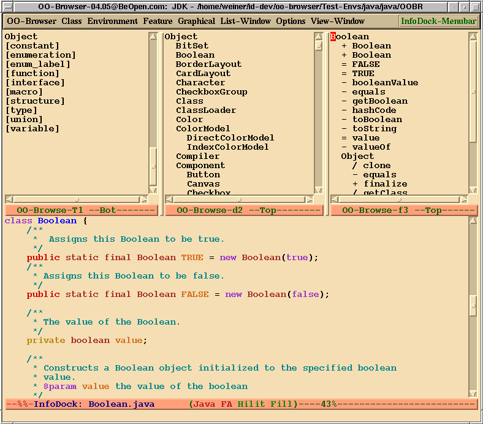

<!DOCTYPE html PUBLIC "-//W3C//DTD HTML 4.01 Transitional//EN" "http://www.w3.org/TR/html4/loose.dtd">
<html>
<!-- This manual is for the GNU OO-Browser
(Edition 5.0.2, Published 3 Aug 2016).

Copyright (C) 1996-2016  Free Software Foundation, Inc.

Permission is granted to copy, distribute and/or modify this document
under the terms of the GNU Free Documentation License, Version 1.3 or
any later version published by the Free Software Foundation.


GNU Hyperbole sofware is distributed under the terms of the GNU
General Public License version 3 or later, as published by the Free
Software Foundation, Inc.

The OO-Browser is distributed in the hope that it will be useful, but
WITHOUT ANY WARRANTY, without even the implied warranty of
MERCHANTABILITY or FITNESS FOR A PARTICULAR PURPOSE.

See the GNU General Public License for more details in the file,
"COPYING", within the OO-Browser package directory. -->
<!-- Created by GNU Texinfo 6.5, http://www.gnu.org/software/texinfo/ -->
<head>
<meta http-equiv="Content-Type" content="text/html; charset=utf-8">
<title>The OO-Browser Manual</title>

<meta name="description" content="The OO-Browser Manual">
<meta name="keywords" content="The OO-Browser Manual">
<meta name="resource-type" content="document">
<meta name="distribution" content="global">
<meta name="Generator" content="makeinfo">
<link href="#Top" rel="start" title="Top">
<link href="#Key-Index" rel="index" title="Key Index">
<link href="#SEC_Contents" rel="contents" title="Table of Contents">
<link href="dir.html#Top" rel="up" title="(dir)">
<style type="text/css">
<!--
a.summary-letter {text-decoration: none}
blockquote.indentedblock {margin-right: 0em}
blockquote.smallindentedblock {margin-right: 0em; font-size: smaller}
blockquote.smallquotation {font-size: smaller}
div.display {margin-left: 3.2em}
div.example {margin-left: 3.2em}
div.lisp {margin-left: 3.2em}
div.smalldisplay {margin-left: 3.2em}
div.smallexample {margin-left: 3.2em}
div.smalllisp {margin-left: 3.2em}
kbd {font-style: oblique}
pre.display {font-family: inherit}
pre.format {font-family: inherit}
pre.menu-comment {font-family: serif}
pre.menu-preformatted {font-family: serif}
pre.smalldisplay {font-family: inherit; font-size: smaller}
pre.smallexample {font-size: smaller}
pre.smallformat {font-family: inherit; font-size: smaller}
pre.smalllisp {font-size: smaller}
span.nolinebreak {white-space: nowrap}
span.roman {font-family: initial; font-weight: normal}
span.sansserif {font-family: sans-serif; font-weight: normal}
ul.no-bullet {list-style: none}
-->
</style>
<link rel="stylesheet" type="text/css" href="oo-browser.css">


</head>

<body lang="en">
<h1 class="settitle" align="center">The OO-Browser Manual</h1>


<a name="SEC_Overview"></a>
<h2 class="shortcontents-heading">Short Table of Contents</h2>

<div class="shortcontents">
<ul class="no-bullet">
<li><a name="stoc-Preface" href="#toc-Preface">Preface</a></li>
<li><a name="stoc-Introduction-1" href="#toc-Introduction-1">Introduction</a></li>
<li><a name="stoc-Working-with-Environments" href="#toc-Working-with-Environments">1 Working with Environments</a></li>
<li><a name="stoc-Using-the-OO_002dBrowser" href="#toc-Using-the-OO_002dBrowser">2 Using the OO-Browser</a></li>
<li><a name="stoc-OO_002dBrowser-Options" href="#toc-OO_002dBrowser-Options">3 OO-Browser Options</a></li>
<li><a name="stoc-Personal-Customization" href="#toc-Personal-Customization">4 Personal Customization</a></li>
<li><a name="stoc-Using-Standalone-OO_002dBrowser-Features" href="#toc-Using-Standalone-OO_002dBrowser-Features">5 Using Standalone OO-Browser Features</a></li>
<li><a name="stoc-Language_002dSpecific-Notes" href="#toc-Language_002dSpecific-Notes">6 Language-Specific Notes</a></li>
<li><a name="stoc-Glossary-1" href="#toc-Glossary-1">Appendix A Glossary</a></li>
<li><a name="stoc-Menus-1" href="#toc-Menus-1">Appendix B Menus</a></li>
<li><a name="stoc-Features-1" href="#toc-Features-1">Appendix C Features</a></li>
<li><a name="stoc-Commands-1" href="#toc-Commands-1">Appendix D Commands</a></li>
<li><a name="stoc-References-1" href="#toc-References-1">Appendix E References</a></li>
<li><a name="stoc-Key-Binding-Index" href="#toc-Key-Binding-Index">Key Binding Index</a></li>
<li><a name="stoc-Command-and-Variable-Index" href="#toc-Command-and-Variable-Index">Command and Variable Index</a></li>
<li><a name="stoc-Concept-Index-1" href="#toc-Concept-Index-1">Concept Index</a></li>

</ul>
</div>

<a name="SEC_Contents"></a>
<h2 class="contents-heading">Table of Contents</h2>

<div class="contents">
<ul class="no-bullet">
<li><a name="toc-Preface" href="#Top">Preface</a></li>
<li><a name="toc-Introduction-1" href="#Introduction">Introduction</a></li>
<li><a name="toc-Working-with-Environments" href="#Environments">1 Working with Environments</a>
<ul class="no-bullet">
  <li><a name="toc-Creating-Environments-1" href="#Creating-Environments">1.1 Creating Environments</a></li>
  <li><a name="toc-Building-Environments-1" href="#Building-Environments">1.2 Building Environments</a></li>
  <li><a name="toc-Saving-Environments-1" href="#Saving-Environments">1.3 Saving Environments</a></li>
  <li><a name="toc-Managing-Environment-Names-1" href="#Managing-Environment-Names">1.4 Managing Environment Names</a></li>
</ul></li>
<li><a name="toc-Using-the-OO_002dBrowser" href="#Usage">2 Using the OO-Browser</a>
<ul class="no-bullet">
  <li><a name="toc-Invoking-the-OO_002dBrowser" href="#Invoking">2.1 Invoking the OO-Browser</a></li>
  <li><a name="toc-Displaying-Top_002dLevel-Classes" href="#Top_002dLevel-Classes">2.2 Displaying Top-Level Classes</a></li>
  <li><a name="toc-Moving-to-Entries-1" href="#Moving-to-Entries">2.3 Moving to Entries</a></li>
  <li><a name="toc-Writing-a-Listing-to-a-File" href="#Saving-Listings">2.4 Writing a Listing to a File</a></li>
  <li><a name="toc-Browsing-Children-and-Parents" href="#Children-and-Parents">2.5 Browsing Children and Parents</a></li>
  <li><a name="toc-Browsing-Descendants-and-Ancestors" href="#Descendants-and-Ancestors">2.6 Browsing Descendants and Ancestors</a></li>
  <li><a name="toc-Viewing-and-Editing-1" href="#Viewing-and-Editing">2.7 Viewing and Editing</a></li>
  <li><a name="toc-Browsing-Elements-1" href="#Browsing-Elements">2.8 Browsing Elements</a></li>
  <li><a name="toc-Browsing-Categories-1" href="#Browsing-Categories">2.9 Browsing Categories</a></li>
  <li><a name="toc-Browsing-Protocols-1" href="#Browsing-Protocols">2.10 Browsing Protocols</a></li>
  <li><a name="toc-Browsing-Implementors-1" href="#Browsing-Implementors">2.11 Browsing Implementors</a></li>
  <li><a name="toc-Exiting-a-Listing-1" href="#Exiting-a-Listing">2.12 Exiting a Listing</a></li>
  <li><a name="toc-Quitting-and-Refreshing-the-OO_002dBrowser" href="#Quitting-and-Refreshing">2.13 Quitting and Refreshing the OO-Browser</a></li>
  <li><a name="toc-Using-the-Mouse-1" href="#Using-the-Mouse">2.14 Using the Mouse</a></li>
  <li><a name="toc-Getting-Help-1" href="#Getting-Help">2.15 Getting Help</a></li>
  <li><a name="toc-Locating-Entries-1" href="#Locating-Entries">2.16 Locating Entries</a></li>
  <li><a name="toc-Filtering-Entries-1" href="#Filtering-Entries">2.17 Filtering Entries</a></li>
  <li><a name="toc-Ordering-Entries-1" href="#Ordering-Entries">2.18 Ordering Entries</a></li>
  <li><a name="toc-Summarizing-Environments-and-Classes" href="#Getting-Statistics">2.19 Summarizing Environments and Classes</a></li>
  <li><a name="toc-Deleting-Classes-1" href="#Deleting-Classes">2.20 Deleting Classes</a></li>
  <li><a name="toc-Completing-Names-1" href="#Completing-Names">2.21 Completing Names</a></li>
  <li><a name="toc-Browsing-Graphically-1" href="#Browsing-Graphically">2.22 Browsing Graphically</a></li>
</ul></li>
<li><a name="toc-OO_002dBrowser-Options" href="#Options">3 OO-Browser Options</a>
<ul class="no-bullet">
  <li><a name="toc-Using-an-External-Viewer-or-Editor" href="#External-Viewing">3.1 Using an External Viewer or Editor</a></li>
  <li><a name="toc-Toggling-Inherited-Features-Display" href="#Inherited-Features">3.2 Toggling Inherited Features Display</a></li>
  <li><a name="toc-Adding-Features-to-a-Graphical-View" href="#Graphical-Feature-Display">3.3 Adding Features to a Graphical View</a></li>
  <li><a name="toc-Keeping-Viewed-Classes-1" href="#Keeping-Viewed-Classes">3.4 Keeping Viewed Classes</a></li>
  <li><a name="toc-Inverting-Ancestor-Trees" href="#Inverting-Ancestors">3.5 Inverting Ancestor Trees</a></li>
</ul></li>
<li><a name="toc-Personal-Customization" href="#Customization">4 Personal Customization</a></li>
<li><a name="toc-Using-Standalone-OO_002dBrowser-Features" href="#Standalone">5 Using Standalone OO-Browser Features</a></li>
<li><a name="toc-Language_002dSpecific-Notes" href="#Languages">6 Language-Specific Notes</a>
<ul class="no-bullet">
  <li><a name="toc-C-Specifics-1" href="#C-Specifics">6.1 C Specifics</a></li>
  <li><a name="toc-C_002b_002b-Specifics-1" href="#C_002b_002b-Specifics">6.2 C++ Specifics</a>
  <ul class="no-bullet">
    <li><a name="toc-C_002b_002b-Listing-Entries-1" href="#C_002b_002b-Listing-Entries">6.2.1 C++ Listing Entries</a></li>
    <li><a name="toc-Source-Code-Element-Selection" href="#C_002b_002b-Element-Selection">6.2.2 Source Code Element Selection</a></li>
    <li><a name="toc-C_002b_002b-Settings-1" href="#C_002b_002b-Settings">6.2.3 C++ Settings</a></li>
  </ul></li>
  <li><a name="toc-CLOS-Specifics-1" href="#CLOS-Specifics">6.3 CLOS Specifics</a>
  <ul class="no-bullet">
    <li><a name="toc-Method-Handling" href="#CLOS-Method-Handling">6.3.1 Method Handling</a></li>
    <li><a name="toc-CLOS-Settings-1" href="#CLOS-Settings">6.3.2 CLOS Settings</a></li>
  </ul></li>
  <li><a name="toc-Eiffel-Specifics-1" href="#Eiffel-Specifics">6.4 Eiffel Specifics</a>
  <ul class="no-bullet">
    <li><a name="toc-Eiffel-Listings-1" href="#Eiffel-Listings">6.4.1 Eiffel Listings</a></li>
    <li><a name="toc-Source-Code-Element-Selection-1" href="#Eiffel-Element-Selection">6.4.2 Source Code Element Selection</a></li>
    <li><a name="toc-Eiffel-Settings-1" href="#Eiffel-Settings">6.4.3 Eiffel Settings</a></li>
  </ul></li>
  <li><a name="toc-Java-Specifics-1" href="#Java-Specifics">6.5 Java Specifics</a>
  <ul class="no-bullet">
    <li><a name="toc-Java-Interfaces-1" href="#Java-Interfaces">6.5.1 Java Interfaces</a></li>
    <li><a name="toc-Source-Code-Element-Selection-2" href="#Java-Element-Selection">6.5.2 Source Code Element Selection</a></li>
    <li><a name="toc-Java-Settings-1" href="#Java-Settings">6.5.3 Java Settings</a></li>
  </ul></li>
  <li><a name="toc-Objective_002dC-Specifics-1" href="#Objective_002dC-Specifics">6.6 Objective-C Specifics</a>
  <ul class="no-bullet">
    <li><a name="toc-Objective_002dC-Categories-1" href="#Objective_002dC-Categories">6.6.1 Objective-C Categories</a></li>
    <li><a name="toc-Objective_002dC-Protocols-1" href="#Objective_002dC-Protocols">6.6.2 Objective-C Protocols</a></li>
    <li><a name="toc-Source-Code-Element-Selection-3" href="#Objective_002dC-Element-Selection">6.6.3 Source Code Element Selection</a></li>
    <li><a name="toc-Objective_002dC-Settings-1" href="#Objective_002dC-Settings">6.6.4 Objective-C Settings</a></li>
  </ul></li>
  <li><a name="toc-Python-Specifics-1" href="#Python-Specifics">6.7 Python Specifics</a></li>
</ul></li>
<li><a name="toc-Glossary-1" href="#Glossary">Appendix A Glossary</a></li>
<li><a name="toc-Menus-1" href="#Menus">Appendix B Menus</a>
<ul class="no-bullet">
  <li><a name="toc-OO_002dBrowser-Menu-1" href="#OO_002dBrowser-Menu">B.1 OO-Browser Menu</a></li>
  <li><a name="toc-Class-Menu-1" href="#Class-Menu">B.2 Class Menu</a></li>
  <li><a name="toc-Environment-Menu-1" href="#Environment-Menu">B.3 Environment Menu</a></li>
  <li><a name="toc-Feature-Menu-1" href="#Feature-Menu">B.4 Feature Menu</a></li>
  <li><a name="toc-Graphical-Menu-1" href="#Graphical-Menu">B.5 Graphical Menu</a></li>
  <li><a name="toc-List_002dWindow-Menu-1" href="#List_002dWindow-Menu">B.6 List-Window Menu</a></li>
  <li><a name="toc-Options-Menu-1" href="#Options-Menu">B.7 Options Menu</a></li>
  <li><a name="toc-View_002dWindow-Menu-1" href="#View_002dWindow-Menu">B.8 View-Window Menu</a></li>
</ul></li>
<li><a name="toc-Features-1" href="#Features">Appendix C Features</a></li>
<li><a name="toc-Commands-1" href="#Commands">Appendix D Commands</a></li>
<li><a name="toc-References-1" href="#References">Appendix E References</a></li>
<li><a name="toc-Key-Binding-Index" href="#Key-Index">Key Binding Index</a></li>
<li><a name="toc-Command-and-Variable-Index" href="#Command-Index">Command and Variable Index</a></li>
<li><a name="toc-Concept-Index-1" href="#Concept-Index">Concept Index</a></li>

</ul>
</div>


<a name="Top"></a>
<div class="header">
<p>
Next: <a href="#Introduction" accesskey="n" rel="next">Introduction</a>, Previous: <a href="dir.html#Top" accesskey="p" rel="prev">(dir)</a>, Up: <a href="dir.html#Top" accesskey="u" rel="up">(dir)</a> &nbsp; [<a href="#SEC_Contents" title="Table of contents" rel="contents">Contents</a>][<a href="#Key-Index" title="Index" rel="index">Index</a>]</p>
</div>
<a name="Preface"></a>
<h2 class="unnumbered">Preface</h2>

<CENTER><H1>The GNU OO-Browser</H1></CENTER>

<CENTER><H2>The Multi-language Object-Oriented Code Browser</H2></CENTER>

Copyright &copy; 1996-2016  Free Software Foundation, Inc.<BR>

<P>The OO-Browser is available for use, modification, and distribution under
the terms of the GNU General Public License (GPL) Version 3 as published
by the Free Software Foundation, with all rights and responsibilities
thereof.</P>

<P>The OO-Browser is distributed in the hope that it will be useful, but
WITHOUT ANY WARRANTY, without even the implied warranty of MERCHANTABILITY
or FITNESS FOR A PARTICULAR PURPOSE.</P>

<PRE>
Edition 5.0.2
Printed August 3, 2016.

  E-mail:    <oo-browser-users@gnu.org>
  Web:       http://savannah.nongnu.org/projects/oo-browser
</PRE>

<CENTER>
  <DT><B>Screenshot of the C++ OO-Browser</B></DT><BR><BR>
  <BR>
</CENTER>


<a name="index-credits"></a>
<a name="index-OO_002dBrowser_002c-obtaining"></a>
<a name="index-anonymous-ftp"></a>
<p>The OO-Browser was designed and written by Bob Weiner.  Motorola, Inc.
helped fund early work.  Torgeir Veimo and Mark Stern helped write the X
OO-Browser core.  Jeff Sparkes helped with the Java language
support. Harri Pasanen contributed the initial Python language support
(derived from the C++ support).  Kirill Katsnelson adapted the graphical
OO-Browser for use with Windows.
</p>
<p>The OO-Browser has been updated to work well with the very latest
versions of GNU Emacs.
</p>
<p>The latest available release of the OO-Browser is always available for
download from <samp>www.sourceforge.net/projects/oo-browser</samp>.
They include the OO-Browser with all supported languages and full
source code, a printed copy of this manual and installation support.
Ongoing technical support and automatic upgrades are available
separately.
</p>
<a name="index-file_002c-INSTALL"></a>
<a name="index-INSTALL-file"></a>
<a name="index-installation"></a>
<p>The OO-Browser must be installed at your site before you can use it.  
Instructions for installing the OO-Browser are in the <samp>INSTALL</samp>
file in the root directory of the OO-Browser distribution, i.e. below
<samp>oo-browser/</samp>.  If you are using InfoDock, the OO-Browser is
pre-installed so you can skip the installation instructions.
</p>
<p>We hope you enjoy using the OO-Browser and that it improves your
productivity. If it does, consider sending us a quote that discusses how
it helps you, for use on our web site.  E-mail it to
&lt;oo-browser-users@gnu.org&gt;.
</p>
<table class="menu" border="0" cellspacing="0">
<tr><td align="left" valign="top">&bull; <a href="#Introduction" accesskey="1">Introduction</a>:</td><td>&nbsp;&nbsp;</td><td align="left" valign="top">
</td></tr>
<tr><td align="left" valign="top">&bull; <a href="#Environments" accesskey="2">Environments</a>:</td><td>&nbsp;&nbsp;</td><td align="left" valign="top">
</td></tr>
<tr><td align="left" valign="top">&bull; <a href="#Usage" accesskey="3">Usage</a>:</td><td>&nbsp;&nbsp;</td><td align="left" valign="top">
</td></tr>
<tr><td align="left" valign="top">&bull; <a href="#Options" accesskey="4">Options</a>:</td><td>&nbsp;&nbsp;</td><td align="left" valign="top">
</td></tr>
<tr><td align="left" valign="top">&bull; <a href="#Customization" accesskey="5">Customization</a>:</td><td>&nbsp;&nbsp;</td><td align="left" valign="top">
</td></tr>
<tr><td align="left" valign="top">&bull; <a href="#Standalone" accesskey="6">Standalone</a>:</td><td>&nbsp;&nbsp;</td><td align="left" valign="top">
</td></tr>
<tr><td align="left" valign="top">&bull; <a href="#Languages" accesskey="7">Languages</a>:</td><td>&nbsp;&nbsp;</td><td align="left" valign="top">
</td></tr>
<tr><td align="left" valign="top">&bull; <a href="#Glossary" accesskey="8">Glossary</a>:</td><td>&nbsp;&nbsp;</td><td align="left" valign="top">
</td></tr>
<tr><td align="left" valign="top">&bull; <a href="#Menus" accesskey="9">Menus</a>:</td><td>&nbsp;&nbsp;</td><td align="left" valign="top">
</td></tr>
<tr><td align="left" valign="top">&bull; <a href="#Features">Features</a>:</td><td>&nbsp;&nbsp;</td><td align="left" valign="top">
</td></tr>
<tr><td align="left" valign="top">&bull; <a href="#Commands">Commands</a>:</td><td>&nbsp;&nbsp;</td><td align="left" valign="top">
</td></tr>
<tr><td align="left" valign="top">&bull; <a href="#References">References</a>:</td><td>&nbsp;&nbsp;</td><td align="left" valign="top">
</td></tr>
<tr><td align="left" valign="top">&bull; <a href="#Key-Index">Key Index</a>:</td><td>&nbsp;&nbsp;</td><td align="left" valign="top">
</td></tr>
<tr><td align="left" valign="top">&bull; <a href="#Command-Index">Command Index</a>:</td><td>&nbsp;&nbsp;</td><td align="left" valign="top">
</td></tr>
<tr><td align="left" valign="top">&bull; <a href="#Concept-Index">Concept Index</a>:</td><td>&nbsp;&nbsp;</td><td align="left" valign="top">
</td></tr>
</table>

<hr>
<a name="Introduction"></a>
<div class="header">
<p>
Next: <a href="#Environments" accesskey="n" rel="next">Environments</a>, Previous: <a href="#Top" accesskey="p" rel="prev">Top</a>, Up: <a href="#Top" accesskey="u" rel="up">Top</a> &nbsp; [<a href="#SEC_Contents" title="Table of contents" rel="contents">Contents</a>][<a href="#Key-Index" title="Index" rel="index">Index</a>]</p>
</div>
<a name="Introduction-1"></a>
<h2 class="unnumbered">Introduction</h2>

<p>This edition of the OO-Browser User Manual is for use with any version
4.06 or greater of the OO-Browser.
</p>
<p>This manual documents the user interface and operation of the
OO-Browser.  It assumes a very basic familiarity in the use of InfoDock,
XEmacs or Emacs, as documented in <cite>[Stallman 93]</cite>.  It also assumes
familiarity with object-oriented software concepts.  However, many of
the technical terms used in this manual are defined within the glossary.
See <a href="#Glossary">Glossary</a>.
</p>
<p>The OO-Browser is designed to be easy to use.  It has point and click
and menu-based interfaces that you can use, if you prefer, instead of
learning all of the keystroke commands.  The body of this manual
discusses the mouse and keyboard interfaces.  If you would like to study
the menus, see <a href="#Menus">Menus</a>.
</p>
<p>Chapter 1 of the manual discusses OO-Browser Environments as a means of
organizing browser work (see <a href="#Environments">Working with
Environments</a>).  See <a href="#Usage">Using the OO-Browser</a>, if you would rather
start with the interactive features of the browser.  See <a href="#Features">Features</a>,
for a quick overview of the browser&rsquo;s features.
</p>
<p>Throughout this manual, sequences of keystrokes are delimited by curly
braces { }, function names are delimited by parentheses ( ), and
variable names look like <code>this</code>.
</p>
<br>
<div align="center">&mdash;&mdash;&mdash;&mdash;&mdash;&mdash;&ndash;
</div><br>

<a name="index-OO_002dBrowser_002c-the"></a>
<a name="index-Smalltalk"></a>
<p>The <em>OO-Browser</em> (pronounced owe-owe-browse-er) is a multi-windowed,
interactive, object-oriented class browser designed for professional
use.  It is one of the world&rsquo;s most powerful tools for exploring and
developing object-oriented software.  Its user interface is a bit like
the well-known Smalltalk browsers <cite>[Goldberg 83]</cite>, yet its commands
are more flexible and easier to use.
</p>
<a name="index-Info"></a>
<p>The OO-Browser has a number of exceptional features:
</p><ul>
<li> It presently supports seven object-oriented languages (C++, CLOS/Lisp,
Eiffel, Java, Objective-C, Python and Smalltalk), one
non-object-oriented language (C), and one documentation language (GNU
Info).

</li><li> It is fast and works exclusively from the source code of libraries and
programs to be browsed.  Hence, it does not require a compiler.

</li><li> It may be used for both system exploration and maintenance as part of a
professional software development tool chest.

</li><li> It quickly displays views of several important object-oriented
relationships, over large sets of classes, not just a single
class at a time.

</li><li> It has a completely direct-manipulation interface with multiple modalities.

</li><li> It is integrated with a powerful editing environment that can be
customized to meet personal work styles.
</li></ul>

<a name="index-listing-buffer"></a>
<a name="index-listing-window"></a>
<a name="index-viewer-window"></a>
<a name="index-user-interface"></a>
<p>&lt;P&gt;Refer to the following picture as we highlight the major
components of the OO-Browser user interface.&lt;/P&gt;
</p>
<p>The windows across the top of the OO-Browser frame are called
<em>listing windows</em>; they display <em>listing buffers</em> that list
class, method and attribute names based on user-specified queries.
The <em>viewer window</em> fills the bottom half of the frame.  It is used
to display class source, summary information and help on the OO-Browser
command set.  The picture shows part of a Java Boolean class in the
viewer window.
</p>
<p>All key bindings described throughout this manual are effective only
within listing buffers, unless otherwise indicated.  This means
that the keys may not be used within the buffers displayed in the class
viewer window.  Instead, all normal editing keys are available in most
viewer window buffers.
</p>
<a name="index-textual-interface"></a>
<div class="float"><a name="image_003aText-OO_002dBrowser"></a>

<div align="center">
</div><div class="float-caption"><p><strong>Image 1: </strong>The Textual OO-Browser Screenshot</p></div></div><br>


<hr>
<a name="Environments"></a>
<div class="header">
<p>
Next: <a href="#Usage" accesskey="n" rel="next">Usage</a>, Previous: <a href="#Introduction" accesskey="p" rel="prev">Introduction</a>, Up: <a href="#Top" accesskey="u" rel="up">Top</a> &nbsp; [<a href="#SEC_Contents" title="Table of contents" rel="contents">Contents</a>][<a href="#Key-Index" title="Index" rel="index">Index</a>]</p>
</div>
<a name="Working-with-Environments"></a>
<h2 class="chapter">1 Working with Environments</h2>

<a name="index-Environment_002c-the"></a>
<a name="index-Library-code-directories"></a>
<a name="index-System-code-directories"></a>
<a name="index-reusable-libraries"></a>
<a name="index-system_002dspecific-code"></a>
<p>In order to browse code from a set of libraries or an entire system,
an OO-Browser Environment must first be created.  An OO-Browser
<em>Environment</em> defines the set of entities that are 
browsable within a session of the browser.  The first step in creating
an Environment is to create an <em>Environment specification</em> which
tells the browser the name of the Environment, where to save its
browsing data, what programming language the Environment should support,
and what directories to scan for source code to browse.  (See <a href="#Creating-Environments">Creating Environments</a>, for more information.)
</p>
<p>Once an Environment has been specified, it can be built, a process which
scans the set of directory trees given in the Environment specification
and saves data about classes, methods, attributes, formal protocols
(interfaces) and relationships among these entities for later browsing.
</p>
<p>Whenever the OO-Browser is in use, an Environment is selected.  The
phrase, <em>the Environment</em>, refers to the current OO-Browser
Environment.  Many browser commands depend upon information in the
Environment.
</p>
<p>The set of source files included in an Environment is specified by two
lists of top-level (root) directories whose subdirectories are
automatically scanned by the OO-Browser.  The first list of directories
is called the <em>system-specific directory list</em>; it defines the
locations of unreleased code being developed, often for a particular
system.  The second list is called the <em>reusable library directory
list</em>; it defines the locations of stable, reusable classes that have
been released for general use.  All class names within a single
Environment must be unique to ensure proper operation of the browser
(Duplicate classes will be flagged by the browser for later removal.
Use {<kbd>M-e</kbd>} <code>(br-env-stats)</code> in a browser listing window to
help find duplicate classes.)
</p>
<p>The OO-Browser lets you name, create, update and save Environments.
Once an Environment has been created, it may be loaded at any time.  The
browser will then use this Environment for all of its operations until
another one is loaded.
</p>
<p>Within each editor session, the browser caches a separate Environment
for each programming language on which it is used.  Thus, if you switch
from Eiffel to C++ browsing and then back to Eiffel browsing, the Eiffel
environment will not need to be reloaded; it will appear immediately and
the frame will appear as if the Eiffel OO-Browser were invoked for the
first time.
</p>
<p>Environment files are automatically saved by the OO-Browser so that
you need never become familiar with their format.  You are responsible
for requesting the use of a particular Environment whenever
desired.  See <a href="#Invoking">Invoking the OO-Browser</a>, for information on
how to specify a different Environment file for use.
</p>
<table class="menu" border="0" cellspacing="0">
<tr><td align="left" valign="top">&bull; <a href="#Creating-Environments" accesskey="1">Creating Environments</a>:</td><td>&nbsp;&nbsp;</td><td align="left" valign="top">
</td></tr>
<tr><td align="left" valign="top">&bull; <a href="#Building-Environments" accesskey="2">Building Environments</a>:</td><td>&nbsp;&nbsp;</td><td align="left" valign="top">
</td></tr>
<tr><td align="left" valign="top">&bull; <a href="#Saving-Environments" accesskey="3">Saving Environments</a>:</td><td>&nbsp;&nbsp;</td><td align="left" valign="top">
</td></tr>
<tr><td align="left" valign="top">&bull; <a href="#Managing-Environment-Names" accesskey="4">Managing Environment Names</a>:</td><td>&nbsp;&nbsp;</td><td align="left" valign="top">
</td></tr>
</table>


<hr>
<a name="Creating-Environments"></a>
<div class="header">
<p>
Next: <a href="#Building-Environments" accesskey="n" rel="next">Building Environments</a>, Previous: <a href="#Environments" accesskey="p" rel="prev">Environments</a>, Up: <a href="#Environments" accesskey="u" rel="up">Environments</a> &nbsp; [<a href="#SEC_Contents" title="Table of contents" rel="contents">Contents</a>][<a href="#Key-Index" title="Index" rel="index">Index</a>]</p>
</div>
<a name="Creating-Environments-1"></a>
<h3 class="section">1.1 Creating Environments</h3>

<a name="index-Environment-loading"></a>
<a name="index-loading-an-Environment"></a>
<a name="index-OO_002dBrowser_002c-invoking"></a>
<a name="index-C_002dc-o"></a>
<a name="index-oo_002dbrowser"></a>
<a name="index-br_002denv_002ddefault_002dfile"></a>
<a name="index-file_002c-OOBR"></a>
<a name="index-default-Environment"></a>
<p>Environments may be specified, built and/or loaded at any time all with
one command, whether or not the browser user interface is on screen.
Use the {<kbd>C-c o</kbd>} <code>(oo-browser)</code> command to select a
language and Environment to create or to load by name.  (Some
programming modes may override that key binding, so a menu item or
&lsquo;<samp>M-x oo-browser <span class="key">RET</span></samp>&rsquo; are the surefire ways to invoke this
command.)
</p>
<p>If you have browsed a prior Environment during your current editor
session, you will be asked whether or not to reload that Environment.
If you type &lsquo;<samp>n</samp>&rsquo; for no or if no prior Environment has been loaded,
you will be prompted for an Environment name to load; full completion is
available.
</p>
<p>If instead of typing an Environment name, you simply press Return, you
will be prompted for the pathname of an Environment file to load.  This
lets you specify Environments created prior to version 4 of the
OO-Browser, which did not have names.  The default is to load the
Environment file in the current directory whose name is given by the
<code>br-env-default-file</code> variable, which is normally set to
<samp>OOBR</samp>.
</p>
<a name="index-Environment_002c-default"></a>
<p>If you give an Environment name or file which does not exist, you will
be prompted to create a specification for this new Environment.  The
recommended default name for Environment files is, <samp>OOBR</samp>.  It is
best to save each Environment within the top-level directory of the
first system-specific directory of the Environment, i.e. the root
directory of a system&rsquo;s code.
</p>
<a name="index-Environment-specification"></a>
<p>Every Environment must be specified before it can be built or used.
Here are the Environment specification components for which you will be
prompted:
</p>
<dl compact="compact">
<dt><code>Top-level system-specific code directories</code></dt>
<dd><p>A list of root directories below which system source code may be
found.  Each directory is prompted for individually and argument
completion is available.
</p>
</dd>
<dt><code>Top-level reusable library code directories</code></dt>
<dd><p>A list of root directories below which library source code may be
found.  Each directory is prompted for individually and argument
completion is available.
</p>
</dd>
</dl>

<a name="index-br_002denv_002dbrowse"></a>
<a name="index-initialization-file"></a>
<a name="index-Environment_002c-creating"></a>
<p>Environment specifications are useful when you want to describe a number
of Environments to the OO-Browser yet also want to defer their
construction until later.  Large environments then can be built
overnight.  When in an OO-Browser listing window, multiple Environment
specifications may be created in quick succession with the
{<kbd>C-c C-c</kbd>} <code>(br-env-browse)</code> command, which prompts for all
necessary information to create an Environment specification; simply
give it a non-existing Environment name and answer no when prompted to
build the Environment to defer building for later.  The OO-Browser will
automatically prompt you to build an Environment specification whenever
you try to load it for browsing.
</p>

<hr>
<a name="Building-Environments"></a>
<div class="header">
<p>
Next: <a href="#Saving-Environments" accesskey="n" rel="next">Saving Environments</a>, Previous: <a href="#Creating-Environments" accesskey="p" rel="prev">Creating Environments</a>, Up: <a href="#Environments" accesskey="u" rel="up">Environments</a> &nbsp; [<a href="#SEC_Contents" title="Table of contents" rel="contents">Contents</a>][<a href="#Key-Index" title="Index" rel="index">Index</a>]</p>
</div>
<a name="Building-Environments-1"></a>
<h3 class="section">1.2 Building Environments</h3>

<a name="index-Environment-building"></a>
<p>An Environment specification tells the OO-Browser what to include in the
Environment, but the Environment must be built by scanning the source
directories before it can be used.  When a new Environment is to be
built or when a large number of changes have been made to classes in the
current Environment, the following commands are useful:
</p>
<a name="index-br_002denv_002drebuild"></a>
<a name="index-br_002dlib_002drebuild"></a>
<a name="index-br_002dsys_002drebuild"></a>
<a name="index-C_002dc-C_002de"></a>
<a name="index-L"></a>
<a name="index-S"></a>
<dl compact="compact">
<dt>{<kbd>C-c C-e</kbd>} <code>(br-env-rebuild)</code> within an OO-Browser</dt>
<dd><p>listing window scans all Environment source code directories.  This
prompts for whether or not to use a background process to build the
Environment (if a &lsquo;<samp>make</samp>&rsquo; program is available), so that other tasks
may be performed while the build is active.  With a prefix argument
under InfoDock or XEmacs, {<kbd>C-u C-c C-e</kbd>}, it runs the build in the
background and produces a stack backtrace if an error occurs during the
build;
</p>
</dd>
<dt>{<kbd>L</kbd>} <code>(br-lib-rebuild)</code></dt>
<dd><p>scans only the reusable library directories of the Environment;
</p>
</dd>
<dt>{<kbd>S</kbd>} <code>(br-sys-rebuild)</code></dt>
<dd><p>scans only the system-specific directories of the Environment.
</p></dd>
</dl>

<p>Whenever class inheritance relations or the set of attributes or methods
for a class changes, the Environment must be rebuilt, but this is
generally a fast process.
</p>
<a name="index-Environment-building_002c-batch"></a>
<a name="index-large-Environments"></a>
<p>The OO-Browser lets you build large Environments in the background of
your interactive session (if a &lsquo;<samp>make</samp>&rsquo; program is available),
allowing other work to proceed without waiting on a build.  When a build
is complete, the OO-Browser will prompt you and give you a choice of
whether or not to browse the built Environment immediately.
</p>
<a name="index-batch-Environment-building"></a>
<a name="index-scheduling-Environment-builds"></a>
<p>Alternatively, any number of very large Environments may be built
overnight by invoking Emacs in batch mode from a shell script.  To do
this, you must first create an Environment specification so that the
browser knows what to build.  See <a href="#Creating-Environments">Creating Environments</a>.  Then use a
shell command line of the form below (substitute your local OO-Browser
installation directory for <em>Br-Dir</em>):<br>
</p><div class="example">
<pre class="example">cd <em>Br-Dir</em>; <em>emacs</em> -batch -l ./oo-browser.elc <em>Env-Spec-File-1</em> \
   ... <em>Env-Spec-File-N</em> -f br-env-batch-build &gt; <em>Log-File</em>
</pre></div>
<p>for example:<br>
</p><div class="example">
<pre class="example">cd oo-browser; emacs -batch -l ./oo-browser.elc ~/OOBR \
   -f br-env-batch-build &gt; log-file
</pre></div>

<p>Redirection of the standard output stream to a log file for later examination
helps ensure that either the Environment build is successful or an error 
is logged.
</p>

<hr>
<a name="Saving-Environments"></a>
<div class="header">
<p>
Next: <a href="#Managing-Environment-Names" accesskey="n" rel="next">Managing Environment Names</a>, Previous: <a href="#Building-Environments" accesskey="p" rel="prev">Building Environments</a>, Up: <a href="#Environments" accesskey="u" rel="up">Environments</a> &nbsp; [<a href="#SEC_Contents" title="Table of contents" rel="contents">Contents</a>][<a href="#Key-Index" title="Index" rel="index">Index</a>]</p>
</div>
<a name="Saving-Environments-1"></a>
<h3 class="section">1.3 Saving Environments</h3>

<p>The OO-Browser automatically builds and saves Environments in most
cases.  Occasionally you may find a need to force the Environment to
be saved to a file, as in the case when you want to save an Environment
under a different file name.
</p>
<a name="index-C_002dc-C_002ds"></a>
<a name="index-br_002denv_002dsave"></a>
<p>Use {<kbd>C-c C-s</kbd>}, the <code>(br-env-save)</code> command, to force a save
of the current Environment.  The command will prompt for a file to save
to, with the present Environment file name as the default.
</p>

<hr>
<a name="Managing-Environment-Names"></a>
<div class="header">
<p>
Previous: <a href="#Saving-Environments" accesskey="p" rel="prev">Saving Environments</a>, Up: <a href="#Environments" accesskey="u" rel="up">Environments</a> &nbsp; [<a href="#SEC_Contents" title="Table of contents" rel="contents">Contents</a>][<a href="#Key-Index" title="Index" rel="index">Index</a>]</p>
</div>
<a name="Managing-Environment-Names-1"></a>
<h3 class="section">1.4 Managing Environment Names</h3>

<a name="index-Environment-names"></a>
<a name="index-managing-Environment-names"></a>
<a name="index-naming-Environments"></a>
<p>The OO-Browser offers a set of menu and keyboard-based commands for
managing user-specific names associated with Environment files. The
menu commands are found on the <code>Environment</code> menu within browser
listing buffers.  See <a href="#Menus">Menus</a>.  The related keyboard commands are for
use within listing buffers.
</p>
<a name="index-br_002dnames_002dfile"></a>
<a name="index-file_002c-_007e_002f_002eoo_002dbrowser"></a>
<a name="index-file_002c-c_003a_002f_005foo_002dbrowser"></a>
<p>Each time you create an Environment, you give it a memorable name which
is stored with the associated Environment file name, in a file
given by the variable, <code>br-names-file</code>.  This variable is set to
<samp>~/.oo-browser</samp> on UNIX-like OSes and <samp>c:/_oo-browser</samp> on
Microsoft operating systems.  This <em>Environment names file</em> is
loaded by the OO-Browser at startup so that it can offer completion to
assist you when entering Environment names.  The Environment names file
is automatically saved whenever necessary by the browser. 
</p>
<a name="index-M_002dl"></a>
<a name="index-br_002dnames_002ddisplay"></a>
<p>Once an Environment has been loaded, your full list of Environment names 
can be displayed with the {<kbd>M-l</kbd>} (br-names-display) command.
This shows each name together with its Environment file name.
</p>
<a name="index-M_002da"></a>
<a name="index-br_002dname_002dadd"></a>
<p>If you want to browse an Environment created by another user or want to
add additional names to an Environment, when in the browser, use the 
{<kbd>M-a</kbd>} (br-name-add) command.  This will prompt for a name and an 
existing Environment file with which to associate the name.
</p>
<a name="index-M_002dn"></a>
<a name="index-br_002dname_002dchange"></a>
<a name="index-M_002dm"></a>
<a name="index-br_002dname_002dremove"></a>
<a name="index-M_002dr"></a>
<a name="index-br_002dname_002dreplace"></a>
<p>Use the {<kbd>M-n</kbd>} (br-name-change) command to rename an
Environment.  The command, {<kbd>M-m</kbd>} (br-name-remove), will delete
an existing name.  It removes the name only, not the Environment itself.
The {<kbd>M-r</kbd>} (br-name-replace) command will change the Environment
file associated with a particular name.
</p>

<hr>
<a name="Usage"></a>
<div class="header">
<p>
Next: <a href="#Options" accesskey="n" rel="next">Options</a>, Previous: <a href="#Environments" accesskey="p" rel="prev">Environments</a>, Up: <a href="#Top" accesskey="u" rel="up">Top</a> &nbsp; [<a href="#SEC_Contents" title="Table of contents" rel="contents">Contents</a>][<a href="#Key-Index" title="Index" rel="index">Index</a>]</p>
</div>
<a name="Using-the-OO_002dBrowser"></a>
<h2 class="chapter">2 Using the OO-Browser</h2>

<table class="menu" border="0" cellspacing="0">
<tr><td align="left" valign="top">&bull; <a href="#Invoking" accesskey="1">Invoking</a>:</td><td>&nbsp;&nbsp;</td><td align="left" valign="top">Invoking the OO-Browser
</td></tr>
<tr><td align="left" valign="top">&bull; <a href="#Top_002dLevel-Classes" accesskey="2">Top-Level Classes</a>:</td><td>&nbsp;&nbsp;</td><td align="left" valign="top">Displaying Top-Level Classes
</td></tr>
<tr><td align="left" valign="top">&bull; <a href="#Moving-to-Entries" accesskey="3">Moving to Entries</a>:</td><td>&nbsp;&nbsp;</td><td align="left" valign="top">
</td></tr>
<tr><td align="left" valign="top">&bull; <a href="#Saving-Listings" accesskey="4">Saving Listings</a>:</td><td>&nbsp;&nbsp;</td><td align="left" valign="top">Writing a Listing to a File
</td></tr>
<tr><td align="left" valign="top">&bull; <a href="#Children-and-Parents" accesskey="5">Children and Parents</a>:</td><td>&nbsp;&nbsp;</td><td align="left" valign="top">Browsing Children and Parents
</td></tr>
<tr><td align="left" valign="top">&bull; <a href="#Descendants-and-Ancestors" accesskey="6">Descendants and Ancestors</a>:</td><td>&nbsp;&nbsp;</td><td align="left" valign="top">Browsing Descendants and Ancestors
</td></tr>
<tr><td align="left" valign="top">&bull; <a href="#Viewing-and-Editing" accesskey="7">Viewing and Editing</a>:</td><td>&nbsp;&nbsp;</td><td align="left" valign="top">
</td></tr>
<tr><td align="left" valign="top">&bull; <a href="#Browsing-Elements" accesskey="8">Browsing Elements</a>:</td><td>&nbsp;&nbsp;</td><td align="left" valign="top">
</td></tr>
<tr><td align="left" valign="top">&bull; <a href="#Browsing-Categories" accesskey="9">Browsing Categories</a>:</td><td>&nbsp;&nbsp;</td><td align="left" valign="top">
</td></tr>
<tr><td align="left" valign="top">&bull; <a href="#Browsing-Protocols">Browsing Protocols</a>:</td><td>&nbsp;&nbsp;</td><td align="left" valign="top">
</td></tr>
<tr><td align="left" valign="top">&bull; <a href="#Browsing-Implementors">Browsing Implementors</a>:</td><td>&nbsp;&nbsp;</td><td align="left" valign="top">
</td></tr>
<tr><td align="left" valign="top">&bull; <a href="#Exiting-a-Listing">Exiting a Listing</a>:</td><td>&nbsp;&nbsp;</td><td align="left" valign="top">
</td></tr>
<tr><td align="left" valign="top">&bull; <a href="#Quitting-and-Refreshing">Quitting and Refreshing</a>:</td><td>&nbsp;&nbsp;</td><td align="left" valign="top">Quitting and Refreshing the OO-Browser
</td></tr>
<tr><td align="left" valign="top">&bull; <a href="#Using-the-Mouse">Using the Mouse</a>:</td><td>&nbsp;&nbsp;</td><td align="left" valign="top">
</td></tr>
<tr><td align="left" valign="top">&bull; <a href="#Getting-Help">Getting Help</a>:</td><td>&nbsp;&nbsp;</td><td align="left" valign="top">
</td></tr>
<tr><td align="left" valign="top">&bull; <a href="#Locating-Entries">Locating Entries</a>:</td><td>&nbsp;&nbsp;</td><td align="left" valign="top">
</td></tr>
<tr><td align="left" valign="top">&bull; <a href="#Filtering-Entries">Filtering Entries</a>:</td><td>&nbsp;&nbsp;</td><td align="left" valign="top">
</td></tr>
<tr><td align="left" valign="top">&bull; <a href="#Ordering-Entries">Ordering Entries</a>:</td><td>&nbsp;&nbsp;</td><td align="left" valign="top">
</td></tr>
<tr><td align="left" valign="top">&bull; <a href="#Getting-Statistics">Getting Statistics</a>:</td><td>&nbsp;&nbsp;</td><td align="left" valign="top">Summarizing Environments and Classes
</td></tr>
<tr><td align="left" valign="top">&bull; <a href="#Deleting-Classes">Deleting Classes</a>:</td><td>&nbsp;&nbsp;</td><td align="left" valign="top">
</td></tr>
<tr><td align="left" valign="top">&bull; <a href="#Completing-Names">Completing Names</a>:</td><td>&nbsp;&nbsp;</td><td align="left" valign="top">
</td></tr>
<tr><td align="left" valign="top">&bull; <a href="#Browsing-Graphically">Browsing Graphically</a>:</td><td>&nbsp;&nbsp;</td><td align="left" valign="top">
</td></tr>
</table>

<hr>
<a name="Invoking"></a>
<div class="header">
<p>
Next: <a href="#Top_002dLevel-Classes" accesskey="n" rel="next">Top-Level Classes</a>, Previous: <a href="#Usage" accesskey="p" rel="prev">Usage</a>, Up: <a href="#Usage" accesskey="u" rel="up">Usage</a> &nbsp; [<a href="#SEC_Contents" title="Table of contents" rel="contents">Contents</a>][<a href="#Key-Index" title="Index" rel="index">Index</a>]</p>
</div>
<a name="Invoking-the-OO_002dBrowser"></a>
<h3 class="section">2.1 Invoking the OO-Browser</h3>

<a name="index-invoking-the-OO_002dBrowser"></a>
<a name="index-starting-the-OO_002dBrowser"></a>
<a name="index-C_002dc-o-1"></a>
<a name="index-oo_002dbrowser-1"></a>
<a name="index-language-support"></a>
<p>The OO-Browser supports the following languages: C++, C, CLOS (Lisp),
Eiffel, Java, Info (the online manual format), Objective-C, Python and
Smalltalk.  Use {<kbd>C-c o</kbd>} or, if that key has not been setup,
use &lsquo;<samp>M-x oo-browser <span class="key">RET</span></samp>&rsquo; to browse source written in any of
the above languages.  This command will prompt for the name of an
existing or new Environment to browse, and then will either create,
build or load the Environment, depending on the state of the Environment
specification.  After the Environment is built, the browser will display
the entire set of classes defined or referenced within the Environment.
(Choose C++ as the language if you are browsing plain C code.)
</p>
<a name="index-c_002b_002b_002dbrowse"></a>
<a name="index-clos_002dbrowse"></a>
<a name="index-eif_002dbrowse"></a>
<a name="index-java_002dbrowse"></a>
<a name="index-info_002dbrowse"></a>
<a name="index-objc_002dbrowse"></a>
<a name="index-python_002dbrowse"></a>
<a name="index-smt_002dbrowse"></a>
<a name="index-Environment-file"></a>
<a name="index-prefix-argument"></a>
<a name="index-Environment_002c-prompting-for"></a>
<p>Alternatively, you can invoke the browser on a specific language
Environment, e.g. to bring back the last Environment browsed under that
language.  The language-specific browser invocation commands are:
&lsquo;<samp>M-x c++-browse <span class="key">RET</span></samp>&rsquo;, &lsquo;<samp>M-x clos-browse
<span class="key">RET</span></samp>&rsquo;, &lsquo;<samp>M-x eif-browse <span class="key">RET</span></samp>&rsquo;, &lsquo;<samp>M-x info-browse
<span class="key">RET</span></samp>&rsquo;, &lsquo;<samp>M-x java-browse <span class="key">RET</span></samp>&rsquo;, &lsquo;<samp>M-x objc-browse <span class="key">RET</span></samp>&rsquo;,
&lsquo;<samp>M-x python-browse <span class="key">RET</span></samp>&rsquo;, and &lsquo;<samp>M-x smt-browse
<span class="key">RET</span></samp>&rsquo;.  A prefix argument given to any of these commands will cause
it to prompt for an Environment file to use, rather than automatically
reusing the last Environment of the same language.
</p>
<p>On startup, if the named Environment exists and is built, it will be
loaded; otherwise, you will be asked to specify the Environment.  The
specification will be saved under the previously given file name.
</p>
<a name="index-aborting"></a>
<a name="index-canceling"></a>
<a name="index-C_002dg"></a>
<a name="index-keyboard_002dquit"></a>
<p>If the browser loads an Environment file and finds only a specification,
it will prompt you in the minibuffer window with a request to build the
Environment.  It will continue to prompt you until a full Environment is
built or loaded.  It then will start interactive operation, displaying
its multi-windowed interface.  To abort from these prompts and to cancel
the browser invocation request at any time, use {<kbd>C-g</kbd>}
<code>(keyboard-quit)</code>, the standard way to abort an unfinished command
within Emacs and InfoDock.
</p>
<a name="index-C_002dc-_0023"></a>
<a name="index-br_002dversion"></a>
<a name="index-version_002c-OO_002dBrowser"></a>
<p>The first time you start the OO-Browser during each editor session, it
will display a version and credits screen within the viewer window.
When you press any key, the screen will be replaced by the keyboard
command help screen of the OO-Browser and the command associated with
the key you pressed will be executed.  If you&rsquo;d like to read the rest of
the credits, you may redisplay the version screen at any time from
within a browser listing window by using {<kbd>C-c #</kbd>}
<code>(br-version)</code>.  The {<tt class="key">SPC</tt>} and {<tt class="key">DEL</tt>} keys will then
scroll the credits forward and backward, respectively, a windowful at a
time.
</p>
<a name="index-C_002du-C_002dc-o"></a>
<a name="index-current-Environment"></a>
<a name="index-Environment_002c-current"></a>
<a name="index-OO_002dBrowser_002c-restarting"></a>
<p>Once an Environment has been loaded, entering and quitting the browser
are rapid actions, so that you may smoothly transition between editing
and browsing as needed.  If you leave the browser using {<kbd>q</kbd>} and
wish to browse the same Environment again, use {<kbd>C-u C-c o</kbd>},
which will immediately redisplay the browser just as you left it.
</p>
<hr>
<a name="Top_002dLevel-Classes"></a>
<div class="header">
<p>
Next: <a href="#Moving-to-Entries" accesskey="n" rel="next">Moving to Entries</a>, Previous: <a href="#Invoking" accesskey="p" rel="prev">Invoking</a>, Up: <a href="#Usage" accesskey="u" rel="up">Usage</a> &nbsp; [<a href="#SEC_Contents" title="Table of contents" rel="contents">Contents</a>][<a href="#Key-Index" title="Index" rel="index">Index</a>]</p>
</div>
<a name="Displaying-Top_002dLevel-Classes"></a>
<h3 class="section">2.2 Displaying Top-Level Classes</h3>

<a name="index-classes_002c-top_002dlevel"></a>
<p>The OO-Browser starts by displaying all classes in the Environment.  The
following commands filter the set of classes so that only <em>top-level
classes</em>, those that do not inherit from any others, are shown.  The
browser can show all top-level classes or System or Library classes
only.  Once in the browser, use:
</p>
<a name="index-s"></a>
<a name="index-br_002dsys_002dtop_002dclasses"></a>
<a name="index-l"></a>
<a name="index-br_002dlib_002dtop_002dclasses"></a>
<a name="index-t"></a>
<a name="index-T"></a>
<a name="index-br_002dshow_002dtop_002dclasses"></a>
<dl compact="compact">
<dt>{<kbd>s</kbd>}</dt>
<dd><p>to show only top-level System classes;
</p></dd>
<dt>{<kbd>l</kbd>}</dt>
<dd><p>to show only top-level Library classes;
</p></dd>
<dt>{<kbd>t</kbd>} or {<kbd>T</kbd>}</dt>
<dd><p>to show all top-level classes in the Environment.
</p></dd>
</dl>

<p>The use of any of these commands does not affect the ancestry or
descendancy trees for any given class.  Each simply limits which trees are
easily accessible for browsing.  For example, selection of Library
top-level classes only, followed by the browser show children command,
{<kbd>c</kbd>} <code>(br-children)</code>, would display the name of a System
class if the System class directly inherits from the Library class.
</p>
<a name="index-classes_002c-all"></a>
<a name="index-Environment_002c-ordering-classes"></a>
<p>To see an ordered listing of all of the classes in a particular part of
an Environment, use a prefix argument with the commands given above:
</p>
<a name="index-C_002du-s"></a>
<a name="index-C_002du-l"></a>
<a name="index-C_002du-t"></a>
<a name="index-A"></a>
<dl compact="compact">
<dt>{<kbd>C-u s</kbd>}</dt>
<dd><p>shows all System classes;
</p></dd>
<dt>{<kbd>C-u l</kbd>}</dt>
<dd><p>shows all Library classes;
</p></dd>
<dt>{<kbd>C-u t</kbd>}</dt>
<dd><p>shows all Environment classes.  {<kbd>A</kbd>} is a shortcut that does the
same thing.
</p></dd>
</dl>

<hr>
<a name="Moving-to-Entries"></a>
<div class="header">
<p>
Next: <a href="#Saving-Listings" accesskey="n" rel="next">Saving Listings</a>, Previous: <a href="#Top_002dLevel-Classes" accesskey="p" rel="prev">Top-Level Classes</a>, Up: <a href="#Usage" accesskey="u" rel="up">Usage</a> &nbsp; [<a href="#SEC_Contents" title="Table of contents" rel="contents">Contents</a>][<a href="#Key-Index" title="Index" rel="index">Index</a>]</p>
</div>
<a name="Moving-to-Entries-1"></a>
<h3 class="section">2.3 Moving to Entries</h3>

<a name="index-C_002dn"></a>
<a name="index-br_002dnext_002dentry"></a>
<a name="index-C_002dp"></a>
<a name="index-br_002dprev_002dentry"></a>
<a name="index-previous-entry"></a>
<a name="index-entry_002c-previous"></a>
<a name="index-next-entry"></a>
<a name="index-entry_002c-next"></a>
<a name="index-movement"></a>
<p>Many browser commands operate on the current entry of the selected
listing window.  {<kbd>C-n</kbd>} <code>(br-next-entry)</code> moves point to
the next entry in a listing buffer.  {<kbd>C-p</kbd>}
<code>(br-prev-entry)</code> moves to the previous entry.  Both take prefix
arguments and use them as the number of entries by which to move.
</p>
<hr>
<a name="Saving-Listings"></a>
<div class="header">
<p>
Next: <a href="#Children-and-Parents" accesskey="n" rel="next">Children and Parents</a>, Previous: <a href="#Moving-to-Entries" accesskey="p" rel="prev">Moving to Entries</a>, Up: <a href="#Usage" accesskey="u" rel="up">Usage</a> &nbsp; [<a href="#SEC_Contents" title="Table of contents" rel="contents">Contents</a>][<a href="#Key-Index" title="Index" rel="index">Index</a>]</p>
</div>
<a name="Writing-a-Listing-to-a-File"></a>
<h3 class="section">2.4 Writing a Listing to a File</h3>

<a name="index-C_002dc-C_002dw"></a>
<a name="index-br_002dwrite_002dbuffer"></a>
<a name="index-listing_002c-editing"></a>
<a name="index-listing_002c-writing-to-a-file"></a>
<p>Many standard editing keys are rebound within listing buffers to issue
browser-specific commands.  Occasionally, you need to be able to store
and to edit listing buffers.  The {<kbd>C-c C-w</kbd>}
<code>(br-write-buffer)</code> command provides this capability.  The command
prompts for a file name under which to save the current buffer.  You may
then quit the browser, read in the file and edit it as a plain text
file.
</p>
<hr>
<a name="Children-and-Parents"></a>
<div class="header">
<p>
Next: <a href="#Descendants-and-Ancestors" accesskey="n" rel="next">Descendants and Ancestors</a>, Previous: <a href="#Saving-Listings" accesskey="p" rel="prev">Saving Listings</a>, Up: <a href="#Usage" accesskey="u" rel="up">Usage</a> &nbsp; [<a href="#SEC_Contents" title="Table of contents" rel="contents">Contents</a>][<a href="#Key-Index" title="Index" rel="index">Index</a>]</p>
</div>
<a name="Browsing-Children-and-Parents"></a>
<h3 class="section">2.5 Browsing Children and Parents</h3>

<a name="index-c"></a>
<a name="index-br_002dchildren"></a>
<a name="index-p"></a>
<a name="index-br_002dparents"></a>
<a name="index-browsing_002c-children"></a>
<a name="index-children"></a>
<a name="index-browsing_002c-parents"></a>
<a name="index-parents"></a>
<p>The {<kbd>c</kbd>} <code>(br-children)</code> command displays the children of the
class at point.  The {<kbd>p</kbd>} <code>(br-parents)</code> command displays
the parents of the class at point.  {<kbd>C-u c</kbd>} displays the
children of all of the classes from the present listing window;
{<kbd>C-u p</kbd>} does the same for parents.
</p>
<hr>
<a name="Descendants-and-Ancestors"></a>
<div class="header">
<p>
Next: <a href="#Viewing-and-Editing" accesskey="n" rel="next">Viewing and Editing</a>, Previous: <a href="#Children-and-Parents" accesskey="p" rel="prev">Children and Parents</a>, Up: <a href="#Usage" accesskey="u" rel="up">Usage</a> &nbsp; [<a href="#SEC_Contents" title="Table of contents" rel="contents">Contents</a>][<a href="#Key-Index" title="Index" rel="index">Index</a>]</p>
</div>
<a name="Browsing-Descendants-and-Ancestors"></a>
<h3 class="section">2.6 Browsing Descendants and Ancestors</h3>

<a name="index-browsing_002c-ancestors"></a>
<a name="index-ancestors"></a>
<a name="index-browsing_002c-descendants"></a>
<a name="index-descendants"></a>
<p>The OO-Browser is very fast at computing ancestor and descendant hierarchies,
accounting for multiple inheritance and cycles where permitted.  Descendant
and ancestor listings provide an immediate overview of some key relationships
among class groupings.
</p>
<a name="index-d"></a>
<a name="index-br_002ddescendants"></a>
<a name="index-a"></a>
<a name="index-br_002dancestors"></a>
<p>With point on any class entry line in a listing buffer, {<kbd>d</kbd>}
<code>(br-descendants)</code> shows descendants for the class and {<kbd>a</kbd>}
<code>(br-ancestors)</code> shows ancestors.  {<kbd>C-u d</kbd>} shows the
descendant trees for all of the classes in the current listing;
{<kbd>C-u a</kbd>} does the same for ancestors.
</p>
<p>The ancestor tree for a given root class is normally shown branching out
from the root class.  This means that higher-level ancestors, those
further away from the root class, are shown in descending trees below
lower-level ancestors.  The leaves of the tree represent the ancestors
furthest from the root, as you might expect.
</p>
<a name="index-ancestors_002c-inverted"></a>
<a name="index-br_002dinvert_002dancestors"></a>
<a name="index-inverted-ancestors"></a>
<p>This, however, is the inverse of inheritance trees.  Some people prefer
to see ancestor trees like inheritance trees, with parents above
children.  This is an <em>inverted ancestor tree</em>.  To obtain this
view of ancestors, use {<kbd>M- -1 a</kbd>} for ancestors of the current
class.  For ancestors of all classes in the current buffer, use
{<kbd>M- -2 a</kbd>}, or any negative prefix argument less than -1.
Inverted ancestor trees may be set as the default by making
the variable <code>br-invert-ancestors</code> true: &lsquo;<samp>M-x set-variable
<span class="key">RET</span> br-invert-ancestors <span class="key">RET</span> t <span class="key">RET</span></samp>&rsquo;.  This is a
personal setting that affects all Environments used by the browser.
</p>
<hr>
<a name="Viewing-and-Editing"></a>
<div class="header">
<p>
Next: <a href="#Browsing-Elements" accesskey="n" rel="next">Browsing Elements</a>, Previous: <a href="#Descendants-and-Ancestors" accesskey="p" rel="prev">Descendants and Ancestors</a>, Up: <a href="#Usage" accesskey="u" rel="up">Usage</a> &nbsp; [<a href="#SEC_Contents" title="Table of contents" rel="contents">Contents</a>][<a href="#Key-Index" title="Index" rel="index">Index</a>]</p>
</div>
<a name="Viewing-and-Editing-1"></a>
<h3 class="section">2.7 Viewing and Editing</h3>

<a name="index-v"></a>
<a name="index-br_002dview_002dentry"></a>
<a name="index-classes_002c-viewing"></a>
<a name="index-viewing-a-class"></a>
<a name="index-e"></a>
<a name="index-br_002dedit_002dentry"></a>
<a name="index-classes_002c-editing"></a>
<a name="index-editing-a-class"></a>
<p>One of the major uses of the OO-Browser is to view or to edit class
source texts.  The {<kbd>v</kbd>} <code>(br-view-entry)</code> command will view
the source for the class or element name (attribute, method or instance)
at point in a read-only mode within the viewer window; it will not
select the viewer window.  The {<kbd>e</kbd>} <code>(br-edit-entry)</code>
command performs a similar function, except that it edits the element
source in a read-write mode, if the user has write permission for the
source file.  It also selects the viewer window.
</p>
<a name="index-classes_002c-name-completion"></a>
<a name="index-completion"></a>
<p>A prefix argument to either of these commands, as in {<kbd>C-u v</kbd>} or
{<kbd>C-u e</kbd>}, causes them to prompt for the entry to display.
Full class and element name completion is provided once an Environment
has been loaded and built.  See <a href="#Completing-Names">Completing Names</a>.
</p>
<a name="index-br_002dedit_002dfile_002dfunction"></a>
<a name="index-br_002dview_002dfile_002dfunction"></a>
<p>The value of the variable <code>br-edit-file-function</code> is the function
that the browser calls when it displays a source file for editing.
The value of <code>br-view-file-function</code> is the function called to view
a source file.  See <a href="#External-Viewing">Using an External Viewer or
Editor</a>, for information on using non-Emacs editors and viewers with the
browser.
</p>
<a name="index-vc_002dtoggle_002dread_002donly"></a>
<a name="index-read_002donly-buffers"></a>
<p>If you have no read access rights to a file, this will be apparent when
the browser tries to display the file and fails.  If you lack write
permission to the class source file, the standard
<code>br-edit-file-function</code> may display the file in a read-only mode
(indicated by two percent signs, %%, at the front of the buffer
modeline).  This is a warning that you should not attempt to edit the
file.  In some cases, you may really need to edit such a file; then, you
may toggle the buffer between read-only and read-write modes via the
Emacs command, <code>(vc-toggle-read-only)</code>, usually bound to {<kbd>C-x
C-q</kbd>}.
</p>
<a name="index-SPC"></a>
<a name="index-br_002dviewer_002dscroll_002dup"></a>
<a name="index-DEL"></a>
<a name="index-br_002dviewer_002dscroll_002ddown"></a>
<a name="index-scrolling-the-viewer"></a>
<a name="index-viewer_002c-scrolling"></a>
<p>Once an entry has been displayed for viewing, {<tt class="key">SPC</tt>} will scroll
its source text up (forward) a windowful; {<tt class="key">DEL</tt>} will scroll it
down (backward) a windowful.  In fact, this is a general means for
scrolling the OO-Browser viewer window whenever point, as shown by the
Emacs block cursor, is in a listing window.
</p>
<a name="index-br_002dviewer_002dscroll_002ddown_002dby_002dline"></a>
<a name="index-br_002dviewer_002dscroll_002dup_002dby_002dline"></a>
<a name="index-_002c"></a>
<a name="index-_002e"></a>
<a name="index-br_002dviewer_002dbeginning_002dof_002dbuffer"></a>
<a name="index-br_002dviewer_002dend_002dof_002dbuffer"></a>
<a name="index-_003c"></a>
<a name="index-_003e"></a>
<p>For finer control over scrolling when in a listing window, use the
{<kbd>.</kbd>} and {<kbd>,</kbd>} keys to scroll the viewer window by one line
forward and backward, respectively.  {<kbd>&lt;</kbd>} will scroll the viewer
buffer to its beginning; {<kbd>&gt;</kbd>} will scroll display the end of buffer.
</p>
<p>When point is moved to the viewer window, you must use {<kbd>C-v</kbd>} to
scroll up and {<kbd>M-v</kbd>} to scroll down, assuming the standard Emacs
key bindings are in use.
</p>
<a name="index-C_002dc-C_002dv"></a>
<a name="index-br_002dto_002dfrom_002dviewer"></a>
<a name="index-movement-to-or-from-viewer"></a>
<p>Sometimes one needs to quickly switch back and forth between the viewer
window and the current listing window.  The normal Emacs window movement
commands are often cumbersome in such instances.  Instead use
<code>(br-to-from-viewer)</code> bound to {<kbd>C-c C-v</kbd>}.  This allows the
desired back and forth movement.  It acts as a toggle switch,
alternately moving between the buffer in the viewer window and the prior
listing buffer.
</p>
<a name="index-class_002c-narrowing-view-to"></a>
<a name="index-br_002dnarrow_002dview_002dto_002dclass"></a>
<a name="index-classes_002c-others-same-file"></a>
<a name="index-C_002dx-n-w"></a>
<a name="index-C_002dx-w"></a>
<a name="index-widen"></a>
<p>By default, the OO-Browser displays class definition files in their
entirety.  If there are multiple classes in a file, you will be able to
scroll through all of them.  If you prefer that only the selected class
be visible, enable the <code>br-narrow-view-to-class</code> option flag.  When
set to &lsquo;<samp>t</samp>&rsquo;, this flag narrows the source buffer so that only
the class of interest and its preceding comments are visible.  To
examine other classes in the same file, you must execute a {<kbd>C-x n
w</kbd>} <code>(widen)</code> command when in the narrowed buffer.  (Use
{<kbd>C-x w</kbd>} under Emacs 18.)
</p>
<a name="index-1-_0028one_0029"></a>
<a name="index-br_002dview_002dfull_002dframe"></a>
<a name="index-C_002dx-1"></a>
<a name="index-delete_002dother_002dwindows"></a>
<a name="index-viewer_002c-full-frame"></a>
<p>It may be helpful to use the full frame to view or edit a buffer of
source code if the browser is run while using a small screen.  If point
is in a listing buffer, press {<kbd>1</kbd>}, the number one, to expand the
viewer window to the dimensions of the full frame.  When the browser is
re-invoked, it will look just as it did before.  If point is in the
viewer window, {<kbd>C-x 1</kbd>} <code>(delete-other-windows)</code>, will do
practically the same thing, except that when the browser is re-invoked
it will not look precisely as it did before.
</p>
<a name="index-C_002dc-C_002dk"></a>
<a name="index-br_002dkill"></a>
<a name="index-C_002dx-k"></a>
<a name="index-kill_002dbuffer"></a>
<a name="index-viewer_002c-killing-displayed-buffer"></a>
<p>With point in a listing window, the buffer displayed in the viewer
window may be killed with the {<kbd>C-c C-k</kbd>} <code>(br-kill)</code>
command.  (A killed buffer is removed from the current Emacs session.)
With point in the viewer window, use the standard Emacs command
{<kbd>C-x k</kbd>} <code>(kill-buffer)</code> instead.
</p>
<hr>
<a name="Browsing-Elements"></a>
<div class="header">
<p>
Next: <a href="#Browsing-Categories" accesskey="n" rel="next">Browsing Categories</a>, Previous: <a href="#Viewing-and-Editing" accesskey="p" rel="prev">Viewing and Editing</a>, Up: <a href="#Usage" accesskey="u" rel="up">Usage</a> &nbsp; [<a href="#SEC_Contents" title="Table of contents" rel="contents">Contents</a>][<a href="#Key-Index" title="Index" rel="index">Index</a>]</p>
</div>
<a name="Browsing-Elements-1"></a>
<h3 class="section">2.8 Browsing Elements</h3>
<a name="index-element"></a>
<a name="index-browsing-elements"></a>
<a name="index-browsing-features"></a>
<a name="index-element-browsing"></a>
<a name="index-instance-browsing"></a>
<a name="index-feature-browsing"></a>
<p>A <em>feature</em> of a class is either a routine or attribute defined in
the class.  An <em>element</em> is either a feature or an instance of a
class.  An <em>instance</em> is an object whose type is that of a
particular class, which therefore shares attributes and methods with the
class.
</p>
<a name="index-default-class"></a>
<a name="index-instance"></a>
<p>Most OO-Browser languages support feature browsing, as
documented in <a href="#Languages">Languages</a>.  Instance browsing is supported
in very limited form for class instances which exist within the code
itself.  For example, under Common Lisp and CLOS, a default class called
<code>[function]</code> is defined whose instances are all named functions
defined within the source code.  A <em>default class</em> is a class
automatically created by the OO-Browser to categorize standard elements
of particular language Environments.  The <em>instances</em> of default
classes are constructs statically defined within Environment source
code.  Default classes themselves are not defined within the source code
since they exist only to provide convenient categorization of constructs
within the OO-Browser.
</p>
<a name="index-f"></a>
<a name="index-C_002du-f"></a>
<a name="index-br_002dfeatures"></a>
<p>Use {<kbd>f</kbd>} <code>(br-features)</code> to display a listing of the
features or elements of the class at point, including inherited
features.  For most languages, this includes all defined features but in
some languages only routines are included.  {<kbd>C-u f</kbd>} displays the
features or elements of all classes in the present listing window.
</p>
<a name="index-r"></a>
<a name="index-C_002du-r"></a>
<a name="index-_003d"></a>
<a name="index-C_002du-_003d"></a>
<a name="index-br_002droutines"></a>
<a name="index-br_002dattributes"></a>
<a name="index-browsing-routines"></a>
<a name="index-browsing-attributes"></a>
<a name="index-browsing-methods"></a>
<a name="index-routine-browsing"></a>
<a name="index-attribute-browsing"></a>
<a name="index-method-browsing"></a>
<p>Use {<kbd>r</kbd>} <code>(br-routines)</code> to display just the routines of the
class at point.  {<kbd>C-u r</kbd>} shows the routines in all listed classes.
The {<kbd>=</kbd>} <code>(br-attributes)</code> command shows just the attributes
of the class at point; each attribute entry is preceded by an <code>=</code>
or an <code>&amp;</code> character to distinguish them from other entry types.
{<kbd>C-u =</kbd>}, as expected, applies to all listed classes.
</p>
<a name="index-inherited-features_002c-toggling"></a>
<a name="index-M_002d0-f"></a>
<p>By default, all inherited features, routines or attributes are shown by
these commands, grouped together by the ancestral classes in which they
are defined.  (The OO-Browser does not yet distinguish between private
and public attributes, so all attributes of ancestor classes will be
shown, even if some are private.)  Give any of these commands a zero
prefix argument, e.g. {<kbd>M-0 f</kbd>}, and they toggle the display of
inherited features on and off for future listings.  In fact, you may use
the simpler key sequence, {<kbd>0 f</kbd>}, since the zero key is specially
bound to serve as a prefix argument when in listing windows.  If
inherited features are off and there are no feature definitions for the
class, the class definition is displayed so that you may browse its
feature declarations.
</p>

<a name="index-e-1"></a>
<a name="index-br_002dedit_002dentry-1"></a>
<a name="index-edit-element"></a>
<a name="index-v-1"></a>
<a name="index-br_002dview_002dentry-1"></a>
<a name="index-view-element"></a>
<a name="index-F"></a>
<a name="index-br_002dfeature_002dsignature"></a>
<a name="index-signature"></a>
<a name="index-feature"></a>
<p>Use {<kbd>v</kbd>} <code>(br-view-entry)</code> with point on an element name to
view its source definition.  Use {<kbd>e</kbd>} <code>(br-edit-entry)</code>
instead to edit its source.  Use {<kbd>F</kbd>}
<code>(br-feature-signature)</code> to see the full signature tag of an
element, which includes its argument names and types, if any.
{<kbd>C-u F</kbd>} lists the signatures of all elements in the current
listing.  This is handy when several elements from the same class have
the same name but differ in signature.
</p>
<a name="index-j"></a>
<a name="index-br_002dfeature_002dview_002ddeclaration"></a>
<a name="index-declaration"></a>
<a name="index-viewing-declarations"></a>
<a name="index-editing-declarations"></a>
<a name="index-header-files"></a>
<a name="index-J"></a>
<a name="index-br_002dfeature_002dedit_002ddeclaration"></a>
<p>In languages that require method declarations separate from their
definitions, some other keys are handy when browsing.  (Presently these
keys work only for C++ Environments.)  Use {<kbd>j</kbd>}
<code>(br-feature-view-declaration)</code> with point on a feature name to
view its declaration; use {<kbd>J</kbd>} to edit its declaration within the
viewer window.
</p>
<p>See <a href="#Using-the-Mouse">Using the Mouse</a>, for how the context-sensitive Action and Assist
Mouse Keys may be used for browsing elements.
</p>
<hr>
<a name="Browsing-Categories"></a>
<div class="header">
<p>
Next: <a href="#Browsing-Protocols" accesskey="n" rel="next">Browsing Protocols</a>, Previous: <a href="#Browsing-Elements" accesskey="p" rel="prev">Browsing Elements</a>, Up: <a href="#Usage" accesskey="u" rel="up">Usage</a> &nbsp; [<a href="#SEC_Contents" title="Table of contents" rel="contents">Contents</a>][<a href="#Key-Index" title="Index" rel="index">Index</a>]</p>
</div>
<a name="Browsing-Categories-1"></a>
<h3 class="section">2.9 Browsing Categories</h3>

<a name="index-category"></a>
<a name="index-class-category"></a>
<p>The definition of a <em>category</em> is language-specific.  Some languages
such as Smalltalk use categories to group related classes together.  The
OO-Browser does not yet support this kind of category.  It does support
Objective-C categories, which segment each class into multiple groupings
of related features.  Objective-C class categories appear within
parentheses when defined, so the OO-Browser displays category names with
parentheses around them to distinguish them from classes.  The
aggregation of all of the categories defined by a class and its
ancestors represents the complete class definition.
</p>
<a name="index-C-2"></a>
<a name="index-br_002dcategories"></a>
<p>Use the {<kbd>C</kbd>} key <code>(br-categories)</code> with point on a class
listing entry to obtain a list of the categories defined for the class
within the Environment source code (this excludes inherited categories).
Use {<kbd>C-u C</kbd>} to list the categories for all classes within the
current listing.  Thus, to see the full set of categories for a class,
use {<kbd>a</kbd>} to list the ancestors of the current class and then
{<kbd>C-u C</kbd>} to show all direct and inherited categories of the
class.
</p>
<a name="index-implementor_002c-category"></a>
<a name="index-v-2"></a>
<a name="index-e-2"></a>
<p>Use {<kbd>v</kbd>} to view or {<kbd>e</kbd>} to edit the class category
definition for the category entry at point.  See <a href="#Browsing-Implementors">Browsing Implementors</a>, for an explanation of how to browse the classes that
directly implement a category.
</p>
<a name="index-f-1"></a>
<p>Use {<kbd>f</kbd>} with point on the default <code>[category]</code> class to
list all categories defined in the Environment.
</p>
<hr>
<a name="Browsing-Protocols"></a>
<div class="header">
<p>
Next: <a href="#Browsing-Implementors" accesskey="n" rel="next">Browsing Implementors</a>, Previous: <a href="#Browsing-Categories" accesskey="p" rel="prev">Browsing Categories</a>, Up: <a href="#Usage" accesskey="u" rel="up">Usage</a> &nbsp; [<a href="#SEC_Contents" title="Table of contents" rel="contents">Contents</a>][<a href="#Key-Index" title="Index" rel="index">Index</a>]</p>
</div>
<a name="Browsing-Protocols-1"></a>
<h3 class="section">2.10 Browsing Protocols</h3>

<a name="index-protocol"></a>
<a name="index-interface"></a>
<a name="index-class-protocol"></a>
<a name="index-class-interface"></a>
<a name="index-conformance-to-protocol"></a>
<a name="index-formal-protocol"></a>
<p>The definition of a <em>protocol</em> is language-specific.  It generally
refers to an interface specification to which a class must conform.  A
class <em>conforms</em> to a protocol by implementing the set of features
defined in the protocol interface.  Protocols consist only of
interfaces, without any method bodies, since conforming classes
implement the necessary bodies.  They generally differ from abstract
classes, such as those found in Java and Eiffel, in that they define
only the interface for a single facet of a class.  The distinction is
subtle, however, and abstract classes may be used as a substitute for
protocols in languages that do not support protocols.
</p>
<p>Presently, the OO-Browser supports protocols as a distinct construct
under Objective-C and Java (where they are called <em>interfaces</em>).
Objective-C protocols are sometimes called <em>formal protocols</em>.
Protocol interfaces are specified in a manner similar to classes.  A
single protocol may inherit from any number of other protocols;
therefore, any conforming class must conform to all of its ancestor
protocols.
</p>
<p>Objective-C class definitions reference within angled brackets the
protocols to which they directly conform.  Therefore, the OO-Browser
displays protocol names within &lt;angled brackets&gt; to distinguish them
from classes.
</p>
<a name="index-implementor_002c-protocol"></a>
<p>Commands that work on class listing entries generally also work on
protocol entries, notably display of parents, children, ancestors or
descendants.  See <a href="#Browsing-Implementors">Browsing Implementors</a>, for an explanation of how
to browse the classes that conform to a protocol.
</p>
<a name="index-br_002dprotocols_002dwith_002dclasses_002dflag"></a>
<a name="index-class-listing"></a>
<a name="index-classes-and-protocols"></a>
<a name="index-classes-and-interfaces"></a>
<a name="index-protocols_002c-listing-with-classes"></a>
<a name="index-interfaces_002c-listing-with-classes"></a>
<a name="index-M_002d0-P"></a>
<p>By default, all protocols and classes referenced within an Environment
are listed when the Environment is first loaded.  Protocols are also
included when the {<kbd>t</kbd>} command is used to show top-level classes
only.  If you prefer to omit protocols from such listings, use the
toggle menu item <code>Options/List-Protocols-with-Classes</code> or the key 
sequence {<kbd>M-0 P</kbd>}; then issue the {<kbd>T</kbd>} or {<kbd>A</kbd>}
commands to list top-level or all classes, respectively.  The toggle
menu item sets the value of the variable,
<code>br-protocols-with-classes-flag</code> to &lsquo;<samp>t</samp>&rsquo; or &lsquo;<samp>nil</samp>&rsquo;.
</p>
<a name="index-f-2"></a>
<p>If you have chosen to not list protocols with classes, you can still get
a listing of protocols referenced within the Environment by moving point
to the default class <code>[protocol]</code> or <code>[interface]</code> included in
the top-level class listing of appropriate language Environments and then
issuing the {<kbd>f</kbd>} command.
</p>
<a name="index-P"></a>
<a name="index-br_002dprotocols"></a>
<a name="index-v-3"></a>
<a name="index-e-3"></a>
<p>Use the {<kbd>P</kbd>} key <code>(br-protocols)</code> with point on a class
listing entry to obtain a list of the protocols to which the class
conforms (including inherited protocols).  Use {<kbd>C-u P</kbd>} to list
the protocols for all classes in the current listing.  Use {<kbd>v</kbd>}
or {<kbd>e</kbd>} when on a protocol entry to view or edit its definition.
See <a href="#Browsing-Implementors">Browsing Implementors</a>, for a description of how to list the classes that
physically define a protocol&rsquo;s methods (which is different than the set
of classes that conforms to a protocol).
</p>

<hr>
<a name="Browsing-Implementors"></a>
<div class="header">
<p>
Next: <a href="#Exiting-a-Listing" accesskey="n" rel="next">Exiting a Listing</a>, Previous: <a href="#Browsing-Protocols" accesskey="p" rel="prev">Browsing Protocols</a>, Up: <a href="#Usage" accesskey="u" rel="up">Usage</a> &nbsp; [<a href="#SEC_Contents" title="Table of contents" rel="contents">Contents</a>][<a href="#Key-Index" title="Index" rel="index">Index</a>]</p>
</div>
<a name="Browsing-Implementors-1"></a>
<h3 class="section">2.11 Browsing Implementors</h3>

<a name="index-implementor"></a>
<a name="index-category-implementor"></a>
<a name="index-protocol-implementor"></a>
<a name="index-feature-implementor"></a>
<a name="index-element-implementor"></a>
<a name="index-I"></a>
<a name="index-br_002dimplementors"></a>
<a name="index-e-4"></a>
<a name="index-v-4"></a>
<a name="index-F-1"></a>
<a name="index-signature-1"></a>
<p>Sometimes it is important to see the set of things that implement
a feature, category or protocol.  These are called <em>implementors</em>.
With point on an element, category or protocol listing entry,
{<kbd>I</kbd>} <code>(br-implementors)</code> will compute and display its list
of implementors, which then may be browsed like any other listing entry.
{<kbd>C-u I</kbd>} will do the same for entries in the present listing.
</p>
<p>Move point to an implementor class name and then use {<kbd>v</kbd>} or
{<kbd>e</kbd>} to view or edit the element associated with the class.  If an
element name is defined with different signatures in a single class, the
class is listed as an implementor multiple times.  Each class entry
displays a different element.  {<kbd>C-u F</kbd>} displays the element
signatures for all of the class entries in the present listing buffer.
</p>
<hr>
<a name="Exiting-a-Listing"></a>
<div class="header">
<p>
Next: <a href="#Quitting-and-Refreshing" accesskey="n" rel="next">Quitting and Refreshing</a>, Previous: <a href="#Browsing-Implementors" accesskey="p" rel="prev">Browsing Implementors</a>, Up: <a href="#Usage" accesskey="u" rel="up">Usage</a> &nbsp; [<a href="#SEC_Contents" title="Table of contents" rel="contents">Contents</a>][<a href="#Key-Index" title="Index" rel="index">Index</a>]</p>
</div>
<a name="Exiting-a-Listing-1"></a>
<h3 class="section">2.12 Exiting a Listing</h3>

<a name="index-x"></a>
<a name="index-br_002dexit_002dlevel"></a>
<a name="index-exiting-a-listing-level"></a>
<p>When done with a browser listing buffer, exit from it with
{<kbd>x</kbd>} <code>(br-exit-level)</code>.  This command erases the current
listing window and returns to the previous listing level, if
any.  You may exit a single level at a time or all the way
back to the top-level listing buffer by sending a prefix argument value
to the command, {<kbd>C-u x</kbd>}.
</p>
<p>There is no need to exit from listing buffers to quit from the browser.  You
may quit, perform other actions, and then re-invoke the browser at the same
point from which you left.  See the next manual section.
</p>
<hr>
<a name="Quitting-and-Refreshing"></a>
<div class="header">
<p>
Next: <a href="#Using-the-Mouse" accesskey="n" rel="next">Using the Mouse</a>, Previous: <a href="#Exiting-a-Listing" accesskey="p" rel="prev">Exiting a Listing</a>, Up: <a href="#Usage" accesskey="u" rel="up">Usage</a> &nbsp; [<a href="#SEC_Contents" title="Table of contents" rel="contents">Contents</a>][<a href="#Key-Index" title="Index" rel="index">Index</a>]</p>
</div>
<a name="Quitting-and-Refreshing-the-OO_002dBrowser"></a>
<h3 class="section">2.13 Quitting and Refreshing the OO-Browser</h3>

<a name="index-q"></a>
<a name="index-br_002dquit"></a>
<a name="index-quitting_002c-temporarily"></a>
<a name="index-quitting_002c-permanently"></a>
<p>Use {<kbd>q</kbd>} <code>(br-quit)</code> to quit from the browser temporarily.
The same command with a prefix argument quits from the browser
permanently and kills all non-modified browser buffers.  It will not
kill any of the remaining class source buffers.
</p>
<a name="index-C_002dc-C_002dr"></a>
<a name="index-br_002drefresh"></a>
<a name="index-refreshing-the-browser-display"></a>
<p>If you are familiar with Emacs windowing, you may quickly alter the window
configuration of the browser frame, either intentionally or
more likely unintentionally.  If you execute non-browser Emacs commands while
in the browser, you may find other buffers have taken the place of your
browser buffers.  In either case, you may refresh the browser display and
restore it to the way it was when you originally invoked it, by using
&lsquo;<samp>M-x br-refresh <span class="key">RET</span></samp>&rsquo; or with {<kbd>C-c C-r</kbd>} when in a
browser listing buffer.
</p>
<hr>
<a name="Using-the-Mouse"></a>
<div class="header">
<p>
Next: <a href="#Getting-Help" accesskey="n" rel="next">Getting Help</a>, Previous: <a href="#Quitting-and-Refreshing" accesskey="p" rel="prev">Quitting and Refreshing</a>, Up: <a href="#Usage" accesskey="u" rel="up">Usage</a> &nbsp; [<a href="#SEC_Contents" title="Table of contents" rel="contents">Contents</a>][<a href="#Key-Index" title="Index" rel="index">Index</a>]</p>
</div>
<a name="Using-the-Mouse-1"></a>
<h3 class="section">2.14 Using the Mouse</h3>

<a name="index-mouse-control"></a>
<a name="index-Action-Key"></a>
<a name="index-Assist-Key"></a>
<a name="index-Action-Key-1"></a>
<a name="index-Assist-Key-1"></a>
<a name="index-XEmacs"></a>
<a name="index-Emacs-19"></a>
<a name="index-InfoDock"></a>
<a name="index-Menu-Key"></a>
<p>Once configured, mouse control within the OO-Browser is helpful and easy
to use.  Under InfoDock, XEmacs and Emacs 19 or higher, the right mouse
button, called the Menu Key, pops up a menu of OO-Browser commands when
clicked within an OO-Browser listing buffer.  Under XEmacs and Emacs 19
or higher, the same menu is added to the menubar used in listing
buffers.  Under InfoDock with mode-specific menus turned on, the entire
menubar is devoted to OO-Browser commands, with each submenu from the
popup menu broken into a separate menubar entry.  See <a href="#Menus">Menus</a>, for a
detailed summary of the available menu commands.
</p>
<p>Even if the above features are not available to you, if you have mouse
support in your version of emacs, the following features are available.
A single mouse button, called the <em>Action Key</em>, is used for most
purposes such as displaying classes and features, as well as following
references within code.  Within listing buffers, the Action Key is bound
to the middle mouse button on systems which typically have three mouse
buttons and to the left mouse button on two-button systems.  Use the
OO-Browser <code>3-Button-Mouse</code> option to inform the browser that your
system has three buttons, if it does and you are running under a
Microsoft operating system (where systems typically have only two
buttons).
</p>
<p>Outside of listing buffers, the Action Key location depends on both the
type of editor that you are using and the number of mouse buttons
available.  The Action Key is bound to the shift-middle mouse button
under XEmacs or Emacs, to the middle mouse button under InfoDock, or to
the shift-left button on a two-button mouse under any of these editors.
</p>
<p>A second mouse button, called the <em>Assist Key</em>, is used for help and
other ancillary functions.  The Assist Key is bound to the shift-right
button.  Both of these keys perform context-sensitive actions based on
where they are clicked.  See <a href="#Getting-Help">Getting Help</a>, for details on displaying
a summary that describes their behavior in each context, any time you
are using the browser.  Below we discuss these behaviors.
</p>
<a name="index-command-menu"></a>
<a name="index-key-binding-menu"></a>
<a name="index-help-menu"></a>
<p>Within an empty listing buffer, a click of the Action Key displays a
buffer that summarizes the browser&rsquo;s key bindings (pressing {<kbd>h</kbd>}
within any listing window displays this same help buffer).  We call this
the <em>OO-Browser command menu</em> because an Action Key click within one
of the curly brace delimited key sequences invokes the command bound to
that key.
</p>
<a name="index-buffer-menu"></a>
<p>A click of the Assist Key within an empty listing buffer displays a menu
of the existing source code buffers for the current OO-Browser
Environment language, such as Java.  Within this menu, the Action
Key selects a buffer for display; the Assist Key marks the buffer for
deletion.  To perform the deletes, click the Action Key after the last
line of the menu.  If the Assist Key is clicked after the last line, the
deletes are undone and a list of all current editor buffers is shown.
This permits you to select buffers other than those containing classes.
</p>
<a name="index-proportional-scrolling"></a>
<a name="index-Action-Key-scrolling"></a>
<p>The mouse buttons may be used to scroll the viewer window.  An Action
Key click at the end of a line scrolls that line to the top of the
viewer window; the Assist Key puts the line clicked upon at the bottom
of the window.  This is called <em>proportional scrolling</em> since the amount
of the scroll is relative to the position of the selected line.
</p>
<p>When in an OO-Browser listing buffer, the Action Key acts as follows.  If
the key is pressed:
</p>
<ul>
<li> on a blank line following all entries or in a blank listing buffer, the
browser command help menu is displayed in the viewer window;
</li><li> on a default class name, the statically defined instances of the default
class are listed;
</li><li> at the beginning of a (non-single character) class name, the class&rsquo;
ancestors are listed;
</li><li> at the end of an entry line, the listing is scrolled up proportionally
so that the current line is at the top of the window;
</li><li> on the &lsquo;...&rsquo;, following a class name, point is moved to the class
descendency expansion;
</li><li> before an element entry, the element&rsquo;s implementors are listed;
</li><li> anywhere else on an entry line (i.e. on the entry), the entry&rsquo;s source
is displayed for editing.
</li></ul>

<p>The Assist Key acts as follows when in a listing buffer.  If it is pressed: 
</p>
<ul>
<li> in a blank buffer, a selection list of buffer files is displayed;
</li><li> on a default class name, the statically defined instances of the default
class are listed;
</li><li> at the beginning of a (non-single character) class, the class&rsquo;
descendants are listed;
</li><li> at the end of an entry line, the listing is scrolled down proportionally
so that the current line is at the bottom of the window;
</li><li> on the &lsquo;...&rsquo;, following a class name, point is moved to the class
expansion;
</li><li> anywhere else on a class line, the class&rsquo; elements are listed;
</li><li> anywhere else on an element line, the element&rsquo;s implementors are
listed;
</li><li> on a blank line following all entries, the current listing buffer is
exited.
</li></ul>

<hr>
<a name="Getting-Help"></a>
<div class="header">
<p>
Next: <a href="#Locating-Entries" accesskey="n" rel="next">Locating Entries</a>, Previous: <a href="#Using-the-Mouse" accesskey="p" rel="prev">Using the Mouse</a>, Up: <a href="#Usage" accesskey="u" rel="up">Usage</a> &nbsp; [<a href="#SEC_Contents" title="Table of contents" rel="contents">Contents</a>][<a href="#Key-Index" title="Index" rel="index">Index</a>]</p>
</div>
<a name="Getting-Help-1"></a>
<h3 class="section">2.15 Getting Help</h3>

<a name="index-h"></a>
<a name="index-br_002dhelp"></a>
<a name="index-H"></a>
<a name="index-file_002c-br_002dhelp_002dms"></a>
<a name="index-br_002dhelp_002dms"></a>
<a name="index-C_002dh-k"></a>
<a name="index-describe_002dkey"></a>
<p>The OO-Browser is very intuitive to operate (much more so than it is to
describe textually).  However, help is always just a key or button press
away when needed.  Besides the online and printed versions of this
manual, the command menu built-in to the browser and bound to
{<kbd>h</kbd>} <code>(br-help)</code> serves as an online quick reference for key
bindings and commands.  The {<kbd>H</kbd>} <code>(br-help-ms)</code> command
displays the <samp>br-help-ms</samp> file, a table that summarizes mouse
operations within each OO-Browser context.  For more extensive
documentation on each browser key, use the Emacs command {<kbd>C-h k
&lt;key-sequence&gt;</kbd>}.
</p>
<hr>
<a name="Locating-Entries"></a>
<div class="header">
<p>
Next: <a href="#Filtering-Entries" accesskey="n" rel="next">Filtering Entries</a>, Previous: <a href="#Getting-Help" accesskey="p" rel="prev">Getting Help</a>, Up: <a href="#Usage" accesskey="u" rel="up">Usage</a> &nbsp; [<a href="#SEC_Contents" title="Table of contents" rel="contents">Contents</a>][<a href="#Key-Index" title="Index" rel="index">Index</a>]</p>
</div>
<a name="Locating-Entries-1"></a>
<h3 class="section">2.16 Locating Entries</h3>

<a name="index-w"></a>
<a name="index-br_002dwhere"></a>
<a name="index-class_002c-source-file"></a>
<a name="index-class_002c-where-is"></a>
<a name="index-element-source-file"></a>
<a name="index-element_002c-where-is"></a>
<a name="index-entry_002c-where-is"></a>
<p>The {<kbd>w</kbd>} <code>(br-where)</code> command locates the source file
associated with a listing entry and displays it together with the
entry name within the viewer window.  A prefix argument as in,
{<kbd>C-u w</kbd>}, causes the command to prompt for the class or element
name to locate.  Full completion is provided.  See <a href="#Completing-Names">Completing Names</a>.
</p>
<a name="index-m"></a>
<a name="index-br_002dmatch"></a>
<a name="index-classes_002c-matching-names"></a>
<a name="index-classes_002c-finding"></a>
<a name="index-matching-to-class-names"></a>
<a name="index-finding-classes"></a>
<a name="index-locating-classes"></a>
<p>The {<kbd>m</kbd>} <code>(br-match)</code> command offers a quick mechanism for
locating any classes in the Environment whose names match to an
expression in part or in whole.  The browser prompts for the expression
to use.  All matching names are displayed in ascending order.  By
default, the expression is treated as a regular expression, i.e. a
pattern match.  A prefix argument sent to the command tells it to treat
the expression as a string.
</p>
<p>After each search, the command reports the number of matching classes
found and displays them in the current listing window.  It then prompts
for another expression used to narrow the search further.  This cycle
continues until the {<tt class="key">RET</tt>} key is pressed without entering an
expression.  This process allows for easy location of desired classes.
</p>
<p>When the command is invoked (first time through the cycle), if the
{<tt class="key">RET</tt>} key is pressed without giving a match expression, the search
will match to all classes referenced in the Environment.
</p>
<p>If you want a regular expression to match to whole class names
exclusively, begin it with a &lsquo;^&rsquo; and end it with a &lsquo;$&rsquo; character.  These
match to beginning of name and end of name, respectively.  Thus,
&quot;^....$&quot; matches to class names with exactly four characters.  A string
match always matches to any class name that contains the matching
string.
</p>
<hr>
<a name="Filtering-Entries"></a>
<div class="header">
<p>
Next: <a href="#Ordering-Entries" accesskey="n" rel="next">Ordering Entries</a>, Previous: <a href="#Locating-Entries" accesskey="p" rel="prev">Locating Entries</a>, Up: <a href="#Usage" accesskey="u" rel="up">Usage</a> &nbsp; [<a href="#SEC_Contents" title="Table of contents" rel="contents">Contents</a>][<a href="#Key-Index" title="Index" rel="index">Index</a>]</p>
</div>
<a name="Filtering-Entries-1"></a>
<h3 class="section">2.17 Filtering Entries</h3>

<a name="index-M"></a>
<a name="index-br_002dmatch_002dentries"></a>
<a name="index-entries_002c-matching-names"></a>
<a name="index-matching-to-listing-entries"></a>
<a name="index-filtering-entries"></a>
<a name="index-locating-entries"></a>

<p>The {<kbd>M</kbd>} <code>(br-match-entries)</code> command works much like the
<code>(br-match</code>) command described in, <a href="#Locating-Entries">Locating Entries</a>, except
that it matches only to entries in the current listing buffer.  It thus
allows you to filter a listing to just those entries that you care to
browse.  It prompts you for a regular expression of entries to match
and then deletes entries that don&rsquo;t match.  A prefix argument sent to
the command tells it to treat the match expression as a string.
</p>
<p>After each search, the command reports the number of matching entries
found and displays them in the current listing window.  It then prompts
for another expression to match.  The selected set is then filtered
once again.  This cycle continues until the {<tt class="key">RET</tt>} is pressed
without giving an expression.  This process allows for easy incremental
filtering of listings.
</p>
<p>When the command is invoked (first time through the loop), if the
{<tt class="key">RET</tt>} key is pressed without giving a match expression, the search
matches to all entries in the listing, so no filtering is done.
</p>
<p>If you want a regular expression to match to whole entries exclusively,
begin it with a &lsquo;^&rsquo; and end it with a &lsquo;$&rsquo; character.  These match to
beginning of line and end of line, respectively.  Thus, &quot;^....$&quot; matches
to entry lines with exactly four characters.  A string match always
matches to any entry that contains the matching string.
</p>
<hr>
<a name="Ordering-Entries"></a>
<div class="header">
<p>
Next: <a href="#Getting-Statistics" accesskey="n" rel="next">Getting Statistics</a>, Previous: <a href="#Filtering-Entries" accesskey="p" rel="prev">Filtering Entries</a>, Up: <a href="#Usage" accesskey="u" rel="up">Usage</a> &nbsp; [<a href="#SEC_Contents" title="Table of contents" rel="contents">Contents</a>][<a href="#Key-Index" title="Index" rel="index">Index</a>]</p>
</div>
<a name="Ordering-Entries-1"></a>
<h3 class="section">2.18 Ordering Entries</h3>

<a name="index-o"></a>
<a name="index-br_002dorder"></a>
<a name="index-entries_002c-ordering"></a>
<a name="index-ordering-listings"></a>
<a name="index-sorting-listings"></a>
<p>Once you have a desired set of names in a browser listing window, you
may want to re-order them.  For a simple ascending ordering by
name, use {<kbd>o</kbd>} <code>(br-order)</code>.  To sort the lines in the
current listing window accounting for leading whitespace, use a positive
prefix argument.  To sort the lines in descending order accounting for
leading whitespace, use a negative prefix argument.  You should note
that all of the top-level class display commands automatically sort
their output lists into ascending order.  See <a href="#Top_002dLevel-Classes">Displaying Top-Level Classes</a>.
</p>
<p>To sort in descending order, first sort into ascending order with
{<kbd>o</kbd>} to strip any leading whitespace and then use a negative
prefix argument to sort the names into descending order.
</p>

<hr>
<a name="Getting-Statistics"></a>
<div class="header">
<p>
Next: <a href="#Deleting-Classes" accesskey="n" rel="next">Deleting Classes</a>, Previous: <a href="#Ordering-Entries" accesskey="p" rel="prev">Ordering Entries</a>, Up: <a href="#Usage" accesskey="u" rel="up">Usage</a> &nbsp; [<a href="#SEC_Contents" title="Table of contents" rel="contents">Contents</a>][<a href="#Key-Index" title="Index" rel="index">Index</a>]</p>
</div>
<a name="Summarizing-Environments-and-Classes"></a>
<h3 class="section">2.19 Summarizing Environments and Classes</h3>

<a name="index-_0023"></a>
<a name="index-br_002dcount"></a>
<a name="index-number-of-classes"></a>
<a name="index-class-count"></a>
<p>The {<kbd>#</kbd>} <code>(br-count)</code> command displays in the minibuffer the
number of entries within the present listing buffer.
</p>
<a name="index-M_002dc"></a>
<a name="index-br_002dclass_002dstats"></a>
<a name="index-class-info"></a>
<a name="index-class-statistics"></a>
<p>The {<kbd>M-c</kbd>} <code>(br-class-stats)</code> command displays in the
minibuffer window the number of parents and children for the selected
class; with a prefix argument, it prompts for the class name to use.
</p>
<a name="index-M_002de"></a>
<a name="index-br_002denv_002dstats"></a>
<a name="index-Environment-statistics"></a>
<a name="index-Environment-spec-summary"></a>
<a name="index-Environment-build-time"></a>
<a name="index-build-time_002c-Environment"></a>
<p>The {<kbd>M-e</kbd>} <code>(br-env-stats)</code> command displays the
specification for the current Environment along with a few Environment
statistics in the viewer window, namely: the OO-Browser version used to
build the Environment, the start and end times of the most recent build
of theis Environment, total classes, number of System and Library
classes, and the number of duplicate and undefined classes.  This
command also displays version information on the editor and some of its
tools.
</p>
<p>With a prefix argument, {<kbd>M-e</kbd>} displays in the minibuffer window
the basic statistics only, leaving the contents of the viewer window
intact.
</p>
<hr>
<a name="Deleting-Classes"></a>
<div class="header">
<p>
Next: <a href="#Completing-Names" accesskey="n" rel="next">Completing Names</a>, Previous: <a href="#Getting-Statistics" accesskey="p" rel="prev">Getting Statistics</a>, Up: <a href="#Usage" accesskey="u" rel="up">Usage</a> &nbsp; [<a href="#SEC_Contents" title="Table of contents" rel="contents">Contents</a>][<a href="#Key-Index" title="Index" rel="index">Index</a>]</p>
</div>
<a name="Deleting-Classes-1"></a>
<h3 class="section">2.20 Deleting Classes</h3>

<a name="index-C_002dc-C_002dd"></a>
<a name="index-br_002ddelete"></a>
<a name="index-class_002c-deleting-from-Environment"></a>
<a name="index-Environment_002c-deleting-classes"></a>
<p>To delete a class from the Environment, display the class name in a
listing window using the {<kbd>m</kbd>} <code>(br-match)</code> command, if
necessary.  See <a href="#Locating-Entries">Locating Entries</a>.  Then move point to the desired
class name and press {<kbd>C-c C-d</kbd>} <code>(br-delete)</code> to delete the
class.  This will remove the class name at point and will delete the
class from the Environment.
</p>

<hr>
<a name="Completing-Names"></a>
<div class="header">
<p>
Next: <a href="#Browsing-Graphically" accesskey="n" rel="next">Browsing Graphically</a>, Previous: <a href="#Deleting-Classes" accesskey="p" rel="prev">Deleting Classes</a>, Up: <a href="#Usage" accesskey="u" rel="up">Usage</a> &nbsp; [<a href="#SEC_Contents" title="Table of contents" rel="contents">Contents</a>][<a href="#Key-Index" title="Index" rel="index">Index</a>]</p>
</div>
<a name="Completing-Names-1"></a>
<h3 class="section">2.21 Completing Names</h3>

<p>Whenever the browser prompts for a name and an Environment has already
been loaded or built, you can use the browser&rsquo;s name completion
facilities to help you enter the name.  These features let you
type as much of the name as you know and then have the browser fill in
what it can.  The relevant keys are:
</p>
<dl compact="compact">
<dt>{<tt class="key">TAB</tt>}</dt>
<dd><p>complete as much as possible of a class or element name;
</p></dd>
<dt>{<tt class="key">SPC</tt>}</dt>
<dd><p>complete up to one word of a class or element name;
</p></dd>
<dt>{<kbd>?</kbd>}</dt>
<dd><p>show all possible completions for a class or element name.
</p></dd>
</dl>

<p>You can also use the browser&rsquo;s completion facilities outside of the
browser, for example, when editing code.  See <a href="#Standalone">Using
Standalone OO-Browser Features</a>, and the documentation produced
from typing &lsquo;<samp>C-h f br-complete-symbol <span class="key">RET</span></samp>&rsquo;.
</p>
<hr>
<a name="Browsing-Graphically"></a>
<div class="header">
<p>
Previous: <a href="#Completing-Names" accesskey="p" rel="prev">Completing Names</a>, Up: <a href="#Usage" accesskey="u" rel="up">Usage</a> &nbsp; [<a href="#SEC_Contents" title="Table of contents" rel="contents">Contents</a>][<a href="#Key-Index" title="Index" rel="index">Index</a>]</p>
</div>
<a name="Browsing-Graphically-1"></a>
<h3 class="section">2.22 Browsing Graphically</h3>

<a name="index-Xoobr"></a>
<a name="index-X-OO_002dBrowser"></a>
<a name="index-graphical-browsing"></a>
<p>The X interface to the OO-Browser is named, <em>Xoobr</em>, and is
pronounced ex-owe-owe-browse-er.  It provides a simple but effective
means of navigating through hierarchy and element relations.
</p>
<p>Windows-specific versions of the OO-Browser now include a native Windows
graphical browser that works the same way as the Xoobr described in this
section but is simply named <em>oobr.exe</em>.  Use this section as a
reference for either version of the graphical browser.
</p>
<div class="float"><a name="image_003aX-OO_002dBrowser"></a>

<div align="center">
</div><div class="float-caption"><p><strong>Image 2.1: </strong>The X OO-Browser Screenshot</p></div></div><br>

<p>Any number of Xoobr sessions may be established at the same time to
yield different views over Environments.  Each session may show
relations from a different Environment (even a different language) than
the others do.  The textual OO-Browser is used to select the set of
classes for display in an Xoobr session.  For this reason, Xoobr is
almost always invoked from within the textual OO-Browser.  The following
keybindings are all used within the textual browser to manage Xoobr
views.
</p>
<a name="index-M_002dd"></a>
<a name="index-br_002dtree"></a>
<a name="index-Xoobr-descendants"></a>
<p>{<kbd>M-d</kbd>} <code>(br-tree)</code> selects the current class and displays
its descendancy graph in tree-form by starting a new Xoobr session.
With a prefix argument, {<kbd>C-u M-d</kbd>}, it displays descendancy trees
for all classes within the current browser listing.  They are all
grouped under an imaginary root node so as to maintain the concept of
one tree per Xoobr view.
</p>
<a name="index-M_002df"></a>
<a name="index-br_002dtree_002dfeatures_002dtoggle"></a>
<a name="index-Xoobr_002c-displaying-features-in"></a>
<a name="index-descendancy-view"></a>
<p>Use {<kbd>M-f</kbd>} <code>(br-tree-features-toggle)</code> or the
<code>Options/Graphical-Descendant-Features</code> menu item, to set whether
or not the features of listing classes are shown as child nodes in any
graphical descendency views created by the {<kbd>M-d</kbd>} command.  (The
setting applies across all OO-Browser languages.  The default setting is
not to add features to Xoobr views.)
</p>
<a name="index-M_002dg"></a>
<a name="index-br_002dtree_002dgraph"></a>
<a name="index-Xoobr-graphical-view"></a>
<p>{<kbd>M-g</kbd>} <code>(br-tree-graph)</code> displays the current listing
buffer&rsquo;s entries in a graphical form.  It ignores the add features
setting so that you can capture the current listing without the need to
alter that setting.
</p>
<a name="index-M_002dk"></a>
<a name="index-br_002dtree_002dkill"></a>
<a name="index-Xoobr_002c-terminating"></a>
<a name="index-Xoobr_002c-killing"></a>
<p>The {<kbd>M-k</kbd>} <code>(br-tree-kill)</code> command prompts to see if
you want to terminate all Xoobr sessions started from within the current
editor session.  If you answer affirmatively, all such processes
disappear, as your screen will quickly indicate.
</p>
<a name="index-Xoobr-view"></a>
<p>(The rest of this section discusses the user interface of the Xoobr.)
Xoobr views are meant to complement the textual browser interface.
Therefore, the two most common actions used in the text browser are
performed in a similar manner within an Xoobr view.  A click on a node
with the left mouse button displays the appropriate class text in the
user-selected editor, ready for editing.  See <a href="#External-Viewing">Using
an External Viewer or Editor</a>.  A click of the middle button performs
similarly but displays the associated class for viewing only.
</p>
<a name="index-Xoobr-node-menu"></a>
<p>The right mouse button when depressed over an Xoobr node displays a
short menu of commands that may be applied to the node.  The only ones
of real interest at this point are the collapse and expand entries which
let you hide and then restore the display of a node&rsquo;s subtree.  This
yields precise control over the amount of detail you receive in
various parts of the hierarchy.
</p>
<a name="index-Xoobr-help"></a>
<p>The Help button in the Xoobr menubar displays a few pages of help text
regarding the program itself.
</p>
<div class="float"><a name="image_003aThe-X-OO_002dBrowser"></a>

<div align="center">
</div><div class="float-caption"><p><strong>Image 2.2: </strong>The X OO-Browser Screenshot</p></div></div><br>

<a name="index-Xoobr_002c-quitting"></a>
<a name="index-C_002du-q"></a>
<a name="index-br_002dquit-1"></a>
<a name="index-Xoobr-menus"></a>
<p>The Xoobr menubar may be useful in the future but should
generally be ignored for now.  The only menu entry of any import
is found under the file menu, labeled <code>Quit</code>.  Xoobr
processes may also be terminated by issuing the kill command mentioned
previously.  A third means of killing such processes is by sending the
permanent <code>(br-quit)</code> command, {<kbd>C-u q</kbd>}, to the textual
browser.  You will then be prompted as to whether to terminate
all Xoobr sessions started from within the current editor session.
</p>

<hr>
<a name="Options"></a>
<div class="header">
<p>
Next: <a href="#Customization" accesskey="n" rel="next">Customization</a>, Previous: <a href="#Usage" accesskey="p" rel="prev">Usage</a>, Up: <a href="#Top" accesskey="u" rel="up">Top</a> &nbsp; [<a href="#SEC_Contents" title="Table of contents" rel="contents">Contents</a>][<a href="#Key-Index" title="Index" rel="index">Index</a>]</p>
</div>
<a name="OO_002dBrowser-Options"></a>
<h2 class="chapter">3 OO-Browser Options</h2>

<a name="index-options"></a>
<p>This chapter explains how to set a variety of OO-Browser configuration
options.  A number of sections call for adding a line or two of
variable settings to your personal initialization file in order to
make a permanent change to an OO-Browser option.  If you use InfoDock,
the preferred initialization file is <samp>~/.infodock</samp>.  If you use
Emacs or XEmacs, use <samp>~/.emacs</samp> instead.
</p>
<table class="menu" border="0" cellspacing="0">
<tr><td align="left" valign="top">&bull; <a href="#External-Viewing" accesskey="1">External Viewing</a>:</td><td>&nbsp;&nbsp;</td><td align="left" valign="top">Using An External Viewer or Editor
</td></tr>
<tr><td align="left" valign="top">&bull; <a href="#Inherited-Features" accesskey="2">Inherited Features</a>:</td><td>&nbsp;&nbsp;</td><td align="left" valign="top">Toggling Inherited Features Display
</td></tr>
<tr><td align="left" valign="top">&bull; <a href="#Graphical-Feature-Display" accesskey="3">Graphical Feature Display</a>:</td><td>&nbsp;&nbsp;</td><td align="left" valign="top">Adding Features to a Graphical View
</td></tr>
<tr><td align="left" valign="top">&bull; <a href="#Keeping-Viewed-Classes" accesskey="4">Keeping Viewed Classes</a>:</td><td>&nbsp;&nbsp;</td><td align="left" valign="top">
</td></tr>
<tr><td align="left" valign="top">&bull; <a href="#Inverting-Ancestors" accesskey="5">Inverting Ancestors</a>:</td><td>&nbsp;&nbsp;</td><td align="left" valign="top">Inverting Ancestor Trees
</td></tr>
</table>

<hr>
<a name="External-Viewing"></a>
<div class="header">
<p>
Next: <a href="#Inherited-Features" accesskey="n" rel="next">Inherited Features</a>, Previous: <a href="#Options" accesskey="p" rel="prev">Options</a>, Up: <a href="#Options" accesskey="u" rel="up">Options</a> &nbsp; [<a href="#SEC_Contents" title="Table of contents" rel="contents">Contents</a>][<a href="#Key-Index" title="Index" rel="index">Index</a>]</p>
</div>
<a name="Using-an-External-Viewer-or-Editor"></a>
<h3 class="section">3.1 Using an External Viewer or Editor</h3>

<a name="index-external-viewer-and-editor"></a>
<a name="index-editor_002c-external"></a>
<a name="index-viewer_002c-external"></a>
<p>The OO-Browser lets you select your desired editor and viewer
programs when you use a multi-windowed display.  By default, both of
these tasks are handled by your InfoDock or Emacs editor so that the
browser will work when run on dumb terminals.  If you choose an external
editor or viewer for use under a window system, InfoDock or Emacs will
still automatically be used whenever you invoke the browser from a dumb
terminal.
</p>
<a name="index-br_002deditor_002dcmd"></a>
<a name="index-vi"></a>
<p>The <code>br-editor-cmd</code> variable is used to set the command that invokes
the editor whenever source code is to be displayed by the OO-Browser.
Arguments to the command should be placed in the variables named
<code>br-ed[1-9]</code>, with one string argument per variable.  Unused
variables should have the value &lsquo;<samp>nil</samp>&rsquo;.  Bear in mind that the
command must generate a new window under your window system.  For
example, the vi editor under UNIX does not create its own window, it
runs within the window in which it is created.  Under X one would create
a new xterm window and then invoke vi.  The command line would be,
&lsquo;<samp>xterm -e vi</samp>&rsquo;.  The settings in your personal initialization file
would look like this.
</p>
<div class="smalllisp">
<pre class="smalllisp">(setq br-editor-cmd &quot;xterm&quot; br-ed1 &quot;-e&quot; br-ed2 &quot;vi&quot;
      br-ed3 nil br-ed4 nil br-ed5 nil
      br-ed6 nil br-ed7 nil br-ed8 nil br-ed9 nil)
</pre></div>

<a name="index-br_002dviewer_002dcmd"></a>
<a name="index-xmore"></a>
<p>If you want to view classes in a read-only fashion with an external
viewer, set the following <code>br-viewer-cmd</code> and <code>br-vw[1-9]</code>
variables in the same way as for the editor variables above.
</p>
<p>For example, to use <samp>xmore</samp>, an X-compatible version of
<samp>more</samp>, as your viewer, use the following settings (assuming all
the <code>br-vw</code> variables are already &lsquo;<samp>nil</samp>&rsquo;).
</p>
<div class="smalllisp">
<pre class="smalllisp">(setq br-viewer-cmd &quot;xmore&quot;)
</pre></div>

<p>The OO-Browser now includes an OO-Browser menu item,
<code>Options/Use-Vi-as-Editor</code>, that enables the use of &lsquo;<samp>vi</samp>&rsquo; as 
the editor and &lsquo;<samp>more</samp>&rsquo; as the viewer.  Simply turn this option on
to get this behavior.  Follow the prior instructions to make such a
setting permanent.
</p>

<hr>
<a name="Inherited-Features"></a>
<div class="header">
<p>
Next: <a href="#Graphical-Feature-Display" accesskey="n" rel="next">Graphical Feature Display</a>, Previous: <a href="#External-Viewing" accesskey="p" rel="prev">External Viewing</a>, Up: <a href="#Options" accesskey="u" rel="up">Options</a> &nbsp; [<a href="#SEC_Contents" title="Table of contents" rel="contents">Contents</a>][<a href="#Key-Index" title="Index" rel="index">Index</a>]</p>
</div>
<a name="Toggling-Inherited-Features-Display"></a>
<h3 class="section">3.2 Toggling Inherited Features Display</h3>

<a name="index-inherited-features"></a>
<a name="index-feature-options"></a>
<p>By default, when the OO-Browser lists features of a class, it shows both
the ones lexically defined within the class source text and the ones
inherited from ancestor classes.  Each feature is listed below the class
in which it is originally defined, for clarity.  Sometimes it is helpful
to see only the lexically defined features of a class.  In such cases,
the menu item, <code>Options/Show-Inherited-Features</code>, toggles this
setting.  If you want this off by default, you may add the following
line to a personal initialization file.
</p>
<a name="index-br_002dinherited_002dfeatures_002dflag"></a>
<div class="smalllisp">
<pre class="smalllisp">(setq br-inherited-features-flag nil)
</pre></div>

<hr>
<a name="Graphical-Feature-Display"></a>
<div class="header">
<p>
Next: <a href="#Keeping-Viewed-Classes" accesskey="n" rel="next">Keeping Viewed Classes</a>, Previous: <a href="#Inherited-Features" accesskey="p" rel="prev">Inherited Features</a>, Up: <a href="#Options" accesskey="u" rel="up">Options</a> &nbsp; [<a href="#SEC_Contents" title="Table of contents" rel="contents">Contents</a>][<a href="#Key-Index" title="Index" rel="index">Index</a>]</p>
</div>
<a name="Adding-Features-to-a-Graphical-View"></a>
<h3 class="section">3.3 Adding Features to a Graphical View</h3>

<p>See <a href="#Browsing-Graphically">Browsing Graphically</a>.
</p>
<hr>
<a name="Keeping-Viewed-Classes"></a>
<div class="header">
<p>
Next: <a href="#Inverting-Ancestors" accesskey="n" rel="next">Inverting Ancestors</a>, Previous: <a href="#Graphical-Feature-Display" accesskey="p" rel="prev">Graphical Feature Display</a>, Up: <a href="#Options" accesskey="u" rel="up">Options</a> &nbsp; [<a href="#SEC_Contents" title="Table of contents" rel="contents">Contents</a>][<a href="#Key-Index" title="Index" rel="index">Index</a>]</p>
</div>
<a name="Keeping-Viewed-Classes-1"></a>
<h3 class="section">3.4 Keeping Viewed Classes</h3>

<a name="index-br_002dkeep_002dviewed_002dclasses"></a>
<p>The <code>br-keep-viewed-classes</code> flag is turned off by default, which
means that each class buffer read in by the browser will be deleted when
the next one is browsed.  If it is set to &lsquo;<samp>t</samp>&rsquo;, all viewed classes
are left around for later selection.
</p>
<p>In typical use, the burden of having to manage all viewed classes is
greater than the benefit of leaving them in memory.  This is why the
flag is off by default.  If you choose to leave them around, the class
buffer menu can be used to delete buffers when you want to trim down the
number of them.  See <a href="#Using-the-Mouse">Using the Mouse</a>, for details on this technique.
</p>
<a name="index-br_002dtoggle_002dkeep_002dviewed"></a>
<a name="index-br_002dkeep_002dviewed_002dclasses-1"></a>
<p>The value of the <code>br-keep-viewed-classes</code> flag may be toggled with
the <code>(br-toggle-keep-viewed)</code> command or with the menu item,
<code>Options/Keep-Viewed-Classes</code>.
</p>

<hr>
<a name="Inverting-Ancestors"></a>
<div class="header">
<p>
Previous: <a href="#Keeping-Viewed-Classes" accesskey="p" rel="prev">Keeping Viewed Classes</a>, Up: <a href="#Options" accesskey="u" rel="up">Options</a> &nbsp; [<a href="#SEC_Contents" title="Table of contents" rel="contents">Contents</a>][<a href="#Key-Index" title="Index" rel="index">Index</a>]</p>
</div>
<a name="Inverting-Ancestor-Trees"></a>
<h3 class="section">3.5 Inverting Ancestor Trees</h3>

<p>Ancestor trees are normally shown to emphasize how the trees branch out
from the current class, with the most distant ancestors shown as leaves
of the ancestry tree.  If you prefer that all listing displays reflect
the class inheritance structure, with children below parents, you may
invert the ancestry tree listings by adding the following line to your
personal initialization file.
</p>
<div class="smalllisp">
<pre class="smalllisp">(setq br-invert-ancestors t)
</pre></div>

<p>This will make the most distant ancestors appear as roots of the trees
and parents (the nearest ancestors) appear as leaves, since they inherit
from the higher level ancestors.  This is a global OO-Browser option, it
affects all Environments.
</p>

<hr>
<a name="Customization"></a>
<div class="header">
<p>
Next: <a href="#Standalone" accesskey="n" rel="next">Standalone</a>, Previous: <a href="#Options" accesskey="p" rel="prev">Options</a>, Up: <a href="#Top" accesskey="u" rel="up">Top</a> &nbsp; [<a href="#SEC_Contents" title="Table of contents" rel="contents">Contents</a>][<a href="#Key-Index" title="Index" rel="index">Index</a>]</p>
</div>
<a name="Personal-Customization"></a>
<h2 class="chapter">4 Personal Customization</h2>

<a name="index-customizaton"></a>
<a name="index-br_002dskip_002ddir_002dregexps"></a>
<a name="index-scanning_002c-skip-directories"></a>
<a name="index-directory-scanning"></a>
<a name="index-RCS"></a>
<a name="index-SCCS"></a>
<a name="index-Eiffel-_002eE-directory"></a>
<p>The <code>br-skip-dir-regexps</code> variable is a list of regular expressions
which match directory names that the OO-Browser will not descend when
scanning source code trees.  By default, it skips RCS, SCCS and Eiffel
.E subdirectories.
</p>
<a name="index-br_002dfile_002ddir_002dregexp"></a>
<p>The <code>br-file-dir-regexp</code> variable is a regular expression
that matches to file and directory names that the OO-Browser should
scan.  Any others, including those matched by <code>br-skip-dir-regexps</code>,
are ignored.
</p>
<a name="index-initialization-file-1"></a>
<a name="index-personal-initialization"></a>
<p>The following hook variables are supplied as a means of customizing
the startup procedure of the OO-Browser.  Set them as you would any
other Emacs Lisp hook variables in your personal initialization
file.  They all do nothing by default.
</p>
<a name="index-br_002dmode_002dhook"></a>
<a name="index-br_002deif_002dmode_002dhook"></a>
<a name="index-br_002dc_002b_002b_002dmode_002dhook"></a>
<p>If you want a set of actions to occur each time after the OO-Browser is
invoked, attach them to <code>br-mode-hook</code>.  After <code>br-mode-hook</code> is
evaluated, a language-specific hook is also run, for the setup of
language-specific options associated with the current Environment.
The names of these hooks are as follows:
</p>
<dl compact="compact">
<dd><a name="index-br_002dc_002b_002b_002dmode_002dhook-1"></a>
</dd>
<dt>C++ and C</dt>
<dd><p><code>br-c++-mode-hook</code>
<a name="index-br_002dclos_002dmode_002dhook"></a>
</p></dd>
<dt>CLOS</dt>
<dd><p><code>br-clos-mode-hook</code>
<a name="index-br_002deif_002dmode_002dhook-1"></a>
</p></dd>
<dt>Eiffel</dt>
<dd><p><code>br-eif-mode-hook</code>
<a name="index-br_002djava_002dmode_002dhook"></a>
</p></dd>
<dt>Java</dt>
<dd><p><code>br-java-mode-hook</code>
<a name="index-br_002dobjc_002dmode_002dhook"></a>
</p></dd>
<dt>Objective-C</dt>
<dd><p><code>br-objc-mode-hook</code>
<a name="index-br_002dpython_002dmode_002dhook"></a>
</p></dd>
<dt>Python</dt>
<dd><p><code>br-python-mode-hook</code>
<a name="index-br_002dsmt_002dmode_002dhook"></a>
</p></dd>
<dt>Smalltalk</dt>
<dd><p><code>br-smt-mode-hook</code>.
</p></dd>
</dl>

<br>
<a name="index-br_002dclass_002dlist_002dhook"></a>
<p>Finally, if you want a set of actions to occur each time after a new
browser listing buffer is created, set <code>br-class-list-hook</code>.
</p>

<hr>
<a name="Standalone"></a>
<div class="header">
<p>
Next: <a href="#Languages" accesskey="n" rel="next">Languages</a>, Previous: <a href="#Customization" accesskey="p" rel="prev">Customization</a>, Up: <a href="#Top" accesskey="u" rel="up">Top</a> &nbsp; [<a href="#SEC_Contents" title="Table of contents" rel="contents">Contents</a>][<a href="#Key-Index" title="Index" rel="index">Index</a>]</p>
</div>
<a name="Using-Standalone-OO_002dBrowser-Features"></a>
<h2 class="chapter">5 Using Standalone OO-Browser Features</h2>

<p>A number of browser features may be used independently of the browser
user interface.  First, an Environment must be selected and loaded into
the OO-Browser via {<kbd>C-c o</kbd>} or &lsquo;<samp>M-x oo-browser <span class="key">RET</span></samp>&rsquo;.
When the browser user interface is displayed, use {<kbd>q</kbd>} to quit.
</p>
<a name="index-br_002denv_002dload"></a>
<p>Alternatively, an Environment may be loaded without invoking the browser
user interface by using &lsquo;<samp>M-x br-env-load <span class="key">RET</span></samp>&rsquo;.  The
standalone browser features will use the newly loaded Environment.
</p>
<p>(Note that terms in all CAPITALS below are an ordered set of parameters
prompted for and used by each command.  The key bindings are set up in
the file <samp>br-site.el</samp> for each OO-Browser language that you
purchased.)
</p>
<p>The following commands are available for standalone use.
</p>
<dl compact="compact">
<dd><a name="index-br_002dfeature_002dedit_002ddeclaration-1"></a>
<a name="index-declaration-1"></a>
<a name="index-viewing-declarations-1"></a>
<a name="index-editing-declarations-1"></a>
<a name="index-C_002dc-M_002dj"></a>
</dd>
<dt><code>br-feature-edit-declaration  {<kbd>C-c M-j</kbd>}</code></dt>
<dd><p>Prompts with completion for a CLASS::FEATURE argument and then edits the
associated declaration.  If point is on a feature definition signature
in a code buffer (prior to any of its arguments), the default is to edit
that feature&rsquo;s declaration.  An error is signaled if the declaration is
not found.  Presently, this command is available under C++ only.
</p>
<a name="index-br_002dfind"></a>
<a name="index-finding-an-element"></a>
<a name="index-searching-for-an-element"></a>
<a name="index-C_002dc-M_002df"></a>
</dd>
<dt><code>br-find  {<kbd>C-c M-f</kbd>}</code></dt>
<dd><p>Prompts with completion for a class or element name from the
current Environment and displays its definition for editing.
</p>
<p>During code edits and debugging sessions, it is often helpful to be able
to look at a class or element definition without having to invoke the
browser to locate it.  The <code>(br-find)</code> command does exactly that by
prompting for a name and then displaying the named class or element
definition.
</p>
<a name="index-br_002dfind_002dclass"></a>
<a name="index-finding-a-class"></a>
<a name="index-searching-for-a-class"></a>
</dd>
<dt><code>br-find-class</code></dt>
<dd><p>Displays the source text for a class matching CLASS-NAME in VIEW-ONLY
mode (or edit mode if &lsquo;<samp>nil</samp>&rsquo;).
</p>
<p>The <code>(br-find-class)</code> command is similar to <code>(br-find)</code>.  It
prompts for a class name and then displays its source file in a
viewable, read-only mode.  To display a class file in an editable mode,
send a prefix argument to this command.
</p>
<a name="index-br_002dcomplete_002dsymbol"></a>
<a name="index-M_002dTAB"></a>
</dd>
<dt><code>br-complete-symbol   {<kbd>M-<span class="key">TAB</span></kbd>}</code></dt>
<dd><p>Performs in-buffer completion of a type or element identifier before point.
</p>
<p>When writing code and entering class attribute definitions (variable
definitions), you often have to enter class names repetitively.  The
<code>(br-complete-symbol)</code> command completes and inserts a class name at
point within the current buffer.  The following example illustrates
its usage.
</p><div class="display">
<pre class="display">        my_list: LIN&lt;&ndash; (point is here)

{<kbd>M-<span class="key">TAB</span></kbd>} is pressed:

        my_list: LINKED_LIST
</pre></div>

<a name="index-br_002dwhere-1"></a>
<a name="index-C_002dc-M_002dw"></a>
</dd>
<dt><code>br-where  {<kbd>C-c M-w</kbd>}</code></dt>
<dd><p>Prompts for a class or element name and displays the full path to its
definition in another window.  With an optional prefix argument, it
inserts the path at point.
</p>
</dd>
</dl>

<p>All of these commands offer full completion.  See <a href="#Completing-Names">Completing Names</a>,
based upon the current OO-Browser Environment.
</p>
<p>See <a href="#Eiffel-Specifics">Eiffel Specifics</a>, for an Eiffel-specific standalone browser
feature.
</p>
<hr>
<a name="Languages"></a>
<div class="header">
<p>
Next: <a href="#Glossary" accesskey="n" rel="next">Glossary</a>, Previous: <a href="#Standalone" accesskey="p" rel="prev">Standalone</a>, Up: <a href="#Top" accesskey="u" rel="up">Top</a> &nbsp; [<a href="#SEC_Contents" title="Table of contents" rel="contents">Contents</a>][<a href="#Key-Index" title="Index" rel="index">Index</a>]</p>
</div>
<a name="Language_002dSpecific-Notes"></a>
<h2 class="chapter">6 Language-Specific Notes</h2>

<p>This chapter summarizes OO-Browser details that are specific to each
language.  There are no Smalltalk specifics.
</p>
<table class="menu" border="0" cellspacing="0">
<tr><td align="left" valign="top">&bull; <a href="#C-Specifics" accesskey="1">C Specifics</a>:</td><td>&nbsp;&nbsp;</td><td align="left" valign="top">
</td></tr>
<tr><td align="left" valign="top">&bull; <a href="#C_002b_002b-Specifics" accesskey="2">C++ Specifics</a>:</td><td>&nbsp;&nbsp;</td><td align="left" valign="top">
</td></tr>
<tr><td align="left" valign="top">&bull; <a href="#CLOS-Specifics" accesskey="3">CLOS Specifics</a>:</td><td>&nbsp;&nbsp;</td><td align="left" valign="top">
</td></tr>
<tr><td align="left" valign="top">&bull; <a href="#Eiffel-Specifics" accesskey="4">Eiffel Specifics</a>:</td><td>&nbsp;&nbsp;</td><td align="left" valign="top">
</td></tr>
<tr><td align="left" valign="top">&bull; <a href="#Java-Specifics" accesskey="5">Java Specifics</a>:</td><td>&nbsp;&nbsp;</td><td align="left" valign="top">
</td></tr>
<tr><td align="left" valign="top">&bull; <a href="#Objective_002dC-Specifics" accesskey="6">Objective-C Specifics</a>:</td><td>&nbsp;&nbsp;</td><td align="left" valign="top">
</td></tr>
<tr><td align="left" valign="top">&bull; <a href="#Python-Specifics" accesskey="7">Python Specifics</a>:</td><td>&nbsp;&nbsp;</td><td align="left" valign="top">
</td></tr>
</table>

<hr>
<a name="C-Specifics"></a>
<div class="header">
<p>
Next: <a href="#C_002b_002b-Specifics" accesskey="n" rel="next">C++ Specifics</a>, Previous: <a href="#Languages" accesskey="p" rel="prev">Languages</a>, Up: <a href="#Languages" accesskey="u" rel="up">Languages</a> &nbsp; [<a href="#SEC_Contents" title="Table of contents" rel="contents">Contents</a>][<a href="#Key-Index" title="Index" rel="index">Index</a>]</p>
</div>
<a name="C-Specifics-1"></a>
<h3 class="section">6.1 C Specifics</h3>

<a name="index-browsing-C-code"></a>
<a name="index-C-code_002c-browsing"></a>
<a name="index-br_002dc_002dtags_002dflag"></a>
<a name="index-br_002dtoggle_002dc_002dtags"></a>
<p>The <code>br-c-tags-flag</code> variable controls whether or not C constructs
are included within C and C-based language Environments.  By default,
this flag is true except on operating systems where the OO-Browser
cannot find a UNIX-type shell such as &lsquo;<samp>sh</samp>&rsquo; or &lsquo;<samp>csh</samp>&rsquo;.  In those
cases, C constructs cannot be categorized by the OO-Browser.  Use
&lsquo;<samp>M-x br-toggle-c-tags <span class="key">RET</span></samp>&rsquo; to toggle the value of this
variable.  If you set it false before building an Environment, then C
constructs will not be included in the Environment.
</p>
<p>If you wish to build an Environment whose source code is entirely C,
ensure that the <code>br-c-tags-flag</code> is enabled and then select C++ when
asked for the language to browse.
</p>
<a name="index-C-constructs"></a>
<p>C constructs are grouped into default classes for browsing.  The
elements of each default class are the instances of the associated
construct within the Environment.  Use normal element/feature commands
to browse each instance.
</p>
<div class="smallexample">
<pre class="smallexample">         DEFAULT CLASS    C CONSTRUCT
         --------------------------------------
         [constant]       #define constant
         [enumeration]    enum {}
         [enum_label]     label_name
         [function]       non-member function()
         [macro]          #define macro()
         [structure]      struct {}
         [type]           typedef {}
         [union]          union {}
         [variable]       &lt;type&gt; global_variable_name;
</pre></div>

<p>Within code that supports C constructs, an Action Key click on a reference
to a global C identifier will display the identifier&rsquo;s definition.
</p>
<hr>
<a name="C_002b_002b-Specifics"></a>
<div class="header">
<p>
Next: <a href="#CLOS-Specifics" accesskey="n" rel="next">CLOS Specifics</a>, Previous: <a href="#C-Specifics" accesskey="p" rel="prev">C Specifics</a>, Up: <a href="#Languages" accesskey="u" rel="up">Languages</a> &nbsp; [<a href="#SEC_Contents" title="Table of contents" rel="contents">Contents</a>][<a href="#Key-Index" title="Index" rel="index">Index</a>]</p>
</div>
<a name="C_002b_002b-Specifics-1"></a>
<h3 class="section">6.2 C++ Specifics</h3>

<a name="index-C_002b_002b"></a>
<a name="index-C"></a>
<p>See <a href="#C-Specifics">C Specifics</a>, for details on C-specific support within C++
Environments.
</p>
<table class="menu" border="0" cellspacing="0">
<tr><td align="left" valign="top">&bull; <a href="#C_002b_002b-Listing-Entries" accesskey="1">C++ Listing Entries</a>:</td><td>&nbsp;&nbsp;</td><td align="left" valign="top">
</td></tr>
<tr><td align="left" valign="top">&bull; <a href="#C_002b_002b-Element-Selection" accesskey="2">C++ Element Selection</a>:</td><td>&nbsp;&nbsp;</td><td align="left" valign="top">
</td></tr>
<tr><td align="left" valign="top">&bull; <a href="#C_002b_002b-Settings" accesskey="3">C++ Settings</a>:</td><td>&nbsp;&nbsp;</td><td align="left" valign="top">
</td></tr>
</table>

<hr>
<a name="C_002b_002b-Listing-Entries"></a>
<div class="header">
<p>
Next: <a href="#C_002b_002b-Element-Selection" accesskey="n" rel="next">C++ Element Selection</a>, Previous: <a href="#C_002b_002b-Specifics" accesskey="p" rel="prev">C++ Specifics</a>, Up: <a href="#C_002b_002b-Specifics" accesskey="u" rel="up">C++ Specifics</a> &nbsp; [<a href="#SEC_Contents" title="Table of contents" rel="contents">Contents</a>][<a href="#Key-Index" title="Index" rel="index">Index</a>]</p>
</div>
<a name="C_002b_002b-Listing-Entries-1"></a>
<h4 class="subsection">6.2.1 C++ Listing Entries</h4>

<p>C++ entities are categorized when shown within OO-Browser listing
buffers.  Classes are shown by name, without any prefix.  Features
are shown by name but are preceded by a special character that indicates
the kind of feature.  The following table describes each prefix:
</p>
<dl compact="compact">
<dt><code>&gt;</code></dt>
<dd><p>precedes pure virtual functions, which are specified but not defined within
this class;
</p></dd>
<dt><code>%</code></dt>
<dd><p>precedes friend functions and classes, which have access to the class&rsquo;
private parts;
</p></dd>
<dt><code>+</code></dt>
<dd><p>precedes constructors and destructor functions;
</p></dd>
<dt><code>-</code></dt>
<dd><p>precedes any other type of member function;
</p></dd>
<dt><code>&amp;</code></dt>
<dd><p>precedes static attributes (one attribute per class);
</p></dd>
<dt><code>=</code></dt>
<dd><p>precedes instance attributes (one attribute per object instance).
</p></dd>
</dl>

<p>The following paragraphs discuss each of these types of features in more
detail.
</p>
<a name="index-C_002b_002b-feature-listings"></a>
<a name="index-pure-virtual-function"></a>
<a name="index-function_002c-pure-virtual"></a>
<a name="index-deferred-function"></a>
<p>C++ pure virtual function declarations, which specify method interfaces
but no implementations, appear in class feature listings.  Their
function names are preceded by the <code>&quot;&gt; &quot;</code> string to identify them
as pure virtual (deferred) functions.  Pure virtuals may be treated like
any other member functions within the browser.  Since they lack
definitions within their base classes, their declarations are shown when
a view or edit command is given.
</p>
<a name="index-friend"></a>
<a name="index-function_002c-friend"></a>
<a name="index-class_002c-friend"></a>
<a name="index-br_002dview_002dfriend"></a>
<a name="index-V"></a>
<p>Friend functions and friend classes give members of another class access
to the private parts of their class.  Friend functions and classes
appear in class feature listings preceded by the <code>&quot;% &quot;</code> string.
The keys, {<kbd>v</kbd>} or {<kbd>e</kbd>}, display the friend declaration
within the current class.  Use {<kbd>V</kbd>} <code>(br-view-friend)</code> in a
listing window to view the definition of the friend itself.  If you use
{<kbd>e</kbd>}, which leaves point on the friend declaration, a press of
the Action Key will then move to the definition of the friend itself.
</p>
<a name="index-constructor"></a>
<a name="index-destructor"></a>
<a name="index-C_002b_002b-constructor"></a>
<a name="index-C_002b_002b-destructor"></a>
<a name="index-C_002b_002b-new-operator"></a>
<a name="index-C_002b_002b-delete-operator"></a>
<p>Methods and operators for creating and destroying objects are preceded
by the <code>&quot;+ &quot;</code> string in listing buffers.  All other method listing
entries are preceded by the <code>&quot;- &quot;</code> string.
</p>
<a name="index-attribute"></a>
<a name="index-C_002b_002b-attribute"></a>
<p>Static attributes (data members instantiated once per class) are shown
preceded by the <code>&quot;&amp; &quot;</code> string regardless of their types.  Instance
attributes (data members instantiated at each object creation) are shown
preceded by the <code>&quot;= &quot;</code> string regardless of their types.
</p>

<hr>
<a name="C_002b_002b-Element-Selection"></a>
<div class="header">
<p>
Next: <a href="#C_002b_002b-Settings" accesskey="n" rel="next">C++ Settings</a>, Previous: <a href="#C_002b_002b-Listing-Entries" accesskey="p" rel="prev">C++ Listing Entries</a>, Up: <a href="#C_002b_002b-Specifics" accesskey="u" rel="up">C++ Specifics</a> &nbsp; [<a href="#SEC_Contents" title="Table of contents" rel="contents">Contents</a>][<a href="#Key-Index" title="Index" rel="index">Index</a>]</p>
</div>
<a name="Source-Code-Element-Selection"></a>
<h4 class="subsection">6.2.2 Source Code Element Selection</h4>

<a name="index-C_002b_002b-reference-browsing"></a>
<p>Once you have loaded an Environment, whether or not the OO-Browser
user interface is on screen, you can use the Action Key to follow
a variety of references within the code.  Simply press the Action Key
on an identifier or C++ construct and its associated definition or
list of possible definitions or its declaration (if no definitions exist
within the Environment) will be displayed for you to inspect or
edit.  More specifically:
</p>
<ul>
<li> <a name="index-C_002b_002b-method-declarations"></a>
<a name="index-C_002b_002b-declaration-browsing"></a>
<a name="index-C_002b_002b-definition-browsing"></a>
You can jump from a C++ class or method declaration to its
definition by pressing the Action Key within the declaration signature
(with point prior to its argument list).  A press of the Action Key on a
method definition signature (with point prior to its argument list) will
also jump to the associated declaration so that you can pop back and
forth between the two (assuming their signatures match up).  If the
method is defined within an ancestor class, a message at the bottom of
the frame will announce the defining class whenever its definition is
displayed.  (Note that the {<kbd>j</kbd>} key can be used within browser
listing buffers to view class and feature declarations.  The {<kbd>J</kbd>}
key works the same way but displays the entry for editing rather than
viewing.)

<p>One stylistic tip: Each feature declaration should be terminated with a
semicolon, rather than declared in a list, to ensure accurate scanning
by the OO-Browser, i.e. don&rsquo;t use declarations like: <code>float f1,
f2, f3;</code>.
</p>
<a name="index-C_002dc-M_002dj-1"></a>
<p>When in a code buffer, {<kbd>C-c M-j</kbd>}
<code>(br-feature-edit-declaration)</code> will prompt for a feature name and
will then display its declaration for editing.  The key, {<kbd>C-c
M-f</kbd>} <code>(br-find)</code> displays works similarly but displays
definitions instead.  See <a href="#Standalone">Using Standalone OO-Browser
Features</a>, for more complete operational descriptions of these
commands.
</p>
</li><li> <a name="index-C_002b_002b-class-browsing"></a>
Classes can be browsed by pressing the Action Key on their names
in inheritance clauses, feature signature argument lists or within
scoped member references.  It is therefore important to click on the
method name part of a declaration when that is the element desired.

</li><li> <a name="index-method-call-browsing_002c-C_002b_002b"></a>
<a name="index-function-call-browsing_002c-C_002b_002b"></a>
<a name="index-C_002b_002b-method-call-browsing"></a>
<a name="index-C_002b_002b-call-browsing"></a>
<a name="index-C_002b_002b-call-browsing-1"></a>
<a name="index-C_002b_002b-function-browsing"></a>
C++ method, function call and single-level attribute reference
browsing is now supported by pressing the Action Key on the member name
of a call.  The OO-Browser deals with much of the complexity of the C++
calling syntax so you need not (though it doesn&rsquo;t yet account for method
overloading).  In cases where it cannot determine a unique definition
(e.g. where dynamic binding is involved), it pops up a list of possible
definitions (method signatures).  An Action Key click on any of these
(or on the class names separating these signature lines) will display
the definition within the source code.  If the browser determines a
unique base class of the call, it produces an ancestry tree of classes
and intersperses the possible matching method signatures indicating the
base class of each method in a fashion similar to how inherited features
are shown in browser listing buffers.

<p>If no definitions are found, the browser tries to display a matching
declaration.  See <a href="#Browsing-Elements">Browsing Elements</a>.
</p>
</li><li> <a name="index-c_002b_002b_002dinclude_002dpath"></a>
<a name="index-_0023include"></a>
<a name="index-include-files"></a>
<a name="index-C_002b_002b-include-files"></a>
You can browse include files by selecting their inclusion
declarations (#include ...) within a source file.  Include files
delimited by double quotes are searched for in the following places:
first, the directory of the current source file, then the directories
listed in the variable
<code>c++-include-path</code>, and then in any directories included in the
current environment.

<a name="index-c_002b_002b_002dcpp_002dinclude_002dpath"></a>
<p>Include files delimited by &lt;angled brackets&gt; are searched for in the
following places: first, the directories listed in the variable
<code>c++-include-path</code>, then the directories listed in the variable
<code>c++-cpp-include-path</code>, and then in any directories included in the
current environment.  The variable <code>c++-cpp-include-path</code> should be
set to a list of the standard directories searched by your C++
pre-processor.  Each directory entry must end with a directory
separator.  On UNIX systems, this is the &lsquo;<samp>/</samp>&rsquo; character.
</p></li></ul>


<hr>
<a name="C_002b_002b-Settings"></a>
<div class="header">
<p>
Previous: <a href="#C_002b_002b-Element-Selection" accesskey="p" rel="prev">C++ Element Selection</a>, Up: <a href="#C_002b_002b-Specifics" accesskey="u" rel="up">C++ Specifics</a> &nbsp; [<a href="#SEC_Contents" title="Table of contents" rel="contents">Contents</a>][<a href="#Key-Index" title="Index" rel="index">Index</a>]</p>
</div>
<a name="C_002b_002b-Settings-1"></a>
<h4 class="subsection">6.2.3 C++ Settings</h4>
<a name="index-c_002b_002b_002dclass_002dkeyword"></a>
<a name="index-class-definition-keywords"></a>
<a name="index-file_002c-br_002dc_002b_002b_002eel"></a>
<p>By default, &lsquo;<samp>class</samp>&rsquo;, &lsquo;<samp>struct</samp>&rsquo; and &lsquo;<samp>union</samp>&rsquo; definitions all
constitute class definitions to the C++ OO-Browser.  If you prefer some
other criteria, you will need to modify the definition of
<code>c++-class-keyword</code> in the <samp>br-c++.el</samp> file.
</p>
<a name="index-c_002b_002b_002dsrc_002dfile_002dregexp"></a>
<a name="index-file-suffixes"></a>
<p>If you find that the browser is not scanning some of your C++ source
files, you may be using file suffixes which it does not recognize.
Examine the value of <code>c++-src-file-regexp</code> and add to it any special
file suffixes that you use.
</p>

<hr>
<a name="CLOS-Specifics"></a>
<div class="header">
<p>
Next: <a href="#Eiffel-Specifics" accesskey="n" rel="next">Eiffel Specifics</a>, Previous: <a href="#C_002b_002b-Specifics" accesskey="p" rel="prev">C++ Specifics</a>, Up: <a href="#Languages" accesskey="u" rel="up">Languages</a> &nbsp; [<a href="#SEC_Contents" title="Table of contents" rel="contents">Contents</a>][<a href="#Key-Index" title="Index" rel="index">Index</a>]</p>
</div>
<a name="CLOS-Specifics-1"></a>
<h3 class="section">6.3 CLOS Specifics</h3>

<a name="index-CLOS"></a>
<a name="index-Common-Lisp"></a>

<table class="menu" border="0" cellspacing="0">
<tr><td align="left" valign="top">&bull; <a href="#CLOS-Method-Handling" accesskey="1">CLOS Method Handling</a>:</td><td>&nbsp;&nbsp;</td><td align="left" valign="top">Method Handling
</td></tr>
<tr><td align="left" valign="top">&bull; <a href="#CLOS-Settings" accesskey="2">CLOS Settings</a>:</td><td>&nbsp;&nbsp;</td><td align="left" valign="top">
</td></tr>
</table>

<hr>
<a name="CLOS-Method-Handling"></a>
<div class="header">
<p>
Next: <a href="#CLOS-Settings" accesskey="n" rel="next">CLOS Settings</a>, Previous: <a href="#CLOS-Specifics" accesskey="p" rel="prev">CLOS Specifics</a>, Up: <a href="#CLOS-Specifics" accesskey="u" rel="up">CLOS Specifics</a> &nbsp; [<a href="#SEC_Contents" title="Table of contents" rel="contents">Contents</a>][<a href="#Key-Index" title="Index" rel="index">Index</a>]</p>
</div>
<a name="Method-Handling"></a>
<h4 class="subsection">6.3.1 Method Handling</h4>
<a name="index-CLOS-methods"></a>
<a name="index-CLOS-types"></a>
<a name="index-specialized-parameters"></a>
<a name="index-methods_002c-specialized-parameters"></a>
<p>In CLOS, methods may have explicitly typed parameters of the form,
&lsquo;<samp>(&lt;parameter-name&gt; &lt;class&gt;)</samp>&rsquo;; these are called <em>specialized
parameters</em>.  Each such parameter defines the method within
&lsquo;<samp>&lt;class&gt;</samp>&rsquo;.  Thus, a single method definition can generate methods
associated with many classes.  The OO-Browser lets you navigate to a
method definition from any of the classes for which it is defined, since
a method is included as an element of each of its constituent classes.
</p>
<p>CLOS permits compile-time computation of the &lsquo;<samp>&lt;class&gt;</samp>&rsquo; of a
specialized parameter through use of the expression, &lsquo;<samp>(eql
&lt;form&gt;)</samp>&rsquo;.  Since the OO-Browser cannot perform this computation, it
treats such a parameter as non-specialized.
</p>
<a name="index-CLOS_002c-the-class-t"></a>
<p>Methods may also contain non-specialized parameters of the form,
&lsquo;<samp>&lt;parameter-name&gt;</samp>&rsquo;.  The type of each such parameter defaults to
the built-in root class, &lsquo;<samp>t</samp>&rsquo;.  But a method is included in the
class &lsquo;<samp>t</samp>&rsquo; by the OO-Browser only if none of its parameters are
specialized.  Otherwise, methods with more specific types which happened
to include one or more non-specialized parameters would appear to not
have a more specific type than &lsquo;<samp>t</samp>&rsquo;.
</p>
<hr>
<a name="CLOS-Settings"></a>
<div class="header">
<p>
Previous: <a href="#CLOS-Method-Handling" accesskey="p" rel="prev">CLOS Method Handling</a>, Up: <a href="#CLOS-Specifics" accesskey="u" rel="up">CLOS Specifics</a> &nbsp; [<a href="#SEC_Contents" title="Table of contents" rel="contents">Contents</a>][<a href="#Key-Index" title="Index" rel="index">Index</a>]</p>
</div>
<a name="CLOS-Settings-1"></a>
<h4 class="subsection">6.3.2 CLOS Settings</h4>
<p>The OO-Browser automatically works with CLOS class and method
definitions.  But Lisp contains many other standard object types such as
functions, macros and variables which you may wish to browse.  These are
handled through a configuration variable as explained below.
</p>
<a name="index-clos_002delement_002dtype_002dalist"></a>
<a name="index-default-class-1"></a>
<a name="index-element-type"></a>
<p>The <code>clos-element-type-alist</code> variable determines the Lisp definition
constructs that the browser looks for and the associated default class
under which instances of each construct type are grouped.  Each element
in the association list is a dotted pair whose first part is the function
name string that defines an instance of a particular type,
e.g. &lsquo;<samp>&quot;defun&quot;</samp>&rsquo;.
</p>
<p>The second part is a default class name, a string, under which to assign
each instance of the type, e.g. &lsquo;<samp>&quot;function&quot;</samp>&rsquo;.  The OO-Browser
always displays default class names with square brackets around them,
e.g. &lsquo;<samp>[function]</samp>&rsquo;, to distinguish them from classes defined within
the Environment.
</p>
<p>Here is the standard value of <code>clos-element-type-alist</code>.
</p>
<div class="smalllisp">
<pre class="smalllisp">((&quot;defconstant&quot;  . &quot;constant&quot;)
 (&quot;defconst&quot;     . &quot;constant&quot;)
 (&quot;defun&quot;        . &quot;function&quot;)
 (&quot;defgeneric&quot;   . &quot;generic&quot;)
 (&quot;defmacro&quot;     . &quot;macro&quot;)
 (&quot;defpackage&quot;   . &quot;package&quot;)
 (&quot;defparameter&quot; . &quot;parameter&quot;)
 (&quot;defsetf&quot;      . &quot;setfunction&quot;)
 (&quot;defstruct&quot;    . &quot;structure&quot;)
 (&quot;deftype&quot;      . &quot;type&quot;)
 (&quot;defvar&quot;       . &quot;variable&quot;)
 (&quot;fset&quot;         . &quot;function&quot;))
</pre></div>

<a name="index-clos_002ddef_002dform_002dwith_002dargs_002dregexp"></a>
<p>The <code>clos-def-form-with-args-regexp</code> is a regular expression which
includes a subset of the first items from the dotted pairs of
<code>clos-element-type-alist</code>, namely those which require an argument
list to uniquely distinguish them from other elements, e.g. functions.
</p>

<hr>
<a name="Eiffel-Specifics"></a>
<div class="header">
<p>
Next: <a href="#Java-Specifics" accesskey="n" rel="next">Java Specifics</a>, Previous: <a href="#CLOS-Specifics" accesskey="p" rel="prev">CLOS Specifics</a>, Up: <a href="#Languages" accesskey="u" rel="up">Languages</a> &nbsp; [<a href="#SEC_Contents" title="Table of contents" rel="contents">Contents</a>][<a href="#Key-Index" title="Index" rel="index">Index</a>]</p>
</div>
<a name="Eiffel-Specifics-1"></a>
<h3 class="section">6.4 Eiffel Specifics</h3>

<a name="index-Eiffel"></a>
<p>Eiffel support has now been updated to Eiffel version 3, to the best
of our knowledge.  If you find any problems, please report them
to &lt;bug-oo-browser@gnu.org&gt;.
</p>
<table class="menu" border="0" cellspacing="0">
<tr><td align="left" valign="top">&bull; <a href="#Eiffel-Listings" accesskey="1">Eiffel Listings</a>:</td><td>&nbsp;&nbsp;</td><td align="left" valign="top">
</td></tr>
<tr><td align="left" valign="top">&bull; <a href="#Eiffel-Element-Selection" accesskey="2">Eiffel Element Selection</a>:</td><td>&nbsp;&nbsp;</td><td align="left" valign="top">Source Code Element Selection
</td></tr>
<tr><td align="left" valign="top">&bull; <a href="#Eiffel-Settings" accesskey="3">Eiffel Settings</a>:</td><td>&nbsp;&nbsp;</td><td align="left" valign="top">
</td></tr>
</table>

<hr>
<a name="Eiffel-Listings"></a>
<div class="header">
<p>
Next: <a href="#Eiffel-Element-Selection" accesskey="n" rel="next">Eiffel Element Selection</a>, Previous: <a href="#Eiffel-Specifics" accesskey="p" rel="prev">Eiffel Specifics</a>, Up: <a href="#Eiffel-Specifics" accesskey="u" rel="up">Eiffel Specifics</a> &nbsp; [<a href="#SEC_Contents" title="Table of contents" rel="contents">Contents</a>][<a href="#Key-Index" title="Index" rel="index">Index</a>]</p>
</div>
<a name="Eiffel-Listings-1"></a>
<h4 class="subsection">6.4.1 Eiffel Listings</h4>

<p>Eiffel entities are categorized when shown within OO-Browser listing
buffers.  Classes are shown by name, without any prefix.  Features
are shown by name but are preceded by a special character that indicates
the kind of feature.  The following table describes each prefix:
</p>
<dl compact="compact">
<dt><code>-</code></dt>
<dd><p>precedes regular routines;
</p></dd>
<dt><code>=</code></dt>
<dd><p>precedes attributes;
</p></dd>
<dt><code>1</code></dt>
<dd><p>precedes once routines, which create shared objects;
</p></dd>
<dt><code>&gt;</code></dt>
<dd><p>precedes deferred features, which are specified but not defined within
this class;
</p></dd>
<dt><code>/</code></dt>
<dd><p>precedes external features, which are defined in a non-Eiffel language.
</p></dd>
</dl>

<a name="index-i"></a>
<a name="index-br_002dentry_002dinfo"></a>
<a name="index-Eiffel-class-summary"></a>
<a name="index-Eiffel-routine-calls"></a>
<a name="index-Eiffel-short-command"></a>
<a name="index-Eiffel-flat-command"></a>
<a name="index-eif_002dinfo_002duse_002dshort"></a>
<a name="index-eif_002dinfo_002duse_002dflat"></a>
<a name="index-eif_002dinfo_002duse_002dcalls"></a>
<p>A detailed summary of a class may be generated with point on a class
entry by pressing {<kbd>i</kbd>} <code>(br-entry-info)</code>.  By default, this
shows a summary including the parents, attributes, routines and routine
call summaries of the class.  The command &lsquo;<samp>M-x eif-info-use-short
<span class="key">RET</span></samp>&rsquo; instead causes the {<kbd>i</kbd>} key to run the Eiffel
&lsquo;<samp>short</samp>&rsquo; command on the class, thereby displaying its specification.
The command &lsquo;<samp>M-x eif-info-use-flat <span class="key">RET</span></samp>&rsquo; enables use of the
&lsquo;<samp>flat</samp>&rsquo; command to the complete feature set of a class.
&lsquo;<samp>M-x eif-info-use-calls <span class="key">RET</span></samp>&rsquo; resets the key to generate
default summaries once again.
</p>

<hr>
<a name="Eiffel-Element-Selection"></a>
<div class="header">
<p>
Next: <a href="#Eiffel-Settings" accesskey="n" rel="next">Eiffel Settings</a>, Previous: <a href="#Eiffel-Listings" accesskey="p" rel="prev">Eiffel Listings</a>, Up: <a href="#Eiffel-Specifics" accesskey="u" rel="up">Eiffel Specifics</a> &nbsp; [<a href="#SEC_Contents" title="Table of contents" rel="contents">Contents</a>][<a href="#Key-Index" title="Index" rel="index">Index</a>]</p>
</div>
<a name="Source-Code-Element-Selection-1"></a>
<h4 class="subsection">6.4.2 Source Code Element Selection</h4>

<p>You can jump from an Eiffel element reference to its definition by
clicking the Action Key on the reference.  Selection of a
feature name in an export clause displays the feature definition, even
if it is renamed several times within ancestors.  Parent classes may be
browsed in a similar manner by clicking on their names in an inheritance
or declaration clause.
</p>
<p>The following example of locating a renamed feature is taken from an
actual set of Eiffel library classes:
</p>
<div class="smallexample">
<pre class="smallexample">The user selects feature `subwindow' of <code>POPUP_MENU</code>
   inherited from <code>WINDOW</code> which renames `child' to `subwindow'
      inherited from <code>TWO_WAY_TREE</code> which renames `active' to `child'
         inherited from <code>TWO_WAY_LIST</code>
            inherited from <code>LINKED_LIST</code> which defines `active'.
</pre></div>

<p>The browser displays the feature <code>active</code> and explain to the
user that feature <code>subwindow</code> of class <code>POPUP_MENU</code> is
inherited from feature <code>active</code> of class <code>LINKED_LIST</code>.
Location of this sort of feature definition would be incredibly tedious
without programmatic support.
</p>
<p>The algorithm used to locate features is dynamic, so if another class
is inserted into the inheritance structure given above, the feature
definition will still be found.
</p>
<hr>
<a name="Eiffel-Settings"></a>
<div class="header">
<p>
Previous: <a href="#Eiffel-Element-Selection" accesskey="p" rel="prev">Eiffel Element Selection</a>, Up: <a href="#Eiffel-Specifics" accesskey="u" rel="up">Eiffel Specifics</a> &nbsp; [<a href="#SEC_Contents" title="Table of contents" rel="contents">Contents</a>][<a href="#Key-Index" title="Index" rel="index">Index</a>]</p>
</div>
<a name="Eiffel-Settings-1"></a>
<h4 class="subsection">6.4.3 Eiffel Settings</h4>

<a name="index-Eiffel_002c-error-parsing"></a>
<a name="index-error-parsing"></a>
<a name="index-file_002c-eif_002dise_002derr_002eel"></a>
<p>Emacs has a feature called error parsing which lets you quickly jump to
the line of code that supposedly triggered an error.
See <a href="xemacs.html#Compilation">Compilation Errors</a> in <cite>the XEmacs Manual</cite>,
for information on error parsing.  Some object-oriented language
compilers display the name of the class and line number with each error
message but do not include the filename containing the class source
code.  Emacs then has no way of parsing the error message.  The browser
class location facilities enable you to perform error parsing across any
set of classes in a single Environment, given only this type of message.
Interactive Software Engineering&rsquo;s Eiffel compiler is an example of a
compiler that (at least at one time) produced this type of error.  The
code for parsing ISE Eiffel error messages is included in
<samp>eif-ise-err.el</samp>.
</p>
<hr>
<a name="Java-Specifics"></a>
<div class="header">
<p>
Next: <a href="#Objective_002dC-Specifics" accesskey="n" rel="next">Objective-C Specifics</a>, Previous: <a href="#Eiffel-Specifics" accesskey="p" rel="prev">Eiffel Specifics</a>, Up: <a href="#Languages" accesskey="u" rel="up">Languages</a> &nbsp; [<a href="#SEC_Contents" title="Table of contents" rel="contents">Contents</a>][<a href="#Key-Index" title="Index" rel="index">Index</a>]</p>
</div>
<a name="Java-Specifics-1"></a>
<h3 class="section">6.5 Java Specifics</h3>

<p>The OO-Browser browses Java classes, interfaces, methods, and
attributes.  Earlier sections of this manual explain how to browse these
entities.  This section documents Java language specifics, including
variable settings.
</p>
<a name="index-Java"></a>
<a name="index-C-1"></a>
<p>By default, Java Environments also include C constructs encountered
when building each Environment.  See <a href="#C-Specifics">C Specifics</a>, for details on
C-specific support within Java Environments.
</p>
<a name="index-Java-feature-listings"></a>
<a name="index-Java-attribute"></a>
<a name="index-attribute_002c-Java"></a>
<p>Java entities are categorized when shown within OO-Browser listing
buffers.  Classes are shown by name, without any prefix.  Interfaces are
delimited by &lt;angled brackets&gt;.  The following table describes the
prefixes that preced each feature listing entry:
</p>
<dl compact="compact">
<dt><code>=</code></dt>
<dd><p>precedes attributes;
</p>
</dd>
<dt><code>-</code></dt>
<dd><p>precedes regular methods;
</p>
<a name="index-constructor-1"></a>
<a name="index-destructor-1"></a>
</dd>
<dt><code>+</code></dt>
<dd><p>precedes methods associated with creating and destroying objects;
</p>
<a name="index-abstract-method"></a>
<a name="index-Java-abstract-method"></a>
<a name="index-deferred-function-1"></a>
</dd>
<dt><code>&gt;</code></dt>
<dd><p>precedes abstract method declarations; Abstract (deferred) methods may
be treated like any other methods within the browser.  Since there is no
definition for such methods, their declarations are shown whenever an
edit or view request is issued.
</p>
<a name="index-native-method"></a>
<a name="index-Java-native-method"></a>
</dd>
<dt><code>/</code></dt>
<dd><p>precedes native methods, to indicate that such methods are divided
between Java and another language; Native methods are like abstract
methods in that only their interfaces are specified in Java.  Unlike
abstract methods, their method bodies are defined in external languages
such as C to allow for machine-specific dependencies.
</p></dd>
</dl>

<a name="index-Java_002dclass_002dkeyword"></a>
<a name="index-class-definition-keywords-1"></a>
<p>Java interface specifications, which define formal protocols to which
classes must conform, are treated just like class definitions in browser
listings.  All the methods of such interfaces are abstract, however.
</p>
<table class="menu" border="0" cellspacing="0">
<tr><td align="left" valign="top">&bull; <a href="#Java-Interfaces" accesskey="1">Java Interfaces</a>:</td><td>&nbsp;&nbsp;</td><td align="left" valign="top">
</td></tr>
<tr><td align="left" valign="top">&bull; <a href="#Java-Element-Selection" accesskey="2">Java Element Selection</a>:</td><td>&nbsp;&nbsp;</td><td align="left" valign="top">Source Code Element Selection
</td></tr>
<tr><td align="left" valign="top">&bull; <a href="#Java-Settings" accesskey="3">Java Settings</a>:</td><td>&nbsp;&nbsp;</td><td align="left" valign="top">
</td></tr>
</table>

<hr>
<a name="Java-Interfaces"></a>
<div class="header">
<p>
Next: <a href="#Java-Element-Selection" accesskey="n" rel="next">Java Element Selection</a>, Previous: <a href="#Java-Specifics" accesskey="p" rel="prev">Java Specifics</a>, Up: <a href="#Java-Specifics" accesskey="u" rel="up">Java Specifics</a> &nbsp; [<a href="#SEC_Contents" title="Table of contents" rel="contents">Contents</a>][<a href="#Key-Index" title="Index" rel="index">Index</a>]</p>
</div>
<a name="Java-Interfaces-1"></a>
<h4 class="subsection">6.5.1 Java Interfaces</h4>
<a name="index-interface-1"></a>
<a name="index-Java-interface"></a>
<p>A <em>Java interface</em> specifies a formal protocol (set of method
signatures and attributes) to which a class (the implementor) that uses
the interface must conform.  A class conforms to the interface by
inheriting its attributes and by implementing the method bodies whose
calling signatures are given by the interface.  The class&rsquo; descendants
automatically conform to the interface through inheritance; they are
considered descendants of the interface but not implementors of it.  One
interface may inherit from a list of other interfaces and thereby expand
the set of methods which a conforming class must implement.
</p>
<p>The OO-Browser can list and browse the source for:
</p>
<dl compact="compact">
<dt><em>the interfaces to which a class or an interface conforms</em></dt>
<dd><p>(press {<kbd>P</kbd>} on a class or interface listing entry);
</p>
</dd>
<dt><em>all interfaces in an Environment</em></dt>
<dd><p>(press {<kbd>f</kbd>} on the [interface] default class entry);
</p>
</dd>
<dt><em>the implementors of a interface</em></dt>
<dd><p>(press {<kbd>I</kbd>} on a interface listing entry).
</p></dd>
</dl>

<p>See <a href="#Browsing-Protocols">Browsing Protocols</a>, for more details.
</p>
<hr>
<a name="Java-Element-Selection"></a>
<div class="header">
<p>
Next: <a href="#Java-Settings" accesskey="n" rel="next">Java Settings</a>, Previous: <a href="#Java-Interfaces" accesskey="p" rel="prev">Java Interfaces</a>, Up: <a href="#Java-Specifics" accesskey="u" rel="up">Java Specifics</a> &nbsp; [<a href="#SEC_Contents" title="Table of contents" rel="contents">Contents</a>][<a href="#Key-Index" title="Index" rel="index">Index</a>]</p>
</div>
<a name="Source-Code-Element-Selection-2"></a>
<h4 class="subsection">6.5.2 Source Code Element Selection</h4>

<a name="index-Java-1"></a>
<p>You can jump from a Java class method declaration to its definition by
clicking the Action Key when within the declaration.  If a method is
inherited from another class, a message at the bottom of the frame will
announce the defining class whenever its definition is requested.
</p>
<p>Parent classes and interfaces may be browsed in a similar manner by
clicking on their names in an inheritance or declaration clause.  It is
therefore important to click on the method name part of a declaration
when that is the element desired.
</p>

<hr>
<a name="Java-Settings"></a>
<div class="header">
<p>
Previous: <a href="#Java-Element-Selection" accesskey="p" rel="prev">Java Element Selection</a>, Up: <a href="#Java-Specifics" accesskey="u" rel="up">Java Specifics</a> &nbsp; [<a href="#SEC_Contents" title="Table of contents" rel="contents">Contents</a>][<a href="#Key-Index" title="Index" rel="index">Index</a>]</p>
</div>
<a name="Java-Settings-1"></a>
<h4 class="subsection">6.5.3 Java Settings</h4>
<a name="index-java_002dclass_002dkeyword"></a>
<a name="index-class-definition-keywords-2"></a>
<a name="index-file_002c-br_002djava_002eel"></a>
<p>The regular expression <code>java-class-keyword</code> defined in <samp>br-java.el</samp> 
determines which keywords are used to locate class and interface definitions
within the Java OO-Browser.
</p>
<a name="index-objc_002dsrc_002dfile_002dregexp"></a>
<a name="index-file-suffixes-1"></a>
<p>If you find that the browser is not scanning some of your Java source
files, you may be using file suffixes which it does not recognize.
Examine the value of <code>java-src-file-regexp</code> and add to it any
special file suffixes that you use.
</p>

<hr>
<a name="Objective_002dC-Specifics"></a>
<div class="header">
<p>
Next: <a href="#Python-Specifics" accesskey="n" rel="next">Python Specifics</a>, Previous: <a href="#Java-Specifics" accesskey="p" rel="prev">Java Specifics</a>, Up: <a href="#Languages" accesskey="u" rel="up">Languages</a> &nbsp; [<a href="#SEC_Contents" title="Table of contents" rel="contents">Contents</a>][<a href="#Key-Index" title="Index" rel="index">Index</a>]</p>
</div>
<a name="Objective_002dC-Specifics-1"></a>
<h3 class="section">6.6 Objective-C Specifics</h3>

<a name="index-Objective_002dC"></a>
<p>See <a href="#C-Specifics">C Specifics</a>, for details on C-specific support within Objective-C
Environments.
</p>
<p>The OO-Browser browses Objective-C classes, methods, categories and
formal protocols.  Earlier sections of this manual explain how to browse
these entities.  This section documents Objective-C language specifics,
including variable settings.
</p>
<p>Objective-C entities are categorized when shown within OO-Browser
listing buffers.  Classes are shown by name, without any prefix.
Categories are delimited by (parentheses), while protocols are delimited 
by &lt;angled brackets&gt;.  Methods are shown by name but are preceded by a
special character that indicates the kind of method.  The following
table describes each prefix:
</p>
<dl compact="compact">
<dt><code>-</code></dt>
<dd><p>precedes instance methods;
</p></dd>
<dt><code>+</code></dt>
<dd><p>precedes class (factory) methods that affect the factory object for the
class.
</p></dd>
</dl>

<table class="menu" border="0" cellspacing="0">
<tr><td align="left" valign="top">&bull; <a href="#Objective_002dC-Categories" accesskey="1">Objective-C Categories</a>:</td><td>&nbsp;&nbsp;</td><td align="left" valign="top">
</td></tr>
<tr><td align="left" valign="top">&bull; <a href="#Objective_002dC-Protocols" accesskey="2">Objective-C Protocols</a>:</td><td>&nbsp;&nbsp;</td><td align="left" valign="top">
</td></tr>
<tr><td align="left" valign="top">&bull; <a href="#Objective_002dC-Element-Selection" accesskey="3">Objective-C Element Selection</a>:</td><td>&nbsp;&nbsp;</td><td align="left" valign="top">Source Code Element Selection
</td></tr>
<tr><td align="left" valign="top">&bull; <a href="#Objective_002dC-Settings" accesskey="4">Objective-C Settings</a>:</td><td>&nbsp;&nbsp;</td><td align="left" valign="top">
</td></tr>
</table>

<hr>
<a name="Objective_002dC-Categories"></a>
<div class="header">
<p>
Next: <a href="#Objective_002dC-Protocols" accesskey="n" rel="next">Objective-C Protocols</a>, Previous: <a href="#Objective_002dC-Specifics" accesskey="p" rel="prev">Objective-C Specifics</a>, Up: <a href="#Objective_002dC-Specifics" accesskey="u" rel="up">Objective-C Specifics</a> &nbsp; [<a href="#SEC_Contents" title="Table of contents" rel="contents">Contents</a>][<a href="#Key-Index" title="Index" rel="index">Index</a>]</p>
</div>
<a name="Objective_002dC-Categories-1"></a>
<h4 class="subsection">6.6.1 Objective-C Categories</h4>

<a name="index-category-1"></a>
<a name="index-Objective_002dC-category"></a>
<p>An <em>Objective-C category</em> is an internal class grouping that
specifies and implements a set of related class features.  The
aggregation of all of the categories defined by a class and its
ancestors represents the complete class definition.
</p>
<p>The OO-Browser can list and browse the source for:
</p>
<dl compact="compact">
<dt><em>the categories of a class</em></dt>
<dd><p>(press {<kbd>C</kbd>} on a class listing entry);
</p>
</dd>
<dt><em>all class categories in an Environment</em></dt>
<dd><p>(press {<kbd>f</kbd>} on the [category] default class entry);
</p>
</dd>
<dt><em>the classes which implement a category</em></dt>
<dd><p>(press {<kbd>I</kbd>} on a category listing entry).
</p></dd>
</dl>

<p>See <a href="#Browsing-Categories">Browsing Categories</a>, for more details.
</p>

<hr>
<a name="Objective_002dC-Protocols"></a>
<div class="header">
<p>
Next: <a href="#Objective_002dC-Element-Selection" accesskey="n" rel="next">Objective-C Element Selection</a>, Previous: <a href="#Objective_002dC-Categories" accesskey="p" rel="prev">Objective-C Categories</a>, Up: <a href="#Objective_002dC-Specifics" accesskey="u" rel="up">Objective-C Specifics</a> &nbsp; [<a href="#SEC_Contents" title="Table of contents" rel="contents">Contents</a>][<a href="#Key-Index" title="Index" rel="index">Index</a>]</p>
</div>
<a name="Objective_002dC-Protocols-1"></a>
<h4 class="subsection">6.6.2 Objective-C Protocols</h4>
<a name="index-protocol-1"></a>
<a name="index-Objective_002dC-protocol"></a>
<p>An <em>Objective-C protocol</em> is an interface specification (set of
method signatures) to which a class (the implementor) that uses the
protocol must conform.  A class conforms to the protocol by implementing
the method bodies whose calling signatures are given by the interface.
The class&rsquo; descendants automatically conform to the protocol through
inheritance; they are considered descendants of the protocol but not
implementors of it.  One protocol may inherit from a list of other
protocols and thus expand the set of methods which a conforming class
must implement.
</p>
<p>The OO-Browser can list and browse the source for:
</p>
<dl compact="compact">
<dt><em>the protocols to which a class or a protocol conforms</em></dt>
<dd><p>(press {<kbd>P</kbd>} on a class or protocol listing entry);
</p>
</dd>
<dt><em>all protocols in an Environment</em></dt>
<dd><p>(press {<kbd>f</kbd>} on the [protocol] default class entry);
</p>
</dd>
<dt><em>the implementors of a protocol</em></dt>
<dd><p>(press {<kbd>I</kbd>} on a protocol listing entry).
</p></dd>
</dl>

<p>See <a href="#Browsing-Protocols">Browsing Protocols</a>, for more details.
</p>
<hr>
<a name="Objective_002dC-Element-Selection"></a>
<div class="header">
<p>
Next: <a href="#Objective_002dC-Settings" accesskey="n" rel="next">Objective-C Settings</a>, Previous: <a href="#Objective_002dC-Protocols" accesskey="p" rel="prev">Objective-C Protocols</a>, Up: <a href="#Objective_002dC-Specifics" accesskey="u" rel="up">Objective-C Specifics</a> &nbsp; [<a href="#SEC_Contents" title="Table of contents" rel="contents">Contents</a>][<a href="#Key-Index" title="Index" rel="index">Index</a>]</p>
</div>
<a name="Source-Code-Element-Selection-3"></a>
<h4 class="subsection">6.6.3 Source Code Element Selection</h4>

<a name="index-Objective_002dC-1"></a>
<p>You can jump from an Objective-C class method declaration to its
definition by clicking the Action Key when within the declaration.  If a
method is inherited from another class, a message at the bottom of the
frame will announce the defining class whenever its definition is
requested.
</p>
<p>Parent classes and protocols may be browsed in a similar manner by
clicking on their names in an inheritance or declaration clause.  It is
therefore important to click on the method name part of a declaration
when that is the element desired.
</p>
<a name="index-objc_002dinclude_002dpath"></a>
<a name="index-_0023import"></a>
<a name="index-include-files-1"></a>
<p>Include files may be browsed by selecting their inclusion declarations
(#import ...) or (#include ...) within a source file.  Include files
delimited by double quotes are searched for in the following places:
first, the directory of the current source file, then the directories
listed in the variable <code>objc-include-path</code>, and then in any
directories included in the current environment.
</p>
<a name="index-objc_002dcpp_002dinclude_002dpath"></a>
<p>Include files delimited by angled brackets are searched for in the
following places:  first, the directories listed in the variable
<code>objc-include-path</code>, then the directories listed in the variable
<code>objc-cpp-include-path</code>, and then in any directories included in the
current environment.  The variable <code>objc-cpp-include-path</code> should be
set to a list of the standard directories searched by your Objective-C
pre-processor.  Each directory entry must end with a directory
separator.  On UNIX systems, this is the &lsquo;/&rsquo; character.
</p>
<hr>
<a name="Objective_002dC-Settings"></a>
<div class="header">
<p>
Previous: <a href="#Objective_002dC-Element-Selection" accesskey="p" rel="prev">Objective-C Element Selection</a>, Up: <a href="#Objective_002dC-Specifics" accesskey="u" rel="up">Objective-C Specifics</a> &nbsp; [<a href="#SEC_Contents" title="Table of contents" rel="contents">Contents</a>][<a href="#Key-Index" title="Index" rel="index">Index</a>]</p>
</div>
<a name="Objective_002dC-Settings-1"></a>
<h4 class="subsection">6.6.4 Objective-C Settings</h4>
<a name="index-objc_002dclass_002dkeyword"></a>
<a name="index-class-definition-keywords-3"></a>
<a name="index-file_002c-br_002dobjc_002eel"></a>
<p>The regular expression <code>objc-class-keyword</code> defined in <samp>br-objc.el</samp> 
determines which keywords are used to locate class and protocol definitions
within the Objective-C OO-Browser.
</p>
<a name="index-objc_002dsrc_002dfile_002dregexp-1"></a>
<a name="index-file-suffixes-2"></a>
<p>If you find that the browser is not scanning some of your Objective-C
source files, you may be using file suffixes which it does not
recognize.  Examine the value of <code>objc-src-file-regexp</code> and add to
it any special file suffixes that you use.
</p>

<hr>
<a name="Python-Specifics"></a>
<div class="header">
<p>
Previous: <a href="#Objective_002dC-Specifics" accesskey="p" rel="prev">Objective-C Specifics</a>, Up: <a href="#Languages" accesskey="u" rel="up">Languages</a> &nbsp; [<a href="#SEC_Contents" title="Table of contents" rel="contents">Contents</a>][<a href="#Key-Index" title="Index" rel="index">Index</a>]</p>
</div>
<a name="Python-Specifics-1"></a>
<h3 class="section">6.7 Python Specifics</h3>

<p>See <a href="#C-Specifics">C Specifics</a>, for details on C-specific support within Python
Environments.
</p>
<a name="index-Python"></a>
<a name="index-Python-doc-strings"></a>
<a name="index-i-1"></a>
<a name="index-br_002dentry_002dinfo-1"></a>
<a name="index-Python-classes"></a>
<a name="index-Python-functions"></a>
<a name="index-Python-globals"></a>
<a name="index-Python-modules"></a>
<a name="index-Python-packages"></a>

<p>The OO-Browser can list and browse the source for the following
Python constructs:
</p>
<dl compact="compact">
<dt>packages</dt>
<dd><p>(press {<kbd>f</kbd>} on the [package] default class entry to list
all of the packages in the Environment, each of which is preceded
by an @ symbol)
</p>
</dd>
<dt>modules</dt>
<dd><p>(press {<kbd>f</kbd>} on the [module] default class entry to list
all of the modules in the Environment)
</p>
</dd>
<dt>classes</dt>
<dd><p>(press {<kbd>f</kbd>} on a class entry to see its methods; there
is no support for browsing its instance variables except by viewing
the class&rsquo; __init__ method definition)
</p>
</dd>
<dt>functions</dt>
<dd><p>(press {<kbd>f</kbd>} on the [function] default class entry to list
the non-member functions defined in the Environment; this includes
C functions)
</p>
</dd>
<dt>globals</dt>
<dd><p>(press {<kbd>f</kbd>} on the [global] default class entry to list
all of the globals defined in the Environment)
</p></dd>
</dl>

<a name="index-Python-nested-classes"></a>
<p>Note that nested classes are not recognized by the browser, nor
are run-time modifications to classes.
</p>
<a name="index-Python-documentation"></a>
<a name="index-pydoc-library"></a>
<a name="index-br_002dentry_002dinfo-2"></a>
<a name="index-i-2"></a>
<a name="index-file_002c-pydoc_002eel"></a>
<p>Documentation for the Python listing entry on the current line
may be displayed with the {<kbd>i</kbd>} <code>(br-entry-info)</code> command.
This displays documentation for packages, modules, classes, functions
and methods.  It utilizes the <samp>pydoc.el</samp> interface to the Python
pydoc library, when available, to provide extended documentation but
it will nevertheless display basic documentation strings if this package
is not installed.
</p>
<a name="index-Python-import-statements"></a>
<a name="index-Python-from-statements"></a>
<a name="index-python_002dimport_002dpath"></a>
<a name="index-PYTHONPATH"></a>
<p>An Action Key press on a Python <code>import</code> or <code>from</code> statement
will display the source of the item under point, which may be a module,
class, method, function or variable name, if the source is found within
the current Environment.  First, the module is searched for within the
current Environment directories.  If it is not found, it is searched
for within the paths listed in the variable, <code>python-import-path</code>,
which is initialized to the value of the <var>PYTHONPATH</var> environment
variable or if that is not defined, to <samp>/usr/local/lib/python</samp>.
</p>


<hr>
<a name="Glossary"></a>
<div class="header">
<p>
Next: <a href="#Menus" accesskey="n" rel="next">Menus</a>, Previous: <a href="#Languages" accesskey="p" rel="prev">Languages</a>, Up: <a href="#Top" accesskey="u" rel="up">Top</a> &nbsp; [<a href="#SEC_Contents" title="Table of contents" rel="contents">Contents</a>][<a href="#Key-Index" title="Index" rel="index">Index</a>]</p>
</div>
<a name="Glossary-1"></a>
<h2 class="appendix">Appendix A Glossary</h2>

<p>Concepts pertinent to operational usage of the OO-Browser are defined
here.  If some GNU Emacs terms are unfamiliar to you, see
<cite>[Stallman 93]</cite>.
</p>
<dl compact="compact">
<dt><code>Ancestors</code></dt>
<dd><p>All classes above a class in the inheritance hierarchy.
</p>
</dd>
<dt><code>Attribute</code></dt>
<dd><p>A data item declared with a class.  Most attributes are
instance-specific; each instance object of a class has its own copy
of the attribute so that it can maintain a separate state.  Some
languages allow for class attributes where all instances of the class
share one copy of the attribute and thereby maintain shared state.
</p>
</dd>
<dt><code>Category</code></dt>
<dd><p>Under most languages, a logical grouping of related classes.  The
OO-Browser does not yet have any support for this kind of category.
</p>
<p>Under Objective-C, a category is a partial class definition that
implements a related set of methods.  The full class definition is
formed from the conjunction of all of the class&rsquo; categories.  The
OO-Browser does support Objective-C category browsing.
</p>
</dd>
<dt><code>Children</code></dt>
<dd><p>First level of classes below a class in the inheritance hierarchy.
Those that directly inherit from a class.
</p>
</dd>
<dt><code>Class</code></dt>
<dd><p>A factory construct from which object instances are created.  The
OO-Browser displays classes along with their elements, categories and
formal protocols.
</p>
</dd>
<dt><code>Class at Point</code></dt>
<dd><p>The class in a listing buffer whose name appears on the same line as
point.
</p>
</dd>
<dt><code>Completion</code></dt>
<dd><p>The act of filling in the non-ambiguous part of a requested item, such
as a class name or a file name, based on a list of possibilities.
</p>
</dd>
<dt><code>Declaration</code></dt>
<dd><p>A specification of a programmatic entity, for reference by other parts of
a program.  See also <code>Definition</code>.  The declaration of a method
specifies its signature but not its body.
</p>
</dd>
<dt><code>Default Class</code></dt>
<dd><p>A class that the OO-Browser automatically creates to categorize
instances of constructs that are built-in to a language, such as class
protocols or global functions.  Default class names begin and end with
square bracket delimiters, as in <code>[protocol]</code>.
</p>
</dd>
<dt><code>Definition</code></dt>
<dd><p>A complete, unambiguous description of a programmatic entity,
For example, the interface and body of a method defines it.
</p>
</dd>
<dt><code>Decendants</code></dt>
<dd><p>All classes below a class in the inheritance hierarchy.
</p>
</dd>
<dt><code>Element</code></dt>
<dd><p>A feature or an instance of a class.
</p>
</dd>
<dt><code>Environment</code></dt>
<dd><p>A series of browser lookup tables and control variables that specify the set
of classes and inter-class relationships with which the browser works.
</p>
</dd>
<dt><code>Environment File</code></dt>
<dd><p>A file used to store a browser Environment.
</p>
</dd>
<dt><code>Environment Specification</code></dt>
<dd><p>An unambiguous description of what to include in the construction of
an Environment.
</p>
</dd>
<dt><code>Feature</code></dt>
<dd><p>A method, attribute, or other component of a class.  Features may be
public or private and in some languages, non-inheritable.
</p>
</dd>
<dt><code>Formal Protocol</code></dt>
<dd><p>See <code>Protocol</code>.
</p>
</dd>
<dt><code>Friend</code></dt>
<dd><p>In C++, a specially declared class or method which is granted access to
the private parts of the class in which its friend declaration is found.
</p>
</dd>
<dt><code>Hyperbole</code></dt>
<dd><p>The flexible, programmable information management and viewing system
documented by this manual.  It utilizes a button-action model and supports
hypertextual linkages.  Hyperbole is all things to all people.
</p>
</dd>
<dt><code>Implementor</code></dt>
<dd><p>A class in which a particular element is defined.  This does not include
classes which inherit an element.
</p>
<a name="index-InfoDock-1"></a>
</dd>
<dt><code>InfoDock</code></dt>
<dd><p>InfoDock is an integrated productivity toolset for software engineers
and knowledge workers.  It is presently built atop XEmacs and is no
longer maintained.  An older version from 1999 may be found at
infodock.sf.net.  InfoDock has all the power of emacs, but with an
easier to use and more comprehensive menu-based user interface.  Most
objections people raise to using emacs have already been addressed in
InfoDock.  InfoDock was meant for people who wanted a complete,
pre-customized environment in one package.
</p>
</dd>
<dt><code>Initialization File</code></dt>
<dd><p>See <code>Personal Initialization File</code>.
</p>
</dd>
<dt><code>Instance</code></dt>
<dd><p>An object which has a particular class as its type.  The class serves as
a template for instance creation.
</p>
</dd>
<dt><code>Interface</code></dt>
<dd><p>See <code>Protocol</code>.
</p>
</dd>
<dt><code>Library Classes</code></dt>
<dd><p>Stable, seldomly changed classes that have been released for general
usage.
</p>
</dd>
<dt><code>Listing Window</code></dt>
<dd><p>One of a number of browser windows used to display lists of entities.
Inheritance relations are shown in listing windows via class name
indentation.
</p>
</dd>
<dt><code>Lookup Table</code></dt>
<dd><p>A data structure used to speed response to user queries.
</p>
</dd>
<dt><code>Member</code></dt>
<dd><p>See <code>Feature</code>.
</p>
</dd>
<dt><code>Method</code></dt>
<dd><p>A callable function defined within one or more classes.
</p>
</dd>
<dt><code>Minibuffer Window</code></dt>
<dd><p>The single line window at the bottom of an Emacs frame.  It is used to
interact with the user by displaying messages and prompting for
input.
</p>
</dd>
<dt><code>Module</code></dt>
<dd><p>In Python, a namespace created by a code file used to group together
global variables, functions and classes.
</p>
</dd>
<dt><code>Package</code></dt>
<dd><p>In Python, a namespace created by a code file used to group together
global variables, functions and classes.
</p>
</dd>
<dt><code>Parents</code></dt>
<dd><p>The next level of classes above a specific class in the inheritance
hierarchy.  Those from which a class directly inherits.
</p>
</dd>
<dt><code>Point</code></dt>
<dd><p>The position within the current buffer that is immediately in front of
the character over which the Emacs block cursor is positioned.
</p>
</dd>
<dt><code>Protocol</code></dt>
<dd><p>An interface specification to which a class conforms.  Some languages
use abstract classes for this purpose.  Under Objective-C, Java and now
Python, you may define formal protocols (also known as interfaces) which
include a set of method signatures which a class must implement if
it conforms to the protocol.  One protocol may inherit from a list of
other protocols, and thereby expand the set of methods which a
conforming class must implement.
</p>
</dd>
<dt><code>Routine</code></dt>
<dd><p>See <code>Method</code>.
</p>
</dd>
<dt><code>Signature</code></dt>
<dd><p>An interface specification for a method.  It includes the method&rsquo;s
class, type of return value and the types of its formal parameters.
</p>
<a name="index-Smart-Key"></a>
<a name="index-smart_002dscroll_002dproportional"></a>
<a name="index-proportional-scrolling-1"></a>
<a name="index-middle-mouse-key"></a>
<a name="index-scrolling"></a>
<a name="index-hmouse_002dmiddle_002dflag"></a>
</dd>
<dt><code>Smart Key</code></dt>
<dd><p>A context-sensitive key used within the OO-Browser and beyond.  There
are two Smart Keys, the Action Key and the Assist Key.  The Action
Key, bound to the shift-middle mouse key (or shift-left mouse key on a
2-button mouse), activates OO-Browser listing entries, jumps to
identifier definitions in code and scrolls the current buffer line to
the top of the window when pressed at the end of a line.  (InfoDock
users or those who set the variable, <code>hmouse-middle-flag</code>, to
&lsquo;<samp>t</samp>&rsquo;, may also use the middle mouse key as the Action Key).
</p>
<p>The Assist Key does similar things to the Action Key when in the
OO-Browser.
</p>
<p>The {<kbd>C-h h d s</kbd>} Doc/SmartKeys menu item displays a full
summary of Smart Key capabilities.
</p>                                   
</dd>
<dt><code>System Classes</code></dt>
<dd><p>Classes still in development whose interfaces are likely to change.
They are typically part of a specific project and are often not meant to
be reused elsewhere.
</p>
</dd>
<dt><code>Tag</code></dt>
<dd><p>A line from an OO-Browser internal lookup table that is used to match
against the definition of a class element when browsing.  Sometimes
referred to as a signature tag.  See also <code>Signature</code>.
</p>
</dd>
<dt><code>Top-Level Classes</code></dt>
<dd><p>Classes without parents.  Those at the top of the inheritance tree for a
given Environment.
</p>
</dd>
<dt><code>Viewer Window</code></dt>
<dd><p>The largest, bottom-most window in the browser used for displaying class
source and help information.
</p></dd>
</dl>

<hr>
<a name="Menus"></a>
<div class="header">
<p>
Next: <a href="#Features" accesskey="n" rel="next">Features</a>, Previous: <a href="#Glossary" accesskey="p" rel="prev">Glossary</a>, Up: <a href="#Top" accesskey="u" rel="up">Top</a> &nbsp; [<a href="#SEC_Contents" title="Table of contents" rel="contents">Contents</a>][<a href="#Key-Index" title="Index" rel="index">Index</a>]</p>
</div>
<a name="Menus-1"></a>
<h2 class="appendix">Appendix B Menus</h2>

<a name="index-menu-items"></a>
<a name="index-popup-menu"></a>
<a name="index-menubar"></a>
<p>This appendix summarizes the commands available on the OO-Browser popup
and menubar menus that mirror the keyboard-based commands discussed
throughout the manual.  See <a href="#Commands">Commands</a>, for a summary of the OO-Browser
command names and the keys to which they are bound.
</p>
<p>When running InfoDock, the <code>Mode-Menubars</code> button on the menubar
will replace the menubar of global InfoDock commands with one specific
to the OO-Browser.  (Under XEmacs and GNU Emacs, a single
<code>OO-Browser</code> pulldown menu automatically appears on the menubar
when the point is within a listing window.)
</p>
<table class="menu" border="0" cellspacing="0">
<tr><td align="left" valign="top">&bull; <a href="#OO_002dBrowser-Menu" accesskey="1">OO-Browser Menu</a>:</td><td>&nbsp;&nbsp;</td><td align="left" valign="top">
</td></tr>
<tr><td align="left" valign="top">&bull; <a href="#Class-Menu" accesskey="2">Class Menu</a>:</td><td>&nbsp;&nbsp;</td><td align="left" valign="top">
</td></tr>
<tr><td align="left" valign="top">&bull; <a href="#Environment-Menu" accesskey="3">Environment Menu</a>:</td><td>&nbsp;&nbsp;</td><td align="left" valign="top">
</td></tr>
<tr><td align="left" valign="top">&bull; <a href="#Feature-Menu" accesskey="4">Feature Menu</a>:</td><td>&nbsp;&nbsp;</td><td align="left" valign="top">
</td></tr>
<tr><td align="left" valign="top">&bull; <a href="#Graphical-Menu" accesskey="5">Graphical Menu</a>:</td><td>&nbsp;&nbsp;</td><td align="left" valign="top">
</td></tr>
<tr><td align="left" valign="top">&bull; <a href="#List_002dWindow-Menu" accesskey="6">List-Window Menu</a>:</td><td>&nbsp;&nbsp;</td><td align="left" valign="top">
</td></tr>
<tr><td align="left" valign="top">&bull; <a href="#Options-Menu" accesskey="7">Options Menu</a>:</td><td>&nbsp;&nbsp;</td><td align="left" valign="top">
</td></tr>
<tr><td align="left" valign="top">&bull; <a href="#View_002dWindow-Menu" accesskey="8">View-Window Menu</a>:</td><td>&nbsp;&nbsp;</td><td align="left" valign="top">
</td></tr>
</table>


<hr>
<a name="OO_002dBrowser-Menu"></a>
<div class="header">
<p>
Next: <a href="#Class-Menu" accesskey="n" rel="next">Class Menu</a>, Previous: <a href="#Menus" accesskey="p" rel="prev">Menus</a>, Up: <a href="#Menus" accesskey="u" rel="up">Menus</a> &nbsp; [<a href="#SEC_Contents" title="Table of contents" rel="contents">Contents</a>][<a href="#Key-Index" title="Index" rel="index">Index</a>]</p>
</div>
<a name="OO_002dBrowser-Menu-1"></a>
<h3 class="section">B.1 OO-Browser Menu</h3>

<a name="index-OO_002dBrowser-menu"></a>
<a name="index-menu_002c-OO_002dBrowser"></a>
<p>The <em>OO-Browser menu</em> includes various help and browser exit commands.
This menu appears as a top-level list of items within the listing window
popup menu and the singular pulldown menu used under XEmacs and GNU Emacs.
Its items are:
</p>
<dl compact="compact">
<dt><code>About</code></dt>
<dd><p>Displays the OO-Browser version number and credits.
</p>
</dd>
<dt><code>Language-Manual</code></dt>
<dd><p>Displays the OO-Browser manual section of specifics for the language of
the current Environment.
</p>
</dd>
<dt><code>Program-Manual</code></dt>
<dd><p>Displays the very beginning of the online version of the OO-Browser manual.
The entire manual can be browsed in section order by simply using the
{<tt class="key">SPC</tt>} key.  {<tt class="key">DEL</tt>} moves backwards through the manual.
</p>
</dd>
<dt><code>Menu-Manual</code></dt>
<dd><p>Displays this section of the OO-Browser manual.
</p>
<a name="index-news_002c-OO_002dBrowser"></a>
<a name="index-OO_002dBrowser-news"></a>
</dd>
<dt><code>What-is-New?</code></dt>
<dd><p>Displays a summary of user-visible changes in each OO-Browser release.
</p>
</dd>
<dt><code>---</code></dt>
<dt><code>Load-Env-by-Name</code></dt>
<dd><p>Menu which loads Environments based on user-given names.
</p>
</dd>
<dt><code>---</code></dt>
<dt><code>Copyright</code></dt>
<dd><p>Displays OO-Browser copyright information within the browser viewer
window.
</p>
</dd>
<dt><code>Help-Commands</code></dt>
<dd><p>Displays a menu of OO-Browser commands within the browser viewer window.
A press of the Action Key within any of the key bindings listed in this
command menu invokes the associated command.
</p>
</dd>
<dt><code>Help-Mode</code></dt>
<dd><p>Summarizes the key bindings available within OO-Browser listing windows.
</p>
</dd>
<dt><code>Help-Mouse</code></dt>
<dd><p>Displays a summary of how the Action and Assist Keys behave across the
contexts available throughout OO-Browser usage.
</p>
</dd>
<dt><code>---</code></dt>
<dt><code>Discuss-via-Email</code></dt>
<dd><p>Starts composing a new e-mail message to the OO-Browser discussion
mail list.
</p>
</dd>
<dt><code>Get-Support-via-Email</code></dt>
<dd><p>Starts composing a new e-mail message to Deepware&rsquo;s support
staff in which you can ask questions or make requests.  This requires
that you have pre-paid for support credits with Deepware.
</p>
</dd>
<dt><code>---</code></dt>
<dt><code>Reinitialize</code></dt>
<dd><p>Restores the OO-Browser user interface to its state upon startup.
</p>
</dd>
<dt><code>Exit-this-Listing</code></dt>
<dd><p>Returns to the previous OO-Browser listing buffer and discards
the contents of the current window.
</p>
</dd>
<dt><code>---</code></dt>
<dt><code>Exit-Temporarily</code></dt>
<dd><p>Hides the OO-Browser&rsquo;s buffers and windows, for re-invocation later.
</p>
</dd>
<dt><code>Quit</code></dt>
<dd><p>Deletes all the OO-Browser listing buffers and all of its windows.
</p></dd>
</dl>


<hr>
<a name="Class-Menu"></a>
<div class="header">
<p>
Next: <a href="#Environment-Menu" accesskey="n" rel="next">Environment Menu</a>, Previous: <a href="#OO_002dBrowser-Menu" accesskey="p" rel="prev">OO-Browser Menu</a>, Up: <a href="#Menus" accesskey="u" rel="up">Menus</a> &nbsp; [<a href="#SEC_Contents" title="Table of contents" rel="contents">Contents</a>][<a href="#Key-Index" title="Index" rel="index">Index</a>]</p>
</div>
<a name="Class-Menu-1"></a>
<h3 class="section">B.2 Class Menu</h3>

<a name="index-Class-menu"></a>
<a name="index-menu_002c-Class"></a>
<p>The <em>Class menu</em> contains operations that apply to individual class
entries or a set of classes extracted from the Environment.  Use the
<code>List-Window menu</code> for the parallel set of commands that operate on
all classes within a listing.  Its items are:
</p>
<dl compact="compact">
<dt><code>Concept-Manual</code></dt>
<dd><p>See <a href="#Top_002dLevel-Classes">Displaying Top-Level Classes</a>.
</p>
</dd>
<dt><code>Menu-Manual</code></dt>
<dd><p>Displays this section of the OO-Browser manual.
</p>
</dd>
<dt><code>---</code></dt>
<dt><code>Edit-Definition</code></dt>
<dd><p>Edits within the viewer window the source definition of the current
listing entry.
</p>
</dd>
<dt><code>View-Definition</code></dt>
<dd><p>Views the source definition of the current listing entry
(the source is made read-only and point is left in the listing window).
</p>
</dd>
<dt><code>---</code></dt>
<dt><code>Edit-Named</code></dt>
<dd><p>Prompts for a class name and then edits the class definition within
the viewer window.
</p>
</dd>
<dt><code>View-Named</code></dt>
<dd><p>Prompts for a class name and then views the class definition within
the viewer window.
</p>
</dd>
<dt><code>---</code></dt>
<dt><code>Match-from-Listing</code></dt>
<dd><p>Prompts for a regular expression used to match against the names of all
classes and features within the current Environment.  The matches are
displayed in a listing buffer which may then be filtered further with
another match expression.  {<tt class="key">RET</tt>} ends the matching.
</p>
</dd>
<dt><code>Where-is-Named?</code></dt>
<dd><p>Prompts for a class or feature name and then displays in the viewer
window the full path of the source file where the name is defined.
</p>
</dd>
<dt><code>Where-is-Entry?</code></dt>
<dd><p>Displays in the viewer window the full path of the source file which
defines the present listing entry.
</p>
</dd>
<dt><code>---</code></dt>
<dt><code>Ancestors</code></dt>
<dd><p>Generates an ancestor tree listing for the current class.  The ancestors
branch down and outward from the current class.
See <a href="#Descendants-and-Ancestors">Browsing Descendants and Ancestors</a>,
for information on how to invert the listing.
</p>
</dd>
<dt><code>Attributes</code></dt>
<dd><p>Lists the attributes of the current class.  If
<code>br-inherited-features-flag</code> is &lsquo;<samp>t</samp>&rsquo;, all attributes including
inherited attributes of the class are shown; otherwise, only the
attributes lexically defined within the class are shown.
</p>
</dd>
<dt><code>Children</code></dt>
<dd><p>Lists the children of the current class.
</p>
</dd>
<dt><code>Descendants</code></dt>
<dd><p>Generates the descendency tree for the current class.
</p>
</dd>
<dt><code>Features</code></dt>
<dd><p>Lists the features of the current class.  If
<code>br-inherited-features-flag</code> is &lsquo;<samp>t</samp>&rsquo;, all features including
inherited features of the class are shown; otherwise, only the features
lexically defined within the class are shown.
</p>
</dd>
<dt><code>Implementors</code></dt>
<dd><p>Displays a list of classes which contain definitions for the current
&lt;protocol/interface&gt; entry.
</p>
</dd>
<dt><code>Info</code></dt>
<dd><p>Displays language-specific summary information for the current class
entry.
</p>
</dd>
<dt><code>Level</code></dt>
<dd><p>Shows the current class location within its inheritance graph, that is,
among its ancestors and descendants.
</p>
</dd>
<dt><code>Parents</code></dt>
<dd><p>Lists the parents of the current class.
</p>
</dd>
<dt><code>Protocols</code></dt>
<dd><p>Displays the protocols to which the current class or protocol conforms,
including inherited ones.
</p>
</dd>
<dt><code>Routines</code></dt>
<dd><p>Lists the routines (methods) of the current class.  If
<code>br-inherited-features-flag</code> is &lsquo;<samp>t</samp>&rsquo;, all routines including
inherited routines of the class are shown; otherwise, only the routines
lexically defined within the class are shown.
</p>
</dd>
<dt><code>---</code></dt>
<dt><code>Class-Statistics</code></dt>
<dd><p>Displays within the minibuffer a statistics summary for the current class.
This generally shows the number of parents and children that the class has.
</p></dd>
</dl>


<hr>
<a name="Environment-Menu"></a>
<div class="header">
<p>
Next: <a href="#Feature-Menu" accesskey="n" rel="next">Feature Menu</a>, Previous: <a href="#Class-Menu" accesskey="p" rel="prev">Class Menu</a>, Up: <a href="#Menus" accesskey="u" rel="up">Menus</a> &nbsp; [<a href="#SEC_Contents" title="Table of contents" rel="contents">Contents</a>][<a href="#Key-Index" title="Index" rel="index">Index</a>]</p>
</div>
<a name="Environment-Menu-1"></a>
<h3 class="section">B.3 Environment Menu</h3>

<a name="index-Environment-menu"></a>
<a name="index-menu_002c-Environment"></a>
<p>The commands on the <em>Environment menu</em> manipulate entire
Environments.  Its items are:
</p>
<dl compact="compact">
<dt><code>Concept-Manual</code></dt>
<dd><p>See <a href="#Environments">Working with Environments</a>.
</p>
</dd>
<dt><code>Menu-Manual</code></dt>
<dd><p>Displays this section of the OO-Browser manual.
</p>
</dd>
<dt><code>---</code></dt>
<dt><code>Create-or-Load</code></dt>
<dd><p>Invokes the OO-Browser on a new or existing Environment.
</p>
</dd>
<dt><code>Display-Env-List</code></dt>
<dd><p>List Environment names and associated Environment files.
</p>
</dd>
<dt><code>Rebuild</code></dt>
<dd><p>Rescans the System and Library code directories associated with the current
Environment to update the entire Environment.
</p>
</dd>
<dt><code>Statistics</code></dt>
<dd><p>Displays a summary for the current Environment in the viewer window.
</p>
</dd>
<dt><code>---</code></dt>
<dt><code>Add-Name</code></dt>
<dd><p>Associates a new name with an existing Environment.
</p>
</dd>
<dt><code>Change-Name</code></dt>
<dd><p>Renames an Environment.
</p>
</dd>
<dt><code>Remove-Name</code></dt>
<dd><p>Deletes an Environment name but not the Environment itself.
</p>
</dd>
<dt><code>Replace-Env-of-Name</code></dt>
<dd><p>Changes which Environment is associated with a particular name.
</p>
</dd>
<dt><code>---</code></dt>
<dt><code>Delete-Class</code></dt>
<dd><p>Deletes a class from the current Environment.
</p>
</dd>
<dt><code>---</code></dt>
<dt><code>Save</code></dt>
<dd><p>Prompts for a file to which to save the current Environment, with
a default of the current Environment file name.
</p>
</dd>
</dl>


<hr>
<a name="Feature-Menu"></a>
<div class="header">
<p>
Next: <a href="#Graphical-Menu" accesskey="n" rel="next">Graphical Menu</a>, Previous: <a href="#Environment-Menu" accesskey="p" rel="prev">Environment Menu</a>, Up: <a href="#Menus" accesskey="u" rel="up">Menus</a> &nbsp; [<a href="#SEC_Contents" title="Table of contents" rel="contents">Contents</a>][<a href="#Key-Index" title="Index" rel="index">Index</a>]</p>
</div>
<a name="Feature-Menu-1"></a>
<h3 class="section">B.4 Feature Menu</h3>

<a name="index-Feature-menu"></a>
<a name="index-menu_002c-Feature"></a>
<p>The <em>Feature menu</em> supplies commands that apply to feature
(attribute and method) entries.  (More precisely, these commands work
with any kind of element entry.)  Its items are:
</p>
<dl compact="compact">
<dt><code>Concept-Manual</code></dt>
<dd><p>See <a href="#Browsing-Elements">Browsing Elements</a>.
</p>
</dd>
<dt><code>Menu-Manual</code></dt>
<dd><p>Displays this section of the OO-Browser manual.
</p>
</dd>
<dt><code>---</code></dt>
<dt><code>Edit-Definition</code></dt>
<dd><p>Edits within the viewer window the source definition of the current
listing entry.
</p>
</dd>
<dt><code>View-Definition</code></dt>
<dd><p>Views the source definition of the current listing entry (the source is
made read-only and point is left in the listing window).
</p>
</dd>
<dt><code>---</code></dt>
<dt><code>Edit-Declaration</code></dt>
<dd><p>Edits within the viewer window the declaration (signature) of the
current listing entry.
</p>
</dd>
<dt><code>View-Declaration</code></dt>
<dd><p>Views the declaration (signature) of the current listing entry.
</p>
</dd>
<dt><code>---</code></dt>
<dt><code>View-Friend-Def</code></dt>
<dd><p>With point on a friend listing entry, views its source code definition.
</p>
</dd>
<dt><code>---</code></dt>
<dt><code>Edit-Named</code></dt>
<dd><p>Prompts for a feature name and then edits the feature definition
within the viewer window.
</p>
</dd>
<dt><code>View-Named</code></dt>
<dd><p>Prompts for a feature name and then views the feature definition.
</p>
</dd>
<dt><code>---</code></dt>
<dt><code>Current-Attributes</code></dt>
<dd><p>See <code>Class/Attributes</code>.
</p>
</dd>
<dt><code>Current-Features</code></dt>
<dd><p>See <code>Class/Features</code>.
</p>
</dd>
<dt><code>Current-Routines</code></dt>
<dd><p>See <code>Class/Routines</code>.
</p>
</dd>
<dt><code>---</code></dt>
<dt><code>All-Attributes</code></dt>
<dd><p>See <code>List-Window/All-Attributes</code>.
</p>
</dd>
<dt><code>All-Features</code></dt>
<dd><p>See <code>List-Window/All-Features</code>.
</p>
</dd>
<dt><code>All-Routines</code></dt>
<dd><p>See <code>List-Window/All-Routines</code>.
</p>
</dd>
<dt><code>---</code></dt>
<dt><code>Implementors</code></dt>
<dd><p>Displays a list of classes which contain definitions for the current element name.
</p>
</dd>
<dt><code>Signature</code></dt>
<dd><p>Shows within the viewer window the full feature signature for the
current listing entry.
</p></dd>
</dl>


<hr>
<a name="Graphical-Menu"></a>
<div class="header">
<p>
Next: <a href="#List_002dWindow-Menu" accesskey="n" rel="next">List-Window Menu</a>, Previous: <a href="#Feature-Menu" accesskey="p" rel="prev">Feature Menu</a>, Up: <a href="#Menus" accesskey="u" rel="up">Menus</a> &nbsp; [<a href="#SEC_Contents" title="Table of contents" rel="contents">Contents</a>][<a href="#Key-Index" title="Index" rel="index">Index</a>]</p>
</div>
<a name="Graphical-Menu-1"></a>
<h3 class="section">B.5 Graphical Menu</h3>

<a name="index-Graphical-menu"></a>
<a name="index-menu_002c-Graphical"></a>
<p>The <em>Graphical menu</em> creates and deletes graphical, tree-oriented
views of Environment information related to listing entries.  Its items
are:
</p>
<dl compact="compact">
<dt><code>Concept-Manual</code></dt>
<dd><p>See <a href="#Browsing-Graphically">Browsing Graphically</a>.
</p>
</dd>
<dt><code>Menu-Manual</code></dt>
<dd><p>Displays this section of the OO-Browser manual.
</p>
</dd>
<dt><code>---</code></dt>
<dt><code>Class-Descendants-View</code></dt>
<dd><p>Displays within a graphical viewer the descendency tree for the current
class.  If <code>Options/Graphical-Descendant-Features</code> is enabled, the
features of each descendant are added to the view.
</p>
</dd>
<dt><code>Listing-Descendants-View</code></dt>
<dd><p>Displays within a graphical viewer the descendency trees for all listing
entries within the current buffer.  If
<code>Options/Graphical-Descendant-Features</code> is enabled, the features of
each descendant are added to the view.
</p>
</dd>
<dt><code>Listing-Graphical-View</code></dt>
<dd><p>Displays within a graphical viewer the tree of listing entries from the
current buffer.  Each entry node in this view may be selected with the
mouse and its corresponding source will be displayed within the editor
for either viewing or editing depending on which mouse key was used.
</p>
</dd>
<dt><code>---</code></dt>
<dt><code>Kill-Graphical-Views</code></dt>
<dd><p>Deletes all existing OO-Browser graphical views.
</p></dd>
</dl>


<hr>
<a name="List_002dWindow-Menu"></a>
<div class="header">
<p>
Next: <a href="#Options-Menu" accesskey="n" rel="next">Options Menu</a>, Previous: <a href="#Graphical-Menu" accesskey="p" rel="prev">Graphical Menu</a>, Up: <a href="#Menus" accesskey="u" rel="up">Menus</a> &nbsp; [<a href="#SEC_Contents" title="Table of contents" rel="contents">Contents</a>][<a href="#Key-Index" title="Index" rel="index">Index</a>]</p>
</div>
<a name="List_002dWindow-Menu-1"></a>
<h3 class="section">B.6 List-Window Menu</h3>

<a name="index-List_002dWindow-menu"></a>
<a name="index-menu_002c-List_002dWindow"></a>
<p>The <em>List-Window menu</em> offers commands that operate on all of the
entries within the current listing window at once.  Its items are:
</p>
<dl compact="compact">
<dt><code>Concept-Manual</code></dt>
<dd><p>See <a href="#Usage">Using the OO-Browser</a>.
</p>
</dd>
<dt><code>Menu-Manual</code></dt>
<dd><p>Displays this section of the OO-Browser manual.
</p>
</dd>
<dt><code>---</code></dt>
<dt><code>Write (Save as)</code></dt>
<dd><p>Prompts for the name of a new or existing file and writes the narrowed
portion of the current listing buffer to the file.  Any existing
contents of the file are overwritten.
</p>
</dd>
<dt><code>---</code></dt>
<dt><code>Count-Entries</code></dt>
<dd><p>Counts the number of entries visible in the current listing buffer and
displays the result within the minibuffer window.
</p>
</dd>
<dt><code>Order-Entries</code></dt>
<dd><p>Alphabetizes the current listing window entries.  Ignores
any leading whitespace and removes any duplicates found.
</p>
</dd>
<dt><code>---</code></dt>
<dt><code>All-Ancestors</code></dt>
<dd><p>Displays ancestor trees for all entries within the current listing
window which have ancestors.
</p>
</dd>
<dt><code>All-Attributes</code></dt>
<dd><p>Displays attributes for all entries within the current listing
window which have attributes.
</p>
</dd>
<dt><code>All-Children</code></dt>
<dd><p>Displays the children for all entries within the current listing window
which have children.
</p>
</dd>
<dt><code>All-Descendants</code></dt>
<dd><p>Displays descendant trees for all entries within the current listing
window which have descendants.
</p>
</dd>
<dt><code>All-Features</code></dt>
<dd><p>Displays features for all entries within the current listing window
which have features. 
</p>
</dd>
<dt><code>All-Implementors</code></dt>
<dd><p>For each element in the current listing, displays a list of classes
which contain definitions for it.  Ignores classes which inherit such
definitions.
</p>
</dd>
<dt><code>All-Levels</code></dt>
<dd><p>Shows for each class within the current listing window its inheritance
graph, i.e. where it is located among its ancestors and descendants.
</p>
</dd>
<dt><code>All-Parents</code></dt>
<dd><p>Displays the parents for all entries within the current listing window
which have parents.
</p>
</dd>
<dt><code>All-Protocols</code></dt>
<dd><p>Display the protocols to which each class and protocol within the
current listing window conforms, including inherited ones.
</p>
</dd>
<dt><code>All-Routines</code></dt>
<dd><p>Displays routines (methods) for all entries within the current listing
window which have routines.
</p>
</dd>
<dt><code>---</code></dt>
<dt><code>Show-All-Classes</code></dt>
<dd><p>Displays the list of all classes.
</p>
</dd>
<dt><code>Show-All-Lib-Classes</code></dt>
<dd><p>Displays the list of all Library classes.
</p>
</dd>
<dt><code>Show-All-Sys-Classes</code></dt>
<dd><p>Displays the list of all System classes.
</p>
</dd>
<dt><code>Show-Top-Classes</code></dt>
<dd><p>Displays the list of all top-level classes, i.e. those without parents.
</p>
</dd>
<dt><code>Show-Top-Lib-Classes</code></dt>
<dd><p>Displays the list of all top-level Library classes.
</p>
</dd>
<dt><code>Show-Top-Sys-Classes</code></dt>
<dd><p>Displays the list of all top-level System classes.
</p>
</dd>
<dt><code>---</code></dt>
<dt><code>Narrow-by-10</code></dt>
<dd><p>Narrows the OO-Browser listing windows by 10 characters.
</p>
</dd>
<dt><code>Widen-by-10</code></dt>
<dd><p>Widens the OO-Browser listing windows by 10 characters.
</p>
</dd>
<dt><code>---</code></dt>
<dt><code>Exit-this-Listing</code></dt>
<dd><p>Returns to the previous OO-Browser listing buffer and discards
the contents of the current window.
</p>
</dd>
</dl>


<hr>
<a name="Options-Menu"></a>
<div class="header">
<p>
Next: <a href="#View_002dWindow-Menu" accesskey="n" rel="next">View-Window Menu</a>, Previous: <a href="#List_002dWindow-Menu" accesskey="p" rel="prev">List-Window Menu</a>, Up: <a href="#Menus" accesskey="u" rel="up">Menus</a> &nbsp; [<a href="#SEC_Contents" title="Table of contents" rel="contents">Contents</a>][<a href="#Key-Index" title="Index" rel="index">Index</a>]</p>
</div>
<a name="Options-Menu-1"></a>
<h3 class="section">B.7 Options Menu</h3>

<a name="index-Options-menu"></a>
<a name="index-menu_002c-Options"></a>
<p>The <em>Options menu</em> toggles major OO-Browser option settings.
Its items are:
</p>
<dl compact="compact">
<dt><code>Concept-Manual</code></dt>
<dd><p>See <a href="#Options">OO-Browser Options</a>.
</p>
</dd>
<dt><code>Menu-Manual</code></dt>
<dd><p>Displays this section of the OO-Browser manual.
</p>
</dd>
<dt><code>---</code></dt>
<dt><code>Keep-Viewed-Classes</code></dt>
<dd><p>Toggles whether or not multiple class buffers are left around after
viewing.  If off (the default), each viewed class buffer is deleted
after use.  Classes displayed for editing are not affected; they are
always left around for further editing unless explicitly deleted.
</p>
</dd>
<dt><code>Graphical-Descendant-Features</code></dt>
<dd><p>Toggles whether or not features are added to any class listing displayed
in graphical form.  The default is not to add features to graphical
displays.
</p>
</dd>
<dt><code>List-Protocols-with-Classes</code></dt>
<dd><p>Toggles whether or not protocols (interfaces) are included in listings
of all classes or top-level classes.  The default is to include them
under languages that support protocols.
</p>
</dd>
<dt><code>Show-Inherited-Features</code></dt>
<dd><p>Toggles whether or not feature listings include inherited features.
The default is to include them.  If off, only those features lexically
included within a class are shown.
</p>
<a name="index-vi-1"></a>
</dd>
<dt><code>Use-Vi-as-Editor</code></dt>
<dd><p>Toggles whether or not the OO-Browser sends source code to Vi for
editing and viewing, instead of to the viewer window.
</p>
<a name="index-mouse_002c-number-of-buttons"></a>
<p>#cindex 2-button mouse
#cindex 3-button mouse
</p></dd>
<dt><code>3-Button-Mouse</code></dt>
<dd><p>Toggles which mouse key is used for displaying items from listing buffers.
With this enabled, the middle mouse buttons is used for this purpose.
Otherwise, the left mouse button is used.
</p></dd>
</dl>


<hr>
<a name="View_002dWindow-Menu"></a>
<div class="header">
<p>
Previous: <a href="#Options-Menu" accesskey="p" rel="prev">Options Menu</a>, Up: <a href="#Menus" accesskey="u" rel="up">Menus</a> &nbsp; [<a href="#SEC_Contents" title="Table of contents" rel="contents">Contents</a>][<a href="#Key-Index" title="Index" rel="index">Index</a>]</p>
</div>
<a name="View_002dWindow-Menu-1"></a>
<h3 class="section">B.8 View-Window Menu</h3>

<a name="index-View_002dWindow-menu"></a>
<a name="index-menu_002c-View_002dWindow"></a>
<p>The <em>View-Window menu</em> is used to manipulate the viewer window
display from within a listing window.  Its items are:
</p>
<dl compact="compact">
<dt><code>Concept-Manual</code></dt>
<dd><p>See <a href="#Viewing-and-Editing">Viewing and Editing</a>.
</p>
</dd>
<dt><code>Menu-Manual</code></dt>
<dd><p>Displays this section of the OO-Browser manual.
</p>
</dd>
<dt><code>---</code></dt>
<dd>

<a name="index-code-buffer_002c-selecting"></a>
<a name="index-selecting-a-code-buffer"></a>
</dd>
<dt><code>Select-Code-Buffer</code></dt>
<dd><p>Displays within the viewer window a list of all existing buffers of
source code for the current OO-Browser language.  A press of the Action
Key, {<tt class="key">SPC</tt>}, or {<kbd>q</kbd>} on an entry line displays the
associated buffer.
</p>
</dd>
<dt><code>---</code></dt>
<dt><code>Full-Frame</code></dt>
<dd><p>Deletes all browser windows except for the viewer window.  This is used
to get a full-frame view of a source file.
</p>
</dd>
<dt><code>Kill-Buffer</code></dt>
<dd><p>Kills the current buffer within the viewer window and redisplays
the initial OO-Browser command help buffer.
</p>
</dd>
<dt><code>Move-To-or-From</code></dt>
<dd><p>Moves point back and forth between the viewer window and the last
recorded browser listing window.
</p>
</dd>
<dt><code>---</code></dt>
<dt><code>Scroll-Backward</code></dt>
<dd><p>Scrolls the viewer backward one windowful.
</p>
</dd>
<dt><code>Scroll-Forward</code></dt>
<dd><p>Scrolls the viewer forward one windowful.
</p>
</dd>
<dt><code>---</code></dt>
<dt><code>Scroll-Backward-One-Line</code></dt>
<dd><p>Scrolls the viewer window backward one line.
</p>
</dd>
<dt><code>Scroll-Forward-One-Line</code></dt>
<dd><p>Scrolls the viewer window forward one line.
</p>
</dd>
<dt><code>---</code></dt>
<dt><code>To-Buffer-Beginning</code></dt>
<dd><p>Scrolls to the beginning of the viewer buffer.
</p>
</dd>
<dt><code>To-Buffer-End</code></dt>
<dd><p>Scrolls to the end of the viewer buffer.
</p>
</dd>
</dl>


<hr>
<a name="Features"></a>
<div class="header">
<p>
Next: <a href="#Commands" accesskey="n" rel="next">Commands</a>, Previous: <a href="#Menus" accesskey="p" rel="prev">Menus</a>, Up: <a href="#Top" accesskey="u" rel="up">Top</a> &nbsp; [<a href="#SEC_Contents" title="Table of contents" rel="contents">Contents</a>][<a href="#Key-Index" title="Index" rel="index">Index</a>]</p>
</div>
<a name="Features-1"></a>
<h2 class="appendix">Appendix C Features</h2>

<ul>
<li> Support for C, C++, Common Lisp and its Object System (CLOS), Eiffel,
Java, Objective-C, Python and Smalltalk class browsing is included.
Additionally, support for browsing large amounts of material in Info
format by node name (a popular online documentation format with cross
references and hierarchical structure) is included.  All languages
provide class browsing via either a textual or a graphical interface.

</li><li> Method and typically attribute browsing is supported for all languages
except Smalltalk.  CLOS supports browsing all elements defined with
<code>(def</code> constructs.  In-source feature browsing is also supported for all
of these languages.  One simply selects a feature name to jump to its
corresponding source.  Method name overloading in C++ and inherited
feature renaming in Eiffel are fully supported.

</li><li> Under C++, one can click on a method call, function call or attribute
reference to jump to its associated definition.  If multiple definitions
are possible, a structured dynamic list of possible method signatures
are shown and can be clicked upon to jump to any selected definition.

</li><li> Under C++, friend classes and functions may be browsed easily.

</li><li> C code browsing is supported for C++, Objective-C and C source code.

</li><li> Objective-C category and formal protocol browsing is supported.

</li><li> C++ parameterized template classes and methods are supported.

</li><li> Java abstract and native (externally defined) method browsing is
supported.

</li><li> All classes that implement a particular feature name, protocol (or
interface) name, or class category name may be listed and then browsed.

</li><li> Immediate switching among languages is allowed.  One can switch from
Eiffel browsing to C++ browsing in an instant, if so desired.  Or simply
run two OO-Browsers side by side (in separate editor sessions)..

</li><li> <a name="index-multiple-inheritance"></a>
Multiple inheritance support is built-in, where applicable.

</li><li> Statistics on classes and Environments may be displayed.

</li><li> Language-specific class information may be shown.  Presently this
feature is supported in a minor way under Python and more extensively
under Eiffel, where a listing of class parents, attributes, routines and
best guess (highly accurate) list of routine calls may be displayed.
Outputs from the Eiffel <code>short</code> and <code>flat</code> commands may also
be shown.

</li><li> Library (stable) and System (in development) classes may be maintained
and listed separately or together.  Any number of Libraries and Systems
may be combined for listing in a single Environment.  There are no fixed
limits on the number of classes per Environment nor on the number of
Environments that may be browsed.

</li><li> <a name="index-source-code"></a>
All source code is included and is heavily documented.

</li><li> Machine-independent mouse support is included along with an extremely
intuitive point and click interface that uses just two mouse keys.  The
OO-Browser is pre-configured for use with the X window system and Microsoft
Windows under InfoDock, GNU Emacs and XEmacs.  Online mouse usage help is
always one key away.

</li><li> Popup and pulldown command menus are available under InfoDock, GNU Emacs
and XEmacs.

</li><li> The OO-Browser help display gives short descriptions of all of the
commands and key bindings available in the browser.  By clicking on any
such selection, the corresponding command is executed.

</li><li> One may also click on class names to see ancestors, descendants or the
class itself.  Just select a class name and the OO-Browser immediately
will display or edit the class source.  Once a class file has been
loaded, one can quickly switch to it by selection from a menu of such
files.

</li><li> For a number of languages, one may also select a feature (method) name
or declaration and move directly to the definition of the feature.  The
browser accounts for the complexities of member name overloading in C++
and unlimited feature renaming in Eiffel so that you need not.  Just
click on a declaration and watch the browser display jump to the proper
definition.

</li><li> In C++, one can jump to the declaration of a listing entry or be
prompted within any buffer for a class and feature name whose
declaration one wants to browse.  One can jump back and forth between
declarations and their associated definitions (between header and code
files) with a single command.

</li><li> Jump back to a previously visited class or feature by selecting from a
list of recently visited buffers.

</li><li> OO-Browser commands may also be invoked from the keyboard, allowing
unrestricted use via standard terminal interfaces.

</li><li> Building Environments is fast compared to many other tools.  Browser
startup, once an Environment has been built, is very fast.  Response
times on workstations are excellent; for example, in one test case years
ago, less than two real seconds were required to display a set of
complex inheritance graphs involving over 400 classes.

</li><li> <a name="index-repeated-inheritance"></a>
<a name="index-ellipses"></a>
An X-specific or Windows-specific hierarchy display browser is included.
It provides views of class inheritance structure and lexically included
elements, which allows for quick random access to entire Environments.
A click on a class or element name immediately jumps to it in the
editor, providing rapid, visual browsing.  One can pop up several
graphical browsers to gain different views of classes in the same or in
multiple environments.  All graphical browsers can communicate with a
single textual browser, so one can quickly display and edit classes from
different environments (even different languages).  Multiple inheritance
is handled through repetition of nodes throughout the tree; repeated
nodes are followed by ellipses to indicate multiple inheritance.

</li><li> The OO-Browser uses class source code only, hence no compiler is
necessary for proper browser operation.  This allows one to explore
class libraries without the need for additional tools.

</li><li> Class inheritance networks may be displayed.  Either a single
inheritance level (parents or children) or the entire inheritance
network (ancestors or descendants) for a set of classes may be shown.

</li><li> Class files may be added as a group by specifying a root directory below
which all class files are found, including those in subdirectories.

</li><li> A menu of class files can be displayed for random access to specific
code modules.

</li><li> On startup, the OO-Browser lists all currently known classes within a
particular Environment.  Any desired classes may be found by searching
or by matching a regular expression or string to the set of class names.
This may be done repeatedly to achieve an &quot;and&quot;-type relational query
effect.

</li><li> The number of listing windows is limited only by the frame width and
the width setting used for listing windows.

</li><li> The OO-Browser is adaptable to any class-based object-oriented language.

</li><li> The OO-Browser works with the powerful, freely distributable, GNU Emacs
editor; it works on any UNIX system display supported by Emacs.  It is
included as part of InfoDock, the integrated development environment,
and is also compatible with XEmacs.  Alternative editors may also be
used to view or to edit source code displayed by the browser.

</li><li> All OO-Browser outputs are text which may be edited as desired or saved to
files.

</li><li> OO-Browser functions may be used standalone within the editor without
utilizing the multi-windowed browser interface.  One useful example is to
point to a class name such as a parent class in the text of another class and
have the parent&rsquo;s source appear in an editable fashion.

</li><li> The user need not know the location of class source; the browser will display
or edit a class based solely upon its class name.

</li><li> A single key provides ascending or descending ASCII ordering of class
names, including those from inheritance trees.  Classes may be easily
located by matching a regular expression or string to the set of class
names in an Environment, with repeated searches incrementally narrowing
the selected set.

</li><li> The browser is tailorable to any class-based object-oriented language.
It works best with languages that focus on static class creation such as
Eiffel and C++.

</li><li> <a name="index-GNU-Emacs"></a>
<a name="index-Emacs"></a>
<a name="index-UNIX"></a>
The OO-Browser is built to integrate with the powerful GNU Emacs and
XEmacs editors and the even more powerful InfoDock environment; it works
on any UNIX, DOS, Windows or Macintosh system display supported by
Emacs.  Most browser commands may be executed by direct selection,
providing a very natural interface.

</li></ul>


<hr>
<a name="Commands"></a>
<div class="header">
<p>
Next: <a href="#References" accesskey="n" rel="next">References</a>, Previous: <a href="#Features" accesskey="p" rel="prev">Features</a>, Up: <a href="#Top" accesskey="u" rel="up">Top</a> &nbsp; [<a href="#SEC_Contents" title="Table of contents" rel="contents">Contents</a>][<a href="#Key-Index" title="Index" rel="index">Index</a>]</p>
</div>
<a name="Commands-1"></a>
<h2 class="appendix">Appendix D Commands</h2>


<a name="index-arguments"></a>
<a name="index-formal-arguments"></a>
<a name="index-programming"></a>
<p>The following documentation is meant for programmers who want to modify
the OO-Browser.  It is included here since some users of the OO-Browser
may find it useful.  All commands that are bound to keys and that are
specific to the OO-Browser are listed here, plus a few other commands.
Within each command description, identifiers shown in all capitals are
the names of the command&rsquo;s formal arguments; all formal arguments are
presented in the order in which they are required by the command.  If a
command takes optional arguments, the first optional argument is labeled
<em>optional</em>; all following arguments are assumed to be optional.
</p>
<a name="index-command-documentation"></a>
<a name="index-OO_002dBrowser-commands"></a>
<dl compact="compact">
<dd>
<a name="index-br_002dinvert_002dancestors-1"></a>
<a name="index-br_002dancestors-1"></a>
</dd>
<dt><code>br-ancestors  {<kbd>a</kbd>}</code></dt>
<dd><p>Display ancestor tree whose root is the current class.  With
optional prefix ARG, display all ancestor trees whose roots are in the
current listing.  With no ARG or if ARG = -1 or
<code>br-invert-ancestors</code> is &lsquo;<samp>t</samp>&rsquo;, the current class ancestry tree
is inverted.  That is, it shows branches going down towards the root
class, so that parents appear above children.  If ARG &lt; -1 or
<code>br-invert-ancestors</code> is &lsquo;<samp>t</samp>&rsquo; and ARG &gt; 1, then the ancestry
trees of all classes in the current listing are inverted.
</p>
<a name="index-br_002dat"></a>
</dd>
<dt><code>br-at  {<kbd>@</kbd>}</code></dt>
<dd><p>Display the current class location in the inheritance graph.  The class
is displayed among both its ancestors and descendants.  With optional
prefix ARG, display the locations for all classes in the current listing.
</p>
<a name="index-br_002dattributes-1"></a>
</dd>
<dt><code>br-attributes</code></dt>
<dd><p>Display attributes of the current class (prefix ARG = 1) or of the
current listing if ARG is other than 0 or 1.
</p>
<p>With ARG = 0, the value of the variable,
<code>br-inherited-features-flag</code>, is toggled and no other action is
taken.
</p>
<p>If <code>br-inherited-features-flag</code> is &lsquo;<samp>t</samp>&rsquo;, all attributes of each
class are shown.  If &lsquo;<samp>nil</samp>&rsquo;, only lexically included attributes are
shown and if the attributes of a single class are requested and none are
defined, the class definition is displayed so that its attribute
declarations may be browsed.
</p>
<a name="index-br_002dbuffer_002dmenu"></a>
</dd>
<dt><code>br-buffer-menu  {<kbd>b</kbd>}</code></dt>
<dd><p>Display in the viewer window a selection list of buffers for the current browser language.
</p>
<a name="index-br_002dcategories-1"></a>
</dd>
<dt><code>br-categories  {<kbd>C</kbd>}</code></dt>
<dd><p>Display categories directly associated with the current class.
This does not include any categories which the class inherits.
With optional prefix ARG, display categories of all classes in the
current listing.
</p>
<a name="index-br_002dchildren-1"></a>
</dd>
<dt><code>br-children  {<kbd>c</kbd>}</code></dt>
<dd><p>Display the children of the current class.  With optional prefix ARG,
display the children of all the classes in the current listing.
</p>
<a name="index-br_002dclass_002dstats-1"></a>
</dd>
<dt><code>br-class-stats  {<kbd>M-c</kbd>}</code></dt>
<dd><p>Display a statistics summary for the current class.  Optional prefix arg
PROMPT means prompt for a class name.
</p>
<a name="index-br_002dcopyright"></a>
</dd>
<dt><code>br-copyright</code></dt>
<dd><a name="index-copyright"></a>
<p>Display the OO-Browser copyright information in the viewer window.
</p>
<a name="index-br_002dcount-1"></a>
</dd>
<dt><code>br-count  {<kbd>#</kbd>}</code></dt>
<dd><p>Count the number of entries visible in current listing buffer.
Print the text result in the minibuffer when called interactively.
</p>
<a name="index-br_002ddelete-1"></a>
</dd>
<dt><code>br-delete  {<kbd>C-c C-d</kbd>}</code></dt>
<dd><p>Delete a class from the current Environment.  Does not alter descendency
relations.  Optional prefix arg PROMPT means prompt for the class name.
</p>
<a name="index-br_002ddescendants-1"></a>
</dd>
<dt><code>br-descendants  {<kbd>d</kbd>}</code></dt>
<dd><p>Display the descendant tree whose root is the current class.  With
optional prefix ARG, display all descendant trees whose roots are
the classes in the current listing.
</p>
<a name="index-br_002dedit_002dentry-2"></a>
</dd>
<dt><code>br-edit-entry  {<kbd>e</kbd>}</code></dt>
<dd><p>Edit the source code for any browser listing entry, such as a class or a
feature.  Optional prefix arg PROMPT means prompt for the entry name;
automatically prompt if called interactively outside of a listing
window, e.g. within a source code buffer when the browser user interface
is not displayed.
</p>
<a name="index-br_002dentry_002dinfo-3"></a>
</dd>
<dt><code>br-entry-info  {<kbd>i</kbd>}</code></dt>
<dd><p>Display attributes of the current entry in the viewer window.
</p>
<a name="index-br_002denv_002dload-1"></a>
</dd>
<dt><code>br-env-load  {<kbd>C-c C-l</kbd>}</code></dt>
<dd><p>Load an OO-Browser Environment or specification from optional ENV-FILE,
ENV-NAME or <code>br-env-file</code>.  Non-nil PROMPT means prompt the user
before building the Environment.  Non-nil NO-BUILD means skip the build
of the Environment entirely.  Return &lsquo;<samp>t</samp>&rsquo; if the load is successful,
else
&lsquo;<samp>nil</samp>&rsquo;.
</p>
<a name="index-br_002denv_002drebuild-1"></a>
</dd>
<dt><code>br-env-rebuild  {<kbd>C-c C-e</kbd>}</code></dt>
<dd><p>Rescan System and Library sources associated with the current
Environment.  When given a prefix arg, DEBUG-FLAG, it will output a
debugging backtrace if any error occurs during scanning (InfoDock and
XEmacs only).
</p>
<a name="index-br_002denv_002dsave-1"></a>
</dd>
<dt><code>br-env-save  {<kbd>C-c C-s</kbd>}</code></dt>
<dd><p>Save the modified Environment to a file given by optional SAVE-FILE or
<code>br-env-file</code>.
</p>
<a name="index-br_002denv_002dstats-1"></a>
</dd>
<dt><code>br-env-stats  {<kbd>M-e</kbd>}</code></dt>
<dd><p>Display a summary for the current Environment in the viewer window.
With optional prefix ARG, display class totals in the minibuffer.
</p>
<a name="index-br_002dexit_002dlevel-1"></a>
</dd>
<dt><code>br-exit-level  {<kbd>x</kbd>}</code></dt>
<dd><p>Return to prefix ARGth previous inheritance level listing.
The command is ignored with ARG &lt; 1.
</p>
<a name="index-br_002dfeature_002dedit_002ddeclaration-2"></a>
</dd>
<dt><code>br-feature-edit-declaration  {<kbd>C-c M-j</kbd>}</code></dt>
<dd><p>Prompt with completion for a CLASS::FEATURE argument and then edit the
associated declaration.  If point is on a feature definition signature
in a code buffer (prior to any of its arguments), the default is to edit
that feature&rsquo;s declaration.  An error is signaled if the declaration is
not found.  Presently, this command works in C++ buffers exclusively.
</p>
<a name="index-br_002dfeature_002dsignature-1"></a>
</dd>
<dt><code>br-feature-signature  {<kbd>F</kbd>}</code></dt>
<dd><p>Show the full feature signature in the view window.
With optional prefix ARG, display signatures of all features from the
current listing buffer.
</p>
<a name="index-br_002dfeatures-1"></a>
<a name="index-br_002dinherited_002dfeatures_002dflag-1"></a>
</dd>
<dt><code>br-features  {<kbd>f</kbd>}</code></dt>
<dd><p>Display features/elements of the current class (prefix ARG = 1) or of
the current listing if ARG is other than 0 or 1.
</p>
<p>With ARG = 0, the value of the variable, <code>br-inherited-features-flag</code>,
is toggled and no other action is taken.
</p>
<p>If <code>br-inherited-features-flag</code> is &lsquo;<samp>t</samp>&rsquo;, all features of each
class are shown.  If &lsquo;<samp>nil</samp>&rsquo;, only lexically included features are
shown and if the features of a single class are requested and none are
defined, the class definition is displayed so that its feature
declarations may be browsed.
</p>
<a name="index-br_002dfind-1"></a>
</dd>
<dt><code>br-find  {<kbd>C-c M-f</kbd>}</code></dt>
<dd><p>Prompt with completion for a class or element name from the current
Environment and display its definition for editing.  (This command
is available within source code buffers.)
</p>
<a name="index-br_002dhelp-1"></a>
</dd>
<dt><code>br-help  {<kbd>h</kbd>} or {<kbd>?</kbd>}</code></dt>
<dd><p>Display OO-Browser operation help information in the viewer window.
</p>
<a name="index-br_002dhelp_002dms-1"></a>
</dd>
<dt><code>br-help-ms  {<kbd>H</kbd>}</code></dt>
<dd><p>Display OO-browser mouse usage help information in the viewer window.
</p>
<a name="index-br_002dimplementors-1"></a>
</dd>
<dt><code>br-implementors  {<kbd>I</kbd>}</code></dt>
<dd><p>Display a list of classes which contain definitions for the current
element name.  Ignore classes which inherit such definitions.  With
optional prefix ARG, display implementors of all elements within the
current listing.
</p>
<a name="index-br_002dkill-1"></a>
</dd>
<dt><code>br-kill  {<kbd>C-c C-k</kbd>}</code></dt>
<dd><p>Kill the buffer in the viewer window and redisplay help text.
</p>
<a name="index-br_002dlib_002drebuild-1"></a>
</dd>
<dt><code>br-lib-rebuild  {<kbd>L</kbd>}</code></dt>
<dd><p>Rescan Library components of the current Environment.
</p>
<a name="index-br_002dlib_002dtop_002dclasses-1"></a>
</dd>
<dt><code>br-lib-top-classes  {<kbd>l</kbd>}</code></dt>
<dd><p>Display a list of the top-level Library classes.  With prefix ARG,
display all Library classes.
</p>
<a name="index-br_002dmatch-1"></a>
</dd>
<dt><code>br-match  {<kbd>m</kbd>}</code></dt>
<dd><p>Show all class names in the current Environment that contain optional
EXPR.  A &lsquo;<samp>nil</samp>&rsquo; value of EXPR means prompt for a value.  With optional
prefix ARG, EXPR is treated as a string.  By default, it is treated as a
regular expression.  AGAIN non-nil shows the number of classes MATCHED
from the last search, allowing repeated narrowing of the search set.  An
empty EXPR when AGAIN is &lsquo;<samp>nil</samp>&rsquo; matches to all classes in the Environment.
</p>
<a name="index-br_002dmatch_002dentries-1"></a>
</dd>
<dt><code>br-match-entries  {<kbd>M</kbd>}</code></dt>
<dd><p>Show all entries in the current listing that contain optional EXPR.  A
&lsquo;<samp>nil</samp>&rsquo; value of EXPR means prompt for a value.  With optional prefix ARG,
EXPR is treated as a string.  By default, it is treated as a regular
expression.  AGAIN non-nil means show the number of entries MATCHED from
the last search, allowing repeated narrowing of the search set.  An
empty EXPR when AGAIN is &lsquo;<samp>nil</samp>&rsquo; matches to all entries in the listing.
</p>
<a name="index-br_002dnext_002dentry-1"></a>
</dd>
<dt><code>br-next-entry  {<kbd>C-n</kbd>}</code></dt>
<dd><p>Move point vertically down prefix ARG number of lines in a listing
buffer.
</p>
<a name="index-br_002dorder-1"></a>
</dd>
<dt><code>br-order  {<kbd>o</kbd>}</code></dt>
<dd><p>Order current browser listing window entries.
With prefix ARG other than 1 (the default), don&rsquo;t remove leading space from
entry lines before ordering.  Negative ARG means order in descending Ascii
sequence, otherwise order in ascending sequence.
</p>
<a name="index-br_002dparents-1"></a>
</dd>
<dt><code>br-parents  {<kbd>p</kbd>}</code></dt>
<dd><p>Display the parents of the current class.  With optional prefix ARG, display
parents of all the classes in the current listing.
</p>
<a name="index-br_002dprev_002dentry-1"></a>
</dd>
<dt><code>br-prev-entry  {<kbd>C-p</kbd>}</code></dt>
<dd><p>Move point vertically up prefix ARG number of lines in a listing
buffer.
</p>
<a name="index-br_002dprotocols-1"></a>
</dd>
<dt><code>br-protocols  {<kbd>P</kbd>}</code></dt>
<dd><p>Display the protocols to which the current class or protocol conforms,
including inherited ones.  With optional prefix ARG, display protocols
of all classes and protocols in the current listing.
</p>
<a name="index-br_002dquit-2"></a>
</dd>
<dt><code>br-quit  {<kbd>q</kbd>}</code></dt>
<dd><p>Quit the OO-Browser.  With optional prefix ARG, delete window configurations
and listing buffers associated with the browser.
</p>
<a name="index-br_002drefresh-1"></a>
</dd>
<dt><code>br-refresh  {<kbd>C-c C-r</kbd>}</code></dt>
<dd><p>Restore the OO-Browser to its state upon startup.
</p>
<a name="index-bug-reporting"></a>
<a name="index-OO_002dBrowser-bug-reporting"></a>
<a name="index-br_002dreport_002dbug"></a>
</dd>
<dt><code>br-report-bug  {<kbd>C-c C-b</kbd>}</code></dt>
<dd><p>Report a bug or send some other kind of message to the OO-Browser
maintainers.
</p>
<a name="index-br_002dresize_002dnarrow"></a>
</dd>
<dt><code>br-resize-narrow  {<kbd>C-x -</kbd>}</code></dt>
<dd><p>Narrow listing windows by 10 characters.
</p>
<a name="index-br_002dresize_002dwiden"></a>
</dd>
<dt><code>br-resize-widen  {<kbd>C-x +</kbd>}</code></dt>
<dd><p>Widen listing windows by 10 characters.
</p>
<a name="index-br_002droutines-1"></a>
</dd>
<dt><code>br-routines</code></dt>
<dd><p>Display routines of the current class (prefix ARG = 1) or of the
current listing if ARG is other than 0 or 1.
</p>
<p>With ARG = 0, the value of the variable,
<code>br-inherited-features-flag</code>, is toggled and no other action is
taken.
</p>
<p>If <code>br-inherited-features-flag</code> is &lsquo;<samp>t</samp>&rsquo;, all routines of each
class are shown.  If &lsquo;<samp>nil</samp>&rsquo;, only lexically included routines are
shown and if the routines of a single class are requested and none are
defined, the class definition is displayed so that its routine
declarations may be browsed.
</p>
<a name="index-br_002dsys_002drebuild-1"></a>
</dd>
<dt><code>br-sys-rebuild  {<kbd>S</kbd>}</code></dt>
<dd><p>Rescan System components of the current Environment.
</p>
<a name="index-br_002dsys_002dtop_002dclasses-1"></a>
</dd>
<dt><code>br-sys-top-classes  {<kbd>s</kbd>}</code></dt>
<dd><p>Display a list of top-level System classes.
With prefix ARG, display all System classes.
</p>
<a name="index-br_002dto_002dfrom_002dviewer-1"></a>
</dd>
<dt><code>br-to-from-viewer  {<kbd>C-c C-v</kbd>}</code></dt>
<dd><p>Move point to the viewer window or back to the last recorded listing
window.
</p>
<a name="index-br_002dtoggle_002dkeep_002dviewed-1"></a>
<a name="index-br_002dkeep_002dviewed_002dclasses-2"></a>
</dd>
<dt><code>br-toggle-keep-viewed</code></dt>
<dd><p>Toggle the value of the <code>br-keep-viewed-classes</code> flag.
</p>
<a name="index-br_002dshow_002dall_002dclasses"></a>
</dd>
<dt><code>br-show-all-classes  {<kbd>A</kbd>}</code></dt>
<dd><p>Display a list of all Environment classes.
</p>
<a name="index-br_002dshow_002dtop_002dclasses-1"></a>
</dd>
<dt><code>br-show-top-classes  {<kbd>t</kbd>} or {<kbd>T</kbd>}</code></dt>
<dd><p>Display a list of top-level classes.
With prefix ARG, display all Environment classes.
</p>
<a name="index-br_002dtree-1"></a>
</dd>
<dt><code>br-tree  {<kbd>M-d</kbd>}</code></dt>
<dd><p>Start the appropriate tree application with a descendency tree of the
current class.  With optional prefix ARG, include a descendency tree for
each class in the current listing buffer.
</p>
<a name="index-br_002dtree_002dfeatures_002dtoggle-1"></a>
</dd>
<dt><code>br-tree-features-toggle  {<kbd>M-f</kbd>}</code></dt>
<dd><p>Toggle between showing and hiding features when <code>br-tree</code> is
invoked to display descendants graphically.
</p>
<a name="index-br_002dtree_002dgraph-1"></a>
</dd>
<dt><code>br-tree-graph  {<kbd>M-g</kbd>}</code></dt>
<dd><p>Start the appropriate tree application with the tree from the current
listing buffer.
</p>
<a name="index-br_002dtree_002dkill-1"></a>
</dd>
<dt><code>br-tree-kill  {<kbd>M-k</kbd>}</code></dt>
<dd><p>Kill all current <code>xoobr</code> sub-processes.
</p>
<a name="index-br_002dunique"></a>
</dd>
<dt><code>br-unique  {<kbd>u</kbd>}</code></dt>
<dd><p>Eliminate adjacent duplicate entry names from the current listing window.
If two adjacent entries look the same, one is eliminated, even if they refer
to different class elements.
</p>
<a name="index-br_002dversion-1"></a>
</dd>
<dt><code>br-version  {<kbd>C-c #</kbd>}</code></dt>
<dd><p>Display the OO-Browser version number and credits.
</p>
<a name="index-br_002dview_002dentry-2"></a>
</dd>
<dt><code>br-view-entry  {<kbd>v</kbd>}</code></dt>
<dd><p>Display source for any browser listing entry.  Optional prefix arg
PROMPT means prompt for an entry name; automatically prompt if called
interactively outside of a listing window, e.g. within a source code
buffer when the browser user interface is not displayed.
</p>
<a name="index-br_002dview_002dfriend-1"></a>
</dd>
<dt><code>br-view-friend {<kbd>V</kbd>}</code></dt>
<dd><p>With point on a friend listing entry, view its source code definition.
With optional OTHER-WIN non-nil, display in another window.
With optional SIG-AT-POINT-FLAG non-nil, assume point is within a friend
signature in a source buffer.  (C++ only).
</p>
<a name="index-br_002dview_002dfull_002dframe-1"></a>
</dd>
<dt><code>br-view-full-frame  {<kbd>1</kbd>}</code></dt>
<dd><p>Delete all windows in the selected frame except for the viewer window.
</p>
<a name="index-br_002dviewer_002dbeginning_002dof_002dbuffer-1"></a>
</dd>
<dt><code>br-viewer-beginning-of-buffer  {<kbd>&lt;</kbd>}</code></dt>
<dd><p>Scroll to the beginning of the viewer window buffer from within a
listing window.
</p>
<a name="index-br_002dviewer_002dend_002dof_002dbuffer-1"></a>
</dd>
<dt><code>br-viewer-end-of-buffer  {<kbd>&gt;</kbd>}</code></dt>
<dd><p>Scroll to the end of the viewer window buffer from within a listing window.
</p>
<a name="index-br_002dviewer_002dscroll_002ddown-1"></a>
</dd>
<dt><code>br-viewer-scroll-down  {<span class="key">DEL</span>}</code></dt>
<dd><p>Scroll the viewer window downward ARG lines or a windowful if no ARG.
</p>
<a name="index-br_002dviewer_002dscroll_002ddown_002dby_002dline-1"></a>
</dd>
<dt><code>br-viewer-scroll-down-by-line  {<kbd>,</kbd>}</code></dt>
<dd><p>Scroll the viewer window from within a listing window to show prefix ARG
more prior lines (default is 1).
</p>
<a name="index-br_002dviewer_002dscroll_002dup-1"></a>
</dd>
<dt><code>br-viewer-scroll-up  {<span class="key">SPC</span>}</code></dt>
<dd><p>Scroll the viewer window upward ARG lines or a windowful if no ARG.
</p>
<a name="index-br_002dviewer_002dscroll_002dup_002dby_002dline-1"></a>
</dd>
<dt><code>br-viewer-scroll-up-by-line  {<kbd>.</kbd>}</code></dt>
<dd><p>Scroll the viewer window from within a listing window to show prefix ARG
more following lines (default is 1).
</p>
<a name="index-br_002dwhere-2"></a>
</dd>
<dt><code>br-where  {<kbd>w</kbd>} (in a listing window) {<kbd>C-c M-w</kbd>} (elsewhere)</code></dt>
<dd><p>Display in the viewer window and return the full path of the defining
file for a browser listing entry.  Optional prefix arg PROMPT means
prompt for the entry name; automatically prompts if called interactively
outside of a listing window, e.g. within a source code buffer when the
browser user interface is not displayed.
</p>
<a name="index-br_002dwrite_002dbuffer-1"></a>
</dd>
<dt><code>br-write-buffer  {<kbd>C-c C-w</kbd>}</code></dt>
<dd><p>Write the narrowed portion of the current browser buffer to a file.
</p></dd>
</dl>

<hr>
<a name="References"></a>
<div class="header">
<p>
Next: <a href="#Key-Index" accesskey="n" rel="next">Key Index</a>, Previous: <a href="#Commands" accesskey="p" rel="prev">Commands</a>, Up: <a href="#Top" accesskey="u" rel="up">Top</a> &nbsp; [<a href="#SEC_Contents" title="Table of contents" rel="contents">Contents</a>][<a href="#Key-Index" title="Index" rel="index">Index</a>]</p>
</div>
<a name="References-1"></a>
<h2 class="appendix">Appendix E References</h2>

<dl compact="compact">
<dt><b>[Meyer 88]</b></dt>
<dd><p>Meyer, Bertrand.  Object-oriented Software Construction.  Prentice Hall
International: UK, 1997.
</p>
</dd>
<dt><b>[Meyer 89]</b></dt>
<dd><p>Meyer, Bertrand.  Eiffel: The Language.  Interactive Software
Engineering: Santa Barbara, CA, 1989.  (Also published by Prentice
Hall.)
</p>
</dd>
<dt><b>[Goldberg 83]</b></dt>
<dd><p>Goldberg, Adele and David Robson.  <em>Smalltalk-80: The Language and
its Implementation</em>.  Addison-Wesley, 1983.
</p>
</dd>
<dt><b>[Stallman 93]</b></dt>
<dd><p>Stallman, Richard.  <em>GNU Emacs Manual</em>.  Free Software Foundation:
Cambridge, MA, 1993.
</p>
</dd>
<dt><b>[Java 95]</b></dt>
<dd><p><em>The Java Language Specification</em>.  Sun Microsystems Computer
Corporation: Mountain View, CA, February 1, 1995.
</p></dd>
</dl>


<hr>
<a name="Key-Index"></a>
<div class="header">
<p>
Next: <a href="#Command-Index" accesskey="n" rel="next">Command Index</a>, Previous: <a href="#References" accesskey="p" rel="prev">References</a>, Up: <a href="#Top" accesskey="u" rel="up">Top</a> &nbsp; [<a href="#SEC_Contents" title="Table of contents" rel="contents">Contents</a>][<a href="#Key-Index" title="Index" rel="index">Index</a>]</p>
</div>
<a name="Key-Binding-Index"></a>
<h2 class="unnumbered">Key Binding Index</h2>

<table><tr><th valign="top">Jump to: &nbsp; </th><td><a class="summary-letter" href="#Key-Index_ky_symbol-1"><b>#</b></a>
 &nbsp; 
<a class="summary-letter" href="#Key-Index_ky_symbol-2"><b>,</b></a>
 &nbsp; 
<a class="summary-letter" href="#Key-Index_ky_symbol-3"><b>.</b></a>
 &nbsp; 
<a class="summary-letter" href="#Key-Index_ky_symbol-4"><b>1</b></a>
 &nbsp; 
<a class="summary-letter" href="#Key-Index_ky_symbol-5"><b>&lt;</b></a>
 &nbsp; 
<a class="summary-letter" href="#Key-Index_ky_symbol-6"><b>=</b></a>
 &nbsp; 
<a class="summary-letter" href="#Key-Index_ky_symbol-7"><b>&gt;</b></a>
 &nbsp; 
<br>
<a class="summary-letter" href="#Key-Index_ky_letter-A"><b>A</b></a>
 &nbsp; 
<a class="summary-letter" href="#Key-Index_ky_letter-C"><b>C</b></a>
 &nbsp; 
<a class="summary-letter" href="#Key-Index_ky_letter-D"><b>D</b></a>
 &nbsp; 
<a class="summary-letter" href="#Key-Index_ky_letter-E"><b>E</b></a>
 &nbsp; 
<a class="summary-letter" href="#Key-Index_ky_letter-F"><b>F</b></a>
 &nbsp; 
<a class="summary-letter" href="#Key-Index_ky_letter-H"><b>H</b></a>
 &nbsp; 
<a class="summary-letter" href="#Key-Index_ky_letter-I"><b>I</b></a>
 &nbsp; 
<a class="summary-letter" href="#Key-Index_ky_letter-J"><b>J</b></a>
 &nbsp; 
<a class="summary-letter" href="#Key-Index_ky_letter-L"><b>L</b></a>
 &nbsp; 
<a class="summary-letter" href="#Key-Index_ky_letter-M"><b>M</b></a>
 &nbsp; 
<a class="summary-letter" href="#Key-Index_ky_letter-O"><b>O</b></a>
 &nbsp; 
<a class="summary-letter" href="#Key-Index_ky_letter-P"><b>P</b></a>
 &nbsp; 
<a class="summary-letter" href="#Key-Index_ky_letter-Q"><b>Q</b></a>
 &nbsp; 
<a class="summary-letter" href="#Key-Index_ky_letter-R"><b>R</b></a>
 &nbsp; 
<a class="summary-letter" href="#Key-Index_ky_letter-S"><b>S</b></a>
 &nbsp; 
<a class="summary-letter" href="#Key-Index_ky_letter-T"><b>T</b></a>
 &nbsp; 
<a class="summary-letter" href="#Key-Index_ky_letter-V"><b>V</b></a>
 &nbsp; 
<a class="summary-letter" href="#Key-Index_ky_letter-W"><b>W</b></a>
 &nbsp; 
<a class="summary-letter" href="#Key-Index_ky_letter-X"><b>X</b></a>
 &nbsp; 
</td></tr></table>
<table class="index-ky" border="0">
<tr><td></td><th align="left">Index Entry</th><td>&nbsp;</td><th align="left"> Section</th></tr>
<tr><td colspan="4"> <hr></td></tr>
<tr><th><a name="Key-Index_ky_symbol-1">#</a></th><td></td><td></td></tr>
<tr><td></td><td valign="top"><a href="#index-_0023"><code>#</code></a>:</td><td>&nbsp;</td><td valign="top"><a href="#Getting-Statistics">Getting Statistics</a></td></tr>
<tr><td colspan="4"> <hr></td></tr>
<tr><th><a name="Key-Index_ky_symbol-2">,</a></th><td></td><td></td></tr>
<tr><td></td><td valign="top"><a href="#index-_002c"><code>,</code></a>:</td><td>&nbsp;</td><td valign="top"><a href="#Viewing-and-Editing">Viewing and Editing</a></td></tr>
<tr><td colspan="4"> <hr></td></tr>
<tr><th><a name="Key-Index_ky_symbol-3">.</a></th><td></td><td></td></tr>
<tr><td></td><td valign="top"><a href="#index-_002e"><code>.</code></a>:</td><td>&nbsp;</td><td valign="top"><a href="#Viewing-and-Editing">Viewing and Editing</a></td></tr>
<tr><td colspan="4"> <hr></td></tr>
<tr><th><a name="Key-Index_ky_symbol-4">1</a></th><td></td><td></td></tr>
<tr><td></td><td valign="top"><a href="#index-1-_0028one_0029"><code>1 (one)</code></a>:</td><td>&nbsp;</td><td valign="top"><a href="#Viewing-and-Editing">Viewing and Editing</a></td></tr>
<tr><td colspan="4"> <hr></td></tr>
<tr><th><a name="Key-Index_ky_symbol-5">&lt;</a></th><td></td><td></td></tr>
<tr><td></td><td valign="top"><a href="#index-_003c"><code>&lt;</code></a>:</td><td>&nbsp;</td><td valign="top"><a href="#Viewing-and-Editing">Viewing and Editing</a></td></tr>
<tr><td colspan="4"> <hr></td></tr>
<tr><th><a name="Key-Index_ky_symbol-6">=</a></th><td></td><td></td></tr>
<tr><td></td><td valign="top"><a href="#index-_003d"><code>=</code></a>:</td><td>&nbsp;</td><td valign="top"><a href="#Browsing-Elements">Browsing Elements</a></td></tr>
<tr><td colspan="4"> <hr></td></tr>
<tr><th><a name="Key-Index_ky_symbol-7">&gt;</a></th><td></td><td></td></tr>
<tr><td></td><td valign="top"><a href="#index-_003e"><code>&gt;</code></a>:</td><td>&nbsp;</td><td valign="top"><a href="#Viewing-and-Editing">Viewing and Editing</a></td></tr>
<tr><td colspan="4"> <hr></td></tr>
<tr><th><a name="Key-Index_ky_letter-A">A</a></th><td></td><td></td></tr>
<tr><td></td><td valign="top"><a href="#index-A"><code>A</code></a>:</td><td>&nbsp;</td><td valign="top"><a href="#Top_002dLevel-Classes">Top-Level Classes</a></td></tr>
<tr><td></td><td valign="top"><a href="#index-a"><code>a</code></a>:</td><td>&nbsp;</td><td valign="top"><a href="#Descendants-and-Ancestors">Descendants and Ancestors</a></td></tr>
<tr><td></td><td valign="top"><a href="#index-Action-Key-1"><code>Action Key</code></a>:</td><td>&nbsp;</td><td valign="top"><a href="#Using-the-Mouse">Using the Mouse</a></td></tr>
<tr><td></td><td valign="top"><a href="#index-Assist-Key-1"><code>Assist Key</code></a>:</td><td>&nbsp;</td><td valign="top"><a href="#Using-the-Mouse">Using the Mouse</a></td></tr>
<tr><td colspan="4"> <hr></td></tr>
<tr><th><a name="Key-Index_ky_letter-C">C</a></th><td></td><td></td></tr>
<tr><td></td><td valign="top"><a href="#index-c"><code>c</code></a>:</td><td>&nbsp;</td><td valign="top"><a href="#Children-and-Parents">Children and Parents</a></td></tr>
<tr><td></td><td valign="top"><a href="#index-C-2"><code>C</code></a>:</td><td>&nbsp;</td><td valign="top"><a href="#Browsing-Categories">Browsing Categories</a></td></tr>
<tr><td></td><td valign="top"><a href="#index-C_002dc-_0023"><code>C-c #</code></a>:</td><td>&nbsp;</td><td valign="top"><a href="#Invoking">Invoking</a></td></tr>
<tr><td></td><td valign="top"><a href="#index-C_002dc-C_002dd"><code>C-c C-d</code></a>:</td><td>&nbsp;</td><td valign="top"><a href="#Deleting-Classes">Deleting Classes</a></td></tr>
<tr><td></td><td valign="top"><a href="#index-C_002dc-C_002de"><code>C-c C-e</code></a>:</td><td>&nbsp;</td><td valign="top"><a href="#Building-Environments">Building Environments</a></td></tr>
<tr><td></td><td valign="top"><a href="#index-C_002dc-C_002dk"><code>C-c C-k</code></a>:</td><td>&nbsp;</td><td valign="top"><a href="#Viewing-and-Editing">Viewing and Editing</a></td></tr>
<tr><td></td><td valign="top"><a href="#index-C_002dc-C_002dr"><code>C-c C-r</code></a>:</td><td>&nbsp;</td><td valign="top"><a href="#Quitting-and-Refreshing">Quitting and Refreshing</a></td></tr>
<tr><td></td><td valign="top"><a href="#index-C_002dc-C_002ds"><code>C-c C-s</code></a>:</td><td>&nbsp;</td><td valign="top"><a href="#Saving-Environments">Saving Environments</a></td></tr>
<tr><td></td><td valign="top"><a href="#index-C_002dc-C_002dv"><code>C-c C-v</code></a>:</td><td>&nbsp;</td><td valign="top"><a href="#Viewing-and-Editing">Viewing and Editing</a></td></tr>
<tr><td></td><td valign="top"><a href="#index-C_002dc-C_002dw"><code>C-c C-w</code></a>:</td><td>&nbsp;</td><td valign="top"><a href="#Saving-Listings">Saving Listings</a></td></tr>
<tr><td></td><td valign="top"><a href="#index-C_002dc-M_002df"><code>C-c M-f</code></a>:</td><td>&nbsp;</td><td valign="top"><a href="#Standalone">Standalone</a></td></tr>
<tr><td></td><td valign="top"><a href="#index-C_002dc-M_002dj"><code>C-c M-j</code></a>:</td><td>&nbsp;</td><td valign="top"><a href="#Standalone">Standalone</a></td></tr>
<tr><td></td><td valign="top"><a href="#index-C_002dc-M_002dj-1"><code>C-c M-j</code></a>:</td><td>&nbsp;</td><td valign="top"><a href="#C_002b_002b-Element-Selection">C++ Element Selection</a></td></tr>
<tr><td></td><td valign="top"><a href="#index-C_002dc-M_002dw"><code>C-c M-w</code></a>:</td><td>&nbsp;</td><td valign="top"><a href="#Standalone">Standalone</a></td></tr>
<tr><td></td><td valign="top"><a href="#index-C_002dc-o"><code>C-c o</code></a>:</td><td>&nbsp;</td><td valign="top"><a href="#Creating-Environments">Creating Environments</a></td></tr>
<tr><td></td><td valign="top"><a href="#index-C_002dc-o-1"><code>C-c o</code></a>:</td><td>&nbsp;</td><td valign="top"><a href="#Invoking">Invoking</a></td></tr>
<tr><td></td><td valign="top"><a href="#index-C_002dg"><code>C-g</code></a>:</td><td>&nbsp;</td><td valign="top"><a href="#Invoking">Invoking</a></td></tr>
<tr><td></td><td valign="top"><a href="#index-C_002dh-k"><code>C-h k</code></a>:</td><td>&nbsp;</td><td valign="top"><a href="#Getting-Help">Getting Help</a></td></tr>
<tr><td></td><td valign="top"><a href="#index-C_002dn"><code>C-n</code></a>:</td><td>&nbsp;</td><td valign="top"><a href="#Moving-to-Entries">Moving to Entries</a></td></tr>
<tr><td></td><td valign="top"><a href="#index-C_002dp"><code>C-p</code></a>:</td><td>&nbsp;</td><td valign="top"><a href="#Moving-to-Entries">Moving to Entries</a></td></tr>
<tr><td></td><td valign="top"><a href="#index-C_002du-_003d"><code>C-u =</code></a>:</td><td>&nbsp;</td><td valign="top"><a href="#Browsing-Elements">Browsing Elements</a></td></tr>
<tr><td></td><td valign="top"><a href="#index-C_002du-C_002dc-o"><code>C-u C-c o</code></a>:</td><td>&nbsp;</td><td valign="top"><a href="#Invoking">Invoking</a></td></tr>
<tr><td></td><td valign="top"><a href="#index-C_002du-f"><code>C-u f</code></a>:</td><td>&nbsp;</td><td valign="top"><a href="#Browsing-Elements">Browsing Elements</a></td></tr>
<tr><td></td><td valign="top"><a href="#index-C_002du-l"><code>C-u l</code></a>:</td><td>&nbsp;</td><td valign="top"><a href="#Top_002dLevel-Classes">Top-Level Classes</a></td></tr>
<tr><td></td><td valign="top"><a href="#index-C_002du-q"><code>C-u q</code></a>:</td><td>&nbsp;</td><td valign="top"><a href="#Browsing-Graphically">Browsing Graphically</a></td></tr>
<tr><td></td><td valign="top"><a href="#index-C_002du-r"><code>C-u r</code></a>:</td><td>&nbsp;</td><td valign="top"><a href="#Browsing-Elements">Browsing Elements</a></td></tr>
<tr><td></td><td valign="top"><a href="#index-C_002du-s"><code>C-u s</code></a>:</td><td>&nbsp;</td><td valign="top"><a href="#Top_002dLevel-Classes">Top-Level Classes</a></td></tr>
<tr><td></td><td valign="top"><a href="#index-C_002du-t"><code>C-u t</code></a>:</td><td>&nbsp;</td><td valign="top"><a href="#Top_002dLevel-Classes">Top-Level Classes</a></td></tr>
<tr><td></td><td valign="top"><a href="#index-C_002dx-1"><code>C-x 1</code></a>:</td><td>&nbsp;</td><td valign="top"><a href="#Viewing-and-Editing">Viewing and Editing</a></td></tr>
<tr><td></td><td valign="top"><a href="#index-C_002dx-k"><code>C-x k</code></a>:</td><td>&nbsp;</td><td valign="top"><a href="#Viewing-and-Editing">Viewing and Editing</a></td></tr>
<tr><td></td><td valign="top"><a href="#index-C_002dx-n-w"><code>C-x n w</code></a>:</td><td>&nbsp;</td><td valign="top"><a href="#Viewing-and-Editing">Viewing and Editing</a></td></tr>
<tr><td></td><td valign="top"><a href="#index-C_002dx-w"><code>C-x w</code></a>:</td><td>&nbsp;</td><td valign="top"><a href="#Viewing-and-Editing">Viewing and Editing</a></td></tr>
<tr><td colspan="4"> <hr></td></tr>
<tr><th><a name="Key-Index_ky_letter-D">D</a></th><td></td><td></td></tr>
<tr><td></td><td valign="top"><a href="#index-d"><code>d</code></a>:</td><td>&nbsp;</td><td valign="top"><a href="#Descendants-and-Ancestors">Descendants and Ancestors</a></td></tr>
<tr><td></td><td valign="top"><a href="#index-DEL"><code>DEL</code></a>:</td><td>&nbsp;</td><td valign="top"><a href="#Viewing-and-Editing">Viewing and Editing</a></td></tr>
<tr><td colspan="4"> <hr></td></tr>
<tr><th><a name="Key-Index_ky_letter-E">E</a></th><td></td><td></td></tr>
<tr><td></td><td valign="top"><a href="#index-e"><code>e</code></a>:</td><td>&nbsp;</td><td valign="top"><a href="#Viewing-and-Editing">Viewing and Editing</a></td></tr>
<tr><td></td><td valign="top"><a href="#index-e-1"><code>e</code></a>:</td><td>&nbsp;</td><td valign="top"><a href="#Browsing-Elements">Browsing Elements</a></td></tr>
<tr><td></td><td valign="top"><a href="#index-e-2"><code>e</code></a>:</td><td>&nbsp;</td><td valign="top"><a href="#Browsing-Categories">Browsing Categories</a></td></tr>
<tr><td></td><td valign="top"><a href="#index-e-3"><code>e</code></a>:</td><td>&nbsp;</td><td valign="top"><a href="#Browsing-Protocols">Browsing Protocols</a></td></tr>
<tr><td></td><td valign="top"><a href="#index-e-4"><code>e</code></a>:</td><td>&nbsp;</td><td valign="top"><a href="#Browsing-Implementors">Browsing Implementors</a></td></tr>
<tr><td colspan="4"> <hr></td></tr>
<tr><th><a name="Key-Index_ky_letter-F">F</a></th><td></td><td></td></tr>
<tr><td></td><td valign="top"><a href="#index-f"><code>f</code></a>:</td><td>&nbsp;</td><td valign="top"><a href="#Browsing-Elements">Browsing Elements</a></td></tr>
<tr><td></td><td valign="top"><a href="#index-F"><code>F</code></a>:</td><td>&nbsp;</td><td valign="top"><a href="#Browsing-Elements">Browsing Elements</a></td></tr>
<tr><td></td><td valign="top"><a href="#index-f-1"><code>f</code></a>:</td><td>&nbsp;</td><td valign="top"><a href="#Browsing-Categories">Browsing Categories</a></td></tr>
<tr><td></td><td valign="top"><a href="#index-f-2"><code>f</code></a>:</td><td>&nbsp;</td><td valign="top"><a href="#Browsing-Protocols">Browsing Protocols</a></td></tr>
<tr><td></td><td valign="top"><a href="#index-F-1"><code>F</code></a>:</td><td>&nbsp;</td><td valign="top"><a href="#Browsing-Implementors">Browsing Implementors</a></td></tr>
<tr><td colspan="4"> <hr></td></tr>
<tr><th><a name="Key-Index_ky_letter-H">H</a></th><td></td><td></td></tr>
<tr><td></td><td valign="top"><a href="#index-h"><code>h</code></a>:</td><td>&nbsp;</td><td valign="top"><a href="#Getting-Help">Getting Help</a></td></tr>
<tr><td></td><td valign="top"><a href="#index-H"><code>H</code></a>:</td><td>&nbsp;</td><td valign="top"><a href="#Getting-Help">Getting Help</a></td></tr>
<tr><td colspan="4"> <hr></td></tr>
<tr><th><a name="Key-Index_ky_letter-I">I</a></th><td></td><td></td></tr>
<tr><td></td><td valign="top"><a href="#index-I"><code>I</code></a>:</td><td>&nbsp;</td><td valign="top"><a href="#Browsing-Implementors">Browsing Implementors</a></td></tr>
<tr><td></td><td valign="top"><a href="#index-i"><code>i</code></a>:</td><td>&nbsp;</td><td valign="top"><a href="#Eiffel-Listings">Eiffel Listings</a></td></tr>
<tr><td></td><td valign="top"><a href="#index-i-1"><code>i</code></a>:</td><td>&nbsp;</td><td valign="top"><a href="#Python-Specifics">Python Specifics</a></td></tr>
<tr><td></td><td valign="top"><a href="#index-i-2"><code>i</code></a>:</td><td>&nbsp;</td><td valign="top"><a href="#Python-Specifics">Python Specifics</a></td></tr>
<tr><td colspan="4"> <hr></td></tr>
<tr><th><a name="Key-Index_ky_letter-J">J</a></th><td></td><td></td></tr>
<tr><td></td><td valign="top"><a href="#index-j"><code>j</code></a>:</td><td>&nbsp;</td><td valign="top"><a href="#Browsing-Elements">Browsing Elements</a></td></tr>
<tr><td></td><td valign="top"><a href="#index-J"><code>J</code></a>:</td><td>&nbsp;</td><td valign="top"><a href="#Browsing-Elements">Browsing Elements</a></td></tr>
<tr><td colspan="4"> <hr></td></tr>
<tr><th><a name="Key-Index_ky_letter-L">L</a></th><td></td><td></td></tr>
<tr><td></td><td valign="top"><a href="#index-L"><code>L</code></a>:</td><td>&nbsp;</td><td valign="top"><a href="#Building-Environments">Building Environments</a></td></tr>
<tr><td></td><td valign="top"><a href="#index-l"><code>l</code></a>:</td><td>&nbsp;</td><td valign="top"><a href="#Top_002dLevel-Classes">Top-Level Classes</a></td></tr>
<tr><td colspan="4"> <hr></td></tr>
<tr><th><a name="Key-Index_ky_letter-M">M</a></th><td></td><td></td></tr>
<tr><td></td><td valign="top"><a href="#index-m"><code>m</code></a>:</td><td>&nbsp;</td><td valign="top"><a href="#Locating-Entries">Locating Entries</a></td></tr>
<tr><td></td><td valign="top"><a href="#index-M"><code>M</code></a>:</td><td>&nbsp;</td><td valign="top"><a href="#Filtering-Entries">Filtering Entries</a></td></tr>
<tr><td></td><td valign="top"><a href="#index-M_002d0-f"><code>M-0 f</code></a>:</td><td>&nbsp;</td><td valign="top"><a href="#Browsing-Elements">Browsing Elements</a></td></tr>
<tr><td></td><td valign="top"><a href="#index-M_002d0-P"><code>M-0 P</code></a>:</td><td>&nbsp;</td><td valign="top"><a href="#Browsing-Protocols">Browsing Protocols</a></td></tr>
<tr><td></td><td valign="top"><a href="#index-M_002da"><code>M-a</code></a>:</td><td>&nbsp;</td><td valign="top"><a href="#Managing-Environment-Names">Managing Environment Names</a></td></tr>
<tr><td></td><td valign="top"><a href="#index-M_002dc"><code>M-c</code></a>:</td><td>&nbsp;</td><td valign="top"><a href="#Getting-Statistics">Getting Statistics</a></td></tr>
<tr><td></td><td valign="top"><a href="#index-M_002dd"><code>M-d</code></a>:</td><td>&nbsp;</td><td valign="top"><a href="#Browsing-Graphically">Browsing Graphically</a></td></tr>
<tr><td></td><td valign="top"><a href="#index-M_002de"><code>M-e</code></a>:</td><td>&nbsp;</td><td valign="top"><a href="#Getting-Statistics">Getting Statistics</a></td></tr>
<tr><td></td><td valign="top"><a href="#index-M_002df"><code>M-f</code></a>:</td><td>&nbsp;</td><td valign="top"><a href="#Browsing-Graphically">Browsing Graphically</a></td></tr>
<tr><td></td><td valign="top"><a href="#index-M_002dg"><code>M-g</code></a>:</td><td>&nbsp;</td><td valign="top"><a href="#Browsing-Graphically">Browsing Graphically</a></td></tr>
<tr><td></td><td valign="top"><a href="#index-M_002dk"><code>M-k</code></a>:</td><td>&nbsp;</td><td valign="top"><a href="#Browsing-Graphically">Browsing Graphically</a></td></tr>
<tr><td></td><td valign="top"><a href="#index-M_002dl"><code>M-l</code></a>:</td><td>&nbsp;</td><td valign="top"><a href="#Managing-Environment-Names">Managing Environment Names</a></td></tr>
<tr><td></td><td valign="top"><a href="#index-M_002dm"><code>M-m</code></a>:</td><td>&nbsp;</td><td valign="top"><a href="#Managing-Environment-Names">Managing Environment Names</a></td></tr>
<tr><td></td><td valign="top"><a href="#index-M_002dn"><code>M-n</code></a>:</td><td>&nbsp;</td><td valign="top"><a href="#Managing-Environment-Names">Managing Environment Names</a></td></tr>
<tr><td></td><td valign="top"><a href="#index-M_002dr"><code>M-r</code></a>:</td><td>&nbsp;</td><td valign="top"><a href="#Managing-Environment-Names">Managing Environment Names</a></td></tr>
<tr><td></td><td valign="top"><a href="#index-M_002dTAB"><code>M-<span class="key">TAB</span></code></a>:</td><td>&nbsp;</td><td valign="top"><a href="#Standalone">Standalone</a></td></tr>
<tr><td colspan="4"> <hr></td></tr>
<tr><th><a name="Key-Index_ky_letter-O">O</a></th><td></td><td></td></tr>
<tr><td></td><td valign="top"><a href="#index-o"><code>o</code></a>:</td><td>&nbsp;</td><td valign="top"><a href="#Ordering-Entries">Ordering Entries</a></td></tr>
<tr><td colspan="4"> <hr></td></tr>
<tr><th><a name="Key-Index_ky_letter-P">P</a></th><td></td><td></td></tr>
<tr><td></td><td valign="top"><a href="#index-p"><code>p</code></a>:</td><td>&nbsp;</td><td valign="top"><a href="#Children-and-Parents">Children and Parents</a></td></tr>
<tr><td></td><td valign="top"><a href="#index-P"><code>P</code></a>:</td><td>&nbsp;</td><td valign="top"><a href="#Browsing-Protocols">Browsing Protocols</a></td></tr>
<tr><td colspan="4"> <hr></td></tr>
<tr><th><a name="Key-Index_ky_letter-Q">Q</a></th><td></td><td></td></tr>
<tr><td></td><td valign="top"><a href="#index-q"><code>q</code></a>:</td><td>&nbsp;</td><td valign="top"><a href="#Quitting-and-Refreshing">Quitting and Refreshing</a></td></tr>
<tr><td colspan="4"> <hr></td></tr>
<tr><th><a name="Key-Index_ky_letter-R">R</a></th><td></td><td></td></tr>
<tr><td></td><td valign="top"><a href="#index-r"><code>r</code></a>:</td><td>&nbsp;</td><td valign="top"><a href="#Browsing-Elements">Browsing Elements</a></td></tr>
<tr><td colspan="4"> <hr></td></tr>
<tr><th><a name="Key-Index_ky_letter-S">S</a></th><td></td><td></td></tr>
<tr><td></td><td valign="top"><a href="#index-S"><code>S</code></a>:</td><td>&nbsp;</td><td valign="top"><a href="#Building-Environments">Building Environments</a></td></tr>
<tr><td></td><td valign="top"><a href="#index-s"><code>s</code></a>:</td><td>&nbsp;</td><td valign="top"><a href="#Top_002dLevel-Classes">Top-Level Classes</a></td></tr>
<tr><td></td><td valign="top"><a href="#index-SPC"><code>SPC</code></a>:</td><td>&nbsp;</td><td valign="top"><a href="#Viewing-and-Editing">Viewing and Editing</a></td></tr>
<tr><td colspan="4"> <hr></td></tr>
<tr><th><a name="Key-Index_ky_letter-T">T</a></th><td></td><td></td></tr>
<tr><td></td><td valign="top"><a href="#index-t"><code>t</code></a>:</td><td>&nbsp;</td><td valign="top"><a href="#Top_002dLevel-Classes">Top-Level Classes</a></td></tr>
<tr><td></td><td valign="top"><a href="#index-T"><code>T</code></a>:</td><td>&nbsp;</td><td valign="top"><a href="#Top_002dLevel-Classes">Top-Level Classes</a></td></tr>
<tr><td colspan="4"> <hr></td></tr>
<tr><th><a name="Key-Index_ky_letter-V">V</a></th><td></td><td></td></tr>
<tr><td></td><td valign="top"><a href="#index-v"><code>v</code></a>:</td><td>&nbsp;</td><td valign="top"><a href="#Viewing-and-Editing">Viewing and Editing</a></td></tr>
<tr><td></td><td valign="top"><a href="#index-v-1"><code>v</code></a>:</td><td>&nbsp;</td><td valign="top"><a href="#Browsing-Elements">Browsing Elements</a></td></tr>
<tr><td></td><td valign="top"><a href="#index-v-2"><code>v</code></a>:</td><td>&nbsp;</td><td valign="top"><a href="#Browsing-Categories">Browsing Categories</a></td></tr>
<tr><td></td><td valign="top"><a href="#index-v-3"><code>v</code></a>:</td><td>&nbsp;</td><td valign="top"><a href="#Browsing-Protocols">Browsing Protocols</a></td></tr>
<tr><td></td><td valign="top"><a href="#index-v-4"><code>v</code></a>:</td><td>&nbsp;</td><td valign="top"><a href="#Browsing-Implementors">Browsing Implementors</a></td></tr>
<tr><td></td><td valign="top"><a href="#index-V"><code>V</code></a>:</td><td>&nbsp;</td><td valign="top"><a href="#C_002b_002b-Listing-Entries">C++ Listing Entries</a></td></tr>
<tr><td colspan="4"> <hr></td></tr>
<tr><th><a name="Key-Index_ky_letter-W">W</a></th><td></td><td></td></tr>
<tr><td></td><td valign="top"><a href="#index-w"><code>w</code></a>:</td><td>&nbsp;</td><td valign="top"><a href="#Locating-Entries">Locating Entries</a></td></tr>
<tr><td colspan="4"> <hr></td></tr>
<tr><th><a name="Key-Index_ky_letter-X">X</a></th><td></td><td></td></tr>
<tr><td></td><td valign="top"><a href="#index-x"><code>x</code></a>:</td><td>&nbsp;</td><td valign="top"><a href="#Exiting-a-Listing">Exiting a Listing</a></td></tr>
<tr><td colspan="4"> <hr></td></tr>
</table>
<table><tr><th valign="top">Jump to: &nbsp; </th><td><a class="summary-letter" href="#Key-Index_ky_symbol-1"><b>#</b></a>
 &nbsp; 
<a class="summary-letter" href="#Key-Index_ky_symbol-2"><b>,</b></a>
 &nbsp; 
<a class="summary-letter" href="#Key-Index_ky_symbol-3"><b>.</b></a>
 &nbsp; 
<a class="summary-letter" href="#Key-Index_ky_symbol-4"><b>1</b></a>
 &nbsp; 
<a class="summary-letter" href="#Key-Index_ky_symbol-5"><b>&lt;</b></a>
 &nbsp; 
<a class="summary-letter" href="#Key-Index_ky_symbol-6"><b>=</b></a>
 &nbsp; 
<a class="summary-letter" href="#Key-Index_ky_symbol-7"><b>&gt;</b></a>
 &nbsp; 
<br>
<a class="summary-letter" href="#Key-Index_ky_letter-A"><b>A</b></a>
 &nbsp; 
<a class="summary-letter" href="#Key-Index_ky_letter-C"><b>C</b></a>
 &nbsp; 
<a class="summary-letter" href="#Key-Index_ky_letter-D"><b>D</b></a>
 &nbsp; 
<a class="summary-letter" href="#Key-Index_ky_letter-E"><b>E</b></a>
 &nbsp; 
<a class="summary-letter" href="#Key-Index_ky_letter-F"><b>F</b></a>
 &nbsp; 
<a class="summary-letter" href="#Key-Index_ky_letter-H"><b>H</b></a>
 &nbsp; 
<a class="summary-letter" href="#Key-Index_ky_letter-I"><b>I</b></a>
 &nbsp; 
<a class="summary-letter" href="#Key-Index_ky_letter-J"><b>J</b></a>
 &nbsp; 
<a class="summary-letter" href="#Key-Index_ky_letter-L"><b>L</b></a>
 &nbsp; 
<a class="summary-letter" href="#Key-Index_ky_letter-M"><b>M</b></a>
 &nbsp; 
<a class="summary-letter" href="#Key-Index_ky_letter-O"><b>O</b></a>
 &nbsp; 
<a class="summary-letter" href="#Key-Index_ky_letter-P"><b>P</b></a>
 &nbsp; 
<a class="summary-letter" href="#Key-Index_ky_letter-Q"><b>Q</b></a>
 &nbsp; 
<a class="summary-letter" href="#Key-Index_ky_letter-R"><b>R</b></a>
 &nbsp; 
<a class="summary-letter" href="#Key-Index_ky_letter-S"><b>S</b></a>
 &nbsp; 
<a class="summary-letter" href="#Key-Index_ky_letter-T"><b>T</b></a>
 &nbsp; 
<a class="summary-letter" href="#Key-Index_ky_letter-V"><b>V</b></a>
 &nbsp; 
<a class="summary-letter" href="#Key-Index_ky_letter-W"><b>W</b></a>
 &nbsp; 
<a class="summary-letter" href="#Key-Index_ky_letter-X"><b>X</b></a>
 &nbsp; 
</td></tr></table>

<hr>
<a name="Command-Index"></a>
<div class="header">
<p>
Next: <a href="#Concept-Index" accesskey="n" rel="next">Concept Index</a>, Previous: <a href="#Key-Index" accesskey="p" rel="prev">Key Index</a>, Up: <a href="#Top" accesskey="u" rel="up">Top</a> &nbsp; [<a href="#SEC_Contents" title="Table of contents" rel="contents">Contents</a>][<a href="#Key-Index" title="Index" rel="index">Index</a>]</p>
</div>
<a name="Command-and-Variable-Index"></a>
<h2 class="unnumbered">Command and Variable Index</h2>

<table><tr><th valign="top">Jump to: &nbsp; </th><td><a class="summary-letter" href="#Command-Index_fn_letter-B"><b>B</b></a>
 &nbsp; 
<a class="summary-letter" href="#Command-Index_fn_letter-C"><b>C</b></a>
 &nbsp; 
<a class="summary-letter" href="#Command-Index_fn_letter-D"><b>D</b></a>
 &nbsp; 
<a class="summary-letter" href="#Command-Index_fn_letter-E"><b>E</b></a>
 &nbsp; 
<a class="summary-letter" href="#Command-Index_fn_letter-F"><b>F</b></a>
 &nbsp; 
<a class="summary-letter" href="#Command-Index_fn_letter-H"><b>H</b></a>
 &nbsp; 
<a class="summary-letter" href="#Command-Index_fn_letter-I"><b>I</b></a>
 &nbsp; 
<a class="summary-letter" href="#Command-Index_fn_letter-J"><b>J</b></a>
 &nbsp; 
<a class="summary-letter" href="#Command-Index_fn_letter-K"><b>K</b></a>
 &nbsp; 
<a class="summary-letter" href="#Command-Index_fn_letter-O"><b>O</b></a>
 &nbsp; 
<a class="summary-letter" href="#Command-Index_fn_letter-P"><b>P</b></a>
 &nbsp; 
<a class="summary-letter" href="#Command-Index_fn_letter-S"><b>S</b></a>
 &nbsp; 
<a class="summary-letter" href="#Command-Index_fn_letter-V"><b>V</b></a>
 &nbsp; 
<a class="summary-letter" href="#Command-Index_fn_letter-W"><b>W</b></a>
 &nbsp; 
</td></tr></table>
<table class="index-fn" border="0">
<tr><td></td><th align="left">Index Entry</th><td>&nbsp;</td><th align="left"> Section</th></tr>
<tr><td colspan="4"> <hr></td></tr>
<tr><th><a name="Command-Index_fn_letter-B">B</a></th><td></td><td></td></tr>
<tr><td></td><td valign="top"><a href="#index-br_002dancestors"><code>br-ancestors</code></a>:</td><td>&nbsp;</td><td valign="top"><a href="#Descendants-and-Ancestors">Descendants and Ancestors</a></td></tr>
<tr><td></td><td valign="top"><a href="#index-br_002dancestors-1"><code>br-ancestors</code></a>:</td><td>&nbsp;</td><td valign="top"><a href="#Commands">Commands</a></td></tr>
<tr><td></td><td valign="top"><a href="#index-br_002dat"><code>br-at</code></a>:</td><td>&nbsp;</td><td valign="top"><a href="#Commands">Commands</a></td></tr>
<tr><td></td><td valign="top"><a href="#index-br_002dattributes"><code>br-attributes</code></a>:</td><td>&nbsp;</td><td valign="top"><a href="#Browsing-Elements">Browsing Elements</a></td></tr>
<tr><td></td><td valign="top"><a href="#index-br_002dattributes-1"><code>br-attributes</code></a>:</td><td>&nbsp;</td><td valign="top"><a href="#Commands">Commands</a></td></tr>
<tr><td></td><td valign="top"><a href="#index-br_002dbuffer_002dmenu"><code>br-buffer-menu</code></a>:</td><td>&nbsp;</td><td valign="top"><a href="#Commands">Commands</a></td></tr>
<tr><td></td><td valign="top"><a href="#index-br_002dc_002b_002b_002dmode_002dhook">br-c++-mode-hook</a>:</td><td>&nbsp;</td><td valign="top"><a href="#Customization">Customization</a></td></tr>
<tr><td></td><td valign="top"><a href="#index-br_002dc_002b_002b_002dmode_002dhook-1">br-c++-mode-hook</a>:</td><td>&nbsp;</td><td valign="top"><a href="#Customization">Customization</a></td></tr>
<tr><td></td><td valign="top"><a href="#index-br_002dc_002dtags_002dflag">br-c-tags-flag</a>:</td><td>&nbsp;</td><td valign="top"><a href="#C-Specifics">C Specifics</a></td></tr>
<tr><td></td><td valign="top"><a href="#index-br_002dcategories"><code>br-categories</code></a>:</td><td>&nbsp;</td><td valign="top"><a href="#Browsing-Categories">Browsing Categories</a></td></tr>
<tr><td></td><td valign="top"><a href="#index-br_002dcategories-1"><code>br-categories</code></a>:</td><td>&nbsp;</td><td valign="top"><a href="#Commands">Commands</a></td></tr>
<tr><td></td><td valign="top"><a href="#index-br_002dchildren"><code>br-children</code></a>:</td><td>&nbsp;</td><td valign="top"><a href="#Children-and-Parents">Children and Parents</a></td></tr>
<tr><td></td><td valign="top"><a href="#index-br_002dchildren-1"><code>br-children</code></a>:</td><td>&nbsp;</td><td valign="top"><a href="#Commands">Commands</a></td></tr>
<tr><td></td><td valign="top"><a href="#index-br_002dclass_002dlist_002dhook">br-class-list-hook</a>:</td><td>&nbsp;</td><td valign="top"><a href="#Customization">Customization</a></td></tr>
<tr><td></td><td valign="top"><a href="#index-br_002dclass_002dstats"><code>br-class-stats</code></a>:</td><td>&nbsp;</td><td valign="top"><a href="#Getting-Statistics">Getting Statistics</a></td></tr>
<tr><td></td><td valign="top"><a href="#index-br_002dclass_002dstats-1"><code>br-class-stats</code></a>:</td><td>&nbsp;</td><td valign="top"><a href="#Commands">Commands</a></td></tr>
<tr><td></td><td valign="top"><a href="#index-br_002dclos_002dmode_002dhook">br-clos-mode-hook</a>:</td><td>&nbsp;</td><td valign="top"><a href="#Customization">Customization</a></td></tr>
<tr><td></td><td valign="top"><a href="#index-br_002dcomplete_002dsymbol"><code>br-complete-symbol</code></a>:</td><td>&nbsp;</td><td valign="top"><a href="#Standalone">Standalone</a></td></tr>
<tr><td></td><td valign="top"><a href="#index-br_002dcopyright"><code>br-copyright</code></a>:</td><td>&nbsp;</td><td valign="top"><a href="#Commands">Commands</a></td></tr>
<tr><td></td><td valign="top"><a href="#index-br_002dcount"><code>br-count</code></a>:</td><td>&nbsp;</td><td valign="top"><a href="#Getting-Statistics">Getting Statistics</a></td></tr>
<tr><td></td><td valign="top"><a href="#index-br_002dcount-1"><code>br-count</code></a>:</td><td>&nbsp;</td><td valign="top"><a href="#Commands">Commands</a></td></tr>
<tr><td></td><td valign="top"><a href="#index-br_002ddelete"><code>br-delete</code></a>:</td><td>&nbsp;</td><td valign="top"><a href="#Deleting-Classes">Deleting Classes</a></td></tr>
<tr><td></td><td valign="top"><a href="#index-br_002ddelete-1"><code>br-delete</code></a>:</td><td>&nbsp;</td><td valign="top"><a href="#Commands">Commands</a></td></tr>
<tr><td></td><td valign="top"><a href="#index-br_002ddescendants"><code>br-descendants</code></a>:</td><td>&nbsp;</td><td valign="top"><a href="#Descendants-and-Ancestors">Descendants and Ancestors</a></td></tr>
<tr><td></td><td valign="top"><a href="#index-br_002ddescendants-1"><code>br-descendants</code></a>:</td><td>&nbsp;</td><td valign="top"><a href="#Commands">Commands</a></td></tr>
<tr><td></td><td valign="top"><a href="#index-br_002dedit_002dentry"><code>br-edit-entry</code></a>:</td><td>&nbsp;</td><td valign="top"><a href="#Viewing-and-Editing">Viewing and Editing</a></td></tr>
<tr><td></td><td valign="top"><a href="#index-br_002dedit_002dentry-1"><code>br-edit-entry</code></a>:</td><td>&nbsp;</td><td valign="top"><a href="#Browsing-Elements">Browsing Elements</a></td></tr>
<tr><td></td><td valign="top"><a href="#index-br_002dedit_002dentry-2"><code>br-edit-entry</code></a>:</td><td>&nbsp;</td><td valign="top"><a href="#Commands">Commands</a></td></tr>
<tr><td></td><td valign="top"><a href="#index-br_002dedit_002dfile_002dfunction">br-edit-file-function</a>:</td><td>&nbsp;</td><td valign="top"><a href="#Viewing-and-Editing">Viewing and Editing</a></td></tr>
<tr><td></td><td valign="top"><a href="#index-br_002deditor_002dcmd">br-editor-cmd</a>:</td><td>&nbsp;</td><td valign="top"><a href="#External-Viewing">External Viewing</a></td></tr>
<tr><td></td><td valign="top"><a href="#index-br_002deif_002dmode_002dhook">br-eif-mode-hook</a>:</td><td>&nbsp;</td><td valign="top"><a href="#Customization">Customization</a></td></tr>
<tr><td></td><td valign="top"><a href="#index-br_002deif_002dmode_002dhook-1">br-eif-mode-hook</a>:</td><td>&nbsp;</td><td valign="top"><a href="#Customization">Customization</a></td></tr>
<tr><td></td><td valign="top"><a href="#index-br_002dentry_002dinfo"><code>br-entry-info</code></a>:</td><td>&nbsp;</td><td valign="top"><a href="#Eiffel-Listings">Eiffel Listings</a></td></tr>
<tr><td></td><td valign="top"><a href="#index-br_002dentry_002dinfo-1"><code>br-entry-info</code></a>:</td><td>&nbsp;</td><td valign="top"><a href="#Python-Specifics">Python Specifics</a></td></tr>
<tr><td></td><td valign="top"><a href="#index-br_002dentry_002dinfo-2"><code>br-entry-info</code></a>:</td><td>&nbsp;</td><td valign="top"><a href="#Python-Specifics">Python Specifics</a></td></tr>
<tr><td></td><td valign="top"><a href="#index-br_002dentry_002dinfo-3"><code>br-entry-info</code></a>:</td><td>&nbsp;</td><td valign="top"><a href="#Commands">Commands</a></td></tr>
<tr><td></td><td valign="top"><a href="#index-br_002denv_002dbrowse"><code>br-env-browse</code></a>:</td><td>&nbsp;</td><td valign="top"><a href="#Creating-Environments">Creating Environments</a></td></tr>
<tr><td></td><td valign="top"><a href="#index-br_002denv_002ddefault_002dfile">br-env-default-file</a>:</td><td>&nbsp;</td><td valign="top"><a href="#Creating-Environments">Creating Environments</a></td></tr>
<tr><td></td><td valign="top"><a href="#index-br_002denv_002dload"><code>br-env-load</code></a>:</td><td>&nbsp;</td><td valign="top"><a href="#Standalone">Standalone</a></td></tr>
<tr><td></td><td valign="top"><a href="#index-br_002denv_002dload-1"><code>br-env-load</code></a>:</td><td>&nbsp;</td><td valign="top"><a href="#Commands">Commands</a></td></tr>
<tr><td></td><td valign="top"><a href="#index-br_002denv_002drebuild"><code>br-env-rebuild</code></a>:</td><td>&nbsp;</td><td valign="top"><a href="#Building-Environments">Building Environments</a></td></tr>
<tr><td></td><td valign="top"><a href="#index-br_002denv_002drebuild-1"><code>br-env-rebuild</code></a>:</td><td>&nbsp;</td><td valign="top"><a href="#Commands">Commands</a></td></tr>
<tr><td></td><td valign="top"><a href="#index-br_002denv_002dsave"><code>br-env-save</code></a>:</td><td>&nbsp;</td><td valign="top"><a href="#Saving-Environments">Saving Environments</a></td></tr>
<tr><td></td><td valign="top"><a href="#index-br_002denv_002dsave-1"><code>br-env-save</code></a>:</td><td>&nbsp;</td><td valign="top"><a href="#Commands">Commands</a></td></tr>
<tr><td></td><td valign="top"><a href="#index-br_002denv_002dstats"><code>br-env-stats</code></a>:</td><td>&nbsp;</td><td valign="top"><a href="#Getting-Statistics">Getting Statistics</a></td></tr>
<tr><td></td><td valign="top"><a href="#index-br_002denv_002dstats-1"><code>br-env-stats</code></a>:</td><td>&nbsp;</td><td valign="top"><a href="#Commands">Commands</a></td></tr>
<tr><td></td><td valign="top"><a href="#index-br_002dexit_002dlevel"><code>br-exit-level</code></a>:</td><td>&nbsp;</td><td valign="top"><a href="#Exiting-a-Listing">Exiting a Listing</a></td></tr>
<tr><td></td><td valign="top"><a href="#index-br_002dexit_002dlevel-1"><code>br-exit-level</code></a>:</td><td>&nbsp;</td><td valign="top"><a href="#Commands">Commands</a></td></tr>
<tr><td></td><td valign="top"><a href="#index-br_002dfeature_002dedit_002ddeclaration"><code>br-feature-edit-declaration</code></a>:</td><td>&nbsp;</td><td valign="top"><a href="#Browsing-Elements">Browsing Elements</a></td></tr>
<tr><td></td><td valign="top"><a href="#index-br_002dfeature_002dedit_002ddeclaration-1"><code>br-feature-edit-declaration</code></a>:</td><td>&nbsp;</td><td valign="top"><a href="#Standalone">Standalone</a></td></tr>
<tr><td></td><td valign="top"><a href="#index-br_002dfeature_002dedit_002ddeclaration-2"><code>br-feature-edit-declaration</code></a>:</td><td>&nbsp;</td><td valign="top"><a href="#Commands">Commands</a></td></tr>
<tr><td></td><td valign="top"><a href="#index-br_002dfeature_002dsignature"><code>br-feature-signature</code></a>:</td><td>&nbsp;</td><td valign="top"><a href="#Browsing-Elements">Browsing Elements</a></td></tr>
<tr><td></td><td valign="top"><a href="#index-br_002dfeature_002dsignature-1"><code>br-feature-signature</code></a>:</td><td>&nbsp;</td><td valign="top"><a href="#Commands">Commands</a></td></tr>
<tr><td></td><td valign="top"><a href="#index-br_002dfeature_002dview_002ddeclaration"><code>br-feature-view-declaration</code></a>:</td><td>&nbsp;</td><td valign="top"><a href="#Browsing-Elements">Browsing Elements</a></td></tr>
<tr><td></td><td valign="top"><a href="#index-br_002dfeatures"><code>br-features</code></a>:</td><td>&nbsp;</td><td valign="top"><a href="#Browsing-Elements">Browsing Elements</a></td></tr>
<tr><td></td><td valign="top"><a href="#index-br_002dfeatures-1"><code>br-features</code></a>:</td><td>&nbsp;</td><td valign="top"><a href="#Commands">Commands</a></td></tr>
<tr><td></td><td valign="top"><a href="#index-br_002dfile_002ddir_002dregexp">br-file-dir-regexp</a>:</td><td>&nbsp;</td><td valign="top"><a href="#Customization">Customization</a></td></tr>
<tr><td></td><td valign="top"><a href="#index-br_002dfind"><code>br-find</code></a>:</td><td>&nbsp;</td><td valign="top"><a href="#Standalone">Standalone</a></td></tr>
<tr><td></td><td valign="top"><a href="#index-br_002dfind-1"><code>br-find</code></a>:</td><td>&nbsp;</td><td valign="top"><a href="#Commands">Commands</a></td></tr>
<tr><td></td><td valign="top"><a href="#index-br_002dfind_002dclass"><code>br-find-class</code></a>:</td><td>&nbsp;</td><td valign="top"><a href="#Standalone">Standalone</a></td></tr>
<tr><td></td><td valign="top"><a href="#index-br_002dhelp"><code>br-help</code></a>:</td><td>&nbsp;</td><td valign="top"><a href="#Getting-Help">Getting Help</a></td></tr>
<tr><td></td><td valign="top"><a href="#index-br_002dhelp-1"><code>br-help</code></a>:</td><td>&nbsp;</td><td valign="top"><a href="#Commands">Commands</a></td></tr>
<tr><td></td><td valign="top"><a href="#index-br_002dhelp_002dms"><code>br-help-ms</code></a>:</td><td>&nbsp;</td><td valign="top"><a href="#Getting-Help">Getting Help</a></td></tr>
<tr><td></td><td valign="top"><a href="#index-br_002dhelp_002dms-1"><code>br-help-ms</code></a>:</td><td>&nbsp;</td><td valign="top"><a href="#Commands">Commands</a></td></tr>
<tr><td></td><td valign="top"><a href="#index-br_002dimplementors"><code>br-implementors</code></a>:</td><td>&nbsp;</td><td valign="top"><a href="#Browsing-Implementors">Browsing Implementors</a></td></tr>
<tr><td></td><td valign="top"><a href="#index-br_002dimplementors-1"><code>br-implementors</code></a>:</td><td>&nbsp;</td><td valign="top"><a href="#Commands">Commands</a></td></tr>
<tr><td></td><td valign="top"><a href="#index-br_002dinherited_002dfeatures_002dflag">br-inherited-features-flag</a>:</td><td>&nbsp;</td><td valign="top"><a href="#Inherited-Features">Inherited Features</a></td></tr>
<tr><td></td><td valign="top"><a href="#index-br_002dinherited_002dfeatures_002dflag-1">br-inherited-features-flag</a>:</td><td>&nbsp;</td><td valign="top"><a href="#Commands">Commands</a></td></tr>
<tr><td></td><td valign="top"><a href="#index-br_002dinvert_002dancestors">br-invert-ancestors</a>:</td><td>&nbsp;</td><td valign="top"><a href="#Descendants-and-Ancestors">Descendants and Ancestors</a></td></tr>
<tr><td></td><td valign="top"><a href="#index-br_002dinvert_002dancestors-1">br-invert-ancestors</a>:</td><td>&nbsp;</td><td valign="top"><a href="#Commands">Commands</a></td></tr>
<tr><td></td><td valign="top"><a href="#index-br_002djava_002dmode_002dhook">br-java-mode-hook</a>:</td><td>&nbsp;</td><td valign="top"><a href="#Customization">Customization</a></td></tr>
<tr><td></td><td valign="top"><a href="#index-br_002dkeep_002dviewed_002dclasses">br-keep-viewed-classes</a>:</td><td>&nbsp;</td><td valign="top"><a href="#Keeping-Viewed-Classes">Keeping Viewed Classes</a></td></tr>
<tr><td></td><td valign="top"><a href="#index-br_002dkeep_002dviewed_002dclasses-1">br-keep-viewed-classes</a>:</td><td>&nbsp;</td><td valign="top"><a href="#Keeping-Viewed-Classes">Keeping Viewed Classes</a></td></tr>
<tr><td></td><td valign="top"><a href="#index-br_002dkeep_002dviewed_002dclasses-2">br-keep-viewed-classes</a>:</td><td>&nbsp;</td><td valign="top"><a href="#Commands">Commands</a></td></tr>
<tr><td></td><td valign="top"><a href="#index-br_002dkill"><code>br-kill</code></a>:</td><td>&nbsp;</td><td valign="top"><a href="#Viewing-and-Editing">Viewing and Editing</a></td></tr>
<tr><td></td><td valign="top"><a href="#index-br_002dkill-1"><code>br-kill</code></a>:</td><td>&nbsp;</td><td valign="top"><a href="#Commands">Commands</a></td></tr>
<tr><td></td><td valign="top"><a href="#index-br_002dlib_002drebuild"><code>br-lib-rebuild</code></a>:</td><td>&nbsp;</td><td valign="top"><a href="#Building-Environments">Building Environments</a></td></tr>
<tr><td></td><td valign="top"><a href="#index-br_002dlib_002drebuild-1"><code>br-lib-rebuild</code></a>:</td><td>&nbsp;</td><td valign="top"><a href="#Commands">Commands</a></td></tr>
<tr><td></td><td valign="top"><a href="#index-br_002dlib_002dtop_002dclasses"><code>br-lib-top-classes</code></a>:</td><td>&nbsp;</td><td valign="top"><a href="#Top_002dLevel-Classes">Top-Level Classes</a></td></tr>
<tr><td></td><td valign="top"><a href="#index-br_002dlib_002dtop_002dclasses-1"><code>br-lib-top-classes</code></a>:</td><td>&nbsp;</td><td valign="top"><a href="#Commands">Commands</a></td></tr>
<tr><td></td><td valign="top"><a href="#index-br_002dmatch"><code>br-match</code></a>:</td><td>&nbsp;</td><td valign="top"><a href="#Locating-Entries">Locating Entries</a></td></tr>
<tr><td></td><td valign="top"><a href="#index-br_002dmatch-1"><code>br-match</code></a>:</td><td>&nbsp;</td><td valign="top"><a href="#Commands">Commands</a></td></tr>
<tr><td></td><td valign="top"><a href="#index-br_002dmatch_002dentries"><code>br-match-entries</code></a>:</td><td>&nbsp;</td><td valign="top"><a href="#Filtering-Entries">Filtering Entries</a></td></tr>
<tr><td></td><td valign="top"><a href="#index-br_002dmatch_002dentries-1"><code>br-match-entries</code></a>:</td><td>&nbsp;</td><td valign="top"><a href="#Commands">Commands</a></td></tr>
<tr><td></td><td valign="top"><a href="#index-br_002dmode_002dhook">br-mode-hook</a>:</td><td>&nbsp;</td><td valign="top"><a href="#Customization">Customization</a></td></tr>
<tr><td></td><td valign="top"><a href="#index-br_002dname_002dadd"><code>br-name-add</code></a>:</td><td>&nbsp;</td><td valign="top"><a href="#Managing-Environment-Names">Managing Environment Names</a></td></tr>
<tr><td></td><td valign="top"><a href="#index-br_002dname_002dchange"><code>br-name-change</code></a>:</td><td>&nbsp;</td><td valign="top"><a href="#Managing-Environment-Names">Managing Environment Names</a></td></tr>
<tr><td></td><td valign="top"><a href="#index-br_002dname_002dremove"><code>br-name-remove</code></a>:</td><td>&nbsp;</td><td valign="top"><a href="#Managing-Environment-Names">Managing Environment Names</a></td></tr>
<tr><td></td><td valign="top"><a href="#index-br_002dname_002dreplace"><code>br-name-replace</code></a>:</td><td>&nbsp;</td><td valign="top"><a href="#Managing-Environment-Names">Managing Environment Names</a></td></tr>
<tr><td></td><td valign="top"><a href="#index-br_002dnames_002ddisplay"><code>br-names-display</code></a>:</td><td>&nbsp;</td><td valign="top"><a href="#Managing-Environment-Names">Managing Environment Names</a></td></tr>
<tr><td></td><td valign="top"><a href="#index-br_002dnames_002dfile">br-names-file</a>:</td><td>&nbsp;</td><td valign="top"><a href="#Managing-Environment-Names">Managing Environment Names</a></td></tr>
<tr><td></td><td valign="top"><a href="#index-br_002dnarrow_002dview_002dto_002dclass">br-narrow-view-to-class</a>:</td><td>&nbsp;</td><td valign="top"><a href="#Viewing-and-Editing">Viewing and Editing</a></td></tr>
<tr><td></td><td valign="top"><a href="#index-br_002dnext_002dentry"><code>br-next-entry</code></a>:</td><td>&nbsp;</td><td valign="top"><a href="#Moving-to-Entries">Moving to Entries</a></td></tr>
<tr><td></td><td valign="top"><a href="#index-br_002dnext_002dentry-1"><code>br-next-entry</code></a>:</td><td>&nbsp;</td><td valign="top"><a href="#Commands">Commands</a></td></tr>
<tr><td></td><td valign="top"><a href="#index-br_002dobjc_002dmode_002dhook">br-objc-mode-hook</a>:</td><td>&nbsp;</td><td valign="top"><a href="#Customization">Customization</a></td></tr>
<tr><td></td><td valign="top"><a href="#index-br_002dorder"><code>br-order</code></a>:</td><td>&nbsp;</td><td valign="top"><a href="#Ordering-Entries">Ordering Entries</a></td></tr>
<tr><td></td><td valign="top"><a href="#index-br_002dorder-1"><code>br-order</code></a>:</td><td>&nbsp;</td><td valign="top"><a href="#Commands">Commands</a></td></tr>
<tr><td></td><td valign="top"><a href="#index-br_002dparents"><code>br-parents</code></a>:</td><td>&nbsp;</td><td valign="top"><a href="#Children-and-Parents">Children and Parents</a></td></tr>
<tr><td></td><td valign="top"><a href="#index-br_002dparents-1"><code>br-parents</code></a>:</td><td>&nbsp;</td><td valign="top"><a href="#Commands">Commands</a></td></tr>
<tr><td></td><td valign="top"><a href="#index-br_002dprev_002dentry"><code>br-prev-entry</code></a>:</td><td>&nbsp;</td><td valign="top"><a href="#Moving-to-Entries">Moving to Entries</a></td></tr>
<tr><td></td><td valign="top"><a href="#index-br_002dprev_002dentry-1"><code>br-prev-entry</code></a>:</td><td>&nbsp;</td><td valign="top"><a href="#Commands">Commands</a></td></tr>
<tr><td></td><td valign="top"><a href="#index-br_002dprotocols"><code>br-protocols</code></a>:</td><td>&nbsp;</td><td valign="top"><a href="#Browsing-Protocols">Browsing Protocols</a></td></tr>
<tr><td></td><td valign="top"><a href="#index-br_002dprotocols-1"><code>br-protocols</code></a>:</td><td>&nbsp;</td><td valign="top"><a href="#Commands">Commands</a></td></tr>
<tr><td></td><td valign="top"><a href="#index-br_002dprotocols_002dwith_002dclasses_002dflag">br-protocols-with-classes-flag</a>:</td><td>&nbsp;</td><td valign="top"><a href="#Browsing-Protocols">Browsing Protocols</a></td></tr>
<tr><td></td><td valign="top"><a href="#index-br_002dpython_002dmode_002dhook">br-python-mode-hook</a>:</td><td>&nbsp;</td><td valign="top"><a href="#Customization">Customization</a></td></tr>
<tr><td></td><td valign="top"><a href="#index-br_002dquit"><code>br-quit</code></a>:</td><td>&nbsp;</td><td valign="top"><a href="#Quitting-and-Refreshing">Quitting and Refreshing</a></td></tr>
<tr><td></td><td valign="top"><a href="#index-br_002dquit-1"><code>br-quit</code></a>:</td><td>&nbsp;</td><td valign="top"><a href="#Browsing-Graphically">Browsing Graphically</a></td></tr>
<tr><td></td><td valign="top"><a href="#index-br_002dquit-2"><code>br-quit</code></a>:</td><td>&nbsp;</td><td valign="top"><a href="#Commands">Commands</a></td></tr>
<tr><td></td><td valign="top"><a href="#index-br_002drefresh"><code>br-refresh</code></a>:</td><td>&nbsp;</td><td valign="top"><a href="#Quitting-and-Refreshing">Quitting and Refreshing</a></td></tr>
<tr><td></td><td valign="top"><a href="#index-br_002drefresh-1"><code>br-refresh</code></a>:</td><td>&nbsp;</td><td valign="top"><a href="#Commands">Commands</a></td></tr>
<tr><td></td><td valign="top"><a href="#index-br_002dreport_002dbug"><code>br-report-bug</code></a>:</td><td>&nbsp;</td><td valign="top"><a href="#Commands">Commands</a></td></tr>
<tr><td></td><td valign="top"><a href="#index-br_002dresize_002dnarrow"><code>br-resize-narrow</code></a>:</td><td>&nbsp;</td><td valign="top"><a href="#Commands">Commands</a></td></tr>
<tr><td></td><td valign="top"><a href="#index-br_002dresize_002dwiden"><code>br-resize-widen</code></a>:</td><td>&nbsp;</td><td valign="top"><a href="#Commands">Commands</a></td></tr>
<tr><td></td><td valign="top"><a href="#index-br_002droutines"><code>br-routines</code></a>:</td><td>&nbsp;</td><td valign="top"><a href="#Browsing-Elements">Browsing Elements</a></td></tr>
<tr><td></td><td valign="top"><a href="#index-br_002droutines-1"><code>br-routines</code></a>:</td><td>&nbsp;</td><td valign="top"><a href="#Commands">Commands</a></td></tr>
<tr><td></td><td valign="top"><a href="#index-br_002dshow_002dall_002dclasses"><code>br-show-all-classes</code></a>:</td><td>&nbsp;</td><td valign="top"><a href="#Commands">Commands</a></td></tr>
<tr><td></td><td valign="top"><a href="#index-br_002dshow_002dtop_002dclasses"><code>br-show-top-classes</code></a>:</td><td>&nbsp;</td><td valign="top"><a href="#Top_002dLevel-Classes">Top-Level Classes</a></td></tr>
<tr><td></td><td valign="top"><a href="#index-br_002dshow_002dtop_002dclasses-1"><code>br-show-top-classes</code></a>:</td><td>&nbsp;</td><td valign="top"><a href="#Commands">Commands</a></td></tr>
<tr><td></td><td valign="top"><a href="#index-br_002dskip_002ddir_002dregexps">br-skip-dir-regexps</a>:</td><td>&nbsp;</td><td valign="top"><a href="#Customization">Customization</a></td></tr>
<tr><td></td><td valign="top"><a href="#index-br_002dsmt_002dmode_002dhook">br-smt-mode-hook</a>:</td><td>&nbsp;</td><td valign="top"><a href="#Customization">Customization</a></td></tr>
<tr><td></td><td valign="top"><a href="#index-br_002dsys_002drebuild"><code>br-sys-rebuild</code></a>:</td><td>&nbsp;</td><td valign="top"><a href="#Building-Environments">Building Environments</a></td></tr>
<tr><td></td><td valign="top"><a href="#index-br_002dsys_002drebuild-1"><code>br-sys-rebuild</code></a>:</td><td>&nbsp;</td><td valign="top"><a href="#Commands">Commands</a></td></tr>
<tr><td></td><td valign="top"><a href="#index-br_002dsys_002dtop_002dclasses"><code>br-sys-top-classes</code></a>:</td><td>&nbsp;</td><td valign="top"><a href="#Top_002dLevel-Classes">Top-Level Classes</a></td></tr>
<tr><td></td><td valign="top"><a href="#index-br_002dsys_002dtop_002dclasses-1"><code>br-sys-top-classes</code></a>:</td><td>&nbsp;</td><td valign="top"><a href="#Commands">Commands</a></td></tr>
<tr><td></td><td valign="top"><a href="#index-br_002dto_002dfrom_002dviewer"><code>br-to-from-viewer</code></a>:</td><td>&nbsp;</td><td valign="top"><a href="#Viewing-and-Editing">Viewing and Editing</a></td></tr>
<tr><td></td><td valign="top"><a href="#index-br_002dto_002dfrom_002dviewer-1"><code>br-to-from-viewer</code></a>:</td><td>&nbsp;</td><td valign="top"><a href="#Commands">Commands</a></td></tr>
<tr><td></td><td valign="top"><a href="#index-br_002dtoggle_002dc_002dtags"><code>br-toggle-c-tags</code></a>:</td><td>&nbsp;</td><td valign="top"><a href="#C-Specifics">C Specifics</a></td></tr>
<tr><td></td><td valign="top"><a href="#index-br_002dtoggle_002dkeep_002dviewed"><code>br-toggle-keep-viewed</code></a>:</td><td>&nbsp;</td><td valign="top"><a href="#Keeping-Viewed-Classes">Keeping Viewed Classes</a></td></tr>
<tr><td></td><td valign="top"><a href="#index-br_002dtoggle_002dkeep_002dviewed-1"><code>br-toggle-keep-viewed</code></a>:</td><td>&nbsp;</td><td valign="top"><a href="#Commands">Commands</a></td></tr>
<tr><td></td><td valign="top"><a href="#index-br_002dtree"><code>br-tree</code></a>:</td><td>&nbsp;</td><td valign="top"><a href="#Browsing-Graphically">Browsing Graphically</a></td></tr>
<tr><td></td><td valign="top"><a href="#index-br_002dtree-1"><code>br-tree</code></a>:</td><td>&nbsp;</td><td valign="top"><a href="#Commands">Commands</a></td></tr>
<tr><td></td><td valign="top"><a href="#index-br_002dtree_002dfeatures_002dtoggle"><code>br-tree-features-toggle</code></a>:</td><td>&nbsp;</td><td valign="top"><a href="#Browsing-Graphically">Browsing Graphically</a></td></tr>
<tr><td></td><td valign="top"><a href="#index-br_002dtree_002dfeatures_002dtoggle-1"><code>br-tree-features-toggle</code></a>:</td><td>&nbsp;</td><td valign="top"><a href="#Commands">Commands</a></td></tr>
<tr><td></td><td valign="top"><a href="#index-br_002dtree_002dgraph"><code>br-tree-graph</code></a>:</td><td>&nbsp;</td><td valign="top"><a href="#Browsing-Graphically">Browsing Graphically</a></td></tr>
<tr><td></td><td valign="top"><a href="#index-br_002dtree_002dgraph-1"><code>br-tree-graph</code></a>:</td><td>&nbsp;</td><td valign="top"><a href="#Commands">Commands</a></td></tr>
<tr><td></td><td valign="top"><a href="#index-br_002dtree_002dkill"><code>br-tree-kill</code></a>:</td><td>&nbsp;</td><td valign="top"><a href="#Browsing-Graphically">Browsing Graphically</a></td></tr>
<tr><td></td><td valign="top"><a href="#index-br_002dtree_002dkill-1"><code>br-tree-kill</code></a>:</td><td>&nbsp;</td><td valign="top"><a href="#Commands">Commands</a></td></tr>
<tr><td></td><td valign="top"><a href="#index-br_002dunique"><code>br-unique</code></a>:</td><td>&nbsp;</td><td valign="top"><a href="#Commands">Commands</a></td></tr>
<tr><td></td><td valign="top"><a href="#index-br_002dversion"><code>br-version</code></a>:</td><td>&nbsp;</td><td valign="top"><a href="#Invoking">Invoking</a></td></tr>
<tr><td></td><td valign="top"><a href="#index-br_002dversion-1"><code>br-version</code></a>:</td><td>&nbsp;</td><td valign="top"><a href="#Commands">Commands</a></td></tr>
<tr><td></td><td valign="top"><a href="#index-br_002dview_002dentry"><code>br-view-entry</code></a>:</td><td>&nbsp;</td><td valign="top"><a href="#Viewing-and-Editing">Viewing and Editing</a></td></tr>
<tr><td></td><td valign="top"><a href="#index-br_002dview_002dentry-1"><code>br-view-entry</code></a>:</td><td>&nbsp;</td><td valign="top"><a href="#Browsing-Elements">Browsing Elements</a></td></tr>
<tr><td></td><td valign="top"><a href="#index-br_002dview_002dentry-2"><code>br-view-entry</code></a>:</td><td>&nbsp;</td><td valign="top"><a href="#Commands">Commands</a></td></tr>
<tr><td></td><td valign="top"><a href="#index-br_002dview_002dfile_002dfunction">br-view-file-function</a>:</td><td>&nbsp;</td><td valign="top"><a href="#Viewing-and-Editing">Viewing and Editing</a></td></tr>
<tr><td></td><td valign="top"><a href="#index-br_002dview_002dfriend"><code>br-view-friend</code></a>:</td><td>&nbsp;</td><td valign="top"><a href="#C_002b_002b-Listing-Entries">C++ Listing Entries</a></td></tr>
<tr><td></td><td valign="top"><a href="#index-br_002dview_002dfriend-1"><code>br-view-friend</code></a>:</td><td>&nbsp;</td><td valign="top"><a href="#Commands">Commands</a></td></tr>
<tr><td></td><td valign="top"><a href="#index-br_002dview_002dfull_002dframe"><code>br-view-full-frame</code></a>:</td><td>&nbsp;</td><td valign="top"><a href="#Viewing-and-Editing">Viewing and Editing</a></td></tr>
<tr><td></td><td valign="top"><a href="#index-br_002dview_002dfull_002dframe-1"><code>br-view-full-frame</code></a>:</td><td>&nbsp;</td><td valign="top"><a href="#Commands">Commands</a></td></tr>
<tr><td></td><td valign="top"><a href="#index-br_002dviewer_002dbeginning_002dof_002dbuffer"><code>br-viewer-beginning-of-buffer</code></a>:</td><td>&nbsp;</td><td valign="top"><a href="#Viewing-and-Editing">Viewing and Editing</a></td></tr>
<tr><td></td><td valign="top"><a href="#index-br_002dviewer_002dbeginning_002dof_002dbuffer-1"><code>br-viewer-beginning-of-buffer</code></a>:</td><td>&nbsp;</td><td valign="top"><a href="#Commands">Commands</a></td></tr>
<tr><td></td><td valign="top"><a href="#index-br_002dviewer_002dcmd">br-viewer-cmd</a>:</td><td>&nbsp;</td><td valign="top"><a href="#External-Viewing">External Viewing</a></td></tr>
<tr><td></td><td valign="top"><a href="#index-br_002dviewer_002dend_002dof_002dbuffer"><code>br-viewer-end-of-buffer</code></a>:</td><td>&nbsp;</td><td valign="top"><a href="#Viewing-and-Editing">Viewing and Editing</a></td></tr>
<tr><td></td><td valign="top"><a href="#index-br_002dviewer_002dend_002dof_002dbuffer-1"><code>br-viewer-end-of-buffer</code></a>:</td><td>&nbsp;</td><td valign="top"><a href="#Commands">Commands</a></td></tr>
<tr><td></td><td valign="top"><a href="#index-br_002dviewer_002dscroll_002ddown"><code>br-viewer-scroll-down</code></a>:</td><td>&nbsp;</td><td valign="top"><a href="#Viewing-and-Editing">Viewing and Editing</a></td></tr>
<tr><td></td><td valign="top"><a href="#index-br_002dviewer_002dscroll_002ddown-1"><code>br-viewer-scroll-down</code></a>:</td><td>&nbsp;</td><td valign="top"><a href="#Commands">Commands</a></td></tr>
<tr><td></td><td valign="top"><a href="#index-br_002dviewer_002dscroll_002ddown_002dby_002dline"><code>br-viewer-scroll-down-by-line</code></a>:</td><td>&nbsp;</td><td valign="top"><a href="#Viewing-and-Editing">Viewing and Editing</a></td></tr>
<tr><td></td><td valign="top"><a href="#index-br_002dviewer_002dscroll_002ddown_002dby_002dline-1"><code>br-viewer-scroll-down-by-line</code></a>:</td><td>&nbsp;</td><td valign="top"><a href="#Commands">Commands</a></td></tr>
<tr><td></td><td valign="top"><a href="#index-br_002dviewer_002dscroll_002dup"><code>br-viewer-scroll-up</code></a>:</td><td>&nbsp;</td><td valign="top"><a href="#Viewing-and-Editing">Viewing and Editing</a></td></tr>
<tr><td></td><td valign="top"><a href="#index-br_002dviewer_002dscroll_002dup-1"><code>br-viewer-scroll-up</code></a>:</td><td>&nbsp;</td><td valign="top"><a href="#Commands">Commands</a></td></tr>
<tr><td></td><td valign="top"><a href="#index-br_002dviewer_002dscroll_002dup_002dby_002dline"><code>br-viewer-scroll-up-by-line</code></a>:</td><td>&nbsp;</td><td valign="top"><a href="#Viewing-and-Editing">Viewing and Editing</a></td></tr>
<tr><td></td><td valign="top"><a href="#index-br_002dviewer_002dscroll_002dup_002dby_002dline-1"><code>br-viewer-scroll-up-by-line</code></a>:</td><td>&nbsp;</td><td valign="top"><a href="#Commands">Commands</a></td></tr>
<tr><td></td><td valign="top"><a href="#index-br_002dwhere"><code>br-where</code></a>:</td><td>&nbsp;</td><td valign="top"><a href="#Locating-Entries">Locating Entries</a></td></tr>
<tr><td></td><td valign="top"><a href="#index-br_002dwhere-1"><code>br-where</code></a>:</td><td>&nbsp;</td><td valign="top"><a href="#Standalone">Standalone</a></td></tr>
<tr><td></td><td valign="top"><a href="#index-br_002dwhere-2"><code>br-where</code></a>:</td><td>&nbsp;</td><td valign="top"><a href="#Commands">Commands</a></td></tr>
<tr><td></td><td valign="top"><a href="#index-br_002dwrite_002dbuffer"><code>br-write-buffer</code></a>:</td><td>&nbsp;</td><td valign="top"><a href="#Saving-Listings">Saving Listings</a></td></tr>
<tr><td></td><td valign="top"><a href="#index-br_002dwrite_002dbuffer-1"><code>br-write-buffer</code></a>:</td><td>&nbsp;</td><td valign="top"><a href="#Commands">Commands</a></td></tr>
<tr><td colspan="4"> <hr></td></tr>
<tr><th><a name="Command-Index_fn_letter-C">C</a></th><td></td><td></td></tr>
<tr><td></td><td valign="top"><a href="#index-c_002b_002b_002dbrowse"><code>c++-browse</code></a>:</td><td>&nbsp;</td><td valign="top"><a href="#Invoking">Invoking</a></td></tr>
<tr><td></td><td valign="top"><a href="#index-c_002b_002b_002dclass_002dkeyword">c++-class-keyword</a>:</td><td>&nbsp;</td><td valign="top"><a href="#C_002b_002b-Settings">C++ Settings</a></td></tr>
<tr><td></td><td valign="top"><a href="#index-c_002b_002b_002dcpp_002dinclude_002dpath">c++-cpp-include-path</a>:</td><td>&nbsp;</td><td valign="top"><a href="#C_002b_002b-Element-Selection">C++ Element Selection</a></td></tr>
<tr><td></td><td valign="top"><a href="#index-c_002b_002b_002dinclude_002dpath">c++-include-path</a>:</td><td>&nbsp;</td><td valign="top"><a href="#C_002b_002b-Element-Selection">C++ Element Selection</a></td></tr>
<tr><td></td><td valign="top"><a href="#index-c_002b_002b_002dsrc_002dfile_002dregexp">c++-src-file-regexp</a>:</td><td>&nbsp;</td><td valign="top"><a href="#C_002b_002b-Settings">C++ Settings</a></td></tr>
<tr><td></td><td valign="top"><a href="#index-clos_002dbrowse"><code>clos-browse</code></a>:</td><td>&nbsp;</td><td valign="top"><a href="#Invoking">Invoking</a></td></tr>
<tr><td></td><td valign="top"><a href="#index-clos_002ddef_002dform_002dwith_002dargs_002dregexp">clos-def-form-with-args-regexp</a>:</td><td>&nbsp;</td><td valign="top"><a href="#CLOS-Settings">CLOS Settings</a></td></tr>
<tr><td></td><td valign="top"><a href="#index-clos_002delement_002dtype_002dalist">clos-element-type-alist</a>:</td><td>&nbsp;</td><td valign="top"><a href="#CLOS-Settings">CLOS Settings</a></td></tr>
<tr><td colspan="4"> <hr></td></tr>
<tr><th><a name="Command-Index_fn_letter-D">D</a></th><td></td><td></td></tr>
<tr><td></td><td valign="top"><a href="#index-delete_002dother_002dwindows"><code>delete-other-windows</code></a>:</td><td>&nbsp;</td><td valign="top"><a href="#Viewing-and-Editing">Viewing and Editing</a></td></tr>
<tr><td></td><td valign="top"><a href="#index-describe_002dkey"><code>describe-key</code></a>:</td><td>&nbsp;</td><td valign="top"><a href="#Getting-Help">Getting Help</a></td></tr>
<tr><td colspan="4"> <hr></td></tr>
<tr><th><a name="Command-Index_fn_letter-E">E</a></th><td></td><td></td></tr>
<tr><td></td><td valign="top"><a href="#index-eif_002dbrowse"><code>eif-browse</code></a>:</td><td>&nbsp;</td><td valign="top"><a href="#Invoking">Invoking</a></td></tr>
<tr><td></td><td valign="top"><a href="#index-eif_002dinfo_002duse_002dcalls"><code>eif-info-use-calls</code></a>:</td><td>&nbsp;</td><td valign="top"><a href="#Eiffel-Listings">Eiffel Listings</a></td></tr>
<tr><td></td><td valign="top"><a href="#index-eif_002dinfo_002duse_002dflat"><code>eif-info-use-flat</code></a>:</td><td>&nbsp;</td><td valign="top"><a href="#Eiffel-Listings">Eiffel Listings</a></td></tr>
<tr><td></td><td valign="top"><a href="#index-eif_002dinfo_002duse_002dshort"><code>eif-info-use-short</code></a>:</td><td>&nbsp;</td><td valign="top"><a href="#Eiffel-Listings">Eiffel Listings</a></td></tr>
<tr><td colspan="4"> <hr></td></tr>
<tr><th><a name="Command-Index_fn_letter-F">F</a></th><td></td><td></td></tr>
<tr><td></td><td valign="top"><a href="#index-file_002c-br_002dc_002b_002b_002eel">file, br-c++.el</a>:</td><td>&nbsp;</td><td valign="top"><a href="#C_002b_002b-Settings">C++ Settings</a></td></tr>
<tr><td></td><td valign="top"><a href="#index-file_002c-br_002dhelp_002dms">file, br-help-ms</a>:</td><td>&nbsp;</td><td valign="top"><a href="#Getting-Help">Getting Help</a></td></tr>
<tr><td></td><td valign="top"><a href="#index-file_002c-br_002djava_002eel">file, br-java.el</a>:</td><td>&nbsp;</td><td valign="top"><a href="#Java-Settings">Java Settings</a></td></tr>
<tr><td></td><td valign="top"><a href="#index-file_002c-br_002dobjc_002eel">file, br-objc.el</a>:</td><td>&nbsp;</td><td valign="top"><a href="#Objective_002dC-Settings">Objective-C Settings</a></td></tr>
<tr><td></td><td valign="top"><a href="#index-file_002c-c_003a_002f_005foo_002dbrowser">file, c:/_oo-browser</a>:</td><td>&nbsp;</td><td valign="top"><a href="#Managing-Environment-Names">Managing Environment Names</a></td></tr>
<tr><td></td><td valign="top"><a href="#index-file_002c-eif_002dise_002derr_002eel">file, eif-ise-err.el</a>:</td><td>&nbsp;</td><td valign="top"><a href="#Eiffel-Settings">Eiffel Settings</a></td></tr>
<tr><td></td><td valign="top"><a href="#index-file_002c-INSTALL">file, INSTALL</a>:</td><td>&nbsp;</td><td valign="top"><a href="#Top">Top</a></td></tr>
<tr><td></td><td valign="top"><a href="#index-file_002c-OOBR">file, OOBR</a>:</td><td>&nbsp;</td><td valign="top"><a href="#Creating-Environments">Creating Environments</a></td></tr>
<tr><td></td><td valign="top"><a href="#index-file_002c-pydoc_002eel">file, pydoc.el</a>:</td><td>&nbsp;</td><td valign="top"><a href="#Python-Specifics">Python Specifics</a></td></tr>
<tr><td></td><td valign="top"><a href="#index-file_002c-_007e_002f_002eoo_002dbrowser">file, ~/.oo-browser</a>:</td><td>&nbsp;</td><td valign="top"><a href="#Managing-Environment-Names">Managing Environment Names</a></td></tr>
<tr><td colspan="4"> <hr></td></tr>
<tr><th><a name="Command-Index_fn_letter-H">H</a></th><td></td><td></td></tr>
<tr><td></td><td valign="top"><a href="#index-hmouse_002dmiddle_002dflag">hmouse-middle-flag</a>:</td><td>&nbsp;</td><td valign="top"><a href="#Glossary">Glossary</a></td></tr>
<tr><td colspan="4"> <hr></td></tr>
<tr><th><a name="Command-Index_fn_letter-I">I</a></th><td></td><td></td></tr>
<tr><td></td><td valign="top"><a href="#index-info_002dbrowse"><code>info-browse</code></a>:</td><td>&nbsp;</td><td valign="top"><a href="#Invoking">Invoking</a></td></tr>
<tr><td colspan="4"> <hr></td></tr>
<tr><th><a name="Command-Index_fn_letter-J">J</a></th><td></td><td></td></tr>
<tr><td></td><td valign="top"><a href="#index-java_002dbrowse"><code>java-browse</code></a>:</td><td>&nbsp;</td><td valign="top"><a href="#Invoking">Invoking</a></td></tr>
<tr><td></td><td valign="top"><a href="#index-Java_002dclass_002dkeyword">Java-class-keyword</a>:</td><td>&nbsp;</td><td valign="top"><a href="#Java-Specifics">Java Specifics</a></td></tr>
<tr><td></td><td valign="top"><a href="#index-java_002dclass_002dkeyword">java-class-keyword</a>:</td><td>&nbsp;</td><td valign="top"><a href="#Java-Settings">Java Settings</a></td></tr>
<tr><td colspan="4"> <hr></td></tr>
<tr><th><a name="Command-Index_fn_letter-K">K</a></th><td></td><td></td></tr>
<tr><td></td><td valign="top"><a href="#index-keyboard_002dquit"><code>keyboard-quit</code></a>:</td><td>&nbsp;</td><td valign="top"><a href="#Invoking">Invoking</a></td></tr>
<tr><td></td><td valign="top"><a href="#index-kill_002dbuffer"><code>kill-buffer</code></a>:</td><td>&nbsp;</td><td valign="top"><a href="#Viewing-and-Editing">Viewing and Editing</a></td></tr>
<tr><td colspan="4"> <hr></td></tr>
<tr><th><a name="Command-Index_fn_letter-O">O</a></th><td></td><td></td></tr>
<tr><td></td><td valign="top"><a href="#index-objc_002dbrowse"><code>objc-browse</code></a>:</td><td>&nbsp;</td><td valign="top"><a href="#Invoking">Invoking</a></td></tr>
<tr><td></td><td valign="top"><a href="#index-objc_002dclass_002dkeyword">objc-class-keyword</a>:</td><td>&nbsp;</td><td valign="top"><a href="#Objective_002dC-Settings">Objective-C Settings</a></td></tr>
<tr><td></td><td valign="top"><a href="#index-objc_002dcpp_002dinclude_002dpath">objc-cpp-include-path</a>:</td><td>&nbsp;</td><td valign="top"><a href="#Objective_002dC-Element-Selection">Objective-C Element Selection</a></td></tr>
<tr><td></td><td valign="top"><a href="#index-objc_002dinclude_002dpath">objc-include-path</a>:</td><td>&nbsp;</td><td valign="top"><a href="#Objective_002dC-Element-Selection">Objective-C Element Selection</a></td></tr>
<tr><td></td><td valign="top"><a href="#index-objc_002dsrc_002dfile_002dregexp">objc-src-file-regexp</a>:</td><td>&nbsp;</td><td valign="top"><a href="#Java-Settings">Java Settings</a></td></tr>
<tr><td></td><td valign="top"><a href="#index-objc_002dsrc_002dfile_002dregexp-1">objc-src-file-regexp</a>:</td><td>&nbsp;</td><td valign="top"><a href="#Objective_002dC-Settings">Objective-C Settings</a></td></tr>
<tr><td></td><td valign="top"><a href="#index-oo_002dbrowser"><code>oo-browser</code></a>:</td><td>&nbsp;</td><td valign="top"><a href="#Creating-Environments">Creating Environments</a></td></tr>
<tr><td></td><td valign="top"><a href="#index-oo_002dbrowser-1"><code>oo-browser</code></a>:</td><td>&nbsp;</td><td valign="top"><a href="#Invoking">Invoking</a></td></tr>
<tr><td colspan="4"> <hr></td></tr>
<tr><th><a name="Command-Index_fn_letter-P">P</a></th><td></td><td></td></tr>
<tr><td></td><td valign="top"><a href="#index-python_002dbrowse"><code>python-browse</code></a>:</td><td>&nbsp;</td><td valign="top"><a href="#Invoking">Invoking</a></td></tr>
<tr><td></td><td valign="top"><a href="#index-python_002dimport_002dpath">python-import-path</a>:</td><td>&nbsp;</td><td valign="top"><a href="#Python-Specifics">Python Specifics</a></td></tr>
<tr><td></td><td valign="top"><a href="#index-PYTHONPATH">PYTHONPATH</a>:</td><td>&nbsp;</td><td valign="top"><a href="#Python-Specifics">Python Specifics</a></td></tr>
<tr><td colspan="4"> <hr></td></tr>
<tr><th><a name="Command-Index_fn_letter-S">S</a></th><td></td><td></td></tr>
<tr><td></td><td valign="top"><a href="#index-smart_002dscroll_002dproportional">smart-scroll-proportional</a>:</td><td>&nbsp;</td><td valign="top"><a href="#Glossary">Glossary</a></td></tr>
<tr><td></td><td valign="top"><a href="#index-smt_002dbrowse"><code>smt-browse</code></a>:</td><td>&nbsp;</td><td valign="top"><a href="#Invoking">Invoking</a></td></tr>
<tr><td colspan="4"> <hr></td></tr>
<tr><th><a name="Command-Index_fn_letter-V">V</a></th><td></td><td></td></tr>
<tr><td></td><td valign="top"><a href="#index-vc_002dtoggle_002dread_002donly"><code>vc-toggle-read-only</code></a>:</td><td>&nbsp;</td><td valign="top"><a href="#Viewing-and-Editing">Viewing and Editing</a></td></tr>
<tr><td colspan="4"> <hr></td></tr>
<tr><th><a name="Command-Index_fn_letter-W">W</a></th><td></td><td></td></tr>
<tr><td></td><td valign="top"><a href="#index-widen"><code>widen</code></a>:</td><td>&nbsp;</td><td valign="top"><a href="#Viewing-and-Editing">Viewing and Editing</a></td></tr>
<tr><td colspan="4"> <hr></td></tr>
</table>
<table><tr><th valign="top">Jump to: &nbsp; </th><td><a class="summary-letter" href="#Command-Index_fn_letter-B"><b>B</b></a>
 &nbsp; 
<a class="summary-letter" href="#Command-Index_fn_letter-C"><b>C</b></a>
 &nbsp; 
<a class="summary-letter" href="#Command-Index_fn_letter-D"><b>D</b></a>
 &nbsp; 
<a class="summary-letter" href="#Command-Index_fn_letter-E"><b>E</b></a>
 &nbsp; 
<a class="summary-letter" href="#Command-Index_fn_letter-F"><b>F</b></a>
 &nbsp; 
<a class="summary-letter" href="#Command-Index_fn_letter-H"><b>H</b></a>
 &nbsp; 
<a class="summary-letter" href="#Command-Index_fn_letter-I"><b>I</b></a>
 &nbsp; 
<a class="summary-letter" href="#Command-Index_fn_letter-J"><b>J</b></a>
 &nbsp; 
<a class="summary-letter" href="#Command-Index_fn_letter-K"><b>K</b></a>
 &nbsp; 
<a class="summary-letter" href="#Command-Index_fn_letter-O"><b>O</b></a>
 &nbsp; 
<a class="summary-letter" href="#Command-Index_fn_letter-P"><b>P</b></a>
 &nbsp; 
<a class="summary-letter" href="#Command-Index_fn_letter-S"><b>S</b></a>
 &nbsp; 
<a class="summary-letter" href="#Command-Index_fn_letter-V"><b>V</b></a>
 &nbsp; 
<a class="summary-letter" href="#Command-Index_fn_letter-W"><b>W</b></a>
 &nbsp; 
</td></tr></table>

<hr>
<a name="Concept-Index"></a>
<div class="header">
<p>
Previous: <a href="#Command-Index" accesskey="p" rel="prev">Command Index</a>, Up: <a href="#Top" accesskey="u" rel="up">Top</a> &nbsp; [<a href="#SEC_Contents" title="Table of contents" rel="contents">Contents</a>][<a href="#Key-Index" title="Index" rel="index">Index</a>]</p>
</div>
<a name="Concept-Index-1"></a>
<h2 class="unnumbered">Concept Index</h2>

<table><tr><th valign="top">Jump to: &nbsp; </th><td><a class="summary-letter" href="#Concept-Index_cp_symbol-1"><b>#</b></a>
 &nbsp; 
<br>
<a class="summary-letter" href="#Concept-Index_cp_letter-A"><b>A</b></a>
 &nbsp; 
<a class="summary-letter" href="#Concept-Index_cp_letter-B"><b>B</b></a>
 &nbsp; 
<a class="summary-letter" href="#Concept-Index_cp_letter-C"><b>C</b></a>
 &nbsp; 
<a class="summary-letter" href="#Concept-Index_cp_letter-D"><b>D</b></a>
 &nbsp; 
<a class="summary-letter" href="#Concept-Index_cp_letter-E"><b>E</b></a>
 &nbsp; 
<a class="summary-letter" href="#Concept-Index_cp_letter-F"><b>F</b></a>
 &nbsp; 
<a class="summary-letter" href="#Concept-Index_cp_letter-G"><b>G</b></a>
 &nbsp; 
<a class="summary-letter" href="#Concept-Index_cp_letter-H"><b>H</b></a>
 &nbsp; 
<a class="summary-letter" href="#Concept-Index_cp_letter-I"><b>I</b></a>
 &nbsp; 
<a class="summary-letter" href="#Concept-Index_cp_letter-J"><b>J</b></a>
 &nbsp; 
<a class="summary-letter" href="#Concept-Index_cp_letter-K"><b>K</b></a>
 &nbsp; 
<a class="summary-letter" href="#Concept-Index_cp_letter-L"><b>L</b></a>
 &nbsp; 
<a class="summary-letter" href="#Concept-Index_cp_letter-M"><b>M</b></a>
 &nbsp; 
<a class="summary-letter" href="#Concept-Index_cp_letter-N"><b>N</b></a>
 &nbsp; 
<a class="summary-letter" href="#Concept-Index_cp_letter-O"><b>O</b></a>
 &nbsp; 
<a class="summary-letter" href="#Concept-Index_cp_letter-P"><b>P</b></a>
 &nbsp; 
<a class="summary-letter" href="#Concept-Index_cp_letter-Q"><b>Q</b></a>
 &nbsp; 
<a class="summary-letter" href="#Concept-Index_cp_letter-R"><b>R</b></a>
 &nbsp; 
<a class="summary-letter" href="#Concept-Index_cp_letter-S"><b>S</b></a>
 &nbsp; 
<a class="summary-letter" href="#Concept-Index_cp_letter-T"><b>T</b></a>
 &nbsp; 
<a class="summary-letter" href="#Concept-Index_cp_letter-U"><b>U</b></a>
 &nbsp; 
<a class="summary-letter" href="#Concept-Index_cp_letter-V"><b>V</b></a>
 &nbsp; 
<a class="summary-letter" href="#Concept-Index_cp_letter-X"><b>X</b></a>
 &nbsp; 
</td></tr></table>
<table class="index-cp" border="0">
<tr><td></td><th align="left">Index Entry</th><td>&nbsp;</td><th align="left"> Section</th></tr>
<tr><td colspan="4"> <hr></td></tr>
<tr><th><a name="Concept-Index_cp_symbol-1">#</a></th><td></td><td></td></tr>
<tr><td></td><td valign="top"><a href="#index-_0023import">#import</a>:</td><td>&nbsp;</td><td valign="top"><a href="#Objective_002dC-Element-Selection">Objective-C Element Selection</a></td></tr>
<tr><td></td><td valign="top"><a href="#index-_0023include">#include</a>:</td><td>&nbsp;</td><td valign="top"><a href="#C_002b_002b-Element-Selection">C++ Element Selection</a></td></tr>
<tr><td colspan="4"> <hr></td></tr>
<tr><th><a name="Concept-Index_cp_letter-A">A</a></th><td></td><td></td></tr>
<tr><td></td><td valign="top"><a href="#index-aborting">aborting</a>:</td><td>&nbsp;</td><td valign="top"><a href="#Invoking">Invoking</a></td></tr>
<tr><td></td><td valign="top"><a href="#index-abstract-method">abstract method</a>:</td><td>&nbsp;</td><td valign="top"><a href="#Java-Specifics">Java Specifics</a></td></tr>
<tr><td></td><td valign="top"><a href="#index-Action-Key">Action Key</a>:</td><td>&nbsp;</td><td valign="top"><a href="#Using-the-Mouse">Using the Mouse</a></td></tr>
<tr><td></td><td valign="top"><a href="#index-Action-Key-scrolling">Action Key scrolling</a>:</td><td>&nbsp;</td><td valign="top"><a href="#Using-the-Mouse">Using the Mouse</a></td></tr>
<tr><td></td><td valign="top"><a href="#index-ancestors">ancestors</a>:</td><td>&nbsp;</td><td valign="top"><a href="#Descendants-and-Ancestors">Descendants and Ancestors</a></td></tr>
<tr><td></td><td valign="top"><a href="#index-ancestors_002c-inverted">ancestors, inverted</a>:</td><td>&nbsp;</td><td valign="top"><a href="#Descendants-and-Ancestors">Descendants and Ancestors</a></td></tr>
<tr><td></td><td valign="top"><a href="#index-anonymous-ftp">anonymous ftp</a>:</td><td>&nbsp;</td><td valign="top"><a href="#Top">Top</a></td></tr>
<tr><td></td><td valign="top"><a href="#index-arguments">arguments</a>:</td><td>&nbsp;</td><td valign="top"><a href="#Commands">Commands</a></td></tr>
<tr><td></td><td valign="top"><a href="#index-Assist-Key">Assist Key</a>:</td><td>&nbsp;</td><td valign="top"><a href="#Using-the-Mouse">Using the Mouse</a></td></tr>
<tr><td></td><td valign="top"><a href="#index-attribute">attribute</a>:</td><td>&nbsp;</td><td valign="top"><a href="#C_002b_002b-Listing-Entries">C++ Listing Entries</a></td></tr>
<tr><td></td><td valign="top"><a href="#index-attribute-browsing">attribute browsing</a>:</td><td>&nbsp;</td><td valign="top"><a href="#Browsing-Elements">Browsing Elements</a></td></tr>
<tr><td></td><td valign="top"><a href="#index-attribute_002c-Java">attribute, Java</a>:</td><td>&nbsp;</td><td valign="top"><a href="#Java-Specifics">Java Specifics</a></td></tr>
<tr><td colspan="4"> <hr></td></tr>
<tr><th><a name="Concept-Index_cp_letter-B">B</a></th><td></td><td></td></tr>
<tr><td></td><td valign="top"><a href="#index-batch-Environment-building">batch Environment building</a>:</td><td>&nbsp;</td><td valign="top"><a href="#Building-Environments">Building Environments</a></td></tr>
<tr><td></td><td valign="top"><a href="#index-browsing-attributes">browsing attributes</a>:</td><td>&nbsp;</td><td valign="top"><a href="#Browsing-Elements">Browsing Elements</a></td></tr>
<tr><td></td><td valign="top"><a href="#index-browsing-C-code">browsing C code</a>:</td><td>&nbsp;</td><td valign="top"><a href="#C-Specifics">C Specifics</a></td></tr>
<tr><td></td><td valign="top"><a href="#index-browsing-elements">browsing elements</a>:</td><td>&nbsp;</td><td valign="top"><a href="#Browsing-Elements">Browsing Elements</a></td></tr>
<tr><td></td><td valign="top"><a href="#index-browsing-features">browsing features</a>:</td><td>&nbsp;</td><td valign="top"><a href="#Browsing-Elements">Browsing Elements</a></td></tr>
<tr><td></td><td valign="top"><a href="#index-browsing-methods">browsing methods</a>:</td><td>&nbsp;</td><td valign="top"><a href="#Browsing-Elements">Browsing Elements</a></td></tr>
<tr><td></td><td valign="top"><a href="#index-browsing-routines">browsing routines</a>:</td><td>&nbsp;</td><td valign="top"><a href="#Browsing-Elements">Browsing Elements</a></td></tr>
<tr><td></td><td valign="top"><a href="#index-browsing_002c-ancestors">browsing, ancestors</a>:</td><td>&nbsp;</td><td valign="top"><a href="#Descendants-and-Ancestors">Descendants and Ancestors</a></td></tr>
<tr><td></td><td valign="top"><a href="#index-browsing_002c-children">browsing, children</a>:</td><td>&nbsp;</td><td valign="top"><a href="#Children-and-Parents">Children and Parents</a></td></tr>
<tr><td></td><td valign="top"><a href="#index-browsing_002c-descendants">browsing, descendants</a>:</td><td>&nbsp;</td><td valign="top"><a href="#Descendants-and-Ancestors">Descendants and Ancestors</a></td></tr>
<tr><td></td><td valign="top"><a href="#index-browsing_002c-parents">browsing, parents</a>:</td><td>&nbsp;</td><td valign="top"><a href="#Children-and-Parents">Children and Parents</a></td></tr>
<tr><td></td><td valign="top"><a href="#index-buffer-menu">buffer menu</a>:</td><td>&nbsp;</td><td valign="top"><a href="#Using-the-Mouse">Using the Mouse</a></td></tr>
<tr><td></td><td valign="top"><a href="#index-bug-reporting">bug reporting</a>:</td><td>&nbsp;</td><td valign="top"><a href="#Commands">Commands</a></td></tr>
<tr><td></td><td valign="top"><a href="#index-build-time_002c-Environment">build time, Environment</a>:</td><td>&nbsp;</td><td valign="top"><a href="#Getting-Statistics">Getting Statistics</a></td></tr>
<tr><td colspan="4"> <hr></td></tr>
<tr><th><a name="Concept-Index_cp_letter-C">C</a></th><td></td><td></td></tr>
<tr><td></td><td valign="top"><a href="#index-C">C</a>:</td><td>&nbsp;</td><td valign="top"><a href="#C_002b_002b-Specifics">C++ Specifics</a></td></tr>
<tr><td></td><td valign="top"><a href="#index-C-1">C</a>:</td><td>&nbsp;</td><td valign="top"><a href="#Java-Specifics">Java Specifics</a></td></tr>
<tr><td></td><td valign="top"><a href="#index-C-code_002c-browsing">C code, browsing</a>:</td><td>&nbsp;</td><td valign="top"><a href="#C-Specifics">C Specifics</a></td></tr>
<tr><td></td><td valign="top"><a href="#index-C-constructs">C constructs</a>:</td><td>&nbsp;</td><td valign="top"><a href="#C-Specifics">C Specifics</a></td></tr>
<tr><td></td><td valign="top"><a href="#index-C_002b_002b">C++</a>:</td><td>&nbsp;</td><td valign="top"><a href="#C_002b_002b-Specifics">C++ Specifics</a></td></tr>
<tr><td></td><td valign="top"><a href="#index-C_002b_002b-attribute">C++ attribute</a>:</td><td>&nbsp;</td><td valign="top"><a href="#C_002b_002b-Listing-Entries">C++ Listing Entries</a></td></tr>
<tr><td></td><td valign="top"><a href="#index-C_002b_002b-call-browsing">C++ call browsing</a>:</td><td>&nbsp;</td><td valign="top"><a href="#C_002b_002b-Element-Selection">C++ Element Selection</a></td></tr>
<tr><td></td><td valign="top"><a href="#index-C_002b_002b-call-browsing-1">C++ call browsing</a>:</td><td>&nbsp;</td><td valign="top"><a href="#C_002b_002b-Element-Selection">C++ Element Selection</a></td></tr>
<tr><td></td><td valign="top"><a href="#index-C_002b_002b-class-browsing">C++ class browsing</a>:</td><td>&nbsp;</td><td valign="top"><a href="#C_002b_002b-Element-Selection">C++ Element Selection</a></td></tr>
<tr><td></td><td valign="top"><a href="#index-C_002b_002b-constructor">C++ constructor</a>:</td><td>&nbsp;</td><td valign="top"><a href="#C_002b_002b-Listing-Entries">C++ Listing Entries</a></td></tr>
<tr><td></td><td valign="top"><a href="#index-C_002b_002b-declaration-browsing">C++ declaration browsing</a>:</td><td>&nbsp;</td><td valign="top"><a href="#C_002b_002b-Element-Selection">C++ Element Selection</a></td></tr>
<tr><td></td><td valign="top"><a href="#index-C_002b_002b-definition-browsing">C++ definition browsing</a>:</td><td>&nbsp;</td><td valign="top"><a href="#C_002b_002b-Element-Selection">C++ Element Selection</a></td></tr>
<tr><td></td><td valign="top"><a href="#index-C_002b_002b-delete-operator">C++ delete operator</a>:</td><td>&nbsp;</td><td valign="top"><a href="#C_002b_002b-Listing-Entries">C++ Listing Entries</a></td></tr>
<tr><td></td><td valign="top"><a href="#index-C_002b_002b-destructor">C++ destructor</a>:</td><td>&nbsp;</td><td valign="top"><a href="#C_002b_002b-Listing-Entries">C++ Listing Entries</a></td></tr>
<tr><td></td><td valign="top"><a href="#index-C_002b_002b-feature-listings">C++ feature listings</a>:</td><td>&nbsp;</td><td valign="top"><a href="#C_002b_002b-Listing-Entries">C++ Listing Entries</a></td></tr>
<tr><td></td><td valign="top"><a href="#index-C_002b_002b-function-browsing">C++ function browsing</a>:</td><td>&nbsp;</td><td valign="top"><a href="#C_002b_002b-Element-Selection">C++ Element Selection</a></td></tr>
<tr><td></td><td valign="top"><a href="#index-C_002b_002b-include-files">C++ include files</a>:</td><td>&nbsp;</td><td valign="top"><a href="#C_002b_002b-Element-Selection">C++ Element Selection</a></td></tr>
<tr><td></td><td valign="top"><a href="#index-C_002b_002b-method-call-browsing">C++ method call browsing</a>:</td><td>&nbsp;</td><td valign="top"><a href="#C_002b_002b-Element-Selection">C++ Element Selection</a></td></tr>
<tr><td></td><td valign="top"><a href="#index-C_002b_002b-method-declarations">C++ method declarations</a>:</td><td>&nbsp;</td><td valign="top"><a href="#C_002b_002b-Element-Selection">C++ Element Selection</a></td></tr>
<tr><td></td><td valign="top"><a href="#index-C_002b_002b-new-operator">C++ new operator</a>:</td><td>&nbsp;</td><td valign="top"><a href="#C_002b_002b-Listing-Entries">C++ Listing Entries</a></td></tr>
<tr><td></td><td valign="top"><a href="#index-C_002b_002b-reference-browsing">C++ reference browsing</a>:</td><td>&nbsp;</td><td valign="top"><a href="#C_002b_002b-Element-Selection">C++ Element Selection</a></td></tr>
<tr><td></td><td valign="top"><a href="#index-canceling">canceling</a>:</td><td>&nbsp;</td><td valign="top"><a href="#Invoking">Invoking</a></td></tr>
<tr><td></td><td valign="top"><a href="#index-category">category</a>:</td><td>&nbsp;</td><td valign="top"><a href="#Browsing-Categories">Browsing Categories</a></td></tr>
<tr><td></td><td valign="top"><a href="#index-category-1">category</a>:</td><td>&nbsp;</td><td valign="top"><a href="#Objective_002dC-Categories">Objective-C Categories</a></td></tr>
<tr><td></td><td valign="top"><a href="#index-category-implementor">category implementor</a>:</td><td>&nbsp;</td><td valign="top"><a href="#Browsing-Implementors">Browsing Implementors</a></td></tr>
<tr><td></td><td valign="top"><a href="#index-children">children</a>:</td><td>&nbsp;</td><td valign="top"><a href="#Children-and-Parents">Children and Parents</a></td></tr>
<tr><td></td><td valign="top"><a href="#index-class-category">class category</a>:</td><td>&nbsp;</td><td valign="top"><a href="#Browsing-Categories">Browsing Categories</a></td></tr>
<tr><td></td><td valign="top"><a href="#index-class-count">class count</a>:</td><td>&nbsp;</td><td valign="top"><a href="#Getting-Statistics">Getting Statistics</a></td></tr>
<tr><td></td><td valign="top"><a href="#index-class-definition-keywords">class definition keywords</a>:</td><td>&nbsp;</td><td valign="top"><a href="#C_002b_002b-Settings">C++ Settings</a></td></tr>
<tr><td></td><td valign="top"><a href="#index-class-definition-keywords-1">class definition keywords</a>:</td><td>&nbsp;</td><td valign="top"><a href="#Java-Specifics">Java Specifics</a></td></tr>
<tr><td></td><td valign="top"><a href="#index-class-definition-keywords-2">class definition keywords</a>:</td><td>&nbsp;</td><td valign="top"><a href="#Java-Settings">Java Settings</a></td></tr>
<tr><td></td><td valign="top"><a href="#index-class-definition-keywords-3">class definition keywords</a>:</td><td>&nbsp;</td><td valign="top"><a href="#Objective_002dC-Settings">Objective-C Settings</a></td></tr>
<tr><td></td><td valign="top"><a href="#index-class-info">class info</a>:</td><td>&nbsp;</td><td valign="top"><a href="#Getting-Statistics">Getting Statistics</a></td></tr>
<tr><td></td><td valign="top"><a href="#index-class-interface">class interface</a>:</td><td>&nbsp;</td><td valign="top"><a href="#Browsing-Protocols">Browsing Protocols</a></td></tr>
<tr><td></td><td valign="top"><a href="#index-class-listing">class listing</a>:</td><td>&nbsp;</td><td valign="top"><a href="#Browsing-Protocols">Browsing Protocols</a></td></tr>
<tr><td></td><td valign="top"><a href="#index-Class-menu">Class menu</a>:</td><td>&nbsp;</td><td valign="top"><a href="#Class-Menu">Class Menu</a></td></tr>
<tr><td></td><td valign="top"><a href="#index-class-protocol">class protocol</a>:</td><td>&nbsp;</td><td valign="top"><a href="#Browsing-Protocols">Browsing Protocols</a></td></tr>
<tr><td></td><td valign="top"><a href="#index-class-statistics">class statistics</a>:</td><td>&nbsp;</td><td valign="top"><a href="#Getting-Statistics">Getting Statistics</a></td></tr>
<tr><td></td><td valign="top"><a href="#index-class_002c-deleting-from-Environment">class, deleting from Environment</a>:</td><td>&nbsp;</td><td valign="top"><a href="#Deleting-Classes">Deleting Classes</a></td></tr>
<tr><td></td><td valign="top"><a href="#index-class_002c-friend">class, friend</a>:</td><td>&nbsp;</td><td valign="top"><a href="#C_002b_002b-Listing-Entries">C++ Listing Entries</a></td></tr>
<tr><td></td><td valign="top"><a href="#index-class_002c-narrowing-view-to">class, narrowing view to</a>:</td><td>&nbsp;</td><td valign="top"><a href="#Viewing-and-Editing">Viewing and Editing</a></td></tr>
<tr><td></td><td valign="top"><a href="#index-class_002c-source-file">class, source file</a>:</td><td>&nbsp;</td><td valign="top"><a href="#Locating-Entries">Locating Entries</a></td></tr>
<tr><td></td><td valign="top"><a href="#index-class_002c-where-is">class, where is</a>:</td><td>&nbsp;</td><td valign="top"><a href="#Locating-Entries">Locating Entries</a></td></tr>
<tr><td></td><td valign="top"><a href="#index-classes-and-interfaces">classes and interfaces</a>:</td><td>&nbsp;</td><td valign="top"><a href="#Browsing-Protocols">Browsing Protocols</a></td></tr>
<tr><td></td><td valign="top"><a href="#index-classes-and-protocols">classes and protocols</a>:</td><td>&nbsp;</td><td valign="top"><a href="#Browsing-Protocols">Browsing Protocols</a></td></tr>
<tr><td></td><td valign="top"><a href="#index-classes_002c-all">classes, all</a>:</td><td>&nbsp;</td><td valign="top"><a href="#Top_002dLevel-Classes">Top-Level Classes</a></td></tr>
<tr><td></td><td valign="top"><a href="#index-classes_002c-editing">classes, editing</a>:</td><td>&nbsp;</td><td valign="top"><a href="#Viewing-and-Editing">Viewing and Editing</a></td></tr>
<tr><td></td><td valign="top"><a href="#index-classes_002c-finding">classes, finding</a>:</td><td>&nbsp;</td><td valign="top"><a href="#Locating-Entries">Locating Entries</a></td></tr>
<tr><td></td><td valign="top"><a href="#index-classes_002c-matching-names">classes, matching names</a>:</td><td>&nbsp;</td><td valign="top"><a href="#Locating-Entries">Locating Entries</a></td></tr>
<tr><td></td><td valign="top"><a href="#index-classes_002c-name-completion">classes, name completion</a>:</td><td>&nbsp;</td><td valign="top"><a href="#Viewing-and-Editing">Viewing and Editing</a></td></tr>
<tr><td></td><td valign="top"><a href="#index-classes_002c-others-same-file">classes, others same file</a>:</td><td>&nbsp;</td><td valign="top"><a href="#Viewing-and-Editing">Viewing and Editing</a></td></tr>
<tr><td></td><td valign="top"><a href="#index-classes_002c-top_002dlevel">classes, top-level</a>:</td><td>&nbsp;</td><td valign="top"><a href="#Top_002dLevel-Classes">Top-Level Classes</a></td></tr>
<tr><td></td><td valign="top"><a href="#index-classes_002c-viewing">classes, viewing</a>:</td><td>&nbsp;</td><td valign="top"><a href="#Viewing-and-Editing">Viewing and Editing</a></td></tr>
<tr><td></td><td valign="top"><a href="#index-CLOS">CLOS</a>:</td><td>&nbsp;</td><td valign="top"><a href="#CLOS-Specifics">CLOS Specifics</a></td></tr>
<tr><td></td><td valign="top"><a href="#index-CLOS-methods">CLOS methods</a>:</td><td>&nbsp;</td><td valign="top"><a href="#CLOS-Method-Handling">CLOS Method Handling</a></td></tr>
<tr><td></td><td valign="top"><a href="#index-CLOS-types">CLOS types</a>:</td><td>&nbsp;</td><td valign="top"><a href="#CLOS-Method-Handling">CLOS Method Handling</a></td></tr>
<tr><td></td><td valign="top"><a href="#index-CLOS_002c-the-class-t">CLOS, the class t</a>:</td><td>&nbsp;</td><td valign="top"><a href="#CLOS-Method-Handling">CLOS Method Handling</a></td></tr>
<tr><td></td><td valign="top"><a href="#index-code-buffer_002c-selecting">code buffer, selecting</a>:</td><td>&nbsp;</td><td valign="top"><a href="#View_002dWindow-Menu">View-Window Menu</a></td></tr>
<tr><td></td><td valign="top"><a href="#index-command-documentation">command documentation</a>:</td><td>&nbsp;</td><td valign="top"><a href="#Commands">Commands</a></td></tr>
<tr><td></td><td valign="top"><a href="#index-command-menu">command menu</a>:</td><td>&nbsp;</td><td valign="top"><a href="#Using-the-Mouse">Using the Mouse</a></td></tr>
<tr><td></td><td valign="top"><a href="#index-Common-Lisp">Common Lisp</a>:</td><td>&nbsp;</td><td valign="top"><a href="#CLOS-Specifics">CLOS Specifics</a></td></tr>
<tr><td></td><td valign="top"><a href="#index-completion">completion</a>:</td><td>&nbsp;</td><td valign="top"><a href="#Viewing-and-Editing">Viewing and Editing</a></td></tr>
<tr><td></td><td valign="top"><a href="#index-conformance-to-protocol">conformance to protocol</a>:</td><td>&nbsp;</td><td valign="top"><a href="#Browsing-Protocols">Browsing Protocols</a></td></tr>
<tr><td></td><td valign="top"><a href="#index-constructor">constructor</a>:</td><td>&nbsp;</td><td valign="top"><a href="#C_002b_002b-Listing-Entries">C++ Listing Entries</a></td></tr>
<tr><td></td><td valign="top"><a href="#index-constructor-1">constructor</a>:</td><td>&nbsp;</td><td valign="top"><a href="#Java-Specifics">Java Specifics</a></td></tr>
<tr><td></td><td valign="top"><a href="#index-copyright">copyright</a>:</td><td>&nbsp;</td><td valign="top"><a href="#Commands">Commands</a></td></tr>
<tr><td></td><td valign="top"><a href="#index-credits">credits</a>:</td><td>&nbsp;</td><td valign="top"><a href="#Top">Top</a></td></tr>
<tr><td></td><td valign="top"><a href="#index-current-Environment">current Environment</a>:</td><td>&nbsp;</td><td valign="top"><a href="#Invoking">Invoking</a></td></tr>
<tr><td></td><td valign="top"><a href="#index-customizaton">customizaton</a>:</td><td>&nbsp;</td><td valign="top"><a href="#Customization">Customization</a></td></tr>
<tr><td colspan="4"> <hr></td></tr>
<tr><th><a name="Concept-Index_cp_letter-D">D</a></th><td></td><td></td></tr>
<tr><td></td><td valign="top"><a href="#index-declaration">declaration</a>:</td><td>&nbsp;</td><td valign="top"><a href="#Browsing-Elements">Browsing Elements</a></td></tr>
<tr><td></td><td valign="top"><a href="#index-declaration-1">declaration</a>:</td><td>&nbsp;</td><td valign="top"><a href="#Standalone">Standalone</a></td></tr>
<tr><td></td><td valign="top"><a href="#index-default-class">default class</a>:</td><td>&nbsp;</td><td valign="top"><a href="#Browsing-Elements">Browsing Elements</a></td></tr>
<tr><td></td><td valign="top"><a href="#index-default-class-1">default class</a>:</td><td>&nbsp;</td><td valign="top"><a href="#CLOS-Settings">CLOS Settings</a></td></tr>
<tr><td></td><td valign="top"><a href="#index-default-Environment">default Environment</a>:</td><td>&nbsp;</td><td valign="top"><a href="#Creating-Environments">Creating Environments</a></td></tr>
<tr><td></td><td valign="top"><a href="#index-deferred-function">deferred function</a>:</td><td>&nbsp;</td><td valign="top"><a href="#C_002b_002b-Listing-Entries">C++ Listing Entries</a></td></tr>
<tr><td></td><td valign="top"><a href="#index-deferred-function-1">deferred function</a>:</td><td>&nbsp;</td><td valign="top"><a href="#Java-Specifics">Java Specifics</a></td></tr>
<tr><td></td><td valign="top"><a href="#index-descendancy-view">descendancy view</a>:</td><td>&nbsp;</td><td valign="top"><a href="#Browsing-Graphically">Browsing Graphically</a></td></tr>
<tr><td></td><td valign="top"><a href="#index-descendants">descendants</a>:</td><td>&nbsp;</td><td valign="top"><a href="#Descendants-and-Ancestors">Descendants and Ancestors</a></td></tr>
<tr><td></td><td valign="top"><a href="#index-destructor">destructor</a>:</td><td>&nbsp;</td><td valign="top"><a href="#C_002b_002b-Listing-Entries">C++ Listing Entries</a></td></tr>
<tr><td></td><td valign="top"><a href="#index-destructor-1">destructor</a>:</td><td>&nbsp;</td><td valign="top"><a href="#Java-Specifics">Java Specifics</a></td></tr>
<tr><td></td><td valign="top"><a href="#index-directory-scanning">directory scanning</a>:</td><td>&nbsp;</td><td valign="top"><a href="#Customization">Customization</a></td></tr>
<tr><td colspan="4"> <hr></td></tr>
<tr><th><a name="Concept-Index_cp_letter-E">E</a></th><td></td><td></td></tr>
<tr><td></td><td valign="top"><a href="#index-edit-element">edit element</a>:</td><td>&nbsp;</td><td valign="top"><a href="#Browsing-Elements">Browsing Elements</a></td></tr>
<tr><td></td><td valign="top"><a href="#index-editing-a-class">editing a class</a>:</td><td>&nbsp;</td><td valign="top"><a href="#Viewing-and-Editing">Viewing and Editing</a></td></tr>
<tr><td></td><td valign="top"><a href="#index-editing-declarations">editing declarations</a>:</td><td>&nbsp;</td><td valign="top"><a href="#Browsing-Elements">Browsing Elements</a></td></tr>
<tr><td></td><td valign="top"><a href="#index-editing-declarations-1">editing declarations</a>:</td><td>&nbsp;</td><td valign="top"><a href="#Standalone">Standalone</a></td></tr>
<tr><td></td><td valign="top"><a href="#index-editor_002c-external">editor, external</a>:</td><td>&nbsp;</td><td valign="top"><a href="#External-Viewing">External Viewing</a></td></tr>
<tr><td></td><td valign="top"><a href="#index-Eiffel">Eiffel</a>:</td><td>&nbsp;</td><td valign="top"><a href="#Eiffel-Specifics">Eiffel Specifics</a></td></tr>
<tr><td></td><td valign="top"><a href="#index-Eiffel-_002eE-directory">Eiffel .E directory</a>:</td><td>&nbsp;</td><td valign="top"><a href="#Customization">Customization</a></td></tr>
<tr><td></td><td valign="top"><a href="#index-Eiffel-class-summary">Eiffel class summary</a>:</td><td>&nbsp;</td><td valign="top"><a href="#Eiffel-Listings">Eiffel Listings</a></td></tr>
<tr><td></td><td valign="top"><a href="#index-Eiffel-flat-command">Eiffel flat command</a>:</td><td>&nbsp;</td><td valign="top"><a href="#Eiffel-Listings">Eiffel Listings</a></td></tr>
<tr><td></td><td valign="top"><a href="#index-Eiffel-routine-calls">Eiffel routine calls</a>:</td><td>&nbsp;</td><td valign="top"><a href="#Eiffel-Listings">Eiffel Listings</a></td></tr>
<tr><td></td><td valign="top"><a href="#index-Eiffel-short-command">Eiffel short command</a>:</td><td>&nbsp;</td><td valign="top"><a href="#Eiffel-Listings">Eiffel Listings</a></td></tr>
<tr><td></td><td valign="top"><a href="#index-Eiffel_002c-error-parsing">Eiffel, error parsing</a>:</td><td>&nbsp;</td><td valign="top"><a href="#Eiffel-Settings">Eiffel Settings</a></td></tr>
<tr><td></td><td valign="top"><a href="#index-element">element</a>:</td><td>&nbsp;</td><td valign="top"><a href="#Browsing-Elements">Browsing Elements</a></td></tr>
<tr><td></td><td valign="top"><a href="#index-element-browsing">element browsing</a>:</td><td>&nbsp;</td><td valign="top"><a href="#Browsing-Elements">Browsing Elements</a></td></tr>
<tr><td></td><td valign="top"><a href="#index-element-implementor">element implementor</a>:</td><td>&nbsp;</td><td valign="top"><a href="#Browsing-Implementors">Browsing Implementors</a></td></tr>
<tr><td></td><td valign="top"><a href="#index-element-source-file">element source file</a>:</td><td>&nbsp;</td><td valign="top"><a href="#Locating-Entries">Locating Entries</a></td></tr>
<tr><td></td><td valign="top"><a href="#index-element-type">element type</a>:</td><td>&nbsp;</td><td valign="top"><a href="#CLOS-Settings">CLOS Settings</a></td></tr>
<tr><td></td><td valign="top"><a href="#index-element_002c-where-is">element, where is</a>:</td><td>&nbsp;</td><td valign="top"><a href="#Locating-Entries">Locating Entries</a></td></tr>
<tr><td></td><td valign="top"><a href="#index-ellipses">ellipses</a>:</td><td>&nbsp;</td><td valign="top"><a href="#Features">Features</a></td></tr>
<tr><td></td><td valign="top"><a href="#index-Emacs">Emacs</a>:</td><td>&nbsp;</td><td valign="top"><a href="#Features">Features</a></td></tr>
<tr><td></td><td valign="top"><a href="#index-Emacs-19">Emacs 19</a>:</td><td>&nbsp;</td><td valign="top"><a href="#Using-the-Mouse">Using the Mouse</a></td></tr>
<tr><td></td><td valign="top"><a href="#index-entries_002c-matching-names">entries, matching names</a>:</td><td>&nbsp;</td><td valign="top"><a href="#Filtering-Entries">Filtering Entries</a></td></tr>
<tr><td></td><td valign="top"><a href="#index-entries_002c-ordering">entries, ordering</a>:</td><td>&nbsp;</td><td valign="top"><a href="#Ordering-Entries">Ordering Entries</a></td></tr>
<tr><td></td><td valign="top"><a href="#index-entry_002c-next">entry, next</a>:</td><td>&nbsp;</td><td valign="top"><a href="#Moving-to-Entries">Moving to Entries</a></td></tr>
<tr><td></td><td valign="top"><a href="#index-entry_002c-previous">entry, previous</a>:</td><td>&nbsp;</td><td valign="top"><a href="#Moving-to-Entries">Moving to Entries</a></td></tr>
<tr><td></td><td valign="top"><a href="#index-entry_002c-where-is">entry, where is</a>:</td><td>&nbsp;</td><td valign="top"><a href="#Locating-Entries">Locating Entries</a></td></tr>
<tr><td></td><td valign="top"><a href="#index-Environment-build-time">Environment build time</a>:</td><td>&nbsp;</td><td valign="top"><a href="#Getting-Statistics">Getting Statistics</a></td></tr>
<tr><td></td><td valign="top"><a href="#index-Environment-building">Environment building</a>:</td><td>&nbsp;</td><td valign="top"><a href="#Building-Environments">Building Environments</a></td></tr>
<tr><td></td><td valign="top"><a href="#index-Environment-building_002c-batch">Environment building, batch</a>:</td><td>&nbsp;</td><td valign="top"><a href="#Building-Environments">Building Environments</a></td></tr>
<tr><td></td><td valign="top"><a href="#index-Environment-file">Environment file</a>:</td><td>&nbsp;</td><td valign="top"><a href="#Invoking">Invoking</a></td></tr>
<tr><td></td><td valign="top"><a href="#index-Environment-loading">Environment loading</a>:</td><td>&nbsp;</td><td valign="top"><a href="#Creating-Environments">Creating Environments</a></td></tr>
<tr><td></td><td valign="top"><a href="#index-Environment-menu">Environment menu</a>:</td><td>&nbsp;</td><td valign="top"><a href="#Environment-Menu">Environment Menu</a></td></tr>
<tr><td></td><td valign="top"><a href="#index-Environment-names">Environment names</a>:</td><td>&nbsp;</td><td valign="top"><a href="#Managing-Environment-Names">Managing Environment Names</a></td></tr>
<tr><td></td><td valign="top"><a href="#index-Environment-spec-summary">Environment spec summary</a>:</td><td>&nbsp;</td><td valign="top"><a href="#Getting-Statistics">Getting Statistics</a></td></tr>
<tr><td></td><td valign="top"><a href="#index-Environment-specification">Environment specification</a>:</td><td>&nbsp;</td><td valign="top"><a href="#Creating-Environments">Creating Environments</a></td></tr>
<tr><td></td><td valign="top"><a href="#index-Environment-statistics">Environment statistics</a>:</td><td>&nbsp;</td><td valign="top"><a href="#Getting-Statistics">Getting Statistics</a></td></tr>
<tr><td></td><td valign="top"><a href="#index-Environment_002c-creating">Environment, creating</a>:</td><td>&nbsp;</td><td valign="top"><a href="#Creating-Environments">Creating Environments</a></td></tr>
<tr><td></td><td valign="top"><a href="#index-Environment_002c-current">Environment, current</a>:</td><td>&nbsp;</td><td valign="top"><a href="#Invoking">Invoking</a></td></tr>
<tr><td></td><td valign="top"><a href="#index-Environment_002c-default">Environment, default</a>:</td><td>&nbsp;</td><td valign="top"><a href="#Creating-Environments">Creating Environments</a></td></tr>
<tr><td></td><td valign="top"><a href="#index-Environment_002c-deleting-classes">Environment, deleting classes</a>:</td><td>&nbsp;</td><td valign="top"><a href="#Deleting-Classes">Deleting Classes</a></td></tr>
<tr><td></td><td valign="top"><a href="#index-Environment_002c-ordering-classes">Environment, ordering classes</a>:</td><td>&nbsp;</td><td valign="top"><a href="#Top_002dLevel-Classes">Top-Level Classes</a></td></tr>
<tr><td></td><td valign="top"><a href="#index-Environment_002c-prompting-for">Environment, prompting for</a>:</td><td>&nbsp;</td><td valign="top"><a href="#Invoking">Invoking</a></td></tr>
<tr><td></td><td valign="top"><a href="#index-Environment_002c-the">Environment, the</a>:</td><td>&nbsp;</td><td valign="top"><a href="#Environments">Environments</a></td></tr>
<tr><td></td><td valign="top"><a href="#index-error-parsing">error parsing</a>:</td><td>&nbsp;</td><td valign="top"><a href="#Eiffel-Settings">Eiffel Settings</a></td></tr>
<tr><td></td><td valign="top"><a href="#index-exiting-a-listing-level">exiting a listing level</a>:</td><td>&nbsp;</td><td valign="top"><a href="#Exiting-a-Listing">Exiting a Listing</a></td></tr>
<tr><td></td><td valign="top"><a href="#index-external-viewer-and-editor">external viewer and editor</a>:</td><td>&nbsp;</td><td valign="top"><a href="#External-Viewing">External Viewing</a></td></tr>
<tr><td colspan="4"> <hr></td></tr>
<tr><th><a name="Concept-Index_cp_letter-F">F</a></th><td></td><td></td></tr>
<tr><td></td><td valign="top"><a href="#index-feature">feature</a>:</td><td>&nbsp;</td><td valign="top"><a href="#Browsing-Elements">Browsing Elements</a></td></tr>
<tr><td></td><td valign="top"><a href="#index-feature-browsing">feature browsing</a>:</td><td>&nbsp;</td><td valign="top"><a href="#Browsing-Elements">Browsing Elements</a></td></tr>
<tr><td></td><td valign="top"><a href="#index-feature-implementor">feature implementor</a>:</td><td>&nbsp;</td><td valign="top"><a href="#Browsing-Implementors">Browsing Implementors</a></td></tr>
<tr><td></td><td valign="top"><a href="#index-Feature-menu">Feature menu</a>:</td><td>&nbsp;</td><td valign="top"><a href="#Feature-Menu">Feature Menu</a></td></tr>
<tr><td></td><td valign="top"><a href="#index-feature-options">feature options</a>:</td><td>&nbsp;</td><td valign="top"><a href="#Inherited-Features">Inherited Features</a></td></tr>
<tr><td></td><td valign="top"><a href="#index-file-suffixes">file suffixes</a>:</td><td>&nbsp;</td><td valign="top"><a href="#C_002b_002b-Settings">C++ Settings</a></td></tr>
<tr><td></td><td valign="top"><a href="#index-file-suffixes-1">file suffixes</a>:</td><td>&nbsp;</td><td valign="top"><a href="#Java-Settings">Java Settings</a></td></tr>
<tr><td></td><td valign="top"><a href="#index-file-suffixes-2">file suffixes</a>:</td><td>&nbsp;</td><td valign="top"><a href="#Objective_002dC-Settings">Objective-C Settings</a></td></tr>
<tr><td></td><td valign="top"><a href="#index-filtering-entries">filtering entries</a>:</td><td>&nbsp;</td><td valign="top"><a href="#Filtering-Entries">Filtering Entries</a></td></tr>
<tr><td></td><td valign="top"><a href="#index-finding-a-class">finding a class</a>:</td><td>&nbsp;</td><td valign="top"><a href="#Standalone">Standalone</a></td></tr>
<tr><td></td><td valign="top"><a href="#index-finding-an-element">finding an element</a>:</td><td>&nbsp;</td><td valign="top"><a href="#Standalone">Standalone</a></td></tr>
<tr><td></td><td valign="top"><a href="#index-finding-classes">finding classes</a>:</td><td>&nbsp;</td><td valign="top"><a href="#Locating-Entries">Locating Entries</a></td></tr>
<tr><td></td><td valign="top"><a href="#index-formal-arguments">formal arguments</a>:</td><td>&nbsp;</td><td valign="top"><a href="#Commands">Commands</a></td></tr>
<tr><td></td><td valign="top"><a href="#index-formal-protocol">formal protocol</a>:</td><td>&nbsp;</td><td valign="top"><a href="#Browsing-Protocols">Browsing Protocols</a></td></tr>
<tr><td></td><td valign="top"><a href="#index-friend">friend</a>:</td><td>&nbsp;</td><td valign="top"><a href="#C_002b_002b-Listing-Entries">C++ Listing Entries</a></td></tr>
<tr><td></td><td valign="top"><a href="#index-function-call-browsing_002c-C_002b_002b">function call browsing, C++</a>:</td><td>&nbsp;</td><td valign="top"><a href="#C_002b_002b-Element-Selection">C++ Element Selection</a></td></tr>
<tr><td></td><td valign="top"><a href="#index-function_002c-friend">function, friend</a>:</td><td>&nbsp;</td><td valign="top"><a href="#C_002b_002b-Listing-Entries">C++ Listing Entries</a></td></tr>
<tr><td></td><td valign="top"><a href="#index-function_002c-pure-virtual">function, pure virtual</a>:</td><td>&nbsp;</td><td valign="top"><a href="#C_002b_002b-Listing-Entries">C++ Listing Entries</a></td></tr>
<tr><td colspan="4"> <hr></td></tr>
<tr><th><a name="Concept-Index_cp_letter-G">G</a></th><td></td><td></td></tr>
<tr><td></td><td valign="top"><a href="#index-GNU-Emacs">GNU Emacs</a>:</td><td>&nbsp;</td><td valign="top"><a href="#Features">Features</a></td></tr>
<tr><td></td><td valign="top"><a href="#index-graphical-browsing">graphical browsing</a>:</td><td>&nbsp;</td><td valign="top"><a href="#Browsing-Graphically">Browsing Graphically</a></td></tr>
<tr><td></td><td valign="top"><a href="#index-Graphical-menu">Graphical menu</a>:</td><td>&nbsp;</td><td valign="top"><a href="#Graphical-Menu">Graphical Menu</a></td></tr>
<tr><td colspan="4"> <hr></td></tr>
<tr><th><a name="Concept-Index_cp_letter-H">H</a></th><td></td><td></td></tr>
<tr><td></td><td valign="top"><a href="#index-header-files">header files</a>:</td><td>&nbsp;</td><td valign="top"><a href="#Browsing-Elements">Browsing Elements</a></td></tr>
<tr><td></td><td valign="top"><a href="#index-help-menu">help menu</a>:</td><td>&nbsp;</td><td valign="top"><a href="#Using-the-Mouse">Using the Mouse</a></td></tr>
<tr><td colspan="4"> <hr></td></tr>
<tr><th><a name="Concept-Index_cp_letter-I">I</a></th><td></td><td></td></tr>
<tr><td></td><td valign="top"><a href="#index-implementor">implementor</a>:</td><td>&nbsp;</td><td valign="top"><a href="#Browsing-Implementors">Browsing Implementors</a></td></tr>
<tr><td></td><td valign="top"><a href="#index-implementor_002c-category">implementor, category</a>:</td><td>&nbsp;</td><td valign="top"><a href="#Browsing-Categories">Browsing Categories</a></td></tr>
<tr><td></td><td valign="top"><a href="#index-implementor_002c-protocol">implementor, protocol</a>:</td><td>&nbsp;</td><td valign="top"><a href="#Browsing-Protocols">Browsing Protocols</a></td></tr>
<tr><td></td><td valign="top"><a href="#index-include-files">include files</a>:</td><td>&nbsp;</td><td valign="top"><a href="#C_002b_002b-Element-Selection">C++ Element Selection</a></td></tr>
<tr><td></td><td valign="top"><a href="#index-include-files-1">include files</a>:</td><td>&nbsp;</td><td valign="top"><a href="#Objective_002dC-Element-Selection">Objective-C Element Selection</a></td></tr>
<tr><td></td><td valign="top"><a href="#index-Info">Info</a>:</td><td>&nbsp;</td><td valign="top"><a href="#Introduction">Introduction</a></td></tr>
<tr><td></td><td valign="top"><a href="#index-InfoDock">InfoDock</a>:</td><td>&nbsp;</td><td valign="top"><a href="#Using-the-Mouse">Using the Mouse</a></td></tr>
<tr><td></td><td valign="top"><a href="#index-InfoDock-1">InfoDock</a>:</td><td>&nbsp;</td><td valign="top"><a href="#Glossary">Glossary</a></td></tr>
<tr><td></td><td valign="top"><a href="#index-inherited-features">inherited features</a>:</td><td>&nbsp;</td><td valign="top"><a href="#Inherited-Features">Inherited Features</a></td></tr>
<tr><td></td><td valign="top"><a href="#index-inherited-features_002c-toggling">inherited features, toggling</a>:</td><td>&nbsp;</td><td valign="top"><a href="#Browsing-Elements">Browsing Elements</a></td></tr>
<tr><td></td><td valign="top"><a href="#index-initialization-file">initialization file</a>:</td><td>&nbsp;</td><td valign="top"><a href="#Creating-Environments">Creating Environments</a></td></tr>
<tr><td></td><td valign="top"><a href="#index-initialization-file-1">initialization file</a>:</td><td>&nbsp;</td><td valign="top"><a href="#Customization">Customization</a></td></tr>
<tr><td></td><td valign="top"><a href="#index-INSTALL-file">INSTALL file</a>:</td><td>&nbsp;</td><td valign="top"><a href="#Top">Top</a></td></tr>
<tr><td></td><td valign="top"><a href="#index-installation">installation</a>:</td><td>&nbsp;</td><td valign="top"><a href="#Top">Top</a></td></tr>
<tr><td></td><td valign="top"><a href="#index-instance">instance</a>:</td><td>&nbsp;</td><td valign="top"><a href="#Browsing-Elements">Browsing Elements</a></td></tr>
<tr><td></td><td valign="top"><a href="#index-instance-browsing">instance browsing</a>:</td><td>&nbsp;</td><td valign="top"><a href="#Browsing-Elements">Browsing Elements</a></td></tr>
<tr><td></td><td valign="top"><a href="#index-interface">interface</a>:</td><td>&nbsp;</td><td valign="top"><a href="#Browsing-Protocols">Browsing Protocols</a></td></tr>
<tr><td></td><td valign="top"><a href="#index-interface-1">interface</a>:</td><td>&nbsp;</td><td valign="top"><a href="#Java-Interfaces">Java Interfaces</a></td></tr>
<tr><td></td><td valign="top"><a href="#index-interfaces_002c-listing-with-classes">interfaces, listing with classes</a>:</td><td>&nbsp;</td><td valign="top"><a href="#Browsing-Protocols">Browsing Protocols</a></td></tr>
<tr><td></td><td valign="top"><a href="#index-inverted-ancestors">inverted ancestors</a>:</td><td>&nbsp;</td><td valign="top"><a href="#Descendants-and-Ancestors">Descendants and Ancestors</a></td></tr>
<tr><td></td><td valign="top"><a href="#index-invoking-the-OO_002dBrowser">invoking the OO-Browser</a>:</td><td>&nbsp;</td><td valign="top"><a href="#Invoking">Invoking</a></td></tr>
<tr><td colspan="4"> <hr></td></tr>
<tr><th><a name="Concept-Index_cp_letter-J">J</a></th><td></td><td></td></tr>
<tr><td></td><td valign="top"><a href="#index-Java">Java</a>:</td><td>&nbsp;</td><td valign="top"><a href="#Java-Specifics">Java Specifics</a></td></tr>
<tr><td></td><td valign="top"><a href="#index-Java-1">Java</a>:</td><td>&nbsp;</td><td valign="top"><a href="#Java-Element-Selection">Java Element Selection</a></td></tr>
<tr><td></td><td valign="top"><a href="#index-Java-abstract-method">Java abstract method</a>:</td><td>&nbsp;</td><td valign="top"><a href="#Java-Specifics">Java Specifics</a></td></tr>
<tr><td></td><td valign="top"><a href="#index-Java-attribute">Java attribute</a>:</td><td>&nbsp;</td><td valign="top"><a href="#Java-Specifics">Java Specifics</a></td></tr>
<tr><td></td><td valign="top"><a href="#index-Java-feature-listings">Java feature listings</a>:</td><td>&nbsp;</td><td valign="top"><a href="#Java-Specifics">Java Specifics</a></td></tr>
<tr><td></td><td valign="top"><a href="#index-Java-interface">Java interface</a>:</td><td>&nbsp;</td><td valign="top"><a href="#Java-Interfaces">Java Interfaces</a></td></tr>
<tr><td></td><td valign="top"><a href="#index-Java-native-method">Java native method</a>:</td><td>&nbsp;</td><td valign="top"><a href="#Java-Specifics">Java Specifics</a></td></tr>
<tr><td colspan="4"> <hr></td></tr>
<tr><th><a name="Concept-Index_cp_letter-K">K</a></th><td></td><td></td></tr>
<tr><td></td><td valign="top"><a href="#index-key-binding-menu">key binding menu</a>:</td><td>&nbsp;</td><td valign="top"><a href="#Using-the-Mouse">Using the Mouse</a></td></tr>
<tr><td colspan="4"> <hr></td></tr>
<tr><th><a name="Concept-Index_cp_letter-L">L</a></th><td></td><td></td></tr>
<tr><td></td><td valign="top"><a href="#index-language-support">language support</a>:</td><td>&nbsp;</td><td valign="top"><a href="#Invoking">Invoking</a></td></tr>
<tr><td></td><td valign="top"><a href="#index-large-Environments">large Environments</a>:</td><td>&nbsp;</td><td valign="top"><a href="#Building-Environments">Building Environments</a></td></tr>
<tr><td></td><td valign="top"><a href="#index-Library-code-directories">Library code directories</a>:</td><td>&nbsp;</td><td valign="top"><a href="#Environments">Environments</a></td></tr>
<tr><td></td><td valign="top"><a href="#index-List_002dWindow-menu">List-Window menu</a>:</td><td>&nbsp;</td><td valign="top"><a href="#List_002dWindow-Menu">List-Window Menu</a></td></tr>
<tr><td></td><td valign="top"><a href="#index-listing-buffer">listing buffer</a>:</td><td>&nbsp;</td><td valign="top"><a href="#Introduction">Introduction</a></td></tr>
<tr><td></td><td valign="top"><a href="#index-listing-window">listing window</a>:</td><td>&nbsp;</td><td valign="top"><a href="#Introduction">Introduction</a></td></tr>
<tr><td></td><td valign="top"><a href="#index-listing_002c-editing">listing, editing</a>:</td><td>&nbsp;</td><td valign="top"><a href="#Saving-Listings">Saving Listings</a></td></tr>
<tr><td></td><td valign="top"><a href="#index-listing_002c-writing-to-a-file">listing, writing to a file</a>:</td><td>&nbsp;</td><td valign="top"><a href="#Saving-Listings">Saving Listings</a></td></tr>
<tr><td></td><td valign="top"><a href="#index-loading-an-Environment">loading an Environment</a>:</td><td>&nbsp;</td><td valign="top"><a href="#Creating-Environments">Creating Environments</a></td></tr>
<tr><td></td><td valign="top"><a href="#index-locating-classes">locating classes</a>:</td><td>&nbsp;</td><td valign="top"><a href="#Locating-Entries">Locating Entries</a></td></tr>
<tr><td></td><td valign="top"><a href="#index-locating-entries">locating entries</a>:</td><td>&nbsp;</td><td valign="top"><a href="#Filtering-Entries">Filtering Entries</a></td></tr>
<tr><td colspan="4"> <hr></td></tr>
<tr><th><a name="Concept-Index_cp_letter-M">M</a></th><td></td><td></td></tr>
<tr><td></td><td valign="top"><a href="#index-managing-Environment-names">managing Environment names</a>:</td><td>&nbsp;</td><td valign="top"><a href="#Managing-Environment-Names">Managing Environment Names</a></td></tr>
<tr><td></td><td valign="top"><a href="#index-matching-to-class-names">matching to class names</a>:</td><td>&nbsp;</td><td valign="top"><a href="#Locating-Entries">Locating Entries</a></td></tr>
<tr><td></td><td valign="top"><a href="#index-matching-to-listing-entries">matching to listing entries</a>:</td><td>&nbsp;</td><td valign="top"><a href="#Filtering-Entries">Filtering Entries</a></td></tr>
<tr><td></td><td valign="top"><a href="#index-menu-items">menu items</a>:</td><td>&nbsp;</td><td valign="top"><a href="#Menus">Menus</a></td></tr>
<tr><td></td><td valign="top"><a href="#index-Menu-Key">Menu Key</a>:</td><td>&nbsp;</td><td valign="top"><a href="#Using-the-Mouse">Using the Mouse</a></td></tr>
<tr><td></td><td valign="top"><a href="#index-menu_002c-Class">menu, Class</a>:</td><td>&nbsp;</td><td valign="top"><a href="#Class-Menu">Class Menu</a></td></tr>
<tr><td></td><td valign="top"><a href="#index-menu_002c-Environment">menu, Environment</a>:</td><td>&nbsp;</td><td valign="top"><a href="#Environment-Menu">Environment Menu</a></td></tr>
<tr><td></td><td valign="top"><a href="#index-menu_002c-Feature">menu, Feature</a>:</td><td>&nbsp;</td><td valign="top"><a href="#Feature-Menu">Feature Menu</a></td></tr>
<tr><td></td><td valign="top"><a href="#index-menu_002c-Graphical">menu, Graphical</a>:</td><td>&nbsp;</td><td valign="top"><a href="#Graphical-Menu">Graphical Menu</a></td></tr>
<tr><td></td><td valign="top"><a href="#index-menu_002c-List_002dWindow">menu, List-Window</a>:</td><td>&nbsp;</td><td valign="top"><a href="#List_002dWindow-Menu">List-Window Menu</a></td></tr>
<tr><td></td><td valign="top"><a href="#index-menu_002c-OO_002dBrowser">menu, OO-Browser</a>:</td><td>&nbsp;</td><td valign="top"><a href="#OO_002dBrowser-Menu">OO-Browser Menu</a></td></tr>
<tr><td></td><td valign="top"><a href="#index-menu_002c-Options">menu, Options</a>:</td><td>&nbsp;</td><td valign="top"><a href="#Options-Menu">Options Menu</a></td></tr>
<tr><td></td><td valign="top"><a href="#index-menu_002c-View_002dWindow">menu, View-Window</a>:</td><td>&nbsp;</td><td valign="top"><a href="#View_002dWindow-Menu">View-Window Menu</a></td></tr>
<tr><td></td><td valign="top"><a href="#index-menubar">menubar</a>:</td><td>&nbsp;</td><td valign="top"><a href="#Menus">Menus</a></td></tr>
<tr><td></td><td valign="top"><a href="#index-method-browsing">method browsing</a>:</td><td>&nbsp;</td><td valign="top"><a href="#Browsing-Elements">Browsing Elements</a></td></tr>
<tr><td></td><td valign="top"><a href="#index-method-call-browsing_002c-C_002b_002b">method call browsing, C++</a>:</td><td>&nbsp;</td><td valign="top"><a href="#C_002b_002b-Element-Selection">C++ Element Selection</a></td></tr>
<tr><td></td><td valign="top"><a href="#index-methods_002c-specialized-parameters">methods, specialized parameters</a>:</td><td>&nbsp;</td><td valign="top"><a href="#CLOS-Method-Handling">CLOS Method Handling</a></td></tr>
<tr><td></td><td valign="top"><a href="#index-middle-mouse-key">middle mouse key</a>:</td><td>&nbsp;</td><td valign="top"><a href="#Glossary">Glossary</a></td></tr>
<tr><td></td><td valign="top"><a href="#index-mouse-control">mouse control</a>:</td><td>&nbsp;</td><td valign="top"><a href="#Using-the-Mouse">Using the Mouse</a></td></tr>
<tr><td></td><td valign="top"><a href="#index-mouse_002c-number-of-buttons">mouse, number of buttons</a>:</td><td>&nbsp;</td><td valign="top"><a href="#Options-Menu">Options Menu</a></td></tr>
<tr><td></td><td valign="top"><a href="#index-movement">movement</a>:</td><td>&nbsp;</td><td valign="top"><a href="#Moving-to-Entries">Moving to Entries</a></td></tr>
<tr><td></td><td valign="top"><a href="#index-movement-to-or-from-viewer">movement to or from viewer</a>:</td><td>&nbsp;</td><td valign="top"><a href="#Viewing-and-Editing">Viewing and Editing</a></td></tr>
<tr><td></td><td valign="top"><a href="#index-multiple-inheritance">multiple inheritance</a>:</td><td>&nbsp;</td><td valign="top"><a href="#Features">Features</a></td></tr>
<tr><td colspan="4"> <hr></td></tr>
<tr><th><a name="Concept-Index_cp_letter-N">N</a></th><td></td><td></td></tr>
<tr><td></td><td valign="top"><a href="#index-naming-Environments">naming Environments</a>:</td><td>&nbsp;</td><td valign="top"><a href="#Managing-Environment-Names">Managing Environment Names</a></td></tr>
<tr><td></td><td valign="top"><a href="#index-native-method">native method</a>:</td><td>&nbsp;</td><td valign="top"><a href="#Java-Specifics">Java Specifics</a></td></tr>
<tr><td></td><td valign="top"><a href="#index-news_002c-OO_002dBrowser">news, OO-Browser</a>:</td><td>&nbsp;</td><td valign="top"><a href="#OO_002dBrowser-Menu">OO-Browser Menu</a></td></tr>
<tr><td></td><td valign="top"><a href="#index-next-entry">next entry</a>:</td><td>&nbsp;</td><td valign="top"><a href="#Moving-to-Entries">Moving to Entries</a></td></tr>
<tr><td></td><td valign="top"><a href="#index-number-of-classes">number of classes</a>:</td><td>&nbsp;</td><td valign="top"><a href="#Getting-Statistics">Getting Statistics</a></td></tr>
<tr><td colspan="4"> <hr></td></tr>
<tr><th><a name="Concept-Index_cp_letter-O">O</a></th><td></td><td></td></tr>
<tr><td></td><td valign="top"><a href="#index-Objective_002dC">Objective-C</a>:</td><td>&nbsp;</td><td valign="top"><a href="#Objective_002dC-Specifics">Objective-C Specifics</a></td></tr>
<tr><td></td><td valign="top"><a href="#index-Objective_002dC-1">Objective-C</a>:</td><td>&nbsp;</td><td valign="top"><a href="#Objective_002dC-Element-Selection">Objective-C Element Selection</a></td></tr>
<tr><td></td><td valign="top"><a href="#index-Objective_002dC-category">Objective-C category</a>:</td><td>&nbsp;</td><td valign="top"><a href="#Objective_002dC-Categories">Objective-C Categories</a></td></tr>
<tr><td></td><td valign="top"><a href="#index-Objective_002dC-protocol">Objective-C protocol</a>:</td><td>&nbsp;</td><td valign="top"><a href="#Objective_002dC-Protocols">Objective-C Protocols</a></td></tr>
<tr><td></td><td valign="top"><a href="#index-OO_002dBrowser-bug-reporting">OO-Browser bug reporting</a>:</td><td>&nbsp;</td><td valign="top"><a href="#Commands">Commands</a></td></tr>
<tr><td></td><td valign="top"><a href="#index-OO_002dBrowser-commands">OO-Browser commands</a>:</td><td>&nbsp;</td><td valign="top"><a href="#Commands">Commands</a></td></tr>
<tr><td></td><td valign="top"><a href="#index-OO_002dBrowser-menu">OO-Browser menu</a>:</td><td>&nbsp;</td><td valign="top"><a href="#OO_002dBrowser-Menu">OO-Browser Menu</a></td></tr>
<tr><td></td><td valign="top"><a href="#index-OO_002dBrowser-news">OO-Browser news</a>:</td><td>&nbsp;</td><td valign="top"><a href="#OO_002dBrowser-Menu">OO-Browser Menu</a></td></tr>
<tr><td></td><td valign="top"><a href="#index-OO_002dBrowser_002c-invoking">OO-Browser, invoking</a>:</td><td>&nbsp;</td><td valign="top"><a href="#Creating-Environments">Creating Environments</a></td></tr>
<tr><td></td><td valign="top"><a href="#index-OO_002dBrowser_002c-obtaining">OO-Browser, obtaining</a>:</td><td>&nbsp;</td><td valign="top"><a href="#Top">Top</a></td></tr>
<tr><td></td><td valign="top"><a href="#index-OO_002dBrowser_002c-restarting">OO-Browser, restarting</a>:</td><td>&nbsp;</td><td valign="top"><a href="#Invoking">Invoking</a></td></tr>
<tr><td></td><td valign="top"><a href="#index-OO_002dBrowser_002c-the">OO-Browser, the</a>:</td><td>&nbsp;</td><td valign="top"><a href="#Introduction">Introduction</a></td></tr>
<tr><td></td><td valign="top"><a href="#index-options">options</a>:</td><td>&nbsp;</td><td valign="top"><a href="#Options">Options</a></td></tr>
<tr><td></td><td valign="top"><a href="#index-Options-menu">Options menu</a>:</td><td>&nbsp;</td><td valign="top"><a href="#Options-Menu">Options Menu</a></td></tr>
<tr><td></td><td valign="top"><a href="#index-ordering-listings">ordering listings</a>:</td><td>&nbsp;</td><td valign="top"><a href="#Ordering-Entries">Ordering Entries</a></td></tr>
<tr><td colspan="4"> <hr></td></tr>
<tr><th><a name="Concept-Index_cp_letter-P">P</a></th><td></td><td></td></tr>
<tr><td></td><td valign="top"><a href="#index-parents">parents</a>:</td><td>&nbsp;</td><td valign="top"><a href="#Children-and-Parents">Children and Parents</a></td></tr>
<tr><td></td><td valign="top"><a href="#index-personal-initialization">personal initialization</a>:</td><td>&nbsp;</td><td valign="top"><a href="#Customization">Customization</a></td></tr>
<tr><td></td><td valign="top"><a href="#index-popup-menu">popup menu</a>:</td><td>&nbsp;</td><td valign="top"><a href="#Menus">Menus</a></td></tr>
<tr><td></td><td valign="top"><a href="#index-prefix-argument">prefix argument</a>:</td><td>&nbsp;</td><td valign="top"><a href="#Invoking">Invoking</a></td></tr>
<tr><td></td><td valign="top"><a href="#index-previous-entry">previous entry</a>:</td><td>&nbsp;</td><td valign="top"><a href="#Moving-to-Entries">Moving to Entries</a></td></tr>
<tr><td></td><td valign="top"><a href="#index-programming">programming</a>:</td><td>&nbsp;</td><td valign="top"><a href="#Commands">Commands</a></td></tr>
<tr><td></td><td valign="top"><a href="#index-proportional-scrolling">proportional scrolling</a>:</td><td>&nbsp;</td><td valign="top"><a href="#Using-the-Mouse">Using the Mouse</a></td></tr>
<tr><td></td><td valign="top"><a href="#index-proportional-scrolling-1">proportional scrolling</a>:</td><td>&nbsp;</td><td valign="top"><a href="#Glossary">Glossary</a></td></tr>
<tr><td></td><td valign="top"><a href="#index-protocol">protocol</a>:</td><td>&nbsp;</td><td valign="top"><a href="#Browsing-Protocols">Browsing Protocols</a></td></tr>
<tr><td></td><td valign="top"><a href="#index-protocol-1">protocol</a>:</td><td>&nbsp;</td><td valign="top"><a href="#Objective_002dC-Protocols">Objective-C Protocols</a></td></tr>
<tr><td></td><td valign="top"><a href="#index-protocol-implementor">protocol implementor</a>:</td><td>&nbsp;</td><td valign="top"><a href="#Browsing-Implementors">Browsing Implementors</a></td></tr>
<tr><td></td><td valign="top"><a href="#index-protocols_002c-listing-with-classes">protocols, listing with classes</a>:</td><td>&nbsp;</td><td valign="top"><a href="#Browsing-Protocols">Browsing Protocols</a></td></tr>
<tr><td></td><td valign="top"><a href="#index-pure-virtual-function">pure virtual function</a>:</td><td>&nbsp;</td><td valign="top"><a href="#C_002b_002b-Listing-Entries">C++ Listing Entries</a></td></tr>
<tr><td></td><td valign="top"><a href="#index-pydoc-library">pydoc library</a>:</td><td>&nbsp;</td><td valign="top"><a href="#Python-Specifics">Python Specifics</a></td></tr>
<tr><td></td><td valign="top"><a href="#index-Python">Python</a>:</td><td>&nbsp;</td><td valign="top"><a href="#Python-Specifics">Python Specifics</a></td></tr>
<tr><td></td><td valign="top"><a href="#index-Python-classes">Python classes</a>:</td><td>&nbsp;</td><td valign="top"><a href="#Python-Specifics">Python Specifics</a></td></tr>
<tr><td></td><td valign="top"><a href="#index-Python-doc-strings">Python doc strings</a>:</td><td>&nbsp;</td><td valign="top"><a href="#Python-Specifics">Python Specifics</a></td></tr>
<tr><td></td><td valign="top"><a href="#index-Python-documentation">Python documentation</a>:</td><td>&nbsp;</td><td valign="top"><a href="#Python-Specifics">Python Specifics</a></td></tr>
<tr><td></td><td valign="top"><a href="#index-Python-from-statements">Python from statements</a>:</td><td>&nbsp;</td><td valign="top"><a href="#Python-Specifics">Python Specifics</a></td></tr>
<tr><td></td><td valign="top"><a href="#index-Python-functions">Python functions</a>:</td><td>&nbsp;</td><td valign="top"><a href="#Python-Specifics">Python Specifics</a></td></tr>
<tr><td></td><td valign="top"><a href="#index-Python-globals">Python globals</a>:</td><td>&nbsp;</td><td valign="top"><a href="#Python-Specifics">Python Specifics</a></td></tr>
<tr><td></td><td valign="top"><a href="#index-Python-import-statements">Python import statements</a>:</td><td>&nbsp;</td><td valign="top"><a href="#Python-Specifics">Python Specifics</a></td></tr>
<tr><td></td><td valign="top"><a href="#index-Python-modules">Python modules</a>:</td><td>&nbsp;</td><td valign="top"><a href="#Python-Specifics">Python Specifics</a></td></tr>
<tr><td></td><td valign="top"><a href="#index-Python-nested-classes">Python nested classes</a>:</td><td>&nbsp;</td><td valign="top"><a href="#Python-Specifics">Python Specifics</a></td></tr>
<tr><td></td><td valign="top"><a href="#index-Python-packages">Python packages</a>:</td><td>&nbsp;</td><td valign="top"><a href="#Python-Specifics">Python Specifics</a></td></tr>
<tr><td colspan="4"> <hr></td></tr>
<tr><th><a name="Concept-Index_cp_letter-Q">Q</a></th><td></td><td></td></tr>
<tr><td></td><td valign="top"><a href="#index-quitting_002c-permanently">quitting, permanently</a>:</td><td>&nbsp;</td><td valign="top"><a href="#Quitting-and-Refreshing">Quitting and Refreshing</a></td></tr>
<tr><td></td><td valign="top"><a href="#index-quitting_002c-temporarily">quitting, temporarily</a>:</td><td>&nbsp;</td><td valign="top"><a href="#Quitting-and-Refreshing">Quitting and Refreshing</a></td></tr>
<tr><td colspan="4"> <hr></td></tr>
<tr><th><a name="Concept-Index_cp_letter-R">R</a></th><td></td><td></td></tr>
<tr><td></td><td valign="top"><a href="#index-RCS">RCS</a>:</td><td>&nbsp;</td><td valign="top"><a href="#Customization">Customization</a></td></tr>
<tr><td></td><td valign="top"><a href="#index-read_002donly-buffers">read-only buffers</a>:</td><td>&nbsp;</td><td valign="top"><a href="#Viewing-and-Editing">Viewing and Editing</a></td></tr>
<tr><td></td><td valign="top"><a href="#index-refreshing-the-browser-display">refreshing the browser display</a>:</td><td>&nbsp;</td><td valign="top"><a href="#Quitting-and-Refreshing">Quitting and Refreshing</a></td></tr>
<tr><td></td><td valign="top"><a href="#index-repeated-inheritance">repeated inheritance</a>:</td><td>&nbsp;</td><td valign="top"><a href="#Features">Features</a></td></tr>
<tr><td></td><td valign="top"><a href="#index-reusable-libraries">reusable libraries</a>:</td><td>&nbsp;</td><td valign="top"><a href="#Environments">Environments</a></td></tr>
<tr><td></td><td valign="top"><a href="#index-routine-browsing">routine browsing</a>:</td><td>&nbsp;</td><td valign="top"><a href="#Browsing-Elements">Browsing Elements</a></td></tr>
<tr><td colspan="4"> <hr></td></tr>
<tr><th><a name="Concept-Index_cp_letter-S">S</a></th><td></td><td></td></tr>
<tr><td></td><td valign="top"><a href="#index-scanning_002c-skip-directories">scanning, skip directories</a>:</td><td>&nbsp;</td><td valign="top"><a href="#Customization">Customization</a></td></tr>
<tr><td></td><td valign="top"><a href="#index-SCCS">SCCS</a>:</td><td>&nbsp;</td><td valign="top"><a href="#Customization">Customization</a></td></tr>
<tr><td></td><td valign="top"><a href="#index-scheduling-Environment-builds">scheduling Environment builds</a>:</td><td>&nbsp;</td><td valign="top"><a href="#Building-Environments">Building Environments</a></td></tr>
<tr><td></td><td valign="top"><a href="#index-scrolling">scrolling</a>:</td><td>&nbsp;</td><td valign="top"><a href="#Glossary">Glossary</a></td></tr>
<tr><td></td><td valign="top"><a href="#index-scrolling-the-viewer">scrolling the viewer</a>:</td><td>&nbsp;</td><td valign="top"><a href="#Viewing-and-Editing">Viewing and Editing</a></td></tr>
<tr><td></td><td valign="top"><a href="#index-searching-for-a-class">searching for a class</a>:</td><td>&nbsp;</td><td valign="top"><a href="#Standalone">Standalone</a></td></tr>
<tr><td></td><td valign="top"><a href="#index-searching-for-an-element">searching for an element</a>:</td><td>&nbsp;</td><td valign="top"><a href="#Standalone">Standalone</a></td></tr>
<tr><td></td><td valign="top"><a href="#index-selecting-a-code-buffer">selecting a code buffer</a>:</td><td>&nbsp;</td><td valign="top"><a href="#View_002dWindow-Menu">View-Window Menu</a></td></tr>
<tr><td></td><td valign="top"><a href="#index-signature">signature</a>:</td><td>&nbsp;</td><td valign="top"><a href="#Browsing-Elements">Browsing Elements</a></td></tr>
<tr><td></td><td valign="top"><a href="#index-signature-1">signature</a>:</td><td>&nbsp;</td><td valign="top"><a href="#Browsing-Implementors">Browsing Implementors</a></td></tr>
<tr><td></td><td valign="top"><a href="#index-Smalltalk">Smalltalk</a>:</td><td>&nbsp;</td><td valign="top"><a href="#Introduction">Introduction</a></td></tr>
<tr><td></td><td valign="top"><a href="#index-Smart-Key">Smart Key</a>:</td><td>&nbsp;</td><td valign="top"><a href="#Glossary">Glossary</a></td></tr>
<tr><td></td><td valign="top"><a href="#index-sorting-listings">sorting listings</a>:</td><td>&nbsp;</td><td valign="top"><a href="#Ordering-Entries">Ordering Entries</a></td></tr>
<tr><td></td><td valign="top"><a href="#index-source-code">source code</a>:</td><td>&nbsp;</td><td valign="top"><a href="#Features">Features</a></td></tr>
<tr><td></td><td valign="top"><a href="#index-specialized-parameters">specialized parameters</a>:</td><td>&nbsp;</td><td valign="top"><a href="#CLOS-Method-Handling">CLOS Method Handling</a></td></tr>
<tr><td></td><td valign="top"><a href="#index-starting-the-OO_002dBrowser">starting the OO-Browser</a>:</td><td>&nbsp;</td><td valign="top"><a href="#Invoking">Invoking</a></td></tr>
<tr><td></td><td valign="top"><a href="#index-System-code-directories">System code directories</a>:</td><td>&nbsp;</td><td valign="top"><a href="#Environments">Environments</a></td></tr>
<tr><td></td><td valign="top"><a href="#index-system_002dspecific-code">system-specific code</a>:</td><td>&nbsp;</td><td valign="top"><a href="#Environments">Environments</a></td></tr>
<tr><td colspan="4"> <hr></td></tr>
<tr><th><a name="Concept-Index_cp_letter-T">T</a></th><td></td><td></td></tr>
<tr><td></td><td valign="top"><a href="#index-textual-interface">textual interface</a>:</td><td>&nbsp;</td><td valign="top"><a href="#Introduction">Introduction</a></td></tr>
<tr><td colspan="4"> <hr></td></tr>
<tr><th><a name="Concept-Index_cp_letter-U">U</a></th><td></td><td></td></tr>
<tr><td></td><td valign="top"><a href="#index-UNIX">UNIX</a>:</td><td>&nbsp;</td><td valign="top"><a href="#Features">Features</a></td></tr>
<tr><td></td><td valign="top"><a href="#index-user-interface">user interface</a>:</td><td>&nbsp;</td><td valign="top"><a href="#Introduction">Introduction</a></td></tr>
<tr><td colspan="4"> <hr></td></tr>
<tr><th><a name="Concept-Index_cp_letter-V">V</a></th><td></td><td></td></tr>
<tr><td></td><td valign="top"><a href="#index-version_002c-OO_002dBrowser">version, OO-Browser</a>:</td><td>&nbsp;</td><td valign="top"><a href="#Invoking">Invoking</a></td></tr>
<tr><td></td><td valign="top"><a href="#index-vi">vi</a>:</td><td>&nbsp;</td><td valign="top"><a href="#External-Viewing">External Viewing</a></td></tr>
<tr><td></td><td valign="top"><a href="#index-vi-1">vi</a>:</td><td>&nbsp;</td><td valign="top"><a href="#Options-Menu">Options Menu</a></td></tr>
<tr><td></td><td valign="top"><a href="#index-view-element">view element</a>:</td><td>&nbsp;</td><td valign="top"><a href="#Browsing-Elements">Browsing Elements</a></td></tr>
<tr><td></td><td valign="top"><a href="#index-View_002dWindow-menu">View-Window menu</a>:</td><td>&nbsp;</td><td valign="top"><a href="#View_002dWindow-Menu">View-Window Menu</a></td></tr>
<tr><td></td><td valign="top"><a href="#index-viewer-window">viewer window</a>:</td><td>&nbsp;</td><td valign="top"><a href="#Introduction">Introduction</a></td></tr>
<tr><td></td><td valign="top"><a href="#index-viewer_002c-external">viewer, external</a>:</td><td>&nbsp;</td><td valign="top"><a href="#External-Viewing">External Viewing</a></td></tr>
<tr><td></td><td valign="top"><a href="#index-viewer_002c-full-frame">viewer, full frame</a>:</td><td>&nbsp;</td><td valign="top"><a href="#Viewing-and-Editing">Viewing and Editing</a></td></tr>
<tr><td></td><td valign="top"><a href="#index-viewer_002c-killing-displayed-buffer">viewer, killing displayed buffer</a>:</td><td>&nbsp;</td><td valign="top"><a href="#Viewing-and-Editing">Viewing and Editing</a></td></tr>
<tr><td></td><td valign="top"><a href="#index-viewer_002c-scrolling">viewer, scrolling</a>:</td><td>&nbsp;</td><td valign="top"><a href="#Viewing-and-Editing">Viewing and Editing</a></td></tr>
<tr><td></td><td valign="top"><a href="#index-viewing-a-class">viewing a class</a>:</td><td>&nbsp;</td><td valign="top"><a href="#Viewing-and-Editing">Viewing and Editing</a></td></tr>
<tr><td></td><td valign="top"><a href="#index-viewing-declarations">viewing declarations</a>:</td><td>&nbsp;</td><td valign="top"><a href="#Browsing-Elements">Browsing Elements</a></td></tr>
<tr><td></td><td valign="top"><a href="#index-viewing-declarations-1">viewing declarations</a>:</td><td>&nbsp;</td><td valign="top"><a href="#Standalone">Standalone</a></td></tr>
<tr><td colspan="4"> <hr></td></tr>
<tr><th><a name="Concept-Index_cp_letter-X">X</a></th><td></td><td></td></tr>
<tr><td></td><td valign="top"><a href="#index-X-OO_002dBrowser">X OO-Browser</a>:</td><td>&nbsp;</td><td valign="top"><a href="#Browsing-Graphically">Browsing Graphically</a></td></tr>
<tr><td></td><td valign="top"><a href="#index-XEmacs">XEmacs</a>:</td><td>&nbsp;</td><td valign="top"><a href="#Using-the-Mouse">Using the Mouse</a></td></tr>
<tr><td></td><td valign="top"><a href="#index-xmore">xmore</a>:</td><td>&nbsp;</td><td valign="top"><a href="#External-Viewing">External Viewing</a></td></tr>
<tr><td></td><td valign="top"><a href="#index-Xoobr">Xoobr</a>:</td><td>&nbsp;</td><td valign="top"><a href="#Browsing-Graphically">Browsing Graphically</a></td></tr>
<tr><td></td><td valign="top"><a href="#index-Xoobr-descendants">Xoobr descendants</a>:</td><td>&nbsp;</td><td valign="top"><a href="#Browsing-Graphically">Browsing Graphically</a></td></tr>
<tr><td></td><td valign="top"><a href="#index-Xoobr-graphical-view">Xoobr graphical view</a>:</td><td>&nbsp;</td><td valign="top"><a href="#Browsing-Graphically">Browsing Graphically</a></td></tr>
<tr><td></td><td valign="top"><a href="#index-Xoobr-help">Xoobr help</a>:</td><td>&nbsp;</td><td valign="top"><a href="#Browsing-Graphically">Browsing Graphically</a></td></tr>
<tr><td></td><td valign="top"><a href="#index-Xoobr-menus">Xoobr menus</a>:</td><td>&nbsp;</td><td valign="top"><a href="#Browsing-Graphically">Browsing Graphically</a></td></tr>
<tr><td></td><td valign="top"><a href="#index-Xoobr-node-menu">Xoobr node menu</a>:</td><td>&nbsp;</td><td valign="top"><a href="#Browsing-Graphically">Browsing Graphically</a></td></tr>
<tr><td></td><td valign="top"><a href="#index-Xoobr-view">Xoobr view</a>:</td><td>&nbsp;</td><td valign="top"><a href="#Browsing-Graphically">Browsing Graphically</a></td></tr>
<tr><td></td><td valign="top"><a href="#index-Xoobr_002c-displaying-features-in">Xoobr, displaying features in</a>:</td><td>&nbsp;</td><td valign="top"><a href="#Browsing-Graphically">Browsing Graphically</a></td></tr>
<tr><td></td><td valign="top"><a href="#index-Xoobr_002c-killing">Xoobr, killing</a>:</td><td>&nbsp;</td><td valign="top"><a href="#Browsing-Graphically">Browsing Graphically</a></td></tr>
<tr><td></td><td valign="top"><a href="#index-Xoobr_002c-quitting">Xoobr, quitting</a>:</td><td>&nbsp;</td><td valign="top"><a href="#Browsing-Graphically">Browsing Graphically</a></td></tr>
<tr><td></td><td valign="top"><a href="#index-Xoobr_002c-terminating">Xoobr, terminating</a>:</td><td>&nbsp;</td><td valign="top"><a href="#Browsing-Graphically">Browsing Graphically</a></td></tr>
<tr><td colspan="4"> <hr></td></tr>
</table>
<table><tr><th valign="top">Jump to: &nbsp; </th><td><a class="summary-letter" href="#Concept-Index_cp_symbol-1"><b>#</b></a>
 &nbsp; 
<br>
<a class="summary-letter" href="#Concept-Index_cp_letter-A"><b>A</b></a>
 &nbsp; 
<a class="summary-letter" href="#Concept-Index_cp_letter-B"><b>B</b></a>
 &nbsp; 
<a class="summary-letter" href="#Concept-Index_cp_letter-C"><b>C</b></a>
 &nbsp; 
<a class="summary-letter" href="#Concept-Index_cp_letter-D"><b>D</b></a>
 &nbsp; 
<a class="summary-letter" href="#Concept-Index_cp_letter-E"><b>E</b></a>
 &nbsp; 
<a class="summary-letter" href="#Concept-Index_cp_letter-F"><b>F</b></a>
 &nbsp; 
<a class="summary-letter" href="#Concept-Index_cp_letter-G"><b>G</b></a>
 &nbsp; 
<a class="summary-letter" href="#Concept-Index_cp_letter-H"><b>H</b></a>
 &nbsp; 
<a class="summary-letter" href="#Concept-Index_cp_letter-I"><b>I</b></a>
 &nbsp; 
<a class="summary-letter" href="#Concept-Index_cp_letter-J"><b>J</b></a>
 &nbsp; 
<a class="summary-letter" href="#Concept-Index_cp_letter-K"><b>K</b></a>
 &nbsp; 
<a class="summary-letter" href="#Concept-Index_cp_letter-L"><b>L</b></a>
 &nbsp; 
<a class="summary-letter" href="#Concept-Index_cp_letter-M"><b>M</b></a>
 &nbsp; 
<a class="summary-letter" href="#Concept-Index_cp_letter-N"><b>N</b></a>
 &nbsp; 
<a class="summary-letter" href="#Concept-Index_cp_letter-O"><b>O</b></a>
 &nbsp; 
<a class="summary-letter" href="#Concept-Index_cp_letter-P"><b>P</b></a>
 &nbsp; 
<a class="summary-letter" href="#Concept-Index_cp_letter-Q"><b>Q</b></a>
 &nbsp; 
<a class="summary-letter" href="#Concept-Index_cp_letter-R"><b>R</b></a>
 &nbsp; 
<a class="summary-letter" href="#Concept-Index_cp_letter-S"><b>S</b></a>
 &nbsp; 
<a class="summary-letter" href="#Concept-Index_cp_letter-T"><b>T</b></a>
 &nbsp; 
<a class="summary-letter" href="#Concept-Index_cp_letter-U"><b>U</b></a>
 &nbsp; 
<a class="summary-letter" href="#Concept-Index_cp_letter-V"><b>V</b></a>
 &nbsp; 
<a class="summary-letter" href="#Concept-Index_cp_letter-X"><b>X</b></a>
 &nbsp; 
</td></tr></table>

<hr>


</body>
</html>
